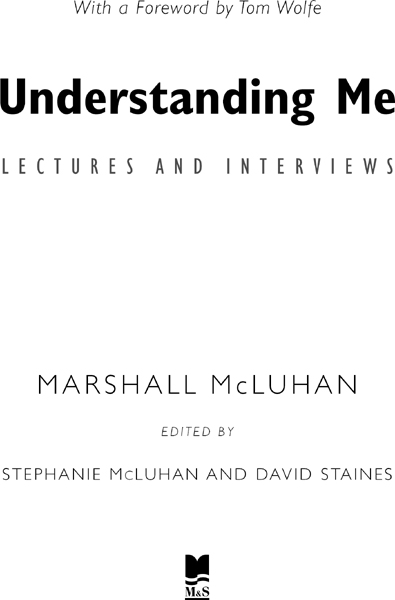
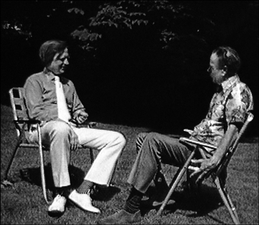
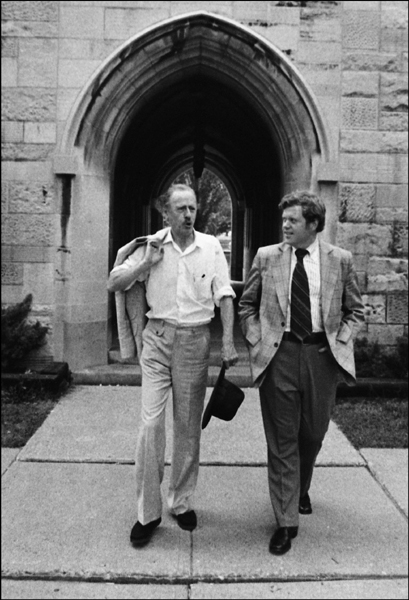

前言 汤姆·沃尔夫（Tom Wolfe）
序言 斯蒂芬妮·麦克卢汉（Stephanie McLuhan）
电子革命：新媒体的革命性影响（1959）
大众文化：美国视角（1960）
技术、媒体与文化
传播革命
控制论与人类文化（1964）
电气时代的人类未来（1965）
媒介即按摩（1966）
预测互联网通信（1966）
马弗利特讲座（1967）
加拿大，边界案例
走向包容性意识
福特汉姆大学：第一讲（1967）
开放式思维手术（1967）
电视新闻作为新神话形式（1970）
书籍的未来（1972）
工作伦理的终结（1972）
艺术作为电气时代的生存方式（1973）
以光速生活（1974）
电视最擅长的事（1976）
电视作为辩论媒介（1976）
暴力作为身份追寻（1977）
人与媒体（1979）
后记 大卫·斯泰恩斯（David Staines）
跟我回到20世纪90年代::::::硅谷::::::互联网狂热::::::以及最早预言万维网到来的两位圣灵般的人物::::::
那是1999年11月，我在加州帕洛阿尔托，硅谷事实上的首都。就在硅谷这里，计算机产业在过去的十二个月里诞生了十四位新亿万富翁。我每天早上吃早餐都能见到亿万富翁。每天早上；硅谷的权力早餐场所是一家名为Il Fornaio的餐厅，恰好就在我住的酒店花园庭院的一楼。我喜欢这场表演。没什么能把我拦住。
亿万富翁们你绝对不会错过。他们都穿着紧身牛仔裤或卡其裤，衬衫卷起袖子，前襟解开到肚脐，露出皮肤和胸毛（如果有的话），脚上穿着皮制船鞋不穿袜子，露出脚踝和跖骨的骨骼结构……即使是那些五十多岁的人，他们耳朵上方长出铁丝般的毛发，耳垂下垂得像他们的肩膀和背部一样严重，弯曲得像字母n。他们看起来像洗得干干净净的拾荒者。他们的衣服太单薄了，不可能携带手机甚至传呼机，更不用说Palm Pilot、黑莓、RIM寻呼机或HP-19B计算器了。每个亿万富翁身后都会跟着一位副官，可能只值六七千万，穿着同样的服装外加一件运动夹克。为什么要穿运动夹克？为什么？是为了口袋，用来装手机、传呼机、Palm Pilot、黑莓、RIM寻呼机和HP-19B计算器。穿着婴儿服的亿万富翁！你能在Il Fornaio从二手狂热中获得快感。
但很多崇高的振奋来自比一夜之间的IPO亿万财富之类更高尚的东西，某种接近精神层面的东西。网络空间有它的远见者，他们告诉硅谷的每个人，他们所做的不仅仅是开发计算机和创造一种新的奇迹媒介——互联网。远不止如此。原力与他们同在。他们正在全地球上编织一张无缝之网，将永远使国界和种族分界变得毫无意义，并从字面上改变、转变人类这种生物的本质。硅谷的每个人都相信这一点并穿着相应的服装。原力的忠实信徒不会穿着沉闷的西装和苍白乏味的衬衫，配上”有趣的”爱马仕领带和黑色牛津鞋带鞋，像东海岸那些沉闷过时的华尔街工作投资驴子那样。
网络——W总是大写——是未来的世界，即数字宇宙（Digital Universe），原力有自己的福音期刊。Upside杂志的编辑理查德·L·布兰特（Richard L. Brandt）说（1998年9月），他预计”在我有生之年看到美国政府被推翻”，然而不是被革命者或外国侵略者，而是被比尔·盖茨的微软。盖茨和微软为万维网提供的软件”将逐渐使美国政府过时”。与此相比，盖茨本人穿着运动鞋时还算谦虚，他写道他是”一场划时代变革”的一部分，这场变革”将像地震一样影响世界”。地震般意味着像地震一样。进化过去以十万年为单位来衡量。但计算机科学家丹尼·希利斯（Danny Hillis）在Wired杂志上写道，多亏了”电话、计算机和CD-ROM”，今天”进化发生在微秒之间……我们正在起飞……我们不是进化的最终产品。有什么东西会在我们之后出现，我想象它是美妙的东西。但我们可能永远无法理解它，就像毛虫无法想象变成蝴蝶一样”。
如我所说，这是一种狂热，一种千禧年愿景——而这一切都受到一位加拿大文学学者的启发，他在互联网存在之前十五年就去世了。他的名字在1964年出版《理解媒介》一书之前在加拿大以外并不为人所知，他就是马歇尔·麦克卢汉（Marshall McLuhan）。到1996年，网络信徒们将麦克卢汉的著作和预言视为新的进化理论。
我想不出在二十世纪后半叶还有哪位人物能如此主导整个研究领域。在十九世纪之交和二十世纪初的几十年里，生物学领域有达尔文，政治学有马克思，物理学有爱因斯坦，心理学有弗洛伊德。此后，传播学研究领域只有麦克卢汉，或者更准确地说，麦克卢汉和一位沉默的伙伴。正是这位沉默的伙伴造就了麦克卢汉主义：一个建立在看不见、说不出、禁忌的宗教基础上的科学理论。
麦克卢汉从小作为浸信会教徒长大，从外表看来，他的家庭是广袤的加拿大西部移民的典型。他们是苏格兰-爱尔兰新教徒,说话时把house和about读作howse和abowt。他父亲的祖辈是农民,父亲本人是保险推销员。但他的母亲埃尔西·霍尔·麦克卢汉则是另一回事。她是来自海洋省份的世界主义者、有教养的东部人，英国血统，受过良好教育，专业训练是朗诵家，是戏剧圈里的传奇人物，巡回加拿大各地进行戏剧朗诵。尽管她经常不在家，但正是她主宰着这个家庭，也是她引导马歇尔和弟弟莫里斯（后来成为长老会牧师）走上学术道路。由于即使是明星朗诵家，更不用说西加拿大的普通保险推销员，都挣不了多少钱，麦克卢汉一家生活俭朴，但埃尔西·麦克卢汉会确保在适当的时候，让她的儿子马歇尔这位学术明星到国外接受教育。1920年，当他九岁时，全家从埃德蒙顿搬到温尼伯，他在那里上中学和大学，1932年从距家约一英里的马尼托巴大学毕业，获得学士学位，1933年获得英国文学硕士学位。然而，他的母亲心中有更宏大的资历目标。在她的督促下，他申请并获得了英国剑桥大学的奖学金。
此时的麦克卢汉非常像传统的年轻学者——“文学人”，这是他后来会嘲笑的类型，认为他们对自己研究和从事的媒介，即印刷品的本质一无所知且自鸣得意。事实证明，在20世纪30年代，剑桥、牛津和伦敦的文学生活绝非传统。这是大萧条的低谷期，英国知识分子开始关注下层阶级、“大众”，许多人作为马克思主义者，但也有人作为后来被称为流行文化的研究者。麦克卢汉被温德姆·刘易斯和剑桥学者F.R.利维斯的工作所吸引，他们把电影、广播、广告，甚至连环画当作一种新的”语言”来研究。
这也是希莱尔·贝洛克和G.K.切斯特顿等天主教作家的全盛时期，他们的机智和世故突然使天主教在文学圈子里变得令人兴奋，甚至时髦。伦敦文学界两位最聪明且看似最愤世嫉俗的人物W.H.奥登和伊夫林·沃在这一时期皈依了天主教。同样，马歇尔·麦克卢汉也是如此。他成为唯一教会的皈依者——以及流行文化研究的皈依者。尽管麦克卢汉的著作中几乎没有明显的宗教色彩，但这两种热情最终交织在一起，创造了麦克卢汉主义。
从剑桥获得第二个学士学位后，他于1936年在美国威斯康星大学开始了教学生涯。1939年他返回剑桥，在接下来的三年里获得了英国文学硕士和博士学位。威斯康星之后，他只在天主教机构任教，先是圣路易斯大学，然后是安大略省温莎的阿桑普申大学，最后是多伦多大学的天主教学院圣迈克尔学院，他于1946年加入该校教师队伍。
此时的马歇尔·麦克卢汉已经三十五岁，完全体现了埃尔西·麦克卢汉对知识的渴望——以及对舞台中心的渴望。他既是一位文学学者，十六、十七世纪英国文学和詹姆斯·乔伊斯作品的专家，也是一位有魅力的人物，通过他课外的苏格拉底式聚会吸引着师生群体，这些聚会致力于他所称的”工业人的民间传说”，在其中他解读他所看到的广告、连环画和新闻界的隐藏语言。他会展示一张拜耳阿司匹林广告的幻灯片，画面中一名鼓乐队指挥戴着军用头盔和长筒靴，手持像权杖一样大的指挥棒。标题写着：“在13.9秒内，鼓乐队指挥可以旋转指挥棒二十五次……但拜耳阿司匹林只需两秒就开始起效!”他会问，这样一则广告的真正语言是什么？它真正传达了什么？答案是，“正步行进的军事机械主义与长筒靴情色主义的结合”，性与技术的联姻，这是他命名为”机械新娘”的一个反复出现的广告主题。
那是他第一本书的书名,出版于1951年,当时他四十岁。《机械新娘》带有文学人士传统的反商业偏见,旨在将公众从广告业的操纵中解放出来;但它也将麦克卢汉引入了他在多伦多大学的同事——经济史学家哈罗德·伊尼斯的思想轨道。正如麦克卢汉自己迅速指出的那样,麦克卢汉主义的核心概念正是源于伊尼斯在1950年和1951年出版的两本书《帝国与传播》和《传播的偏向》:即任何伟大的新传播媒介都会改变使用它的人们的整体世界观。伊尼斯坚持认为,正是约翰·古腾堡在十五世纪引入的印刷术,导致了在接下来五百年间民族主义取代部落主义的传播。麦克卢汉于1962年出版了他的第一部重要理论著作《古腾堡星系》,当时他五十一岁。他称之为”哈罗德·伊尼斯工作的一个脚注”。
他的大师级之作出现在两年后,当时他将伊尼斯的方法推进到二十世纪和电视时代,推出了《理解媒介》。麦克卢汉的理论认为,印刷术强化了西方人的视觉感官,却削弱了他的其他感官,这反过来导致了许多形式的专业化(specialization)和碎片化(fragmentation),从官僚体制、现代军队、民族主义战争到精神分裂症、消化性溃疡、童年崇拜(他认为这是年龄的碎片化),以及色情(性与爱的碎片化)。在二十世纪下半叶…电视出现了。麦克卢汉说,电视逆转了这一过程,将人类的五种感官恢复到印刷术前、识字前的”部落平衡”。听觉和触觉感官重新发挥作用,人类开始在一个统一的”无缝网络”体验中再次使用所有感官。麦克卢汉坚持认为,电视不是视觉媒介,而是”听觉-触觉媒介”。这是他喜欢做出的那种反常表述,与常识相悖却不费心解释或辩论。他说,世界正在迅速变成”一个地球村”,这是电视无缝网络覆盖地球的最终结果。
麦克卢汉说,电视对中枢神经系统的直接影响可以在今天的年轻人——第一代电视世代——身上看到。正如他诊断的那样,所谓的代沟不是意识形态上的,而是神经学上的,是印刷术培养的一代人与其听觉-触觉的、新部落后代之间的差异。麦克卢汉近距离观察着新一代。1939年夏天,他在加利福尼亚探望在帕萨迪纳剧院教学的母亲时,遇到了美国女演员科琳·刘易斯,爱上了她,当场向她求婚,立即与她结婚,并将她带到剑桥,整个过程如此迅速,以至于她不得不给父母发电报告诉他们她现在是麦克卢汉夫人了。马歇尔和科琳·麦克卢汉有六个孩子,四个女儿和两个儿子。就个人而言,麦克卢汉对电视或任何其他电子媒介都没什么耐心,但他敬畏地看着他的孩子们似乎同时在学习功课、看电视、打电话、听收音机和播放唱片。他确信,新一代必然会在由印刷术束缚的教师管理的课堂上感到困惑和无聊。他认为,这意味着教育系统必须彻底改变。
但随后,新的感官平衡无论如何都会带来彻底变革——他用了大写的T和大写的C。正如轮子是人类脚的延伸,斧头是手臂的延伸一样,麦克卢汉说,电子媒介是人类中枢神经系统的延伸,这些神经系统将以不可抗拒的方式连接在一起。他的预测不是试探性的。人性将会不同。民族主义,印刷术的产物,将变得不可能。取而代之的是:地球村。他预测,在地球村中,将不再可能使种族群体彼此隔离。相反,所有人都将”不可逆转地相互关联并相互负责”。麦克卢汉警告说,地球村不是乌托邦的处方。事实上,它同样可能变成一场血腥屠杀。毕竟,他问道,我们在哪里能找到最精湛的屠夫?在村庄里。地球村可以轻易地将全人类聚集在一起进行屠杀,就像做任何其他事情一样容易。
然而,他也相信新时代提供了某种比乌托邦更崇高的可能性,毕竟乌托邦是一个世俗概念。“基督教关于神秘身体的概念,”麦克卢汉在少数几次明确提及他最珍爱的梦想时写道,“所有人作为基督身体的成员——这在电子条件下在技术上成为事实。”
在这里我们看到了一个引人入胜的人物的影子,他对麦克卢汉的影响与哈罗德·英尼斯一样深远,但麦克卢汉从未提及他:皮埃尔·德日进(Pierre Teilhard de Chardin)。德日进是一位法国地质学家和古生物学家,他最初通过在中国和中亚的化石考察而闻名。1911年(恰好是麦克卢汉出生的那一年),三十岁的他成为一名耶稣会神父,并在巴黎天主教学院教授地质学。他认为自己的人生使命是接受达尔文的生物进化论——这一理论曾严重动摇了基督教信仰——并证明它只是上帝为人类进化设计的宏伟计划中的第一步。上帝此时此刻正在指导着二十世纪人类向智慧圈(noösphere)的进化——这是德日进创造的词,智慧圈——通过技术实现所有人类神经系统、所有人类灵魂的统一。德日进(通常被称为Tay-yar)具体且详细地提到了广播、电视和计算机,并谈论了控制论(cybernetics)。不管人们如何看待他的神学,这个人的预言能力令人惊叹。他于1955年去世,当时电视刚刚开始广泛使用,微芯片甚至还没有被发明。计算机还是巨大的机器,像郊区客厅一样大,尚未进入流水线生产。但他已经在写”非凡的广播和电视通信网络已经将我们所有人连接在一种’以太化’的人类意识中”,以及”那些惊人的电子计算机增强了’思维速度’,为研究领域的革命铺平了道路”。他写道,这种技术正在为人类创造一个”神经系统”,“一个覆盖地球的单一的、有组织的、不间断的膜”,“一台巨大的思维机器”。“文明的时代已经结束,一个文明的时代”——他强调了”一个文明”——“正在开始”。那个不间断的膜,那个智慧圈,当然就是麦克卢汉的”无缝的经验之网”。而那”一个文明”就是他的”地球村”。
德日进写道,我们可能认为这些技术是”人工的”,完全”外在于我们的身体”,但实际上它们是我们神经系统”自然的、深刻的”进化的一部分。“我们可能认为我们只是在娱乐自己”通过使用它们,“或者只是发展我们的商业或只是传播思想。实际上我们只是在更高的层面上,通过其他方式,继续生物进化的不间断工作”。或者换一种说法:“媒介即信息”。
私下里,麦克卢汉承认他对德日进的巨大亏欠。公开场合他从未这样做。为什么?因为担心这会削弱他自己的原创性声誉?这与他的性格非常不符。毕竟,他公开且感激地承认了他对哈罗德·英尼斯的亏欠。更可能的原因是,在天主教知识分子圈子内——我们必须记住麦克卢汉在多伦多大学的天主教学院圣迈克尔学院任教——德日进处于异端的阴影之下。几十年前,教会禁止他教授或发表他的进化论,因为他接受了达尔文主义的大部分内容为真理。他关于这个主题的六本书在他生前都没有出版。但在圣迈克尔学院(他们称之为St. Mike’s)的知识分子中,存在着一个活跃的地下活动,一种德日进手稿的耶稣会地下出版物(samizdat),特别是在他1951年移居美国之后。麦克卢汉对德日进着迷,但他带来了一个问题。即使在死后,他仍然超出了天主教神学的界限,而麦克卢汉非常认真地对待他的信仰,尤其是因为他是一位从新教皈依的人,在一所主要的天主教机构任教。
但德日进也带来了一个世俗问题。麦克卢汉生活在一个即使带有一点宗教色彩的学术工作都不会被认真对待的时代。在教会内部,德日进可能被认为过于达尔文主义科学家,但在教会外部,他被认为过于天主教神秘主义者。当1964年《理解媒介》(Understanding Media)出版时,它充满了德日进的思想,但需要另一个德日进爱好者才能察觉到,而且必须是一个敏锐的人。书中没有一个神学音符被奏响。
事实上，《理解媒介》在1960年代中期以其独特的现世光辉在知识界引起轰动，并立即吸引了商业和工业界许多最虔诚的唯物主义者和实用主义者的注意。部分原因在于那个看似简单的标题——《理解媒介》，它像是一个挑战：“你们这些使用媒介的人、拥有媒介的人、在媒介上投资数百万并依赖媒介的人——你们根本不理解媒介以及它们如何真正影响人类。”到1964年末，通用电气和IBM等公司邀请麦克卢汉到美国向他们的高管演讲。他们的态度与其说是”他是对的！“不如说是”如果他是对的怎么办？（我们最好弄清楚。）“麦克卢汉告诉通用电气，他们可能认为自己在制造灯泡，但实际上他们和AT&T一样，都在从事信息传递的业务。电灯是纯粹的信息，是一种没有讯息的媒介。他有些居高临下地赞扬IBM终于意识到他们不是在制造设备，而是在处理信息。他擅长告诉那些有权势且本该知情的人，他们对自己的企业没有最基本的理解。然而，他从不采用故意震惊的语气。他始终是学者的姿态，说话极其严肃。在发表他最深奥的论断之前，他总是把下巴缩进脖子里，沿着他那张苏格兰地主式的长脸往下看。他似乎超越并高于他们所有人，从一个先知的宇宙层面俯瞰他们。
但真正让马歇尔·麦克卢汉从一位有着有趣理论的多伦多大学英语教授变成全球知名的”麦克卢汉”的，是旧金山广告人霍华德·戈萨奇的奇特介入。戈萨奇被《理解媒介》所吸引，自费充当麦克卢汉的传播者，在1965年将他带到美国，并向西海岸和纽约的新闻界和广告业介绍他。事实证明这是一次辉煌的宣传活动。杂志文章、报纸报道和电视露面以惊人的速度产生。1965年末，《哈珀杂志》和《纽约杂志》都发表了关于麦克卢汉的重要文章。仅在1966年一年，这个数字就增长到120多篇，几乎出现在美国、加拿大和英国的每一份重要出版物上。人们兴奋的是，这里可能有一个拥有达尔文或弗洛伊德量级洞察力的人。
随着他的名声增长，批评者的队伍也在壮大，特别是在文学界人士中，他经常把他们说成是守旧的、反动的，甚至对他们自己的媒介——印刷品——的实际运作方式都一无所知。与此同时，科学家们不知道该如何评价他。他理论的核心——人类”感官平衡”(sensory balance)的概念——属于认知心理学或更广泛地说，神经科学的领域。今天神经科学是学术界最热门的话题，但即使现在也无法确定这种平衡是否存在，或者像电视这样的媒介是否能改变一个人的神经系统，更不用说整个社会和历史进程了。麦克卢汉以令人抓狂的超然态度对待所有批评者。他坚持说他不是在试图创建一个自成体系的理论——尽管实际上他可能确实在这样做——他是一个先驱，正在向广阔的未知领域进发。已知的太少，而时间又如此有限。他的使命是探索，进行”探测”(probe)——用他最喜欢的词之一——开拓这片领域。其他人，那些后来者，可以进行系统的调查、临床实验、组织数据和解决争议。他把所有反对意见都斥为弗洛伊德所说的”阻抗”(resistance)，即面对关于人类本性的精彩新启示时，不愿放弃过去那些令人舒适的观念。
在《理解媒介》引起的所有兴奋之后，麦克卢汉在多伦多大学建立了文化与技术中心。这是一个令人印象深刻的实验室式名称，但实际上不过是一个信头、一张桌子、他手写用的格纸，以及他那令人惊叹的丰富而敏捷的头脑。在这方面，麦克卢汉像西格蒙德·弗洛伊德。弗洛伊德所说的大部分内容都未能经受住过去半个世纪的科学审查。事后看来，我们可以看出他是一位才华横溢的旧派哲学家，恰好生活在一个只有科学才被奉为真理的时代。所以到了晚上，他把他的哲学思辨从诊所的后门带进来，到了早上又把它们作为科学发现从前门带出去。文化与技术中心的麦克卢汉也是如此。归根结底，麦克卢汉始终是一位文学人，继承了塞缪尔·约翰逊、托马斯·卡莱尔、马修·阿诺德和G·K·切斯特顿的伟大传统，拥有对他所生活的时代的精彩洞察力。
然而，他从未讨得文学界人士的欢心，因为他许多最机智的、切斯特顿式的言论都是以他们为代价的。当被要求评论1960年代作家和学者纷纷投身抗议运动时，他说：“道德上的刻薄是赋予蠢人尊严的基本技巧。”
在20世纪70年代中后期,那些曾经嘲笑他的人终于报了仇。麦克卢汉似乎没有意识到,一个学术界的名人如果想要保持自己在世俗世界的显赫地位,就必须表现得对那些愉快地将他的声誉放大到明星地位的记者、演艺界人士和出版商们视而不见,或者至少保持完全的超然态度。弗洛伊德和爱因斯坦对此非常清楚。1922年,《芝加哥论坛报》向弗洛伊德提供了25,000美元(相当于今天的300,000美元),邀请他来美国,在”寻求刺激的杀手”利奥波德和勒布的审判期间提供精神分析评论,供《论坛报》刊登。这位大胡子老人根本不会这样做。他来美国只是为了在马萨诸塞州一个不起眼的、远离城市新闻界的小克拉克大学发表一场深奥的演讲。相比之下,麦克卢汉出版了一些合著的书籍,书名带有玩笑意味,比如《媒介即按摩》(The Medium is the Massage),还让伍迪·艾伦在喜剧电影《安妮·霍尔》中客串出演他本人,扮演一个爱说双关语的、深奥的理论家。当他在1980年因一系列中风去世时,享年69岁,他的批评者们,主要是纽约的知识分子,已经成功地将他钉上了”不严肃”的标签,因此认为他已经过时了。
然而,麦克卢汉引入了一个观念,那就是像电视这样的新媒体有能力改变人类的思维,从而改变历史本身。这个观念被世纪末快速增长的年轻计算机技术人员们所延续。1992年到来了——砰!——一种新媒介出现了,计算机连接到电话线,创建了互联网。互联网让麦克卢汉主义再次焕发生机,麦克卢汉本人也被复活,几乎成为了守护神。对于最前卫、最著名的新互联网杂志《连线》(Wired)来说,他确实是守护神,该杂志在每一期的刊头附近都刊登他的照片。
天哪——要是马歇尔在20世纪90年代还活着该多好!那十年对他来说该是多么美好的天堂!他会多么热爱互联网!他会把他的地球村变成多么光彩夺目的奥兹国!看哪!三十年前的预言实现了!人类神秘统一的梦想——变成了现实!
当然,第三个千年刚刚开始,互联网泡沫就破灭了,麦克卢汉在硅谷的年轻使徒们震惊地醒来。他们摇了摇头想清醒过来,试图重新聚焦他们对未来的愿景。许多人做不到。但是一支基甸军队般的年轻人能够看到一个小小的卤素灯泡,不比旅行装牙膏盖大,仍在燃烧……它的光芒照耀着他们……他们说它现在仍在照耀。
新的传播理论家将会出现,仿佛直接从沥青、混凝土、乙烯基瓷砖或PermaPour地板中冒出来。但有一件事不会改变。首先,他们必须与麦克卢汉较量。
这本书是大卫·斯泰恩斯(David Staines)的创意,他认识到了本书所依据的视听材料的文学潜力。尽管作为联合编辑,我们从不同的角度接近这个项目——大卫是一位文学历史学家,而我是一名电视制片人——但我们对主题有着共同的深入了解。此外,我们长期的友谊使这次合作非常愉快。
我记不清第一次见到大卫是什么时候。多年来,他多次拜访我们家。因此,当我需要就如何处理我在二十五年间收集的大约二十多盘马歇尔·麦克卢汉的演讲和电视采访录像带寻求建议时,打电话给他似乎是合乎逻辑的。我希望大卫能推荐一个理想的大学传播学系,我可以把它们捐赠给那里;然而,他热情地说这些材料可以做成一本重要的书。我对他的建议感到惊讶,坚持我们应该先聚在一起看一遍这些录像带,然后再做决定。当我们看完后,他总结了这本拟议中的书:它将只包含以前从未出版过的原始资料,并基于从1959年到1979年二十年间电子记录的未经编辑的演讲和电视采访。这看起来很直接,所以我们同意致力于这个项目。
经过许多个月的努力、大量的头脑风暴和几次错误的尝试,我们完成了这个项目,我们的关系也保持完好。有一些令人沮丧的时刻,通常发生在我们仔细研究各种演讲的文字记录时,这些记录比电视采访要难理解得多。我们需要读三遍甚至四遍才能完全理解一篇文章,主要是因为它包含了太多的思想和观点。
在这二十篇按时间顺序排列的选文中,当然有一些观点会多次出现,但跟随麦克卢汉多年来思想过程的发展是很有吸引力的。他对自己作品和世界的看法是他出版物的宝贵补充。
这些演讲和采访加在一起构成了一部传记/自传,使您能够阅读原汁原味的马歇尔·麦克卢汉,在那里您会发现比通过他的书籍更容易接近、甚至更直接的接触。
在脚注中,我们试图识别每一个引用。然而,在少数情况下,我们无法找到确切的信息。
我们真诚地感谢汤姆·沃尔夫(Tom Wolfe)撰写的精彩前言,感谢创作这些采访的广播员和采访者,感谢提供演讲背景信息的大学档案管理员。
1959年3月3日，马歇尔·麦克卢汉在芝加哥向一千多名教育工作者发表演讲，这次活动由美国高等教育协会主办。会议的主题是”与时间赛跑：高等教育的新视角和新要求”，麦克卢汉的演讲题目是”电子革命：新媒体的革命性影响”。
这位四十七岁的麦克卢汉已经出版了《机械新娘：工业人的民俗》(The Mechanical Bride: Folklore of Industrial Man)（1951年），这是他对广告业操纵技巧的精辟剖析。到1959年，他已成为学术界及更广泛领域公认的大众媒体先驱思想家。
在这次演讲中，他以教育工作者的身份向教育工作者听众发言：“我们如此迅速地开始感受到电子革命的影响……以至于我们所有人今天都成了流离失所的人，生活在一个与我们成长的世界几乎毫无关联的世界里。”电视的电子革命使教师不再是信息的提供者，而是洞察力(insight)的提供者，学生也不再是消费者，而是共同教师，因为他已经在课堂外积累了如此多的信息。
在后机械时代的今天，我们的处境就像那些马车思维的人面对汽车时的情况一样。对于马车思维的人来说，汽车最显著的特点就是它是一辆无马马车。同样，对于那些已经习惯了电报奇迹的人来说,收音机就是无线电报。对于机械思维的人来说，自动化(automation)令人恐惧，因为它是机械化的极端形式；但正如彼得·F·德鲁克在他的《明日的里程碑》(Landmarks of Tomorrow)一书中所说，自动化”只不过是一个特别难听的词，用来描述将物理生产过程视为一种配置和真实实体的新观点。”
我们如此迅速地开始感受到电子革命的影响，它为我们呈现了新的配置，以至于我们所有人今天都成了流离失所的人，生活在一个与我们成长的世界几乎毫无关联的世界里。我们大多数人都能回忆起孩子们在人行道和马路上推着铁环的日子。现在的铁环比以前更多了，但没有孩子会去推它。因为今天的孩子们生活在一个配置与三十年前截然不同的空间里。他们不再被以线性方式设计的外部空间所吸引，而是以芭蕾风格聚合自己的空间。例如，生活在电子影像中——影像是由光线穿过而非照射形成的（这是电视与电影的一个主要区别）——孩子们以新的感官配置和新的态度来回应他们的世界。
教育工作者自然会觉得他们的工作是维护教育机构，保护和推进长期以来与其程序相关的价值观。现在这意味着，例如，我们将坚持要求约翰尼掌握阅读的艺术，哪怕只是因为印刷品是西方工业生产方法的母体(matrix)，印刷品也教授消费者习惯和观念。印刷品教授将所有运动分解为静态单元的顺序分析和片段化习惯。印刷品教授隐私、自力更生和主动性的习惯。它提供了我们母语资源的大规模视觉全景，而前文字社会的人们只能通过听觉了解这些。事实上，印刷品不仅是通向我们文化和技术的途径，它本身就是我们的文化和技术。这就是为什么在电子时代，我们受到新的快速移动和灵活媒体的威胁——而我们却坐在马奇诺防线(Maginot Line)里，坚信我们立场的重要性。
当然，约翰尼必须阅读。他必须遵循印刷品的行列。他必须把那个铁环推下人行道。他必须以线性、顺序的方式转动眼睛。我们只需将旧的右撇子习惯嫁接到他新的左撇子习惯上，就能赢得我们的观点。但与此同时，我们将失去他的注意力，他可能会被制服，但他会完全困惑。
从长远来看，媒介即信息。因此，当一个社会通过集体行动发展出像印刷、电报、照片或收音机这样的新媒介时，它就赢得了表达新信息的权利。当我们告诉年轻人这个新信息对旧信息或旧媒介构成威胁时，我们是在告诉他们，我们在联合的社会和技术生活中所努力做的一切都在破坏他们所珍视的一切。年轻人只能得出结论：我们并不严肃。这就是他们注意力下降的意义所在。
从长远来看，媒介即信息。用历史来解释和证实这一点并不难。印刷术直接消灭了希腊罗马世界中设计的主要口头教育模式，这些模式通过表音字母和手稿在整个中世纪得以传承。印刷术在几十年内就终结了这个持续2500年的模式。今天，印刷术的统治地位已经结束，新媒介的寡头政治篡夺了那个存在五百年的王朝的大部分权力。这个寡头集团中的每个成员都拥有与印刷术本身同等的力量和信息。我认为，如果我们要在这些新寡头之间建立宪政秩序和平衡，就必须研究它们的配置、心理动力学和长期信息。把它们当作我们既定惯例的卑微仆人（视听辅助工具）来对待，就像把X光机当作取暖器使用一样致命。西方世界以前犯过这种错误。但现在随着东方的崩溃，也就是说，随着人们认识到除了在西方模式基础上，任何地方都无法建立可行的社会，现在让我们自己的新媒介清算旧媒介将是非常糟糕的时机。电子信息模式的信息和形式是同时性的。那么，我们这个时代所需要的，不是媒介和教育程序的连续更替，就像拳击冠军的更迭一样，而是基于对每一种独特配置的固有力量和信息的认识而实现的共存。
心理学家鲁道夫·阿恩海姆在他的《电影作为艺术》一书中写道：“人类智慧的历史表明，几乎每一项创新都会经历一个初步阶段，在这个阶段中，解决方案是通过旧方法获得的，只是被某些新特征修改或放大。”
在过去的三十年里，我们所有传统的艺术和科学学科都从线性因果模式转向了配置模式。在生物学中，这一点尤其明显。然而，用于实现配置的方法仍然是应用于生命有机体研究的经典力学的旧笛卡尔方法。应力(stress)、代谢生态学(metabolism ecology)和综合征(syndrome)等配置概念本质上是美学术语。
当我们从机械主义时代和线性连续分析类型进入同时性的世界时，我们不仅进入了艺术家的世界，而且看到了艺术与自然、商业与文化、学校与社会之间旧有对立的消失。我们今天转向文化的哪个阶段其实并不重要。同时观察过程所有阶段的习惯，正是该领域中清晰认识的特征。
因此，在今天通过技术手段传播信息的过程中，我们拥有迄今为止最大的产业。仅美国电话电报公司的资本就远远超过通用汽车公司。信息的生产和消费是我们这个时代的主要业务。文化已经接管了商业。在工业内部，工人和管理层课堂的增长所获得的预算至少是北美160亿美元正规教育预算的三倍。在研究方面，趋势和比率也类似。
信息的全天候、全球传播现在是瞬时配置的问题。商业和教育中的决策与外交中的决策一样，现在都是掌握这些配置的问题。它们有自己的语言和句法，就像图片广告的图像学一样，因此今天教育的任务不仅是教授这些新语言，而且要教授如何用这些新力量丰富我们之前实现的文化配置，而不仅仅是被它们溶解。笛卡尔去世后，法兰西学院提出了科学的经典定义：“通过事物的原因获得的确定而明显的知识。”生存表明，我们要通过预见来把握电子媒介在其所有文化配置中的内在原因而非影响，并据此在教育中做出完全有意识的策略选择。
著名的法国人类学家克劳德·列维-斯特劳斯在对”神话的结构研究”的分析中，向我们展示了典型的配置洞察：“我们将神话定义为由其所有版本组成……因此，不仅索福克勒斯，而且弗洛伊德本人，都应该被包括在俄狄浦斯神话的记录版本中，与早期或看似更’真实’的版本处于同等地位。”应用于教育媒介研究，列维-斯特劳斯的洞察——这是我们时代艺术和科学方法的特征——意味着我们必须将媒介视为神话结构，视为群体经验和社会现实的大规模编码。正如印刷术深刻改变了表音字母的结构并重塑了西方世界的教育过程一样,电报也重塑了印刷术，电影、广播和电视也是如此。媒介神话中的这些结构性变化共存于学习和教学过程的永恒模型中。这一庞大结构不断变化的配置不可避免地改变了我们每个人的视觉、听觉和感觉的倾向，使我们时而倾向于一种偏好模式，时而又倾向于另一种。今天，通过电子手段，文化的共存以及媒介发展所有阶段的共存，首次为人类提供了一种从特定媒介在其发展的专门阶段的感官奴役中解放出来的手段。
Harold Innis所称的传播的偏向不仅关注人们选择编码信息的形式，还关注石头、莎草纸和印刷术对决策结构变化产生的因果影响。
Parkinson先生最近以备忘录综合征(memorandum syndrome)的书面模式分析了官僚决策过程，为我们提供了娱乐性的见解。在几十年的电子信息模式之后，书面形式的信息传递开始显得过时。目前，加拿大喷气式战斗机的副驾驶员必须在完全不同的配置中做出决策，即瞬时性(instantaneous)。在被分配到共同任务之前,他们要经历一个被称为”约会”的漫长阶段。当最终被分配到他们的飞机时，指挥官会在一个庄严的仪式上公开地”嫁娶”他们。今天，人们认为只有婚姻才能表达在使用新技术进行决策时所需的亲密程度、容忍度和同理心。这种新模式是自电报以来媒介所传递的潜意识但压倒性的信息。然而，在我们的教育机构中，我们还没有为研究这些深刻的信息做出任何安排，这些信息从孩子们存在的最初几天起就对他们的感官设备施加了配置。然而，为了对抗媒介辐射(media fallout)的持续影响，似乎有必要做出一些这样的安排。
在多种媒介中信息商业流动的一个效果是，今天我们生活在没有围墙的教室里。印刷书籍通过提供可精确重复的信息创造了我们所知的教室。即使手稿或手工书籍足够便宜让所有人使用，它也永远无法做到统一或可重复。此外，最好的手稿阅读起来很慢，并在学生心中创造出一种对语言完全不同的感受——一种对多层含义的感受。这种感受在今天又回来了，尤其是自电视出现以来，它的光是穿过图像而不是照在图像上。简而言之，印刷页面不再只是更便宜的手稿，就像汽车不是无马马车一样。印刷品的可重复性在科学和工业中产生了我们仍在探索的后果。
但是所有以前的配置，包括活字印刷术的配置，当它们遇到来自新型配置的强大新压力或拉力时，都会经历一种炼金术般的变化。
我把始于电报的电子时代称为后机械时代(post-mechanical age)。因为现在，在我们的新结构中移动的不再是轮子和轴(除了偶然情况)，而是光本身。我们现在可以深入了解古腾堡神话和技术的形态。我们对古腾堡配置因果运作的了解现在可能会使印度人和中国人免于不必要地清算他们文化中的许多元素，这些元素我们在西方已经开始重视。但更紧迫的是，我们需要预见我们新媒介中潜在的全部因果力量，以便我们能为我们自己的印刷文化做些什么，就像我们也可以做些什么来拯救中国表意文字书法和教育一样。对任何新媒介所有未来效应的一种炼金术般的预知是可能的。在电子条件下，当所有效应在相互碰撞和出现中加速时，这种对后果的预期既是基本需求也是新的可能性。例如，我们目前对教育中闭路电视的关注，与十六世纪关于印刷术和方言是否能够完成严肃教育工作的关注是平行的。这实际上是在问汽车是否能够取代马。我们在这种静态的回顾中浪费了宝贵的时间。
让我提到电子配置的一个中心特征，即它强烈倾向于逆转生产者-消费者关系。几个世纪以来，印刷术稳定了一种生产者-消费者关系的模式。但在一个世纪前的电报出现后，报纸读者不得不承担起前电报时代报纸读者所不知道的编辑功能。
当新闻移动缓慢时，报纸有时间为新闻提供视角、背景和相互关系，读者得到的是一个消费者套餐。当新闻高速传来时，就不可能进行这样的文学加工，读者得到的是一个自己动手的工具包(do-it-yourself kit)。这种电报模式很快被转移到诗歌、绘画和音乐中，让以消费者为导向的人感到困惑。当John Dewey试图将同样的电子或自己动手模式转移到校内教育时，他失败了。他没有充分分析情况，也没有瞥见作用于他自己事业的媒介因素。但如果他只是将自己动手的偏向转向对年轻人进行校外媒介感知和判断的训练，他就会成功，我们所有人今天在教育上都会处于更强的位置，因为这正是我们现在必须处理的任务——训练年轻人掌握新的全球媒介。
到目前为止，我的大部分评论都在指出技术原因的本质，这些原因在过去和现在都会在教育模式中产生变化。这些原因主要是潜意识的和非语言的。难道不是因为我们对艺术和艺术家在将体验的潜意识和非语言因素提升到有意识表达层面上所扮演的角色有了觉醒的认识，所以现在在教育和工业中都赋予了艺术新的重要性吗?
在电子化全球社区这样一个同步信息结构中，我们无法承受潜意识因素的影响，因为它们的运作是随机的。同步性迫使我们建立一种社会秩序，就像诗歌或绘画一样，在其相互关系中完全实现，其中每个因素都具有完全的相关性。
简要记录一些目前可识别的基础教育变革，这些变革可能预示着主要的发展方向，让我提出以下建议:
在识字时代，我们教育了越来越多的社会成员。在电子时代，我们将更深入地教育每个人。我们现在从教育的扩展转向更大的扩展，但也包括深度上的扩展。
这不正是我们对天才儿童新关注的趋势吗?
今天新批评的意义不仅仅是识字能力，而是转向全面深度阅读，而不是旧有识字能力的单一层面方法。
当我们通过电视和录像带扩展教育运作时，我们会发现教师不再是数据的来源，而是洞察力的来源。由于电视本身的特性，将需要越来越多的教师进行深度教学，这种教学方式是透过光线而不是光线照射。
由于电视这种媒介本身，对越来越多深刻教师的需求在小组讨论节目中已经初露端倪，至少从广播开始，它似乎比单一的评论和信息来源更自然。两个或更多教师之间以及与班级或观众的对话，恰恰创造了那种透过光线而不是光线照射的感觉，这是电视图像或马赛克的本质，与电影或印刷品相比。同样，在小组讨论中，声音是穿过观众而不是传向观众。
正如工业现在通过动机研究使消费者成为生产者一样，教育工作者现在不也认识到教育问题是动机问题而不是包装信息的消费问题吗?充分激励的学生在消费和认知中具有创造性。他是共同作者和共同制作人，因此新的教学必须越来越多地让学生扮演共同教师的角色。事实上，由于他在课外体验中大量摄取信息，他已经潜在地处于这样的位置，而这些信息只有部分被教师分享。
教育的重点将越来越多地转向发现和相互关联。正如工业生产现在完全依赖高等教育，文化已成为全球的主要业务一样，学习而不是教学很可能成为收入最高的职业。当我们开始为参与而学习，而不是为专业性、应用知识的行动模式而学习时，我们可以回顾并看到日益增长的会议习惯如何已经预示了教师和学习者角色的这种变化。用于生产的应用知识现在被视为理所当然，知识转向社区和参与的全球角色，这种方式与新媒体的角色相称。
[1.] Peter F. Drucker, Landmarks of Tomorrow (New York: Harper & Brothers, 1959), p. 5.
[2.] Rudolph Arnheim, Film As Art (London: Faber & Faber, 1958), p. 146.
[3.] Claude Lévi-Strauss, “The Structural Study of Myth,” Journal of American Folklore 68 (1955), p. 435.
1959-60年，在多伦多大学休假期间，麦克卢汉担任华盛顿特区全国教育广播协会”理解新媒体项目”的主任。他是一位极其多产的学术文章作者，到这个时候，他对电子媒体的观点在学术界已经非常知名，他成为1960年10月28日和29日俄亥俄州立大学研究生院主办的第三届人文学科年会的核心人物。会议的总主题是”流行/大众文化:美国视角”。
第一天，麦克卢汉做了题为”技术、媒体和文化”的演讲。在他职业生涯的这个阶段，麦克卢汉对新电子媒体的潜力毫不掩饰地乐观:“全球学习社区的出现是一个自然结果，在这个世界中，商品的生产和运输最终与信息本身的移动融合在一起。”
第二天，麦克卢汉参加了由当时领先的文化评论家Gilbert Seldes(1893-1970)主持的小组讨论。主题是”传播革命”。与麦克卢汉一起参加小组讨论的还有俄亥俄州立大学传播学的两位教授:视听教育教授Edgar Dale(1900-1985)和广播教育教授Keith Tyler(1905-94)。在他们的对话中，麦克卢汉阐述了他最著名的理论之一，即电视是一种冷媒介(cool medium)，不能容忍热角色(hot characters)。
几年前，哈佛大学远东研究系的一位教员在北京与一位官员朋友共进晚餐。他既高兴又困惑地注意到，房间里装饰着美国海报、大学校旗、可口可乐瓶、火柴盒和美国杂志上的广告。这位哈佛人热情地谈论官员对这里展示的美国生活的广泛兴趣。但这位官员说，他只是想回报他在美国的许多朋友对他的礼遇，那些朋友的墙壁和壁炉架上摆满了来自东方集市的苦力艺术品、印刷品和家庭垃圾。
同样地,我们可能曾困惑地听说毕加索一直对美国连环漫画艺术有着浓厚的兴趣,而詹姆斯·乔伊斯则让自己周围充满了最流行的歌曲和新闻材料。福楼拜是乔伊斯在诗意审视大众艺术刻板印象方面的导师。他在上世纪中叶对这些新兴流行形式的分析,使他有理由说,如果人们读过并理解了他的《情感教育》,就不会有1870年的战争。同样,温德姆·刘易斯指出,如果人们理解了他在《统治的艺术》中对流行文化的分析,就不会有第二次世界大战。
这些人关于他们认真审视流行艺术的观点,现在正被约翰·肯尼思·加尔布雷思在最新一期的《视野》杂志(1960年9月)中提及。加尔布雷思在写到”缪斯与经济”时,就商业提出了一个多世纪以来西方世界艺术家们早已明白的观点,即对于决策者而言,流行品味无法提供及时的数据。但实验艺术家始终在构建未来情境的模型,为社会导航者提供可靠的指引。社会科学家只能报告当前的品味模式,他们无法像艺术家那样接触到未来的模式。原因很简单,正如温德姆·刘易斯对我所说,艺术家”正在撰写一部详细的未来史,因为他意识到当下未被利用的潜力。”
同一期《视野》杂志的下一篇文章出自拉塞尔·莱恩斯,他几年前在《生活》杂志上报道了所有已知自然法则和经济法则的逆转——美国身无分文的知识分子在消费品设计控制中掌握了主动权。我们这次会议的主题本身就说明了思想和感知范畴在消费品方面的固化。高度识字者最典型的特征就是假设流行文化和精英文化之间的差异在于所消费产品的类型。他们想当然地认为”从他们的玉米片就能认识他们”,而不是”从他们的成果”。我们整个人文学科项目都建立在价值的消费者假设之上。我们的作家、诗人和艺术家不得不在别处——在报社、在麦迪逊大道、在好莱坞——学习生产者导向和创造力。欧洲一直慷慨地承认我们在流行商业领域艺术创作的独特力量和价值。他们从未有过可与之匹敌的东西,现在才刚刚进入我们北美已准备放弃的消费者价值世界。
书籍是第一件大规模生产的商品。印刷品本质上具有统一性和可重复性,它不仅创造了”商品”这一概念本身,还使这些统一且可重复的商品市场成为可能。当印刷流水线的形式和模板扩展到所有生产形式时,也塑造了我们对精英活动的态度,这是很自然的。在英国和美国,精英阶层都是食莲者,是进口商品的优雅消费者,仅仅因为以印刷为导向的世界就是一个消费者世界。在过去一个世纪里,我们的机械印刷星系一直在向电子星系移动,导致即使在熟悉的组成部分中也出现了模式的重新配置。电子星系是生产者导向的,重新连接了我们的文化回路,并给我们传统的消费者价值投下了不祥的光芒。这个始于电报的过程,在电视出现时已达到完整规模。我们的青少年采取了艺术家的视角,拒绝了消费者世界。甚至在商业领域,正如约翰·肯尼思·加尔布雷思这样受欢迎的作家所证实的,艺术与商业之间的旧争端已以联姻告终。我们现在已为西方戏剧中的突转做好了准备。长期以来,我们钦佩前文字社会和半文字社会中落后人群的自发性和艺术,现在我们发现自己正通过新的电子媒体走在重新部落化的道路上。长期以来谈论大众社会中个人的困境之后,我们现在可以准备写一写个人主义世界中大众人的困境了。甚至车轮——西方机械事业的基础——在喷气时代也可能重新融合回它最初从中抽象出来的动物形态。
个人与大众之间冲突的整个戏剧,最有益的研究角度是从诗人与其媒介的关系来考察,因为语言在各个意义上都是一种大众媒介。没有哪个特定的人创造了它。然而个人总是必须用这种大众媒介来思考、梦想和感受。诗人以一种特殊的方式充当语言的守护者和革新者。
画家兼作家温德姆·刘易斯将大量精力投入到研究和描绘西方向原始和非理性人类的”神圣”听觉空间的回归。他拒绝了斯宾格勒对这一发展的描述。刘易斯没有采用斯宾格勒关于内在宇宙必然性的流行观念,而是将从理性、视觉价值观的迁移责任直接归咎于那些登上流行大众媒体潮流便车的艺术家、科学家和哲学家。也就是说,刘易斯诊断出前卫画家和诗人对报纸和电影技术的偏爱是一种智识失败,也是对西方价值观所有道德责任的放弃。刘易斯对乔伊斯和庞德的批评,并不质疑他们高超的艺术才华,但嘲笑了他们愿意追随本世纪流行艺术和潮流的态度。
在对我们这个时代愿意放弃整个希腊-罗马成就遗产的控诉过程中，刘易斯对二十世纪的大多数方面和活动进行了审视。他的作品提供了对其时代艺术和文学的指南，这可能是文学史上任何其他作家都无法提供的更完整的指南。在平静中回顾他的许多卷著作，我们不妨问一问：“最高级和最严格的知识分析针对我们在本次会议上选择考虑的问题，有什么用呢？”
1896年，伯纳德·贝伦森写道：“画家只能通过赋予视网膜印象以触觉价值来完成他的任务。”他不仅非常赞同印象派的潮流，而且在倡导电视图像。与电影图像不同，电视的马赛克网格用触觉价值轰炸观众。因此，流行技术似乎响应了艺术的最高要求。正是在这类问题上，刘易斯抨击他的艺术家同行只是顺应技术。刘易斯对时代精神(Zeitgeist)和那些试图辨别时代精神的面貌以便与之保持一致的艺术家极为蔑视。他没有被任何关于新艺术形式的影响可以通过高尚的”节目内容”的点缀来减轻的想法所误导。艺术家们一直知道，任何艺术形式都有能力将其自身的假设强加给观者。任何传播媒介，就像艺术形式一样，都是我们一种或多种感官的延伸。单独的语言是我们所有感官的延伸。我们感官的外化混合或比例（“uttered” = outered），语言、广播或摄影中涉及的我们感官的比率、混合或比例，以非语言的方式强加了所有人类操作的参数或框架。任何人类联系模式中未言明甚至潜意识的假设，都由编码经验和移动信息的可用手段所决定。对这一相当严峻事实的普遍认识，似乎在拼音字母出现后不久就从识字社区中消失了。当字母是一种革命性的新事物时，卡德摩斯神话被创造出来以解释字母的社会运作。即，卡德摩斯国王将腓尼基字母引入希腊，他播下了龙的牙齿，从中涌现出武装的人。神话似乎很简单地是在一瞥或格式塔中对因果关系的复杂作用的感知和陈述。在电子时代，当信息流中的时间和空间因素大大减少时，对我们来说，就像对小型口语社区中的人一样，神话式思考再次变得自然。因为今天很容易察觉到任何类型的创新中嵌入的后果。如果我们看不到它们，它们会很快打击我们。例如，在今天的工业设计中，产品和消费者反应之间的差距已经缩小到他们用詹姆斯·乔伊斯的话说：“他的生产者不就是他的消费者吗？”而不是让公众了解新产品的老式概念，他们现在谈论让产品意识到其公众或目标。新媒体的后果被感知得如此之快，以至于最迟钝的头脑也开始通过检查将要释放给公众的形式或原因来预测这种影响。
一段时间以来，工业预算的最大项目一直是研究拨款。这是出于必要。工业星系被推动得如此迅速，以至于它不断侵入其他星系，导致压力和配置变化。彼得·德鲁克在他的著作《明日的地标》中指出，在决策中行使委派的权力不再可行，而只能行使知识的权力。当信息以书面形式缓慢移动时，工作专业化和金字塔式的功能层级是正常的，甚至是可行的。电话和相关的电气仪器使熟悉的组织模式像装配线一样过时。后者已被电子磁带记录的信息流所清算，该信息流精确协调的不是一个而是整个操作集群。理查德·迈尔在今年四月在安娜堡发表的论文《信息、资源使用和经济增长》中阐述了媒体的自然法则，他指出信息流水平的提高会导致可替代性(substitutability)：
随着电气工程的精细化，以及许多化学知识链的融合——这个领域在其自身的主流中快速发展，从质量反应到分子、原子，最近到核反应——一个灵活、快速行动、自主的经济的可能性出现了。它能够用一组原材料替代另一组原材料，以应对几乎所有可预见的减少或切断供应的紧急情况……剩下的任务是重新设计社会制度，使其与已揭示的资源可用性和技术效率潜力相一致。
随着所有文化对所有文化以及所有主题对所有其他主题的可访问性的平行增加，西方世界教育机构的重新设计同样紧迫，不是作为理想，而是作为必要性。过去十年中，旧的公司管理模式不得不重新设计。新模式明显是核式或场式的，而不是旧的员工和生产线以及金字塔功能的管辖层级。
新的模式是由具有多样化能力的小团队组成的集群，团队成员习惯于在持续的跨职能对话中跨越功能界限，进行相互渗透的意识交流。我们已经开始在大学的人文学科部门看到这类团队的出现。但我们倾向于假设大学的整体专业结构仍然与教学任务相关。很快我们将开始从历史角度思考当前的知识划分和分类是如何建立起来的。同样地,现代数学和物理学也不得不脱离欧几里得空间的假设和参数。
Mircea Eliade 的《神圣与世俗》这本书致力于说明空间和时间对于原始人来说是非均质和非连续的。也就是说,任何地方任何时代的部落人都假定他们时刻遇到的所有空间和时间都具有独特的结构。这种观点对于塞尚以来的画家、波德莱尔以来的诗人以及核物理学家来说都是正常的。今天的问题是要解释那个异常现象——欧几里得空间及其相关的连续时间。由于没有任何前文字社会经历过欧几里得空间,我希望提出这样的建议不会太大胆:欧几里得空间的虚构可能以一种非常特殊的方式将其存在归功于我们西方的拼音字母经验。象形文字、图画文字和表意文字的书写模式不会倾向于产生平坦、笔直和均匀空间的抽象虚构。但拼音字母是一种抽象技术,用于将言语的多感官模式转译为纯粹的视觉模式。字母是文明的语言,因为它们将部落人从其复杂的听觉和触觉世界转译为一个简单的视觉世界,我们自其发明以来一直称之为”理性”。另一方面,数字作为科学的语言,一直是将纯粹视觉转译回触觉和声音的手段。Tobias Dantzig 在他的书《数:科学的语言》中告诉我们,“将理性算术应用于几何问题的尝试导致了数学史上的第一次危机。”今天,这场危机正在大规模的文化层面发生。我们理性的欧几里得世界——由拼音字母从共振的部落世界推演出的连续均质空间——现在必须面对电子技术对其不相关性和多余性的挑战。我认为 Dantzig 可以进一步帮助我们找到方向。就在刚才引用的段落之前,他正在解释数学中对文艺复兴时期”无限过程”概念的关键运用。如果这个概念不是源自透视或消失点的新认知,至少也与之平行。Dantzig 说:“所有无限过程的原型是重复。”这是收敛、后退、消失点、透视、无限等概念的一个方面,与古腾堡技术密不可分。因为均匀性和可重复性对于印刷术来说就像视觉性对于拼音字母一样基本。
Dantzig 继续说道:“无限过程对于技术生活的实际需求的重要性怎么强调都不为过。算术在几何、力学、物理甚至统计学中的几乎所有应用都直接或间接涉及这些过程……放逐无限过程,纯数学和应用数学就会退回到前毕达哥拉斯时代的状态。”也就是说,没有字母或微积分的微小分割,就无法转译,无法从触觉的、共振的部落世界架起桥梁通向理性的、平坦的视觉世界。
Dantzig 只是指出,在无限过程的帮助下,数字可以通过将拼音字母创造的视觉欧几里得空间转译回触觉和声音的触觉模式来测量我们的世界。我们从部落的多感官世界中抽象出来所付出的许多代价之一是,我们越来越依赖数字来让我们重新与那个部落世界建立联系。因此,数字这个字母的仆人最终超越了它的主人文明也就不足为奇了。因为如果走到极致,数字或触觉测量给了我们新的电子媒介,它将共振的触觉世界恢复为一种即时数据和包罗万象的文化矩阵。
Dantzig 说:“我们关于曲线弧长的概念可以作为一个例证。物理概念建立在弯曲的金属线上。我们想象我们在不拉伸的情况下拉直了金属线;然后直线段将作为弧长的度量。现在我们所说的’不拉伸’是什么意思?我们的意思是长度没有变化。但这个术语暗示我们已经知道一些关于弧长的信息。这样的表述显然是一种乞求论证,不能作为数学定义。
替代方案是在弧内内接一系列边数不断增加的直线轮廓。这些轮廓的序列接近一个极限,弧的长度被定义为这个序列的极限。”
也就是说,微积分是一种将一种空间转译为另一种空间的手段——特别是将视觉空间转译为触觉和听觉测量领域。
对于长度概念成立的事实，对于面积、体积、质量、力矩、压力、力、应力和应变、速度、加速度等概念同样成立。所有这些概念都诞生于一个“线性的、理性的”世界，在那里除了直线、平面和均匀之外什么都不会发生。因此，要么我们必须放弃这些基本的理性概念——这将意味着一场真正的革命，因为这些概念在我们的思想中根深蒂固；要么我们必须使这些理性概念适应一个既不平坦、也不笔直、也不均匀的世界。
但是平面、笔直和均匀如何能够适应其正好相反的东西，即倾斜、弯曲和非均匀呢？显然不能通过有限数量的步骤来实现！这个奇迹只能由那个创造奇迹者——无穷——来完成。既然决心坚持基本的理性概念，我们别无选择，只能把我们感官所感知的”弯曲”现实视为一个无限序列中的终极步骤，而这个序列由仅存在于我们想象中的平面世界组成。
数学家为科学提供的适应、补偿和校正扭曲的导航技术，艺术家也为被社会技术和媒介变化所扭曲的感受力提供同样的技术。
当然，丹齐格认为建立在我们感官之上的欧几里得空间虚构有什么基本的或独特理性的东西是错误的，这些虚构是由表音字母所建立的。阿基米德的豪言在表音字母中得以实现。使用表音字母的文化站在人类的眼睛上，并将所有其他感官撬动到扭曲的配置中。今天，阿基米德可以通过广播站在耳朵上，或者通过电视站在我们的触觉上，并将这些器官的操作扩大到拥抱整个地球。但让我们清楚地认识到，电子技术取代并消解了欧几里得理性空间。作为教育工作者和负责任的公民，我们必须探究是否选择为一项技术变革付出代价，这项变革不仅用多重空间和时间取代了我们长期持有的欧几里得世界，而且还从西方世界过去三千年的所有法律、政治和教育程序下抽走了基础。这些后果仅仅源于将信息流提升到电子的速度和水平。正如信息论中众所周知的，随着信息水平的提高，不仅一种自然资源可以替代另一种，而且任何学科划分也会消失。我们面对的是统一场中的原始力量线和发展线。在部落的、前文字社会中没有学科，但可能存在智慧。没有历史，因为所有时间都是当下。即使在手抄本文化中，历史也很少。手抄本传递信息的速度太慢，无法建立视角或为人物和事件提供详细的图像背景。没有印刷书籍使读者自然形成的固定视角习惯，历史态度中就几乎不可能有视角。今天，我们重建过去的文化和时期及其所有鲜活的相互关系，而不是试图发展单一视角。同样，人类学家研究史前或古代人类时，不是关注他的经济生活、艺术或语言，而是同时参考所有这些方面。随着信息水平的提高，固定视角让位于包容性的多维意识。自塞尚和波德莱尔以来的诗人和画家使我们熟悉了这些新模式，为我们提供了新时代的方位和方向。
也许可以在新闻界找到一个有用的例证，说明历史态度和程序发展中发生的同样变化。观点新闻，其中新闻经过编辑消化、安排并针对受众呈现，在电报出现后经历了巨大变化。当新闻从许多方面以高速涌入报社办公室时，它无法以旧的观点风格进行处理。电讯作者必须采用中立的语气，以便众多条目可以组合成单一图像。从东京、北京、台湾、柏林、莫斯科、纽约和伦敦传来的新闻也没有任何一个可以观看的视角。报纸制作者的唯一做法是按照马赛克(mosaic)的基础进行。在单一日期线下，他组装电传打字机带来的文字和视觉图标。他不是从政策视角向受众发表讲话，而是将受众作为其包容性马赛克图像的一部分。“人情味”记录了受众成为表演的时刻。在这一刻，一场激进的政治革命被启动了。这是大众媒介诞生的时刻。大众媒介是指信息不是针对(at)受众，而是通过(through)受众传递的媒介。受众既是表演也是信息。语言就是这样一种媒介——一种将所有使用它的人作为媒介本身一部分的媒介。随着电报、电子和即时性的出现，我们遇到了同样的部落包容性，同样的听觉和口头的场域整体性，这就是语言。
这只是替代性原则的众多实例之一，当信息层级上升到很高时，这一原则就会发挥作用。这一原则现在不仅延伸到我们的主要产品和自然资源，还延伸到我们的传统学科、主题，甚至我们的传播媒介。但是对于媒介，就像对于主要产品一样，如果我们允许一种媒介来完成另一种媒介的工作，我们必须充分了解它们的属性。电报新闻不是书籍或观点新闻的替代品。为了使电报适应报纸，或使电报新闻适应观点新闻的政治目的，必须在教育过程中进行大量调整。这些调整从未进行过。结果是对旧有政治形式的洗脑和新形式的兴起。今天，认为电影、广播或电视可以传递旧有学科和主题的信息，这种观念是基于一个假设，即信息的传递者是中立的。X射线装置可以变得很热，但它完全不适合作为空间加热器。我们的电子媒介就是这样强大的装置，却被置于空间加热器这种荒谬的角色中。印刷书籍长期以来被视为手稿的廉价和粗俗形式。但这种书籍并没有将旧有的教育形式扩展到更广泛的公众。它瓦解了对话，并创造了全新的政治权力和个人联系模式。而我们的新科学和数学不仅瓦解了欧几里得空间，还在全球范围内重新创造了部落生活的模式。我们必须理解，电子速度和信息传播方式为整个地球创造了口头村落的条件。因此，我们必须准备好看到我们关于个人与国家和社会关系的所有概念的终结。我们必须以同样的梦游般的听天由命精神接受这些后果，就像我们敦促新技术清算所有建立在旧有字母和印刷技术平台上的价值观和制度一样。
E. H. 贡布里希在他最近的《艺术与错觉》中，将立体主义视为”消除歧义并强制对画面进行单一解读的最激进尝试——即将其解读为人造建筑，一块彩色画布。“立体主义是一种在同一时刻从多个角度观察物体所有方面的方法，这与电报新闻几乎等同，电报新闻每小时提供一个包容性的全球快照。然而，贡布里希是对的，他认为当透视或三维的歧义被推得足够远时，它们会突然产生一组相反的特征。我们突然面对的不是图像空间，而是形式空间。我们遇到的不是包含物体的视觉世界，而是一个每个物体创造自己空间并像旋律一样强加自己假设的世界。
贡布里希的《艺术与错觉》中有一段话对文学家具有即时吸引力。他正在讨论阿德尔伯特·艾姆斯知觉实验室中呈现的三维歧义。他想确定为什么我们希望将第三维或透视维度视为非虚幻的:“在这一点上明确幻觉的本质是很重要的。我相信，幻觉在于我们确信只有一种方式可以解释我们面前的视觉模式。”这也是印刷读者最珍视的幻觉。由于从未调查过的原因，“一个明确含义”的概念从未”困扰”过手稿读者，无论是古代还是中世纪。可能是印刷的更高清晰度创造了对排他性而非包容性含义的期待。但就在一代人之前，文学界对最简单的词汇和句法中多层次表述的重新发现感到震惊。随着我们更深入地进入电子银河系，重新配置字母和古腾堡银河系中古老模式的压力变得势不可挡。
因此，我们现在可以很容易地理解古代世界在字母表出现时所感受到的不安。欧几里得虚构在人类感知模式中的增长，在当时就像今天核非欧几里得经验模式的回归一样令人不安。贡布里希在写到公元前六世纪和五世纪图像空间和幻觉的兴起时说:“柏拉图谴责这种骗术的强烈程度提醒我们一个重要的事实，即在他写作的时候，模仿(mimesis)是一项近期的发明。”
再次:“最后是希腊绘画的历史，正如我们在彩绘陶器中所看到的，它讲述了五世纪初透视缩短法的发现和空间的征服，以及四世纪对光的掌握。”
我们今天很容易就能看出，希腊世界向图像和欧几里得空间的转变绝非自然。无论过去还是现在，前文字时代的自然人都生活在一个图式世界中，这在儿童和原始艺术中可以看到。这种艺术不让眼睛占据主导地位。洞穴艺术更偏爱声音和触觉的多层次、多模式，而非视觉。语言本身也是如此。但语音技术将言语转化为视觉，使眼睛在其他感官之上获得了优势地位，这对人类来说绝非自然。我并非在做价值判断。自然的未必就是可取的。但眼睛对其他感官的优势地位给了我们模仿(mimesis)的奇迹、透视缩短(foreshortening)的奇迹，以及最终的透视和消失点(vanishing point)的奇迹，几个世纪以来我们一直将其视为自然和理性的。这些假设与电子媒介的假设并不一致。广播的”讯息”是全球部落鼓(global tribal drum)的讯息（海明威的钟声），唤醒最原始的记忆，用不完整的深刻感受和对自私的分离性和个人主义的内疚意识扰乱有文字素养的视觉人。广播对文字素养较低或刚刚具备文字素养的社会的讯息是一种高清晰度的要求，要求将部落价值观提升到新的强度。但电视的讯息是触觉性(tactility)，要求与过程世界融合。对深度、内在和外在的关注，以及对永恒和稳定的渴望，标志着新兴的电视一代。在电影中，观众成为摄像机，成为世界贪婪的眼睛；而在电视中，观看者就是屏幕。随着电影的出现，出现了”我要告诉全世界”名声的狂热外向一代。随着电视的出现，我们遇到了一个认真的内向世界，其目标是与之同在，倾向于深度的全面投入，这也是意识和表达。因为对过程的痴迷也延伸到制作和认知的过程，创造力和秩序的过程。这些趋势不会推动年轻人退回子宫。
也许这段关于我们自电视以来越来越追求理解创造过程的说明，可能是表明立场的理想切入点。甚至可以进行一些乌托邦式的设想。我们这些印刷文化的成员很容易被新发展打乱，因为我们觉得需要将新事物纳入旧框架。我们倾向于用视觉模式对数据进行图像化和分类。当数据根本不是视觉性的时候，它们就会逃脱我们的秩序框架并造成混乱。
人们常说，本世纪的主要发展是发现了梦的夜晚世界。这不是高度个性化的心理姿态世界，而是集体编舞(choreography)世界，在其中所有人类活动都转化为所有其他人类行为，印刷一本书转化为生育一个婴儿，打一场战争转化为追求一个女人。白天，我们追求原创性；夜晚，我们被迫抄袭。白天，我们是双层锅炉的上半部分。夜晚，我们是下半部分。我们都热气腾腾，但我们不知道在煮什么。
在照亮私人和集体的夜晚世界方面，乔伊斯在《芬尼根的守灵夜》中所做的，只是电灯在废除夜晚和白天、内部和外部空间之间的旧划分方面所做的事情，这涉及人类的工作和娱乐。一旦内外、意识与无意识的互补动态被展示出来，就很容易观察语言在塑造人类假设（感官和心理方面）中的运作。《芬尼根的守灵夜》是一部关于词语、文字、道路和砖块、电报、广播和电视的起源和影响以及它们如何改变人类光谱色调的知识百科全书。
让我们暂时回到对过程、学习和创造力动态的日益增长的认识，我认为这种认识从电视图像的潜意识模式中获得了新的力量。彼得·德鲁克在《明天的地标》中指出，运筹学(Operations Research)是”有组织的无知”。这是一种处理问题的程序，类似于济慈的”消极能力”(negative capability)——一种智力柔道。不要把所有可用的努力都用在可见的目标或问题上，而是让解决方案从问题本身产生。如果你不能让牛远离花园，就让花园远离牛。怀特海德喜欢说，十九世纪的伟大发现不是这个或那个发明，而是发明技术的发现。这非常简单，坡、波德莱尔和瓦莱里大声宣称，即从问题的解决方案开始，然后找出通往解决方案的步骤。换句话说，倒着工作。这就是运筹学，其中冶金问题由心理学家和历史学家处理，而不是由冶金学家处理。因为专家事先对问题了解太多。他看到了为什么它无法解决。但是由不同能力的聪明非专家组成的团队，由于事先看不到困难，一次又一次地快速取得了成功。管理的新模式是具有不同能力的小型团队，而不是工作层级的金字塔。刚从印度回来的世界领先的管理顾问之一伯纳德·穆勒-蒂姆博士说，在核时代，文盲是印度最大的资产。他采用了坡、波德莱尔、乔伊斯和运筹学的创造力技术。
今天，当信息流动本身已成为世界上迄今为止最大的产业时，工业反过来不再是机械化的，而是成为计算机和电子磁带移动生产信息的场所。劳动力逐渐从工业场景中退出。它将去往何处？它将做什么？任何问题的答案总是在问题本身之中。在我们更早期的经济中，问题在于调整供需关系。今天，在即时信息流动的条件下，供应创造需求就像漂浮物体排开其在水中的重量一样容易。信息本身长期以来一直是最大的消费商品。随着信息传递手段的增加（卫星广播是这方面一个惊人的发展），自然资源的类别出现了流动性。例如，随着信息水平的提高，几乎任何自然资源都可以替代任何其他资源。后天知识(acquired knowledge)的类别也是如此。因此，今天地球已经是一个学习共同体。大学不再是一个加工年轻思想的地方，而是成为人类交往的常态。在校园里发生的人类对话在全球范围内呈现出国家和社区的生活典范特征。
在一个商品生产和运输最终与信息流动本身融合的世界中，全球学习共同体的出现难道不是一个自然的结果吗？我们难道不能从以下事实中获得极大的希望和振奋：我们最高的技术不仅源于个人创造性过程和意识，而且直接滋养它？正如罗伊·哈维·皮尔斯曾经对我说的：“在经历了许多世纪不顾并反对媒介的生活之后，我们难道不是正要通过学会与我们的传播媒介共存并依据它们来发现人类共同体的基础吗？”
对于这些媒介，作为我们自身能力在人类历史上首次延伸到我们之外并创造出一个外部的人类感知系统，如果能够理解它们的力量和影响，就能提供个人和社会平衡的直接手段。如此看来,我们珍视的价值观必然会比过去的社会更加繁荣发展。认知和识别的行为是至高无上的人类行为,也是所有人类共有的行为,我们通过艺术形式将其外化或表达出来,而这些艺术形式往往被各种精英阶层占为消费品。然而,电子信息流动形式以及由此产生的人类表达和联系模式的必然特征是决定性地面向生产者的。观众越来越多地参与到创作行为中,这让长期以来对艺术持消费者导向的精英阶层感到震惊。精英文化与大众文化之间的二元对立,就像个人与社会之间的对立一样,是新技术星系入侵并重构另一个更古老的星系时所强调的短暂不适。如果在印刷和识字星系被电子星系入侵的过程中,我们仍然被迎面而来的意象所麻痹,我们就无法看到旧星系中熟悉组成部分所呈现的新压力和张力模式。在这个时代,不仅非印刷而且非语言交流已经成为常态,我们对识字能力感到恐慌。然而,正是那些困扰旧识字模式的模式开启了人类对我们生活深处词语形成和词语行为的复杂性和丰富性的意识——这种新知识已经明显导致了更好的语言学知识和更好的阅读习惯。曾经使社会原子化的印刷文字现在起到了凝聚社会领域的作用。个人主义这个敏感问题也是如此。这些问题对于任何个人的观点来说都太过庞大而无关紧要。但如果我们比怀特先生更仔细地观察组织世界,我们会发现,最初似乎在工业中扼杀个人的交流改进,也导致在组织的各个层面的决策中首要强调创造性自主权。这对于老员工来说起初是如此痛苦,以至于引发了诸如”不确定性经济学”之类的痛苦呼声。今天很明显,变化不仅是我们社会中的常数,而且适应变化是完全不可能的。我们没有时间去适应,必须用理解变化过程来代替。但在过去,难道所有自由精神不都在谴责人类适应和屈服于环境压力的屈辱吗?我们不能再屈服了,无论我们个人的顺从倾向有多强。机械时代原子化和非人化的团队合作模式正在瓦解和消失。我们大多数人会深切地怀念它们,哪怕只是因为它们代表了一个我们既塑造又反抗的世界。但在旧的不妥协和僵化之处,我们已经看到了新的流动性和灵活性,这将考验每个人的内在资源。我们可以在各方面看到新形式和新要求。长期以来作为精英奢侈品的高等教育,现在已成为最普通的生产和规划过程的必需品。当奢侈品被期待成为每个人的必需品时,我们会更加珍视它吗?答案是明确的肯定。因为运用和交流知识是一种快乐,这种快乐随着我们同胞的拥有而增加。如果无穷知识的运用和交流提高了人的品质,那么在电子时代,他将有史上第一次普遍的机会成为丰富的人。但这种将人类对话延伸到包含所有人和所有知识的做法,在某些人看来可能会把地球本身变成一台计算机。
戴尔: 我们将在这里讨论一段时间关于传播革命的整个问题,我想我们所说的是指在过去几十年里,我们见证了现代媒体的巨大崛起——所谓的广播、电视、电影——它们对我们的美国文明,实际上对所有西方文明都产生了深远的影响。塞尔德斯先生,前几天你很好地阐述了其中涉及的内容,我认为这可能是一个很好的开始方式。
塞尔德斯: 我想你所说的是我提到的正在接近这个领域的各种学者,我当时正在努力,现在仍在努力确保我们或多或少在谈论同一个主题,我认为从这个意义上说我们确实如此,虽然你可以从社会学家或语言学家或任何数量的学者那里获得对这个主题的不同方法….一方面,我们都在试图找出新传播的本质是什么。电影或广播等每一种媒介的特殊本质是什么?我们称之为大众媒体的所有这些媒体放在一起的本质是什么?我想我们接下来想说的是所有这些媒体对我们做了什么,然后我提出我自己的专长。我们对它们做什么?现在,我认为我与你的看法并没有太大不同,麦克卢汉先生。
麦克卢汉: 不,我从你自己的工作中学到了很多,塞尔德斯先生,你比我们任何人都先进入这个领域。可以说,我们一直沿着你的足迹辛勤工作。
Seldes: 然而，你和我都对另一个人充满热情，那就是加拿大经济学家哈罗德·英尼斯(Harold Innis)。你不认为他真正阐明了这场革命的本质吗？你可能知道他使用的确切词语，即传播手段的巨大变革与随之而来的社会变革之间的联系。
Tyler: 你知道，麦克卢汉，你可能会像我所知道的那样，将前一个时期描述为印刷时期，将现在这个时期描述为电子时期，并指出你认为两者之间存在哪些明显的区别。
McLuhan: 我认为，当一种新媒介出现时，会发生这样的事情：你会以一种前所未有的方式意识到旧媒介的基本特征，而当它们是唯一存在的东西时，你是不会有这种意识的。我认为现在我们比以前更清楚地认识到印刷品是什么。自从电视出现以后，广播似乎更加明确了自己的身份，电影也是如此。因此，从某种意义上说，由新媒介带来的这场革命有一个巨大的优势，那就是揭示了旧媒介的一些早期特征，使它们更易于理解和更有用，让我们对它们有更强的控制感。
Tyler: 不用说，当我们进入电子时期时，我们并没有放弃印刷时期。
McLuhan: 不，旧形式被用于新用途并发现新角色似乎是很自然的。例如，书籍在我们这个时代发现了许多五十年或一百年前从未有过的新功能。它已经变得非常有力地指向教人们如何学习书籍以外的其他东西，如何学习多种艺术。书籍已经承担了一个巨大的新功能，即作为一种手段来告知人们，在许多许多领域指导人们的技能。
Dale: 麦克卢汉先生，您有时将印刷品说成是线性的。苏珊·兰格(Suzanne Langar)在她的书《新调子里的心理学》中谈到话语性和非话语性传播。您会如何将这与她所发展的方案相契合？
McLuhan: 嗯，我认为那些在视觉上将语言排列成行的人——高度连续、精确和僵化——会养成习惯，以非常紧密地与这些形式相适应的方式来安排他们的生活，安排他们整个社会的存在。他们对此并不特别清楚。然而，线性并不是广播、电视或电影的特征。因此，我们受到了巨大的新力量、新影响的作用，这些力量打破了从印刷世界获得的旧习惯。
Seldes: 您是说我们倾向于以直线方式思考，直到我们摆脱……
McLuhan: 我们仍然喜欢说跟随一个人，或者以直线方式得出结论。“我不跟随你”，或者”我跟随你”这类话确实暗示我们认为思想本身——
Seldes: 但请注意我们当代的短语”我理解你(dig you)“。
McLuhan: 这当然更接近于电视这种媒介，顺便说一句，电视对年轻人产生了一种奇怪的影响，驱使他们到图书馆去寻找事实类书籍。图书馆员报告说，年轻人对事实类书籍而非小说有着巨大的新兴趣。嗯，我的意思是，我在想事实类书籍是你必须挖掘的东西。你不能在一条线上阅读它，就像在单一平面上的故事层面一样。你必须挖掘事实类书籍。今天的年轻人挖掘他们的阅读。他们深度阅读。
Tyler: 但从某种意义上说，你是在说这场革命的一个特征是人们与事物在一起，也就是说，我们与它们的交流速度如此之快，以至于我们与事件同在，而不是在事后线性地逐一了解它们。
McLuhan: 但这不是一种单纯的描述性或叙述性关系，也不是单纯的观点关系。你看，如果你有一个观点，你就并不真正与情境同在。你已经抽象出了一个角度，一个方面作为你的。在与之同在的新情境中，你没有观点。你只是在所有层面上用你的整个存在来认同。
Dale: 您是说摄影和这些新艺术更原始，我们需要用这些新媒介进行更少的抽象吗？
McLuhan: 我认为原始这个词可能会产生误导，但它确实暗示人们较少习惯于抽象单一方面、单一层面等等，并且习惯于对情境进行更包容、完全感官性的投入。
Seldes: 那么，麦克卢汉，回到戴尔先生的原始这个词，迹象表明我们将有一个不那么老练的普通公众。你说当你与它同在时，你不再需要有观点。这就是人们正在提出的抱怨。人们没有自己的观点，没有自己特定的个人方法来对待事物。确实有人说过，大众媒介有这种效果，因为我们都看到同样的东西等等，但你暗示在它们自身的性质中有某种东西强化了这一点。
McLuhan: 是的。
Seldes: 所以当我提到英尼斯原则，即作为新传播手段的结果会有一个转变，一个社会变革时，我发现你所说的含义是，这不会是一个有利于智力本身的变革。那么，我们会有不那么聪明的人吗？
McLuhan: 例如，这种”与之同在”非常具有对话的特征。在与别人对话时，你不会保持固定的观点。你在交换，你在相互渗透，相互修正，每个人的观点都被对话本身所修正。你不会保持一个固定的观点，而这在杂志文章或书籍中是你会做的；你看，这是自然的。
Seldes: 你是说当我在看电视节目时——我现在说的是娱乐电视节目——我在某种程度上参与其中，我与它同在。我正在与眼前发生的一切进行对话？
McLuhan: 我认为，电视图像的特性促进了这种参与，仅仅因为它是一个相当贫乏的图像，它让观众参与大量的细节补全，这些细节在图像中是视觉缺失的。观看电视的行为很大程度上是一种参与，就像阅读侦探小说一样，你非常投入，恰恰是因为你没有得到太多叙事信息。你必须自己填补它。
Tyler: 我想说的是，这让知识分子的工作变得更加困难，因为他与所有这些事件同在。如果他要有任何时间进行反思、解释，乃至领导，他必须有意识地从中抽离。否则，他只是一切事物的一部分，随着它们的发生而存在，他从未真正有时间提炼出其本质。
Dale: 我也想知道，这些摄影技术、这些新技术，是否不是在引导人们重新回到印刷品？例如，我听人们说，拿《生活》杂志来说，他们一开始有大量照片，后来转向更多印刷文字。Tyler先生，是否有可能，广播或诸如此类的设备促使人们更好地阅读？
Tyler: 我认为当然所有这些媒介都是相互关联的，只要它们被有意识地使用。其中一个困难，你提到广播，这是个难题，因为今天广播很大程度上被用作其他活动的一种背景。
Seldes: 广播实际上消除了噪音或减弱了家庭的噪音，所以孩子们可以伴着它学习。我知道这发生在很久以前，发生在我认为我意识到所有这些含义之前。我希望McLuhan能更深入一点，因为我对Innis的变革理论相当肤浅。
McLuhan: 他的观点是，处理信息传播的任何变化必然导致所有社会模式、教育模式、政治权力的来源和条件的巨大调整。公共舆论模式会改变。但他走上那条轨道相当有趣。你看，作为经济史学家，他一直在研究铁路、鳕鱼渔业、毛皮贸易和纸浆造纸，然后他从作为塑造经济生活形式的主要产品(staples)转向作为主要产品的媒介，他开始研究新媒介作为真正的基本经济资源。就像，比如说，南方的棉花塑造了整个文化，现在广播正在塑造一种全球文化。它在资源可用性的范围上是全球性的。所以看起来即将出现的是一种与像广播这样的主要产品相符的全球文化，就像南方文化与棉花相符一样。
Seldes: 然后他继续用简单的例子说，印刷术出现后，整个封建制度崩溃了。现在我担心的是，他没有活得足够长来预测任何事情，什么会崩溃？目前权力的转移将会在哪里？
McLuhan: 我们在个人私人学习习惯、孤立努力、内在导向等方面取得的巨大发展，这些很可能会受到那些如此包容整个社会、处于所有层面的媒介的冲击。想想此刻通过在政治中使用电视正在发生的巨大政治权力转移。
Seldes: 嗯，我真的很怀疑这一点。在过去三十年里，我只观察到一个使用视觉媒介的煽动家，那就是休伊·朗和电影。我被告知他在广播上非常出色，当他开始讲话时，他会说：“朋友们，在接下来的一分半钟里，我不会说任何重要的事情。你拿起电话打给几个朋友，让他们收听这个节目。” 这是非常聪明的煽动性使用，但唯一一次他吓到我是当我在电影和新闻片中看到他时，那时我真的感觉他有权力。
McLuhan: 麦卡锡在上电视一周后就垮台了。如果休伊·朗上了电视，他马上就会失败。电视不接受鲜明的角色，一个激烈的(hot)角色。它是一种冷媒介(cool medium)，我们的政治正在被冷却到尸僵的程度，根据许多人的说法。这种媒介的本质需要如此多的参与，它不会给你一个完整的包装、一个完整的图像。你必须在进行中构建你的图像。因此，如果出现在电视摄像机前的人已经是一个非常完整和可归类的人——一个政客、一个非常明显的医生类型、律师类型——媒介会拒绝他，因为观众没有什么可以观看或补全的，他们会说这家伙是个骗子。这家伙有问题。
Tyler: 我想让你对这个观点做出反应：自我们国家建立以来，权力平衡从一个投票并拥有财产权的非常小的群体，逐渐扩散到越来越大的群体。现在电视如何融入其中？就家庭拥有电视而言，我们几乎有普遍的电视。这是否意味着权力越来越多地流向大众群体？
McLuhan: 是的，从字面上讲，全体人口对政治过程的参与变得非常深入。这不再是评估论点、纲领、地区冲突等等的问题。每个人都与它同在——所有年龄群体。
Seldes: 你确定它是深入的吗？
McLuhan: 是的,问题不再以单一平面和单一模式呈现给你。它们是整体性的。
泰勒: 但这是一个非常好的观点，关于深度参与。这实际上是一种伪事件吗?
麦克卢汉: 不是。
泰勒: 你以为你接触到了现实，但实际上电视为你准备的只是他们想让你看到的那些方面，这给了你一种参与感，而你可能并没有真正参与。
麦克卢汉: 观众正在其成员之间建立一种新的联系形式。他们正在创造一种新的现实，一种新的艺术形式。
塞尔德斯: 你不认为我们只是在肤浅地学习更多东西吗?
麦克卢汉: 不，这是一个时代，在这个时代，新批评或心理学或其他任何东西，所有这些形式中使用的词是深度。深度阅读。深度心理学。现在一切都是深度的。
塞尔德斯: 这些是相对少数的专家和局外人。
麦克卢汉: 不不不不。
塞尔德斯: 你现在的暗示似乎与你几分钟前说的相反。我不是想设陷阱，马歇尔。我只是想弄清楚。现在，在某一点上，我的理解是，这些大众媒体让我们需要担心的是它们创造了非个人主义的人，那种与潮流同在的人，所以他与每个人都在做的事情同在，用现在已经陈词滥调的词来说，就是顺从者(conformist)。另一方面，你说电视可以用来传达信息和深度。这意味着它实际上可以用来让人们思考。
麦克卢汉: 在电视上效果最好的娱乐形式，无论是帕蒂·查耶夫斯基还是帕尔秀，都是那些允许大量随意性的形式，在这些形式中，人们可以在摄像机面前被介绍并在他们生活的各个层面进行对话。你可以在他们存在的各种奇怪和非主流的时刻捕捉到他们。这种探索和剥离人们表面方面的做法对这种媒介来说是正常的。它是一种深度媒介。相比之下，电影媒介更像是一种摄影般光滑的包装媒介，它给你一个定义非常明确、非常光滑、完整的包装。
泰勒: 但我仍然想回到我之前问的一个问题，就是有了这种与一切同在的感觉，难道不是仍然需要，甚至对于知识分子来说更需要，我认为对每个人来说越来越需要从这种同在中抽离出来，有时间进行反思，成为一个个体，而不仅仅是一个顺从的大众人?
麦克卢汉: 知识分子不一定需要隐私。他们需要智力对话的刺激。但你可以在与有能力的人进行长时间对话的过程中进行大量思考。
泰勒: 不是与电视的对话。
塞尔德斯: 这正是我同意你的地方。除了我们停止观看的时候，我们真的能思考吗?
麦克卢汉: 我认为现在是提出一个观点的好时机，当任何新形式进入前景时，我们自然会通过旧的刻板印象来看待它。我们无法避免这一点。这是正常的，我们仍在试图看看我们以前的政治和教育模式如何在电视下持续存在。我们只是试图把旧事物塞进新形式，而不是问新形式将对我们以前的所有假设做什么。这不好。
塞尔德斯: 我认为我们这里所有人都学会了阅读，因此保护书籍。但在书中我们可以读到，当书出现时，它遭到了谴责，因为人们说如果没有老师的权威在场，你怎么能从书本上学习?现在我们说，如果没有书本的权威，你怎么能在教室里有电视?我明白这一点。但我不确定当我们从新媒体中获得的大量内容在某种程度上是否真的让深入思考变得不必要，也许让思考变得困难。我对此表示怀疑。
戴尔: 这里还有另一点。我认为使用电视或电影时，它以持续的速度向前移动。换句话说，你无法检查它。现在对于书籍，你可以检查它。你可以回头看。你有一种记录。但我们不能假设一个人会得到录像带或安排在剧院重新放映电影，所以你没有机会检查某些新媒体。你只能随它而来地接受。
麦克卢汉: 另一方面，在阅读时，你在作者手中的程度，他只是被动地带你兜风的程度，一直被书籍读者绕过，没有讨论。他们有着从事伟大的私人智力发现的幻觉。实际上他们只是在兜风。
泰勒: 很明显，先生们，我们提出了很多问题，我们不会在一次简短的讨论中回答它们。
麦克卢汉: 当然，把这些东西摆出来供检查是非常有价值的，了解相关问题是什么。
[1.] Bernard Berenson, Florentine Painters of the Renaissance (New York: Putnam’s Sons, 1898), p. 4.
[2.] James Joyce, Finnegans Wake (London: Faber & Faber, 1939), p. 497.
[3.] Tobias Dantzig, Number: The Language of Science (New York: Doubleday, 1954), p. 139.
[4.] Ibid., p. 141.
[5.] Ibid., pp. 136–37.
[6.] Ibid., p. 137.
[7.] Ibid., pp. 137–38.
[8.] E. H. Gombrich, Art and Illusion (Princeton: Princeton University Press, 1960), p. 281.
[9.] Ibid., p. 249.
[10.] Ibid., p. 116.
[11.] Ibid., p. 117.
[12.] Peter F. Drucker, Landmarks of Tomorrow (New York: Harper & Brothers, 1959), p. 28.
1962年,麦克卢汉出版了《古登堡星系:印刷人的形成》,研究印刷术对西方个体和社会的影响。两年后,他出版了《理解媒介:人的延伸》,详细阐述了他关于传播过程和新电子媒介带来的社会变革的革命性思想。这两本书让麦克卢汉获得了国际声誉,成为世界上最权威的传播学专家。1963年,他被多伦多大学校长任命创建新的文化与技术中心,研究技术和媒介对心理和社会的影响。
1964年11月20日,麦克卢汉应邀参加控制论与社会研讨会,这是乔治城大学175周年纪念项目的一部分。会议在华盛顿举行,由乔治城大学、美国大学和乔治华盛顿大学联合主办,并与新成立的美国控制论学会合作,会议的总主题是”控制论对社会秩序和个人实现的影响”。
在题为”控制论与人类文化”的演讲中,麦克卢汉鲜明地对比了控制论的新电子时代与旧的视觉/机械时代。“通过认识到电子反馈的重要性,我们开始强烈意识到自己行为的意义和影响,而在此之前的几个世纪里,我们相对漫不经心且不参与其中。”
今天,年轻人习惯说:“幽默不酷。”带有故事情节的老式笑话已经让位于谜语,例如:“什么东西是紫色的还会嗡嗡叫?”答案:“电动葡萄。”“为什么它会嗡嗡叫?”“因为它不懂歌词!”这种笑话需要参与。它需要听者的参与。另一方面,老式笑话让我们保持超然,对事物发笑。新型笑话是一种格式塔(Gestalt)或配置,采用集合论的风格。老式故事是带有观点的叙事。这有助于解释史蒂夫·艾伦提出的幽默的一个奇怪方面。在他的书《有趣的人》中,史蒂夫·艾伦认为喜剧演员是有怨言的人。在当前的加拿大,魁北克分离主义者是一群有怨言的人。围绕他们的怨言产生了一整套故事。例如,有一个关于老鼠被猫追的故事。老鼠最终在地板下发现了一个藏身之处。过了一会儿,它听到了奇怪的”汪!汪!汪汪!“之类的声音,意识到一定是家里的狗来了并把猫赶走了。于是老鼠跳了出来,结果被猫抓住了。当猫把它吃掉时,猫说:”你知道吗,会两种语言是有好处的!”
故事情节作为组织数据的手段在许多艺术中已经消失。在诗歌中,它随着兰波而结束;在绘画中,它随着抽象艺术而结束;在电影中,它随着伯格曼和费里尼而结束。描述我们在电子时代处境的一种方式是说我们已经走到了新石器时代的终点。新石器时代在数千年前带来了新的工作和组织模式。它代表了从游牧狩猎者和采集者时代到定居农业时代的过渡。新石器时代始于人类工作和行动的专业化,这给了我们伟大的手工艺,包括书写和文字,无论是在石头上还是纸莎草上。直到公元前3000年左右出现书写,人类才开始了我们称之为建筑的第一次空间围合。在任何文化中,都没有已知的早于书写的建筑。这其中的原因非常有启发性。书写之前人类对空间的取向是非专业化的。他的洞穴是挖空的空间。他的棚屋是环绕式的,或本体感受(proprioceptive)的空间,与大众甲壳虫汽车和太空舱相距不远!圆顶冰屋和普韦布洛建筑不是封闭的空间;它们是塑造的空间形式,非常接近雕塑。
雕塑本身今天表现出如此旺盛的活力和发展,是一种值得密切关注的空间组织。雕塑不围合空间。它也不包含在任何空间中。相反,它塑造或造型空间。它产生共鸣。在他的《听觉实验》中,格奥尔格·冯·贝凯希发现用波斯壁画的例子来解释声音和听觉空间的本质是方便的。他指出,平面图像符号(iconic)的世界比三维和绘画艺术更能引导我们理解声音世界。平面图像符号艺术形式与声学或共鸣空间有很多共同点。绘画性三维艺术与声学空间几乎没有共同点,因为它选择了一个形式生命中的单一时刻,而平面图像符号给出了一个整体的边界线或轮廓,它不代表一个时刻或一个形式的一个方面,而是提供了一个包容性的整体模式。对于高度视觉化和有文化素养的人来说,这是一个神秘的问题,他们将经验的视觉组织与现实世界联系起来,并说:“眼见为实。”然而,专业化视觉世界和整体听觉世界之间的这种奇怪差距在今天需要被理解,因为它包含了理解自动化和控制论含义的关键。
为了提前预告一下，并将大量内容概括起来，让我指出，赛博自动化(cybernation)与听觉世界有许多共同之处，但与视觉世界几乎没有共同之处。如果我们从配置(configurational)的角度来说，赛博自动化倾向于恢复工作和学习的整体和包容性模式，这些模式曾是狩猎者和采集者时代的特征，但随着人类工作和活动中新石器时代或专业化革命的兴起而逐渐消退。矛盾的是，赛博自动化的电子时代是统一和整合的，而机械时代一直是碎片化和分离的。
今天，在新石器时代的尾声，我们拥有作为环境的原子弹。原子弹不是一个噱头或小玩意。它不是被插入军事机构的东西，就像自动化不是现在被插入工业机构的东西一样。原子弹，就像自动化一样，是一个由信息和反馈回路网络组成的新环境。在从机械时代转向电子时代的过程中，我们从轮子的世界转向电路的世界。轮子是一个碎片化的环境，而电路是一个整合的环境过程。原子弹，作为纯粹的信息，包含了更高等的学问。它可以说是现代大学在其最高研究领域的推广部门，确实创造了一个非常紧密的环境。
原子弹接管了所有早期的技术和组织。它也让我们生动地意识到所有人类文化都是响应式的控制论系统(cybernetic systems)。我们从未意识到我们的环境，直到它成为新环境的内容。一个人生活的文化由基于基本规则的结构组成，而我们对这些规则神秘地无意识。(这个问题在爱德华·T·霍尔的《无声的语言》中得到了雄辩的论证。)但是文化基本规则的任何变化都会修改整体结构，而赛博自动化，远比铁路或飞机更能加速文化内部的信息流动，从而影响感知、世界观和社会组织的全面变化。
在从新石器时代转向电子时代的过程中，我们从轮子模式转向电路模式，从线性单平面的经验组织转向反馈、电路和参与的模式。在专业化技术的许多世纪里，人类培养了超然和漠视新专业化技术社会后果的习惯。在电路时代，任何行动的后果与行动同时发生。因此，我们现在越来越需要将我们程序的后果纳入原始设计，并将消费者纳入生产过程。通过觉醒到电子反馈的意义，在经历了几个世纪的相对疏忽和不参与之后，我们已经强烈意识到我们行动的意义和影响。
看待我们今天在赛博自动化和信息机器时代处境的另一种方式是，从文字和轮子起源的时候起，人类一直在以技术方式延伸他们的身体。他们创造了模拟、夸大和碎片化我们各种身体能力的工具，用于施加力量、记录数据以及加速行动和联系。随着电磁学的出现，一个全新的有机原理开始发挥作用。电使人类神经系统作为一个新的社会环境的延伸成为可能。1844年，索伦·克尔凯郭尔出版了他的《恐惧的概念》。这是商业电报的第一年，克尔凯郭尔表现出对其对人类影响的先知般的意识。艺术家往往是充分意识到环境的人。艺术家被称为种族的”天线”。艺术良知聚焦于技术的心理和社会影响。艺术家建立新环境和新社会生活的模型，这些是新技术的隐藏潜力。
在1964年8月的《财富》杂志上，汤姆·亚历山大写了一篇题为《野鸟找到了企业栖息地》的文章。“野鸟”是大企业聘请的科幻作家，为新技术发明新环境。大企业想知道它将在十年左右为自己创造什么样的世界。也就是说，大企业已经意识到，它们的技术创新往往会为企业和官僚机构创造新环境。然而，除了艺术家之外，这些环境几乎是难以察觉的。事实上，如果商人接受过阅读艺术语言的感知训练，他就能够在教育、政府和商品销售的所有领域预见不是十年而是五十年的未来。电子时代的讽刺之一是，商人必须在艺术世界中变得警觉并接受高度训练。赛博自动化的奥秘之一是，它永远面临模拟意识的需要挑战。事实上，在未来一段时间内，它将仅限于模拟思维的专业化活动。同样，我们的技术数千年来一直在模拟的不是身体，而是身体的碎片。只有在城市中，人体作为一个统一体的形象才得以显现。
在《柏拉图序言》一书中,埃里克·哈维洛克追溯了从部落社会到文明社会的转变过程。在公元前五世纪书写文字广泛普及之前,希腊通过让年轻人背诵诗歌来进行教育。这是一种致力于培养实用性和审慎智慧的教育方式。这在荷马的《奥德赛》中得到了充分体现。这首诗的主人公,狡猾的尤利西斯,被称为”Polumetis”,意为”多谋善断之人”。诗人们提供了无数实用的例子,说明如何在日常生活的各种情况下行事。哈维洛克非常恰当地将这种教育类型称为部落百科全书。接受这种教育的人被期望知晓天上地下的一切事物。而且,他们被期望与部落的所有成员分享这种智慧,就像今天受过教育的英国人被期望知道《爱丽丝梦游仙境》一样。因此,当书写文字使人们去部落化和个体化时,这是一个相当大的启示。在创造去部落化的个体过程中,拼音文字创造了对新教育方案的需求。哈维洛克说,柏拉图是第一个直接解决这个问题的人。柏拉图提出了一个引人注目的策略。他主张用分类数据代替部落百科全书。他教授分析程序而不是集体智慧。柏拉图提出用视觉化的思想秩序来进行学习和组织,而不是共鸣的部落智慧和能量。哈维洛克的书对我们今天的意义在于,我们似乎在倒放那盘柏拉图式的磁带。自动化似乎正在把我们从分类数据的视觉世界带回到整体模式和集体意识的部落世界。同样,电子时代似乎正在废除被称为工作(job)的碎片化和专业化的劳动形式,并使我们回归到被称为角色(role)的非专业化和高度投入的人类奉献形式。我们似乎正在从专业化时代走向全面参与的时代。
由于这是人类事务中一个非常令人困惑甚至可怕的逆转,重新审视一下发展的总体模式可能会有所帮助。我们可以从玩具柜台店员的一则轶事中得到一些安慰。当他看到一位顾客好奇地仔细查看其中一个玩具时,他开口说道:“夫人,我可以推荐这个玩具。它将帮助您的孩子适应现代世界。您看,无论您怎么组装它,都是错的!”
在探讨自动化作为信息环境的意义时,考虑一下由人类机体的其他延伸所创造的其他环境的性质和功能会有所帮助。例如,服装作为我们皮肤的直接延伸,具有能量控制和能量通道的功能。即使在温暖的气候下,未穿衣服的人群比穿衣服的人群多吃40%的食物。也就是说,服装作为能量的保存器,用于完成未穿衣服的人无法承担的任务。丛林中未穿衣服的人在24小时没有食物和水后就会陷入困境。而在零下60度的环境中,穿着厚重衣物的爱斯基摩人可以几天不吃东西。作为一种技术,服装是能量的储存器。它使人类能够专业化。服装在改变感官组织和感知方面的后果确实非常深远。
林恩·怀特在《中世纪技术与社会变革》一书中描述了看似微小的技术变革所带来后果的最奇妙例子之一。他的第一章涉及马镫,即脚的延伸。马镫对希腊人和罗马人来说是未知的,从东方传入早期中世纪世界。它使人们能够在马背上穿重型盔甲。人变成了坦克。拥有这种装备成为强制性的;然而一套盔甲需要一个人整整一年的熟练劳动。小农的土地所有制不允许他们支付这种装备的费用。为了资助社会精英需求所必需的盔甲生产,重组整个土地所有制系统变得权宜之计。封建制度的出现是为了支付重型盔甲的费用。当火药这一新技术出现时,它把盔甲从骑士的背上炸飞了。火药像马镫改变古代经济的基本规则一样彻底地改变了封建制度的基本规则。它像印刷术一样民主。
电子技术中神经系统的延伸是一场比剑、笔和轮子等微小延伸大许多倍的革命。其后果也会相应地更大。目前,我们每天都能观察到因环境因素突然变化而导致混乱的一个领域是教育辍学。今天,普通儿童生活在电子环境中;他生活在一个信息过载的世界里。从婴儿期开始,他就面对着电视图像,其具有盲文般的质感和深刻的参与性特征。我们通过旧事物的眼镜看待新事物的回顾性取向和根深蒂固的习惯是典型的,以至于我们会认为电视是我们视觉能力的延伸。它更多的是主动触觉的整合感官的延伸。任何一刻的电视都提供的数据比十几页散文所能记录的要多。下一刻又提供更多页的散文。孩子们如此习惯于在他们的日常环境中获得尼亚加拉瀑布般的数据,却被引入19世纪的教室和课程,那里的数据流不仅数量少,而且模式碎片化。各学科之间没有关联。环境冲突可能会抵消学习动机。
辍学者往往是班上最聪明的人。当被问到他们想做什么时，他们常常说：“我想教书。”这确实很有道理。他们是在说，他们宁愿参与创造性的生产过程，而不是消费性地吸收打包好的数据。我们的教室和课程仍然以旧工业环境为模板。它们还没有适应电子时代和反馈机制。新的学习程序所需要的不是吸收分类和碎片化的数据，而是模式识别(pattern recognition)，以及它所暗示的把握相互关系的能力。实际上，我们正在经历一个悖论：我们提供的城市作为教学机器，比我们的正规教育系统更有效。环境本身变得更加丰富。我们似乎正在接近这样一个时代：我们将对环境而不是课程进行编程。这种可能性在著名的霍桑实验中得到了预示。
埃尔顿·梅奥的团队在霍桑工厂发现，无论他们将工作条件改变到令人愉快的方向还是令人不愉快的方向，都会产出更多更好的工作成果。他们得出结论，观察和测试，即参与的环境本身，往往会改变整个工作情境。他们发现，为学习和工作准备的环境必须理想地编程以实现新的感知和发现。霍桑工厂的工人不仅仅是被观察者，他们在分享发现的过程。未来的教室和课程必须内置这种发现模式，以匹配信息流动改进的潜力。控制论(cybernation)的世界提供了将所有教育编程为发现而非指导和数据输入的直接可能性。这是玛丽亚·蒙台梭利的伟大发现，她发现准备好的环境所产生的奇效远超准备好的课程。
伴随控制论和自动化(automation)出现的一个误解是对中心化的恐惧。实际上,各方面都把自动化看作机械时代的进一步发展。事实上,自动化废除了机械时代的模式和程序,尽管起初,就像带有大马鞭座的无马马车一样,新技术被用来执行完全不适合它的旧任务。控制论实际上意味着人类事务中自主性和分散化的新世界。这在电灯和电力这样基本的事物中显而易见,但也适用于所有层面。例如,电星(Telstar)在完全运行时的效果将是取代当前广播网络的中心化。控制论的趋势不是将共同模式扩展到一系列人类事务,而是在生产中趋向定制化(custom-built),在学习中趋向自主性和深度。从我们这个时代的诗歌、绘画和建筑世界中很容易说明这些发展模式。我的主题建议我应该将它与伦理和宗教世界联系起来。只需提及我们时代的普世运动(ecumenical movement)或礼仪运动(liturgical movement),就能在这些事务中找到文化方位。这两个运动的共同点是强调多元化,以及强调参与和投入。
对许多人来说,这些新模式似乎威胁到了个人身份的结构本身。几个世纪以来,我们一直通过分离和不参与、通过排他性而非包容性来定义自我的本质。电子时代通过创造我们每个人对所有人的即时参与,确实开始重新塑造身份的本质。过去一个世纪的所有哲学家和艺术家都在努力应对这个问题。但是,身份问题以前是贫乏和匮乏的问题,现在已经变成了丰富和过剩的问题。我们个人被集体意识以及过去和现在人类的包容性经验所淹没。如果人类在经济和心理秩序中都被证明无法应对丰富和财富,那将是一个喜剧式的讽刺。这不太可能发生。在慷慨和丰盛生活的冲击下,贫困的最顽固习惯必将让步。
当麦克卢汉的最新著作《理解媒介:人的延伸》于1964年秋季在英国出版时,他关于大众媒体的理论立即引起了英国媒体的关注。1965年1月24日,他成为英国广播公司Monitor节目的主题,文学评论家弗兰克·克默德担任采访者。
克默德显然熟悉麦克卢汉的思想,并向他提出了一个观点:他对未来的愿景是老大哥形象。麦克卢汉反驳道:“我们从未停止用我们能掌握的每一项技术对自己进行激烈干预。我们一次又一次地彻底颠覆了我们的生活。”麦克卢汉还描述了他理论中颠覆常识的方面:为什么看似如此视觉化的电视是一种触觉媒介;为什么看似如此肤浅的电视是一种深度媒介;以及为什么看似如此死板刻板的电视是一种神话媒介。
克默德: 在这次对话中,我们可能会经常使用技术这个词。那么,我们可以先问一下,在你的论证语境中,这个词究竟是什么意思?
麦克卢汉： 弗兰克，我尽量不使用任何私人含义，但我认为技术是我们身体和能力的延伸，无论是衣物、住房，还是更常见的技术，如轮子、马镫等，它们都是身体各个部分的延伸。为了应对各种环境而放大人类力量的需求，催生了这些延伸，无论是工具还是家具。这些对我们力量的放大，某种意义上是人的神化，我认为这就是技术。
克莫德： 是的，你认为通过发展这些技术，我们改变了感官的整体模式。
麦克卢汉： 它们创造了环境。每一种技术都会立即重新安排人类联系的模式，实际上真正创造了一个新环境，这种环境最能被感受到，尽管不是最容易被注意到的，体现在改变感官比例和感官模式上。
克莫德： 我能这样理解吗？从某种意义上说，你在工作中一直是一位历史学家，让我们先谈谈你的书《古腾堡星系》，你在书中论证说，长期以来，在我们没有真正理解的情况下，我们一直生活在一种文化中，在这种文化中，我们看待世界的整个方式是由印刷术决定的，由印刷的连续性等等决定的。你能详细阐述一下吗？
麦克卢汉： 我记得当我读到精神病学家J·C·卡罗瑟斯关于非洲人心智健康与疾病的文章时，我决定写那本书，文章描述了印刷文字对非洲人口的影响。这让我震惊，并促使我决心深入研究。但是，当我们的旧技术与世界其他地方的人群接触时，我们有更好的机会看到它们。它们对大多数人产生的影响如此惊人和突然，以至于我们有机会看到几个世纪以来在我们身上发生了什么。
克莫德： 是的，我们看不到是因为我们在系统内部。你不是说发生的事情是我们习惯了像印刷品那样处理信息，也就是说按顺序排列？而你思想的根源可能是这样的观点：我们可以瞬间将世界视为一个图像，但在技术的压力下，我们选择像一段印刷文字那样按顺序排列它？
麦克卢汉： 每种技术都有自己的基本规则。它决定了其他领域的各种安排。文字和制作清单、收集和存储数据的能力的影响，早在公元前3000年就改变了许多社会习惯和过程。然而，那大约是文字开始的最早时期。通过这些对我们力量的新延伸来重新安排和组织我们的经验，其影响是相当出乎意料的。我认为我们现在不需要深入探讨，但我认为文字的一个非常明确的影响是建筑的兴起。它使得，不再是简单挖空的洞穴空间或环绕式的棚屋和冰屋，而是封闭空间成为可能。
克莫德： 现在，你说的是文字而不是印刷。
麦克卢汉： 作为一种组织经验方式的书写效果，提升了视觉因素，直到像建筑这样的东西成为可能。
克莫德： 那么我们能这样说吗？这代表了你的观点：如果你追溯得足够远，回到一种原始文化，你会有这样一种状态，我们对世界的看法不会受到我们技术处理方式的影响？换句话说，当你开始书写时，你立即开始获得一定程度的连续性，然后当你开始印刷时，你获得了更多和更私人的程度，因为人们安静地阅读而不是……
麦克卢汉： 我想，弗兰克，也许可以这样说，书写代表了我们力量的高度专业化。与非文字社会相比，当你发展像书写这样的技能时，有相当大的注意力集中在一种能力上。
克莫德： 嗯，这就是你所说的视觉感官。
麦克卢汉： 是的，与普通口头社会中的任何东西相比，这是一种高度专业化的强调。人们以各种方式对此进行了许多研究，但在我们自己的西方世界，表音字母的兴起似乎与柏拉图文化以及用理念来排序经验、用理念来分类数据和经验有很大关系。
克莫德： 你的意思是，视觉已经成为像柏拉图那样的首要感官，在所谓的文明社会中，相对于原始社会，它一直如此。
麦克卢汉： 而且越来越如此。
克莫德： 并在印刷术发明时达到顶峰。
麦克卢汉： 印刷将其提升到相当高的程度，是的。
克莫德： 你会如何描述印刷机发明的影响？给我们一些因此发生的事情的例子。
麦克卢汉： 它几乎一夜之间创造了我们所说的民族主义，实际上就是公众。旧的手稿形式不是足够强大的技术工具来创造印刷所能做到的那种公众——统一的、同质的阅读公众。
克莫德： 然而在某种程度上是私人的？
麦克卢汉： 非常高度碎片化。识字者的碎片化、私人化的观点与印刷术非常相关，当然，随着技术的变化，如电子技术，这种观点往往会消失。
克莫德： 宗教改革(Reformation)呢？你在《古腾堡星系》一书中论证说，宗教改革是我们进入历史的印刷阶段的一种结果。
麦克卢汉： 我不认为我强调了这一点。我把这个多少留给了暗示。我们西方世界珍视的一切——个人主义、分离主义、独特的观点和私人判断——所有这些因素都高度受到印刷文字的青睐，而实际上并不受其他文化形式的青睐，比如广播，或者更早的手稿。但这种对碎片化、个体、私人判断、观点的强化，实际上我们整个词汇体系随着这种技术的到来发生了巨大的变化。
克莫德： 可以这样说吗，或者这样说是否把你的观点推得太远了：个人自由的概念，如果你愿意，言论自由的概念，本质上是一个印刷术的问题，它很可能会在我们现在正在进入的另一种文化中消失？
麦克卢汉： 确实可能，如果它还没有消失的话。对观点的整体强调也创造了表达重要性的形象，而不是归属和深度参与社会角色的重要性。对私人表达的需求伴随着将个人声音或观点延伸到社区的技术可能性而来。
克莫德： 所以艺术的整个阶段，实际上是诗歌的整个阶段，都属于这种印刷术决定的文化，并可能随之结束，尽管实际上，例如行动绘画(action painting)，显然既是从那个时代延续下来的遗留物，也在向新的类型移动——
麦克卢汉： 我认为它跨越了两个世界。它兼具两个世界的许多特征。
克莫德： 这种跨越的概念对你来说非常重要，不是吗？
麦克卢汉： 是的。
克莫德： 你提到，正是在两个不同技术时代相互渗透的时刻，某些激进的自我意识才成为可能。这可能不完全是你的表述方式。
麦克卢汉： 一种新技术倾向于把旧技术作为其内容，因此新技术倾向于用古风(archaism)充斥任何给定的当下，正如柏拉图用对话所做的那样。这是旧的口头文化。
克莫德： 当然，从某种意义上说，所有文明制度都是古老的，比如法律，不是吗？我的意思是它依靠其古风生存。
麦克卢汉： 当印刷术是新事物时，它用中世纪的材料充斥了文艺复兴。实际上，文艺复兴几乎没有别的东西。
克莫德： 以及古代的材料。
麦克卢汉： 古代的，但主要是中世纪的。当机械技术以及后来的工业技术是新事物时，它包围了旧的农业世界，并把艺术、手工艺和自然本身变成了某种艺术形式——这种新技术包裹旧技术并把它们提升到我们的意识中的趋势，使我们更加意识到一直存在的东西。
克莫德： 这就是相互渗透时刻的价值？
麦克卢汉： 我不确定。
克莫德： 让我们这样说吧。我想我们现在对你所说的古腾堡技术，对由印刷术发明决定的历史阶段有了一些概念。我认为我们可能会强调，它确实在很大程度上涉及把信息作为顺序性的处理，而不是即时到来的，而是在表音字母的刻板形式中排列出来的。我现在能问你关于在你看来正在取代它的技术吗？这种技术对我们生活的影响与古腾堡技术相当，尽管在种类上当然完全不同？
麦克卢汉： 古腾堡技术在极端程度上是机械性的。实际上，它开创了后来的机械革命流水线式的许多东西，以及操作和功能的碎片化作为工业化的基本原理。这种碎片化在狩猎者和采集者之后的新石器时代人类时就已经开始了。我想以极端的方式可以说，古腾堡是新石器革命的最后阶段。古腾堡加上随后的工业革命是对新石器时代人类、农业革命带来的专业化的一路推进。然后突然我们遇到了电或电磁，这似乎有一个完全不同的原理，有些人认为，这是我们神经系统的延伸，而不仅仅是我们身体的延伸。如果轮子是脚的延伸，工具是手、背部、手臂的延伸，电磁在其技术表现中似乎是我们神经的延伸，并主要成为一个信息系统。它首先是一个反馈或循环系统。
克莫德： 是的。现在这是随着电报的发明开始侵入我们生活的东西。我们现在已经相当深入地进入你所说的电气星系(electric galaxy)。
麦克卢汉： 超过一个世纪了。但奇特之处在于，你看，在轮子时代之后，你突然遇到了电路时代。轮子被推到极端时突然获得了相反的特征。这似乎发生在许多技术上，如果它们被推到一个非常遥远的点，它们就会逆转其特征。当轮子变成电路或循环时，它逆转了其特征，而那个循环系统中的反馈对心理和社会产生了一套完全不同的影响，与旧的机械技术产生的任何影响都不同。
克莫德： 电气技术对我们对内容的兴趣产生了什么影响，对媒介实际说的内容？
麦克卢汉：这确实是非常复杂的事情，但从机械运动部件和轮子转换到电路系统的一个效果是，信息传输量大幅增加。你无法用旧的碎片化分类模式来处理大量信息。你会倾向于寻找神话和结构形式来管理这些高速移动的复杂数据。所以电气工程师经常谈到模式识别(pattern recognition)是人们通过电子和计算机处理数据的正常需求，对模式识别的需求。这是一个世纪前诗人们预见到的需求，他们推动回归神话形式来组织经验。
克莫德：是的，你说的是在我们现在拥有的这个对立的技术系统中，有一种内置的原始主义。
麦克卢汉：是的，在抱怨我们的肤浅、缺乏整体性的同时，我们突然发现自己身处一个超原始的、整体的、相互关联的人类沼泽中。所有关于原始主义的宣传似乎都以一种壮观的方式应验了，新技术提供了大量这样的东西。我们现在正在神话式地生活。我们继续用旧技术的理性模式思考。但我们突然被迫生活在如此复杂、压缩和高速的系统中，不可避免地切换到神话模式。
克莫德：我想试着粗略地了解你所说的印刷文化和电子文化之间的主要区别。第一种是视觉的，第二种是听觉的。
麦克卢汉：我们还没有深入那个视觉文化。视觉感官越来越被注意到，它具有视觉感官特有的属性，而不是其他感官的特征。我想是亚历克斯·莱顿说过：“对盲人来说，一切都是突然的。”没有视觉，普通经验数据就缺乏连续性、统一性和连接性。就像我们坐的这个空间，或者大多数人生活的空间，我们相信它的所有部分都是统一和同质的，一个空间和另一个空间非常相似，这种期待就存在。
克莫德：这如何作为印刷术的结果产生？
麦克卢汉：或者作为读写能力的结果。早在欧几里得时代，空间是统一、连续和连接的这种期待就成为了希腊科学的基础。但对于相对论、核物理学和电子时代的人来说，不存在这样的空间。
克莫德：是的，时间呢？
麦克卢汉：同样，时间也具有读写文化的许多特征，即统一同质化和连接的视觉文化的特征，就像空间一样。我们将文化模式扩展到我们存在和经验的所有事实。
克莫德：但我认为很难证明存在另一种文化，其中时间的思考方式与我们大不相同。否则我们就无法与原始文化交流。
麦克卢汉：你可能熟悉古代中国人通过嗅觉来测量时间的努力。
克莫德：我不知道。
麦克卢汉：《时间的气味》是关于这个主题的一项引人入胜的近期研究。[1] 但时间作为连续体，作为统一和连接的连续体的概念，在口述社会中根本不存在。这是视觉和读写人类的特殊幻觉。
克莫德：我们自己的传统中不是也有这个吗，仅仅是连续时间和作为季节的时间之间的区别？我想这总是通过对神秘经验的描述等被带回给我们。这不是连续的吗？这在所有时期都会发生，某些经验中的永恒感是我们所知道的。
麦克卢汉：时间的经验一直是不连续的。随着读写能力的出现，测量时间的方式呈现出顺时针的视觉特征，这对许多科学目的来说不再令人满意。
克莫德：但电气技术的到来如何改变我们对时间的看法呢？
麦克卢汉：我认为这在路易斯·卡罗尔的作品中得到了充分体现，时间和空间突然遭受完全的不连续性、不一致性和断裂。
克莫德：当然，我们在梦中一直意识到这一点，不是吗？
麦克卢汉：是的,路易斯·卡罗尔或查尔斯·道奇森是一位数学家，他对非欧几里得空间和非欧几里得几何学非常着迷，他把这些转移到了儿童世界，但实际上创造了一篇非常前卫的象征主义论文。所以我们的世界，实际上早在兰波时代，我们整个环境世界电磁化地进入了一个不连续性、断裂和独特空间而非同质空间的世界。
克莫德：这种说话方式确实依赖于你之前所说的，即这些变化在人们认识到之前就发生了，直到我们达到某个点。大概很多人不知道这些变化正在发生在他们身上。他们如何认识到这些变化？在日常使用媒体、报纸、广播和电视时，他们如何认识到这些变化？
麦克卢汉： 人们经常遇到一种媒介与另一种媒介相碰撞的情况。当声轨被加入电影，当广播围绕图像播放时，各种奇怪的事情发生，使人们产生意识。目前，电视使用电影作为其内容。电影已经成为电视的内容。我们完全没有意识到电视作为一种形式的存在，却极其关注其内容——也就是电影，这种关注程度远超电影作为环境时的情况。当电影是环境性的时候，它相对不易察觉。现在它成为了电视的内容，我们可以清楚地看到它。
克莫德： 好吧，我们在这里，两个古老的、有文化的人，古腾堡时代的人，在电视上交谈。观众从中得到了什么？他们在听我们说什么吗？还是在感受新电子媒介的冲击？
麦克卢汉： 有一本书叫《有人在听吗》，作者是威廉·H·怀特。这是让广告人非常担忧的问题。反馈、参与、参与到自己的观众参与中的想法，是电路系统的自然产物。在电子条件下，一切都是循环的。你被折叠回自己身上。你对自己的形象完全改变了。
克莫德： 在你的另一本书，最近的那本《理解媒介》中，你深入探讨了这些内容，你使用了一种口号式的表达。我想那个表达是”媒介即信息”(the medium is the message)。你能详细解释一下吗？
麦克卢汉： 我认为更恰当的说法是，任何媒介，无论是广播还是轮子，都倾向于创造一个全新的人类环境。人类环境本身往往具有某种不可见的特征。对环境的不知不觉会被对环境内容的某种关注所补偿。环境仅仅作为一套基本规则，作为一种整体的包裹力量，除了艺术家之外很少有人将其视为一种形式加以认识。我认为我们的艺术，如果你从这个角度看，确实为环境提供了相当多的启示。艺术家通常以某种兴奋的方式向人们解释新环境的特征，以及应对这些环境所需的新文化策略。布莱克是一个极端案例，他对在牛顿、洛克和工业主义的影响下在他周围形成的新环境感到绝对恐慌。他认为这将把想象和感官生活的统一完全粉碎。他在有生之年所坚持的观点后来成为了一场相当流行和广泛的运动。
克莫德： 我能回到电视话题吗？因为我们在这里，无论谁在听我们说话，此刻也在经历电视的冲击。按照你的观点，他们在关注我们所说的话时都在自欺欺人，因为正在发生的是一种媒介，这个媒介本身才是他们应该关注的形象。
麦克卢汉： 电视媒介有许多被忽视的特征。它主要是以电影形式的面貌被看待的。电视摄像机没有快门，不拍照片。它处理、捕捉，就像广播捕捉一样，电视摄像机捕捉其环境，处理它，扫描它，而电视图像的效果是图像性的(iconic)，从某种意义上说，它通过轮廓而不是通过小快照来塑造事物。
克莫德： 这是你经常使用的词之一——图像性的(iconic)。我想我们最好弄清楚你的意思。
麦克卢汉： 我再次想到它，与布莱克联系起来，他完全坚持雕刻的、高度模式化的、高度雕塑化的形式和图像；从这个意义上说，图像性的东西视觉质量很低，触觉质量很高，是主动触摸，不是皮肤的而是”主动触摸”，正如心理学家所说。
克莫德： 你称电视为一种触觉媒介。
麦克卢汉： 图像性媒介与漫画有很多共同之处，它非常适合漫画，比适合照片要好得多。
克莫德： 让我提出几个可能的反对意见。首先，从某种意义上说，当你看一幅画时，无论是哪种画，都涉及一个时间过程，因为你在扫描这幅画，不是吗？无论是曼特尼亚还是《加冕街》都无关紧要。你扫描它。据我理解，电视摄像机也是这样做的，虽然我不太懂，但它沿着它的线路进行。它是一个非常快速扫描的移动点。无论如何，它不是选择性的，而你的漫画是通过排除来产生效果的。
麦克卢汉： 不，电视摄像机比照相机要选择性和抽象得多。事实上，与图像性相对的绘画性是包含大量细节。用大量细节填充空间是文艺复兴画家在三维空间中学会做的事情。他们发现你可以把空间拿来用物体填充它。图像性的人不用物体填充空间。他创造空间。图像性形式往往不是三维空间，而更多的是一个被制造、塑造、雕琢、调制的共鸣空间。
克莫德： 我认为这对漫画来说是真实的，比对电视画面更真实。
麦克卢汉： 你认为电视画面充满了大量细节。
克莫德： 嗯，它不是选择性的，也就是说如果麦克风掉进画面里，摄像机会记录下来。
麦克卢汉： 与类似大小的照片相比，它是极其选择性和抽象的。
克莫德： 好吧,下一点,摄像机正在处理它的点,我们通过协作从这些点中生成一幅画面。
麦克卢汉： 有很多需要填充的内容。
Kermode: 有很多内容需要补充，但这是我们已经大量练习过的事情。这是一种自然的、生理性的动作，不是吗？在我看来，这似乎与我们补充卡通画中缺失元素的方式不同。
McLuhan: 需要补充的内容更多。
Kermode: 需要补充的更多，但这也是一种不同类型的补充。电视摄像机试图做的事情——因为它在像视网膜一样保留图像的材料上工作——是给我们提供一种我们习惯的画面，而卡通画则刻意不这样做。
McLuhan: 这是个棘手的领域，Frank，因为许多人在得知土著和不识字的人无法看懂图片时会感到不安，事实上，他们使用眼睛的方式与识字的人学会使用眼睛的方式不同。阿拉伯人很难识别骆驼或任何其他日常熟悉物体的明信片或快照。这里非洲研究所的John Wilson说，在非洲用电影教写作二十年后，他决定教写作，这样他们就能看电影了。他们必须被教会看电影，就像我们被教会读写一样。这不是人们天生就能做到的事情。我们所说的图片，即填充得很好的、自然主义的和现实主义的填充图片，对于不识字的人来说绝不是可见的。
Kermode: 但当他们学会时，他们会扫描它，不是吗？换句话说，这种图像和印刷图像都涉及一个连续的元素、一个相继的元素。
McLuhan: 图片与印刷文字有很多共同之处，印刷文字实际上是一系列你按顺序扫描的小型黑白图片和图像。另一方面，图片因为在一瞬间给你提供大量数据，往往具有很强的格式塔(gestalt)特征，你无法拼写出你在一瞬间感知到的所有数据。
Kermode: 但谈论”一瞬间”和”格式塔”实际上是在回避同时性问题，不是吗？
McLuhan: 在这种形式的体验中，往往有大量同时发生的内容。
Kermode: 如果你认为我们将不得不适应，或者我们正在比印刷人更多地适应这种瞬时图像，我想问你关于你在电子技术中对不同媒介类型之间所作区分的问题。你把一些媒介，如电视，称为冷媒介(cool)，把一些媒介，如广播，称为热媒介(hot)。这是什么意思?
McLuhan: 这与俚语短语”热与冷”有关，这让许多人感到困惑。它在俚语中的使用方式颠倒了”冷”的含义。俚语形式中的”冷”已经变成了参与的、深度参与的、深度投入的意思。我们以前所说的激烈争论，现在在俚语中被称为”冷”。“冷”的含义已经颠倒这一事实与我们的文化已经大大转变其重心有关，它要求我们在通常工作的情境中更加投入、更加参与。
Kermode: 冷媒介是定义度低、观众必须工作并填补空白的媒介。
McLuhan: 是的，就像我们之前提到的卡通画。这真的很冷。与古典音乐相比，爵士乐具有许多这种不连续性的方面，有很大的填充空间。但是，当信息或数据水平低时，填充或参与就高。如果你用复杂的数据填充情境，完成填充的机会就更少，参与也更少。
Kermode: 这里有一种悖论，有很多悖论，但我此刻想到的是，很多人会认为电视是你瘫坐在它面前的东西。
McLuhan: 他们只关注节目内容，而内容与电视无关。
Kermode: 没错。所以你会说，有些人可能还在努力跟上我们的对话这一事实，这不是我们所说的，我们的对话不是冷的。我们的对话大概是热的，是吗?
McLuhan: 嗯，就我们设法保持相对超然和彬彬有礼而言，我们真的很古板(square)。
Kermode: 我们古板?
McLuhan: 就任何冷酷的观众而言，我们是一对古板的人，但这是一个非常复杂的问题。这是我们文化中的一种新综合征(syndrome)，这种冷酷的事情，它不容易解开。几周前在他的节目中，Jack Paar问一个年轻人，“你为什么用冷这个词来表示我们用热来表示的意思?”“嗯，”那个年轻人说，“因为你们老一辈在我们出现之前就用完了热这个词。”
Kermode: 这只是意味着年轻人以一种很好的黑格尔方式行事，从某种意义上说，也许你的星系是黑格尔式的。或者你会反对这一点?
麦克卢汉： 你是在想形式的收缩/舒张吗？是的，我认为其中确实有这种东西，这整个朝向角色扮演和深度参与的驱动。不过，对承诺和参与的需求始于一百年前的诗人和艺术家。从兰波和波德莱尔开始，他们开始设计不透明且困难的形式，那些真正冷的形式。他们开始创造这些需要你做大量工作才能完成意义的形式。记得爱伦·坡在象征主义诗歌时代发明的侦探小说吗？他设计了这种形式，读者实际上通过填补各种线索和空白来创造故事；这成为创作过程的一部分。发现你可以通过省略大量内容来真正让读者或观众参与创作过程，这始于一个多世纪前。
克莫德： 而这大概现在正在消失，不是吗，这种故事，这种需求？
麦克卢汉： 连贯的故事线作为组织数据的手段，是的，甚至在费里尼或伯格曼的电影中也在消失。
克莫德： 这取决于对什么是逻辑或可理解的事件序列的不同观念。我们正在走出那个阶段，进入电力时代，正如你反复说的，这是一种听觉(aural)类型的文化。这提醒我问你一个我认为对你的工作相当重要的问题，如果你有这些由技术决定的阶段，人们不仅可以谈论我们现在的状态，还可以在某种程度上做一些预测。我认为在《理解媒介》中，你有时写得好像我们已经前进了，好像我们已经比实际情况更深入地推进了电力技术。但你确实对我们将拥有的生活类型、我们将拥有的感觉质量做出了一些预测，这些都伴随着我们感官的新变化。你能谈谈这个吗？
麦克卢汉： 我记得两年前我长期缺席后回到这里时，与二十年前相比，我对英格兰地方方言的兴起感到相当震惊，标准和同质英语相对衰落，以及我以前住在这里时几乎没听过的方言的自豪展示。这种深入地方文化深度的驱动是电子形式的正常特征，因为这种线路(circuitry)让我们越来越深地参与到自己中。例如，目前魁北克的法国分离主义者与他们自电视以来对自己的新形象——一种深度形象——密切相关。
克莫德： 而这是你在19世纪印刷术中心地带得到的东西，不是吗？马修·阿诺德对地方主义有很多这样的强调。
麦克卢汉： 不过我想的更多是所谓的爱尔兰人、苏格兰人、威尔士人，以及现在的法裔加拿大人和许多其他地区的民族主义运动——这种对古老民俗和文化根基深度的突然坚持。
克莫德： 另一方面，民族主义本身是印刷术的产物，你说。
麦克卢汉： 是的，你看这个术语像热和冷一样被松散地使用，以适应完全相反的情况。民族主义起源于高度视觉的统一，当时人们第一次能够将自己视为一个单一的公众或一个单一的社会群体，这发生在任何民族主义理论之前很久。事件发生在理论之前。
克莫德： 我们什么时候会生活在你所说的地球村(global village)？我们什么时候会失去我们现在作为个人和作为国家的感觉，我认为你说这将是电力媒介的影响之一？
麦克卢汉： 我认为现在已经消散了很多。近年来美国感受到的那种干扰，他们现在难以聚焦自己的形象，正如被称为戈德华特情绪所奇特而有力地代表的那样，是试图重新发现他们在18世纪开始时的旧文化蓝图，回到文化的旧基本规则，因为目前美国正在经历一场深入自身的深度运动——青少年文化(teenagerism)只是其中一个方面。试图以比其建立时更大的深度重新发现自己，正在扰乱目前美国人的整体形象。
克莫德： 你的书可能给人留下的未来愿景在某种意义上是一个老大哥形象。你谈到，例如，编程文化。例如，你说如果南非的场景因过度的广播而看起来太热，那么我们编程大量电视，让他们冷静下来，这种对印刷术识字人所称的人权的干预。
麦克卢汉： 我们从未停止用我们能掌握的每一项技术对自己进行激烈干预。我们已经一次又一次地彻底打乱了我们的生活。
克莫德： 你认为这可能会把我们带入一种电力极权主义吗？
麦克卢汉： 不，我认为如果不受阻碍，这种电力世界的逻辑是静止(stasis)。
克莫德： 有终点吗？还是我们应该总是从印刷术的正题到电力的反题？
麦克卢汉: 如果电路的自然运作是深度和不断增加的参与和责任，那么它似乎确实需要人类自主性(autonomy)和人类意识(awareness)的大幅提升。我认为如果这其中有一个逻辑，一个充满希望的逻辑，那就是彻底消除我们生活中所有无意识的方面；为了在这样的深度中与自己共处，在这样的即时反馈情境中，我们必须理解一切，这样我们就不能再懒洋洋地躺在无意识的怀抱中，我们将不得不把整个人类环境作为人工制品接管过来。
克莫德: 所以你在其中一本书中提到的由印刷造成的头脑和心灵的分裂将会被治愈。
麦克卢汉: 完全正确。如果我们把艺术作为提高我们对原本无意识的环境的意识(awareness)的手段，那么把整个技能转向把环境本身打造成一件艺术品，即超越性意识(awareness)的作品，似乎就是这种形式的逻辑。把环境作为人工制品、作为艺术品来编程，这是人们在很多方面一直在努力的事情。即使是城市规划者也是这种尝试的一个熟悉例子，他们试图把整个环境塑造成人工制品，而不仅仅是把人工制品引入环境中。我认为到目前为止，人类一直满足于把人工制品引入到无法控制的环境中，用艺术作为控制手段。把整个环境作为艺术品、作为人工制品使用的可能性是一个相当令人震惊、也许令人振奋的景象，但它似乎是强加给我们的。我们需要完全自主，并在后果发生之前意识到我们所做的一切的所有后果，这就是我们的方向。
克莫德: 好的，马歇尔，我希望那里的人们现在对媒介和信息之间的区别有了更清楚的认识。
麦克卢汉: 我也希望如此,但我不认为清晰一定是在滩头阵地上要发现的东西。我们真的建立了一个滩头阵地。
[1.] Silvio A. Bedini, “The Scent of Time: A Study of the Use of Fire and Incense for Time Measurement in Oriental Countries,” Transactions of the American Philosophical Society 53 (1963), pp. 5–47.
1966年5月7日，麦克卢汉在纽约市第92街Y的考夫曼艺术画廊发表了一场公开演讲。这是由当代表演艺术基金会与Y诗歌中心联合举办的六场节目系列中的最后一场。
麦克卢汉将他的演讲命名为”媒介即按摩”，这是对他最著名的格言”媒介即信息”的改编。他区分了这两个短语，着手解释他的论点：媒介是”按摩，而不是信息，它真正地对我们起作用，它真正地抓住并以一种野蛮的方式按摩大众。“
最近我被介绍为加拿大对美国的报复，你知道，来自DEW线的土地，即预警系统。这是我今晚的主题之一，艺术家作为新媒介的预警系统。另一个主要主题是媒介即按摩，而不是信息；它真正地对我们起作用，它真正地抓住并以一种野蛮的方式按摩大众。
从DEW线的土地上，我可以给你们带来一种你们可能没有遇到过的特殊笑话世界，即与法裔加拿大人相关的抱怨笑话(grievance joke)。它不像波兰笑话或意大利笑话。史蒂夫·艾伦说过，幽默家是一个有抱怨的人。如果你从这个角度环顾笑话世界，有时会很有启发性。在加拿大，我们有这样的笑话：老鼠被猫追赶，最后躲在地板下，一切都很安静，直到突然传来一种”汪汪汪”的声音。老鼠想，啊，家里的狗来了，把猫吓跑了，于是老鼠上来，猫抓住了它。当猫把老鼠吃下去时，它说：“你知道，会双语是有好处的。”那里有很多这样的笑话，我认为把笑话作为抱怨的标志来观察是很有趣的。
同样，俚语可以作为感知力微妙变化、感知模式转变的指标。如果我们鼓励年轻人从这个角度对俚语给予最大的关注和尊重，可能会澄清他们的一些问题。奇怪的是，无论俚语多么复杂，从来没有孩子在俚语上犯过错误，甚至包括cool这个词。我曾经给我的一个孩子展示了一个奇怪的物品。它实际上是莱斯大学的年鉴，大约六英寸见方，只是一些粘在一起的卡片，上面有这一年的小故事和诗歌。当我们十三岁的孩子看到这个时，他说：“爸爸，这真的很cool”，他用这个词用得很正确。但很多人对这个词有困难，特别是当我使用它时。实际上，我只是从俚语世界中借用它，在那里它意味着既参与又超然，就像做手术的外科医生一样。
“Cool”意味着认同创造过程。当一个人既参与又超然时，他必须认同创造过程。你可以在T·S·艾略特先生的《四个四重奏》中读到很多关于cool概念的内容。这是一个有点东方的概念。而西方人往往要么参与，要么超然，但不能同时做到。所以这是我们社会的一个新发展。这是一个复杂的想法，也是一个深刻的创造性想法。
我们的世界正在发生一个奇怪的变化——约翰·凯奇(John Cage)最近给我举了一个有趣的例子来说明这对他意味着什么——我们正在走出种植者的世界，走出专家的世界，走出碎片化人格的世界，进入猎人的世界，统一人格的世界。这就是詹姆斯·邦德的意义所在,这就是侦探的意义所在,这就是我们这个世界对犯罪痴迷的意义所在,因为罪犯和犯罪学家都是猎人。他们属于旧石器时代,实际上是我们中间一种新型的人类——这种人像旧石器时代的猎人和采集者探索他们的整个环境作为一个统一领域一样,探索整个人类环境。种植者、编篮者和制陶者是在旧石器时代人之后出现的,我们已经有了数千年的种植者时代。当我向约翰·凯奇提到这一点时,他说:“你知道,这很有趣。我一生都在寻找蘑菇。我对栽培它们一点也不感兴趣。”这是两种人之间差异的一个奇特例证。猎人不关心分类、专业化或栽培过程,只关心发现。
因此,有一些相当令人兴奋的事情正在发生。例如,如果有人想谈论我们世界中工作的未来,我们知道它与目前所理解的职业关系不大。它与发现有很大关系,与认知有很大关系,与参与过程有很大关系,以至于工作的未来显然就是认知(knowing)。
曾经有一段时间,皇室、王子的工作不是学习任何特殊技能,而只是成长。《宣传》一书的作者雅克·埃吕尔(Jacques Ellul)指出,在我们二十世纪的世界里,儿童是人类历史上最辛勤工作的儿童。我们的孩子在二十世纪的信息环境中必须处理比世界上任何以前文化中的任何人都要多的数据。我们的孩子从婴儿早期就从事极其艰苦的工作,而这项工作主要就是成长,长大,因为在现代电子环境中长大是一项极其复杂和困难的工作。这也是一项有可能剥夺人们身份认同、个人概念的工作。电子环境的一个特点是,人们彼此如此深刻地卷入对方,以至于失去了那种私人身份认同感。这是我们时代特有的困境之一,人们恰恰因为在一个同时发生的全方位事件领域中深刻地卷入彼此,然后开始失去他们的私人身份认同感,因为身份认同过去与简单的分类、碎片化和非卷入相关联。在一个深度卷入的世界里,身份认同似乎蒸发了。
工作的未来作为认知,身份认同的未来作为卷入,使人转向也许用角色代替职业的想法。母亲没有一份职业;她有六十份工作,那是一个角色。高层主管没有一份职业;他同时有许多工作,那是一个角色。我认为这在不同程度上正发生在我们所有人身上。我们所生活的这个高度加速的世界保证了我们都可以拥有高度整合的存在,这确实指向角色扮演(role-playing)的方向,而不是职业持有(job-holding)。
我最近与一群管理者交谈,我想在他们身上试试这个想法。在我看来,向他们建议商业中老年的真正未来是发现,似乎是合理的。他们对此相当震惊。这似乎有深刻的意义,他们大多数人都超过四十岁。但老年作为发现时期的观点与单纯的时间顺序方法相矛盾。商业中的年长者是了解这个领域的人,他比某个仅仅持有职业的年轻人处于更有利的位置成为发现者。所以还有希望。
与计算机对职业持有的威胁相关的还有另一个基本主题。“进入我的客厅吧,”计算机对专家说。任何想被计算机接管的人只需专业化就行。但关于计算机的一个有希望的事情是:作为一个检索系统,计算机的瞬时检索速度提供了巨大的发现未来,因为高速检索系统将如此多的知识面、如此多种类的经验层面刷在一起,它们揭示了结构,它们揭示了形式,它们揭示了形式的生命,它们以各种新模式揭示了知识。因此,我们这个时代或任何其他时代的典型做法也许是,他们应该处理这种新形式的技术,并将其应用于旧的职业分类数据。到目前为止,我们对计算机所做的只是把它交给图书馆员和卡片目录编制者。换句话说,让新形式做旧工作。
但是，检索作为一种发现形式的可能性，是我们都从自己的记忆中了解到的。当我们回忆某件事时，我们往往会有所发现。我们当然倾向于改变我们所知事物的模式。《芬尼根的守灵夜》是一本完全建立在这种检索系统之上的书：“在求婚者面前抛洒她的危险。”[1] 这是《芬尼根》中的一个短语,它是《芬尼根》技巧的典型代表。乔伊斯认为人类语言是人类知识和感知的最大存储系统。而他自己对这个巨大的人类感知库的使用,就是以一种使发现变得自然的模式从中检索:“虽然他可能很卑微,但没有警察像福尔摩斯。”这就是检索。双关语作为一种检索形式,将各种层次和语境结合在一起,创造出一种新的发现模式。因此,计算机除了威胁要消灭工作岗位和提供闲暇之外,还提供了许多优势。
在电子条件下,“未来的”这个说法引出了对各种其他事物的探讨,我可以在这个主题上提及,行星作为艺术品的未来。由于地球有了卫星和电子信息这样的新环境,它正在迅速成为一个旧的鼻锥体(nose cone),一件像T型车一样的艺术品。就像电视上的旧默片一样,地球现在正在成为我们自己创造的人造环境的内容。地球作为威廉斯堡,作为艺术品,作为精心准备的考古展品的未来,实际上是相当有趣的。人类未来的工作将主要是耙整、清理和修剪这颗旧行星,使其成形,基本上按照朝圣者登陆时的样子重建它。
我只是用这个作为一个基本主题的例证:任何东西一旦被一个新环境包围,就会成为艺术品。给任何形式一个新环境,它就会获得艺术地位。换句话说,它变得可见了,因为这是艺术的特殊性质。它创造注意力;它创造感知。而艺术家作为感知模型和感知手段的创造者的角色,可能被那些认为艺术主要是储存人类价值的血库的人所误解。在我们这个时代,有很多不快乐的人看到过去的伟大艺术珍品正在被腐败的、新的、庸俗的环境所污染。他们从未想到,也许他们的工作是对这些新环境的渗透和探索,而仅仅在被称为艺术的血库中积累过去的人类经验,对于感知我们当前的环境并没有真正贡献太多。
许多人在当前感到困惑和不快,因为他们感觉到过去的所有伟大价值正在被庸俗的娱乐、大众娱乐所污染、腐蚀和弱化。在这方面,让我们在书籍的未来上停留片刻。印刷书籍创造了我们所说的公众(public)。随着电子电路的到来,你拥有了所谓的大众(mass)。这是一个时间因素。书籍创造了公众,因为书籍作为一种印刷形式,使非常大规模的人群成为可能,但不是同时的。大众受众的特殊维度是它的全部同时性。它是一个事件(happening),就像电报,就像日报。日报是一个事件的好例子,因为其中的一切都发生在同一时刻。日期线是报纸中唯一的组织原则。除了日期线之外,各个条目之间没有任何联系。如果你从任何报纸上去掉日期线,你就会得到一首相当漂亮的超现实主义诗歌。如果你去掉日期线,它会变得更加有趣。日期线呈现出一种看似合理的理性、意义、联系的借口,但这与报纸并没有真正深入的关系。
任何报纸页面上所包含的事件星座(constellation)是一种环境形象,许多人发现很自然地对其产生共鸣认同,等等。而报纸作为一个事件非常符合这种全部同时性的维度。相比之下,社论版代表一种观点,一种对这个事件的固定的、静止的立场。社论作为一种形式与书籍非常接近。
印刷书籍作为一种形式创造了公众,蒙田在认识到这个新实体、这个被称为公众的新环境的存在时说:“我欠公众一个完整的自画像。”[2] 对于作家来说,立即的反应是,他们作为作家的任务从现在起将是自画像的褪色、演化、塑造形象。在中世纪,当他们拥有抄写员和手稿文化时,或者在古代世界,都没有这种冲动或反应。正是随着印刷书籍的到来,人们突然感到需要反思,需要将他们的形象从这个公众身上反弹回来,作为一种自我表达、自画像的形式。自画像是对印刷文字的一种非常特殊的反应,在手稿形式的文化中从未被感觉为一种需要或反应。
施乐(Xerox)给出版界带来了一种革命,这种革命只是缓慢地被感受到。它将被越来越多地感受到。施乐是将电子电路应用于一个以前仅仅是机械的和碎片化的世界。施乐或静电复印技术使读者成为出版商,这是所有电子电路的一个重要方面。受众越来越多地参与到这个过程中。在印刷时代,受众是超然的、观察的,但不参与。在电路时代,读者、受众参与到自身和出版过程中。
书籍的未来很大程度上是书籍作为信息服务的形式。书籍不再是一个适合市场定价的、具有可重复和统一特征的固定产品包，而是越来越具有服务的特性——一种信息服务，书籍作为信息服务是量身定制和定制化的。
电子信息的奇特动态或模式是越来越多地让受众参与成为劳动力的一部分,而不仅仅是把东西扔给他们作为消费者或娱乐。其趋势是让受众参与成为劳动力,就像电动烤面包机、电动剃须刀、任何电动产品一样。你来做这项工作。我们正在走向这一点。也许在谈到电视或类似形式的未来时我会回到这个话题,在这些形式中,可以或现在可以在黄金时段向受众简要介绍物理学、科学等领域的顶级问题,并通过超市或杂志中发放的IBM卡邀请他们对这些问题做出回应。罗伯特·奥本海默(Robert Oppenheimer)喜欢说,就在人行道上玩耍的孩子们可以解决我在物理学中一些最棘手的问题;他们拥有我四十年前失去的感知模式。奥本海默在那句话中意识到,大多数科学问题实际上不是概念问题而是感知问题,大多数科学家的感知被先入之见和成见所阻碍。
当你同时与数百万人打交道时,很明显受众中的某个人将毫无困难地对问题产生感知上的突破。八位科学家研究一个问题五十年可能无法突破,但一千万人研究这个问题十分钟可能就能突破。
受众参与可以有多种含义。你记得在老式问答节目中,当受众发现节目被操纵时他们感到失望,他们真的被排除在外了。操纵问答节目并没有什么不诚实的,就像操纵电影使其看起来与现实生活情况不同一样。但这是对电视媒介的误用,电视需要大量参与。电影世界不需要任何参与。它是一个幻想世界,高度视觉化,受众与节目保持很大距离。但电视不是这样的。电视是一种深度参与的媒介,受众作为环境,受众作为消失点,受众作为屏幕。
在电影中,受众是摄像机;受众向外看环境。在电视中,受众是环境,是屏幕,是消失点。这创造了与节目编排完全不同的关系。它创造了一种带有反向透视的东方效果(Oriental effect)。受众作为消失点创造了一种带有东方主义(Orientalism)的反向透视。自电视出现以来,我们的西方世界正在呈现许多深刻的东方特征,这并非偶然。但这不仅仅是电视。这是电子电路。
安全汽车是电子电路影响机械物体的另一个特殊例子,也就是说,汽车的后果现在正被汽车设计师所感受到,而以前他们只关心抛射物本身。你把它扔向公众,让结果自然发生。但在电路时代,反馈突然进入了设计中。产品设计现在具有了受众参与的特征。
但也许安全汽车更多的是太空舱效应的一个例子。巴克敏斯特·富勒(Bucky Fuller)因指出许多精辟的观察而闻名,其中包括太空舱是第一个人造环境。完全人造的。你知道老话说”你不能带走它”。但有了太空舱,你必须带着它。你必须带着这个星球。所以太空舱实际上是一种完整的环境,其中所有操作的所有后果都通过设计、通过内置的设计模式来预测。
这种应用于汽车的太空舱理念现在正在将汽车创造成一个软垫房间。对于疯狂的驾驶员来说,还有什么比这更合适的设计形式呢?但作为反馈设计模式的汽车变成了软垫房间。我有一个朋友称汽车为”车棺”(carsophagus)。“不要从潮流中掉队”是他的另一句话。车棺是一种游走式车辆,其中物体对环境的影响被反馈到物体本身。这是电路的特征。电路本身是一种反馈形式,并将我们反馈到电路中。所有电路都是自己动手的物体。
施乐(Xerox)上的书有点像安全汽车。读者成为出版商和作者。在手稿文化的古代抄写员时代,抄写员既是出版商又是作者。我们正在某种程度上回到那种状态,使用施乐,书籍的读者可以摘录它并将其与任何其他摘录、任何其他概念或任何其他音轨联系起来,并将其作为自己的创作成果出版。这已经在发生了。教师强烈倾向于为自己的课程制作自己的书籍,专门针对特定课程的需求而设计。这是电子技术的另一个特殊特征;它倾向于去中心化、量身定制、定制化的服务。
我们习惯性地用后视镜视角看待所有这些新技术，仿佛它们是旧技术的反射。长久以来，人们遇到每一项新技术时都会将其转换回熟悉的旧事物。你知道所有这类例子。最早的汽车装有马车鞭架。新的自动化计算机设备被制造得好像它们是卡片目录一样。这种在前进时回望的奇怪习惯，也许无法完全适应喷气式飞机速度和电子速度，也许不太符合这个时代。我们可能是第一代人类，需要密切关注实际正在发生的事情，而不是用后视镜视角看待。后视镜是一个非常令人安慰的位置。它给你一种距离感，就像《伯南扎》(Bonanza)那样。我们这个时代的郊区世界生活在伯南扎世界里。这给了它一种舒适的距离感和安全感。这是一个十九世纪的形象。当铁路在十九世纪刚出现时，人们形成的不是关于铁路及其正在创造的新世界、新城市的形象。他们形成的是阿卡迪亚式隐居地的形象，一个田园牧歌式的、纯真的世界，一个杰斐逊式的天堂。那是他们对铁路的想象。一旦他们撞上铁路，他们就把自己转换回一个农业的、阿卡迪亚式的田园世界。这是人类对新奇事物和创新的正常反应。作为一种反应，它的不适当性丝毫不能阻止人们采用这种策略。这是一种似曾相识的感觉。每次你遇到新事物时，你会说：“我以前来过这里，这并不像你想的那么新。”
这似乎与古老的人类学习理论相关，即必然要从已知到未知。我认为没有太多证据表明这是人类学习的基本模式。但我认为有大量证据表明，当你遇到未知事物时，你会把它转换回已知事物。这意味着我们从未真正遇到未知。我们只遇到方便的自我欺骗。电子技术和电路世界将观众作为劳动力参与其中，这具有非凡的意义。你可以看到，当这一发展正在发生时，当观众正深刻地参与创造一个娱乐世界时，悲观的旁观者站在一旁对节目进行分类，并提供最不愉快的节目评级。当观众即将接管这一巨大的创造性行为时，悲观的旁观者站在一旁读出观众评级。例如，每周有3.5亿人在全球62个不同国家观看《伯南扎》。还有什么能比这更悲观地描绘人类状况？实际上，《伯南扎》并不是那么糟糕的节目。几周前在非洲内罗毕有一个小男孩，被发现在城市里游荡，警察询问他时，他解释说他来自某个村庄，是个孤儿。他们说：“好吧，那你为什么在这里？”他说：“我在找卡特赖特先生。我想他能帮助我。”我很确定他确实可以。
对于像非洲、印度尼西亚或中国这样的国家，《伯南扎》一定有非常奇怪的一面。它看起来一定像某个遥远的科幻形象，关于某个即将到来的遥远世界，也就是说，对于那些从未经历过十九世纪的国家来说。顺便说一句，这也适用于西海岸。加利福尼亚没有经历过十九世纪。在十九世纪期间，人们正在尽力前往那里。那里没有工厂，没有城市，没有工业生活。结果是，由于没有经历十九世纪，西海岸从十八世纪直接跳到二十世纪，这对它自己非常有利。也就是说，如果你从一个世纪跳出来，跨越一两个世纪，当你遇到新条件时，你会感到完全不受旧条件的束缚。你可以表现得比那些经历了整个过程的人更自发、更有创造力。
那些经历了十九世纪的人经历了人类历史上最令人麻木、最分散、最系统化和最分类化的世纪。因此，任何跨越十九世纪的人都可能保留一些想象力。而那些经历了十九世纪的人被可怕地致残和摧残，因为这种巨大的力量将发生的一切分散、系统化和分类。
加拿大处于一个特殊的位置。加拿大除了十九世纪什么都没有，也就是说，加拿大是在十九世纪被发明的。美国是在十八世纪被发明的。不是阿德莱·史蒂文森(Adlai Stevenson)说过”哥伦布走得太远了”吗？这种跨越并非没有其重要特征。在我们这个时代，世界上有许多国家正在从公元前10000年跳到二十世纪。许多国家正在这样做，从史前时代跳到后历史时代。仅从心理上讲，跳过数千年的西方历史的后果是什么？没人知道。这个问题还没有被思考过。
回到复印书籍这个奇特现象，让受众参与成为行动者、出版者、作者的趋势，是电子技术的一个特征，而且远不止这个特例。这种前景将越来越需要我们使用新工具来处理问题。换句话说，人类历史上第一次出现了课堂或学校之外的信息和数据多于内部的情况。环境中的信息层级数量远远超过课堂内的数据和信息量。这不是最近才出现的现象，而是发展得越来越快，规模也越来越大。你知道那些吓人的统计数据，说到1980年,科学家会比人还多,等等。那么,在这种信息比例逆转的世界里,教育的未来会是什么样呢?在普通人类的过去,课堂内的知识和信息比外部更多。随着这种情况的惊人逆转,学校的任务似乎也逆转了,学校的任务不再是教学而是发现。教育机构的任务是训练对外部环境的感知,而不仅仅是在环境内部的儿童大脑中灌输信息。
我们从未有过一个专门训练对外部世界感知的教育系统,切换到这种活动模式将造成相当大的创伤或冲击。但这就像娱乐界的观众准备参与高水平问题一样。我们学校系统中的孩子们目前拥有非常高水平的信息资源,无论是在他们自己的构成和神经系统中,还是在他们可以直接接触的世界中,他们可以被分组去研究各种有趣的问题。例如,假设一组小学生被赋予这样的任务:找出彩色电视出现后美国发生了什么变化。他们可以分组去做观察记录,观察服装、食品、汽车、设计、家庭生活等各种形式的影响。如果他们只是做记录,不需要使用任何想法,不需要得出任何结论,只是被邀请去观察、记录影响。小孩子喜欢这种工作,他们和世界上任何社会学家团队一样有研究能力。这些记录的积累对于最高层次的研究来说是必要且不可或缺的。
我今天听到一位社会学家说,不可能在电视和任何变化之间建立直接联系。从某种意义上说这是对的。另一方面,如果你对电视出现后的这十二、十五年间发生的所有变化做一个记录,不带任何预设,不带任何关于电视是什么或电视做什么的理论,如果只是记录语言、政治、人类交往习惯、阅读习惯、着装和饮食习惯等所有方面的变化,可能会很明显地看到一种变化模式。这将是通常归纳法的科学报告。没有结论。只是这里是过去十五年电视出现后所有这些领域发生的变化。如果你愿意,你也可以用同样的方法来看其他技术的影响曲线。
研究影响的方法,例如,如果你想研究汽车是什么,你可能从它对环境和社区的影响中了解更多。换句话说,如果你注意到汽车创造了道路系统和庞大的服务行业,你可能比从目录中的汽车照片更好地理解汽车。汽车就是它对人们和环境的影响,据我所知,任何其他媒介也是如此。媒介创造环境。环境是一个过程,不是包装物。它是一种行动,作用于我们的神经系统和感官生活,完全改变它们。
任何技术的内容必然是较旧的技术。新环境包围旧环境,将旧环境转变为艺术形式。希腊人、罗马人、中世纪、文艺复兴时期都发生过这种情况。这种现象发生的证据不胜枚举。目前,我提到了行星作为艺术形式的奇特命运,这是卫星和电子信息新环境的结果。
18世纪西方文化最大的革命之一，是艺术界开始刻意创造景观和环境，作为控制精神生活的方式。无论是在绘画、诗歌，还是在景观设计和城市建设中，18世纪的艺术家创造了景观，即他们所称的如画(picturesque)，让事物看起来仿佛已经被画框装裱。他们发现这些景观或如画情境可以用来控制观察者的精神生活。浪漫主义艺术或如画艺术的功能是控制情绪。一切都以效果为导向。早期的艺术更关注让观众享受群体感和节庆参与感。中世纪艺术，正如我们普遍了解的，是节庆性的、群体性的、参与性的。它们并不打算营造任何特权或精英生活的感觉。
这有点像巴厘岛人所说的：“我们没有艺术。我们只是把每件事都尽可能做好。”他们认为艺术是应用于环境的。他们对环境进行编程。对他们来说，艺术意味着将环境本身视为一件艺术品来处理。这是波普艺术的意义之一。波普艺术认识到外部环境本身可以像艺术一样被处理。我认为这是一种电子现象，只有在电子即时性和整体性的时代，我们才能梦想将整个人类环境作为一件艺术品来处理。这正在我们身上发生。波普艺术只是向国家报告这一事件正在发生，我们可以相应地做好准备。
你知道精英艺术家们，那些血库人员，是如何被波普艺术震惊的，因为他们试图对波普艺术的内容进行分类。他们没有将波普艺术视为一种感知手段，而是将其视为一种分类手段，仅仅是一种评级手段。波普艺术可能具有训练人类感知的功能这个想法，似乎不容易传达给这些人。
但让我们暂时回到18世纪的如画景观艺术家。在设计出这种景观作为控制民众精神生活的方式之后，不久之后，在19世纪中叶，突然出现了一个转折，艺术家说重要的是内在生活，而不是外部景观。象征主义者——兰波、瓦格纳、波德莱尔——开始研究内在的精神景观，将其作为可以被编程以丰富意识、创造包容性意识的东西。他们不再像浪漫主义艺术家那样只是创造一种情绪，而是开始研究整体意识的理念。他们开始对神话意识(mythic consciousness)、神话人的集体意识以及荣格原型(Jungian archetype)产生浓厚兴趣。这是艺术和文化史上一个与我们有关的重要时刻，因为他们发现艺术作品的意义不是作为传递者或包裹，而是作为探针(probe)，一种探索外部世界的探测工具。
你会发现福楼拜、波德莱尔和其他人相当一致地表达了这一点。福楼拜的表述方式很简单：“风格本身就是一种感知事物的绝对方式。”[3] 风格不是表达某物的方式。它是一种看待、认知的方式。我从福楼拜、兰波和波德莱尔这样的人那里获得了关于媒介的所有知识。他们开始研究自己使用的材料，以忠实于风格。他们刻意开始研究自己使用的事物和材料。你会发现弗兰克·劳埃德·赖特和现代建筑师在世纪之交也这样做。他们开始研究的不是他们想要表达什么，而是有哪些可用的表达手段。当他们开始研究这些材料时，他们很快发现媒介即是按摩或信息。这是一个重大突破，因为他们发现艺术的功能是教导人类感知。康拉德常被引用的话说：“首先，是要让你看见！”[4] ——不是让你知道这个或那个，而是让你拥有感知的手段。
这种将我们所有资源集中于一个非常需要感知的复杂世界的想法，这种未来的未来就是现在的想法，这种如果你深入研究现在就会发现所有可能的未来的想法，这成为象征主义者和19世纪晚期人们非常普遍的观念。这个观念赋予艺术一个深刻的角色，即作为感知的教师，而不是某种珍贵内容的传递者。我知道这两个立场之间存在许多争议领域。外部景观的旧浪漫主义艺术与内在景观或人类意识、包容性人类意识的新象征主义艺术之间的这种奇怪冲突，已经是我们今天所处奇特状况的一种指示，在这种状况下，我们开始将意识手段本身扩展到环境中，换句话说，就是扩展意识(extending consciousness)。
关于艺术家，我们可以从他们那里学到一些与我们这个时代相关的经验教训。像修拉这样的画家，在1880年就在绘制电视，也就是说,他有一个模型、一种感知，具备电视的所有技术特征——背投、图像的微小碎片化，分解成这些小点彩。电视观众在自己身上接收这些小点，它们环绕着他，他成为了群蝇之王。这些小点实际上就像苍蝇一样落在他身上。电视观众被这些小点、这些小苍蝇覆盖着。修拉知道这一点，他在1880年就画出了这个，但他想要一种效果。他不是在画技术本身，而是在画他想要的效果。他从这种电视图像或这种点彩主义中想要的效果是观众的全面参与，一种多感官的参与。修拉有意识地追求的不仅仅是视觉，而是全感官的参与。他希望所有感官都参与到绘画中，这就是他使用这种背投的原因。关于马尔罗最近带戴高乐将军参观艺术画廊有一个有趣的故事，他指着这个那个介绍。戴高乐说：“呃，啊，那边那幅是什么？”马尔罗说：“那是杜菲的作品。”“那幅呢？”“哦，那是雷诺阿。”“啊，”戴高乐突然说，“我认识那边那幅卡通画，那一定是卢奥的？”“不，先生，那是一面镜子。”想到卢奥是因为他也是一位背投画家，也就是说，光线穿过图像到达观众。这种透光或背投创造了比其他方式更高程度的参与。画家们突然想要让观众用他们所有的感官深度参与到图像中。
电子技术，比如广播和电视，都具有这种让我们所有感官参与的力量。很多人似乎不太容易认识到，一幅卡通画、一个简单的轮廓、一个简单的外形是一种极具参与性的体验，需要我们所有感官的参与。而照片更局限于一种感官，仅仅是视觉，卡通画虽然看起来简单得多，实际上在调动我们的感官、我们的感性生活方面更为深刻。
画家们知道这一点。我从十九世纪后期的画家那里学到了这些，我谈论的关于媒介的所有这些东西都是从他们那里学来的。实际上，你会发现所有媒介问题的伟大导师是这些十九世纪后期的画家和诗人，以及像詹姆斯·乔伊斯、艾略特、庞德等人。他们毕生研究我们的感官如何通过技术延伸到环境中，因为他们意识到这对语言和他们作为诗人所使用的媒介有深远的影响。
关于我们广告世界的一个让很多人困惑的问题是，广告的效果和内容之间似乎存在着奇怪的不对称。以毕加索的画作《坐在椅子上的人》为例。你看不到椅子，也看不到人。但这幅画旨在传达坐在椅子上的感觉，而不是外观。不是它看起来像什么，而是它感觉起来像什么。这种画效果而不画外观是一种参与的手段，画家和诗人都越来越多地寻求我们这个时代的参与技术。因此，例如，诗剧的回归，因为剧作家们发现，如果你想真正让观众参与到戏剧的行动中，你不能使用散文，散文只会让他们彼此交谈，对彼此说话、对观众说话、演员们说话。你必须使用诗歌，它能把观众直接带到舞台上。
说诗歌比散文更具参与性体验似乎相当矛盾，因为实际上大多数人读散文，很少人读诗歌。但就效果而言，这是真的。绘画也是如此。所以现在在现代广告中，正在进行的革命与绘画、诗歌和娱乐世界中正在进行的革命大致相同，观众越来越多地参与到行动中。现代广告越来越成为产品的替代品。由于其丰富的资源和感官诱导手段，现代广告几乎可以给你任何东西的效果，而你根本不必费心拥有这个东西。
托尼·施瓦茨今晚就在观众席上，祝福他，他正是这个领域的专家。在听觉魔法方面，在不用实物就能产生效果的能力完全属于他的领域。广告商长期以来在他们的调查中困惑地发现，人们直到拥有了那个东西才真正阅读广告。如果你拥有那台冰箱或那辆车，那么你会非常注意广告，因为这是你获得满足感的方式。然后广告世界就成为一个巨大的信息服务领域，成为服务行业的一部分，使你能够用效果替代实物，就像毕加索一样。这被称为非客观抽象艺术。一会儿你看见它，一会儿你又看不见它。艺术家们通常在工程师们采用这些手法之前五十年或更久就已经进行这些操作了。所以了解艺术的好处是在复杂世界中的定向。它在事情发生之前给你五十年的缓冲空间，这是一个相当大的优势。
与过去文字和视觉文化的超然分离相比，通过电路实现的这种深度参与带来的一个特殊结果是西方世界日益东方化。即使我们将19世纪的技术倾注并慷慨地给予东方，我们对自己所做的却恰恰相反。我们通过向内探索而使自己东方化。很容易看到他们向西方前进,但很难看到我们自己向内探索,因为这对我们来说太环境化了,以至于几乎难以察觉。然而,如果你做一个盘点,就能发现东方价值观在艺术、各种产品和各种习惯中惊人的崛起。我确信他们通过类似的盘点也能发现西方对他们世界的相当大的渗透。
这可以作为我们自己当中正在发生的变化的一个例子——在西化东方的同时东方化我们自己,并且似乎为西化过程居功甚伟,却甚至没有注意到我们对自己做了什么。是我们对自己做这些的;没有人对我们做这些。
许多人认为有必要让我承担道德判断和价值判断的责任。如果你注意到西方世界的这种东方化,对同时关乎国家和数百万人生活的任何事情表示赞成或反对都是不恰当且有些愚蠢的。这非常像玛格丽特·富勒的立场——顺便说一句,她是巴基的一位亲戚——她在1850年左右说过:“我接受这个宇宙。”我认为是爱默生说:“她最好接受!”
1. 詹姆斯·乔伊斯,《芬尼根的守灵夜》(伦敦:费伯出版社,1939年),第202页。
2. 米歇尔·艾克姆·德·蒙田(唐纳德·M·弗雷姆译),《蒙田全集》(加利福尼亚州斯坦福:斯坦福大学出版社,1957年),第677-78页。
3. 古斯塔夫·福楼拜(弗朗西斯·斯蒂格米勒译),《古斯塔夫·福楼拜书信选》(纽约:法勒、施特劳斯与卡迪出版社,1953年),第2卷,第358页。
4. 约瑟夫·康拉德,《“水仙号”上的黑人》(伦敦:J·M·登特父子出版社,1950年),第x页。
到1960年代中期,麦克卢汉已经让世界意识到,电视是一种以不明显的深刻方式控制现代人的媒介,而他以最传统的方式做到了这一点——向尽可能多的人传达这一观点。
1966年5月8日,加拿大广播公司的电视公共事务节目《这一小时有七天》(This Hour Has Seven Days)邀请麦克卢汉接受记者罗伯特·富尔福德的采访。麦克卢汉提出了一个新颖的观点,即1960年代中期的青少年比前一代青少年更加现实、严肃和善于沉思,这一切都归因于电视及其”参与性”(involving)特质。
在这次采访中,麦克卢汉还准确预测了过去十年通过互联网成为可能的那种”交互式”(interactive)通信。
麦克卢汉: 这个星球将从气象学家和各种科学治疗师那里获得一种全新的处理。它将被整理得井井有条,这样偶尔从外太空回到老家园时会很愉快。
富尔福德: 您研究大众媒体已有多年,现在您自己成了大众媒体的对象。这如何改变了您对它的看法?
麦克卢汉: 让我来解释一下为什么会发生这种情况,因为如果你注意到的话,北美的情绪突然发生了非常剧烈的变化。像安全汽车这样的事情在十年前是不可能发生的。
富尔福德: 为什么?
麦克卢汉: 因为人们突然开始痴迷于事物的后果。他们过去只痴迷于单纯的产品和包装,并将这些东西推向市场和公众。现在他们突然开始关注当这些东西上路时会发生什么,当这种节目播出时会发生什么。他们想要安全的空气、安全的香烟、安全的汽车和安全的节目。这种对安全的需求是对事物会产生影响的突然觉醒。现在,我的写作多年来一直关注事物的效应(effects),不是它们的冲击,而是冲击之后的后果。与电影的幻想世界、逃避世界不同,电视创造了极其严肃和现实主义思维的人,几乎在其内向的沉思性上达到了东方式的境界。
富尔福德: 这就是今天的青少年?
麦克卢汉: 是的,他在内向性上几乎变得东方化了。
富尔福德: 他是如此深思熟虑和严肃。
麦克卢汉: 是的,严肃,而二十年代和三十年代的电影一代是一群穿着浣熊皮大衣的肤浅类型,玩得很开心,上大学但不是为了知识之类的东西。一切都改变了。
富尔福德: 因为电视而改变?
麦克卢汉： 非常如此。电视给了已经存在的旧电路系统一个巨大的额外推力，朝着参与和内向性的方向发展。你看，电路不仅仅是把东西推出去供人检查。它把你推进电路里。它让你参与其中。当你在特定人群中引入一种新媒介时，他们所有的感官生活都会发生一些转变，有时会发生很大的转变。这改变了他们的世界观、态度，改变了他们对学习、学校、政治的感受。自从有了电视，加拿大、英国和美国的政治都已经冷却到几乎僵死的地步。我们的政治需要比电视媒介所能提供的更多的升温。当你有两个像我们这样的专家讨论电视时，电视是理想的。这是好的电视，因为这里有一个相互挑战、发现和处理的过程。现在电视适合这个，广告也一样。如果观众能够参与到制作广告的实际过程中，那么他们就会很高兴。就像以前的智力竞赛节目一样。它们是很棒的电视节目，因为它给了观众一个角色，让他们有事可做。当他们发现自己一直被排除在外，因为节目是被操纵的时候，他们感到非常震惊。这是节目制作人对电视的可怕误解。
同样，大多数广告商不理解电视媒介。你知道吗，大多数人阅读的是他们已经拥有的东西的广告？他们读这些不是为了购买它们，而是为了确认自己已经买对了东西。换句话说，他们从广告中获得的信息满足感远远超过从产品本身获得的。广告的发展方向很简单，就是进入一个广告将成为产品替代品的世界，所有的满足感都将从广告的信息中获得，而产品将只是某个文件中的一个数字。
与其出去购买一本已经印刷了五千册的包装书，你会打电话，描述你的兴趣、需求、问题，并说你正在研究埃及算术的历史。你懂一点梵语，你有德语资格，你是一个优秀的数学家，他们会说马上就到。他们会立即在计算机的帮助下，从世界各地的图书馆中复印所有最新的资料，专门为你个人准备，而不是放在书架上的东西。他们把包裹作为直接的个人服务发送给你。这就是我们在电子信息条件下的发展方向。产品越来越多地变成服务。
富尔福德： 你更愿意生活在什么样的世界里？过去有哪个时期或未来可能的时期是你更愿意待在的？
麦克卢汉： 不，我宁愿待在任何时期，只要人们会让它安静一段时间。
富尔福德： 但他们不会的，对吧？
麦克卢汉： 不会，所以唯一的选择就是理解正在发生的一切，然后尽可能地中和它，关闭尽可能多的按钮，尽可能地阻止它们。我坚决反对所有创新、所有变化，但我决心理解正在发生的事情，因为我不会选择坐以待毙让巨无霸碾过我。许多人似乎认为，如果你谈论一些最近的事情，你就是赞成它。在我的情况下，恰恰相反。我谈论的任何事情几乎肯定是我坚决反对的东西，在我看来，反对它的最好方法就是理解它，然后你就知道在哪里关闭按钮。
马弗利特讲座是由莉迪亚·马弗利特于1910年捐赠设立的，以纪念她的丈夫皮尔逊·柯克曼·马弗利特，一位对加拿大和美国之间关系有着持久兴趣的伊利诺伊州商人。第一次马弗利特讲座由霍华德·塔夫脱总统(1857-1930)发表，主题是美国的总统职位。第二次讲座在七年后由罗伯特·博登爵士(1854-1937)发表，主题是加拿大的宪法发展。随后放弃了政治论坛，转而邀请来自北美各地的知名学者和知识分子进行讲座。
1967年3月16日和17日，麦克卢汉在多伦多大学的集会大厅发表了两部分的马弗利特讲座。在他预定出场的一周前，《新闻周刊》刊登了一篇封面故事(1967年3月6日)，标题为”马歇尔·麦克卢汉的信息”，这使得讲座在公众中也非常受欢迎。
这个两部分讲座的标题是”电子时代的加拿大”。第一部分”加拿大，边界线案例”的主题是在加拿大处于如此多边界线上的奇特效应。第二部分”走向包容性意识”是电子媒体的重新部落化效应。
在第一次讲座中，麦克卢汉描述了加拿大在文化、地理和历史上处于与美国边界意味着什么。“自然和历史似乎一致同意在加拿大为我们指定一个企业性的、艺术性的角色。随着美国通过其资源、技术和企业成为一个世界环境，加拿大承担起让占据该环境的人感知到该世界环境的功能。”在麦克卢汉看来，加拿大在世界上的角色是美国的反环境。他将加拿大想象为一个边疆国家，“DEW线的土地，这是我们不可见环境的一部分。它是纯信息的边疆，是二十世纪出现的各种边疆的典型代表，这些边疆改变了我们与自己和世界的整个关系。”
在他的第二次Marfleet讲座中，McLuhan解释说，我们突然被推入了一个一切同时发生的世界，来自世界各地的相同信息在同一时刻都可获得，过去可以立即检索。这种全时性(all-at-onceness)创造了一种全面记忆，这是对部落主义的回归，即一种全面包容的意识。McLuhan将这种情况比作五十年前因纽特人面对铁路的情景：“我们今天在电子时代，就像任何爱斯基摩人第一次看到火车时一样原始或困惑。我们应对这种新电子技术的能力并不比他们强。”
我请一位住在温莎的朋友给我提供几个来自海关和移民部门的边界笑话，这是一个相当愉快的想法。他想到的第一个笑话是关于一名警卫，一名移民官员，他把头伸进车窗说：“你在哪里出生？”那个声音说：“多伦多。”他说：“靠边停！”任何不说”Trona”的人显然是假的。多伦多在过去二十年里一直是一个很好的居住地，我的家人和我一样欣赏它。在放弃这些边界故事之前再提一个。在询问了一对从底特律来的车上的男女之后，一位官员问站在后座上的一个五六岁的男孩：“你是谁家的小男孩？”他没有回答，于是那个男人说：“你最喜欢谁？”他回答说：“我最喜欢爸爸，因为他把我的圣诞礼物藏在前座下面。”
如果你能忍受的话，还有很多这样的边界故事。这类故事简直数不胜数。在圆珠笔刚推出的时候，它在加拿大的价格高达十七美元，在底特律便宜得多。一天晚上，一位当地的神职人员在隧道口被拦下，被问及他胸前口袋里的十二支笔。他强烈抗议，但当他最终被说服应该缴纳关税并从此不再犯罪时，他掀起外套拿钱包，露出了两个臀部口袋里各有一盒幸运牌香烟。
我研究了这个主题，思考了几个星期，我发现很难把加拿大观众作为一个实体，一个连贯统一的整体来思考。前几天是不是Jean Marchand说过，由于他在加拿大各地巡回演讲，他得出结论，加拿大是从不列颠哥伦比亚省到海洋省之间的五个国家，五个国家。很难同时向五个国家发表演讲，我认为这也许也是我们的优势之一。
自然和历史似乎已经同意指定我们加拿大扮演一个企业性的、艺术性的角色。随着美国通过其资源、技术和企业成为一个世界环境，加拿大承担起让占据该世界环境的人能够感知它的功能。任何环境对其使用者和占据者来说往往是不可感知的，除非艺术家创造出反环境(counter-environments)。
几个月前《纽约客》的一幅漫画显示两条鱼爬上了岸。一条对另一条说：“这才是行动所在。”一位智者说，我们不知道是谁发现了水，但我们相当确定不是鱼。
你永远看不到的一件事就是你所处的元素。当然，加拿大是DEW线的土地，这是我们不可见环境的一部分。它是一个纯信息的前沿(frontier)，是二十世纪出现的各种前沿的典型代表，这些前沿已经改变了我们与自己和世界的整个关系。因为作为一种界面(interface)或持续变化的复杂过程的前沿的价值，极大地增强了人类感知和成长的力量。例如，一位作家试图辨别维多利亚时代的轮廓，采用了这种引人注目的方法。
十九世纪英国的主要转折发生在霍兰德宫的一名男仆打开门并宣布：“麦考利先生。”麦考利的文学声望具有代表性。这是应得的，但他在伟大的辉格党家族中的出现标志着一个时代。他是最早的黑人朋友之一的儿子，他诚实的勤奋和慈善事业被一种阴郁虚伪的宗教所玷污，这几乎让人觉得他们因为黑人的肤色而爱他们，并且会把红色或黄色人种视为不必要的华丽而拒之门外。但他的机智和政治，加上清教主义倾向的放弃，但保留了标志着他的阶级和世代的清教主义基调，将他提升到一个与他出身完全相反的领域。这个辉格党世界，伟大的新工业大亨世界，是排他性的，但并不狭隘。外人很难进入，但如果他真的进入了，他就处在一个比英国任何其他地方都更自由的氛围中。在那些贵族中，十八世纪的旧卫士，许多人否认上帝，许多人为波拿巴辩护，几乎所有人都嘲笑皇室。对于那些一旦进入这个独特的辉格党世界的人来说，财富或出身都不会构成任何障碍。
这种世界之间的前沿的价值在于通过一种对话和互动的过程丰富了所有这些世界，这在任何一个世界内部都是完全不可能的——这就是爱尔兰的巨大价值。
在这方面,麦考利早年生活中那个著名的插曲涉及他收到的一封信,来自《爱丁堡评论》的编辑[弗朗西斯]杰弗里,信中说:“麦考利先生,我越想越想不明白你是从哪里学到那种风格的。”他在这两个家族之间的边界地带获得了这种风格。这是风格之间的相互作用。爱尔兰在英国生活中的巨大价值在伯纳德·肖的作品中充分体现。他的戏剧《约翰·布尔的另一个岛》是对肖以诗意想象力开发的边界特质的戏剧化呈现:
当我说我是爱尔兰人时,我的意思是我出生在爱尔兰,我的母语是斯威夫特的英语,而不是19世纪中期伦敦报纸那种难以启齿的行话。我的血统是大多数英国人的血统:也就是说,我身上没有一丝商业上进口的北西班牙血统——那被当作原住民爱尔兰人的血统:我是一个真正典型的爱尔兰人,有丹麦、诺曼、克伦威尔,当然还有苏格兰入侵者的血统。按家族传统我是激烈而傲慢的新教徒;但不要让英国政府因此指望我的忠诚:我足够英国化,是个根深蒂固的共和主义者和地方自治派。确实,我的一个祖父是奥兰治党人;但他的妹妹是修道院院长;而他的叔叔,我自豪地说,作为叛乱者被绞死了。当我环顾四周那些混血的世界主义者——被贫民窟毒害或被广场娇惯的人,他们自称今天的英国人,看到他们被爱尔兰新教驻军欺凌,而现在没有哪个孟加拉人会让自己被英国人这样欺凌;当我看到爱尔兰人到处都头脑清醒、理智、对那些让英国人成为每个骗子的傻瓜和每个蠢货的崇拜者的幼稚情感、敏感性和轻信冷酷地无动于衷时,我意识到爱尔兰是地球上唯一仍在产生历史上理想英国人的地方。
这可能会发生在加拿大。毕竟,通过雷蒙德·梅西,我们已经塑造出有史以来理想的典型美国人——亚伯拉罕·林肯。他总结道:
就个人而言,我喜欢英国人胜过爱尔兰人(毫无疑问是因为他们更看重我),就像许多英国人喜欢法国人胜过英国人一样…但我从不把英国人当作我的同胞。我把这个词用在德国人身上也同样不合适。英国人也有同样的感觉。当法国人没能做出这种区分时,我们都感到这种误解中包含某种贬低。
麦考利看到爱尔兰在斯威夫特身上有一位值得窃取的作家,试图通过声称必须把他归类为英国人来吞并他,理由是他不是原住民凯尔特人。他还不如拒绝给艾迪生英国人的名字,因为他没有把自己染成蓝色并在轿椅的杆子上装上镰刀。尽管有这些对事实的玩弄,崇拜偶像的英国人和面对事实的爱尔兰人之间的实际区别——尽管他们血统相同——仍然足以打破那两个最空洞的虚构:爱尔兰”种族”和英国”种族”。
也许边界特质在增强人类感知力和创造力方面更引人注目的例子出现在詹姆斯·乔伊斯的职业生涯中,不久前一位爱尔兰同胞评论他说,詹姆斯·乔伊斯的奇特之处部分在于一次不合时宜的非凡诞生,另一个边界,这种奇特性当然受到20世纪艺术氛围的青睐,但并非由其产生。爱尔兰由于与欧洲发展隔绝,也部分由于外国统治,在中世纪没有产生重要的文学作品,而这个在她的情况下几乎延续到今天的时代。
乔伊斯是爱尔兰第一位伟大的本土作家,她的但丁或她的乔叟。虽然像每个作家应该做的那样表达他的时代,但他的方式也必须表达那些不同的时代,以实现叶芝式的伟大集体回溯之梦(dreaming-back)。他极其认真地对待自己锻造其民族未创造的良知这一命运,这只有艺术家才能做到,因此他必须轮流成为大声疾呼自己罪孽的圣奥古斯丁,一个为阿奎那作注解的经院哲学家——以免老阿奎那被遗忘,一部总结或伟大综合的创作者本人,最后是一个分割发丝和破坏词语的邓斯·司各脱。而他始终本质上是一个幽默、怀疑的都柏林观察者和艺术家中的普通人,带着学童般对双关语的热爱。
当《尤利西斯》于1922年出版时,T·S·艾略特在他的评论中写道:
在使用神话时,在操纵当代性与古代之间的连续平行关系时,乔伊斯先生正在追求一种其他人必须在他之后追求的方法[即现代都柏林与古代伊萨卡、荷马世界之间的平行关系]。他们不会是模仿者,就像使用爱因斯坦的发现来进行自己独立的进一步研究的科学家一样。这只是一种控制、排序、赋予形状和意义的方式,用于当代历史这一巨大的无用和无政府状态的全景。
艾略特在这里明确指出，控制任何极其复杂无序局面的唯一方法是通过平行边界(parallel borders)，即边界或边疆。“这是叶芝先生已经初步提出的方法，我相信叶芝先生是第一个意识到这种需求的当代人。”[5] 这也是艾略特先生的方法，因为他是一个来自密苏里州的人，大约在1915年在泰晤士河畔搭建了他的小屋，这是一个过早的人才流失(brain drain)的例子。没有时间深入探讨这个主题，但对于任何研究过文学中边疆问题的人来说，他们会知道人才流动从来不是单向的。艾略特去了英格兰，第一次让二十世纪的英国人看到了法国文学和艺术发现的新世界。过去几十年欧洲艺术的环境对英国人来说已经变得如此不可见，以至于需要这位美国人通过他的艺术活动来揭示它。
叶芝本人是一位伟大的边疆开拓者，叶芝有一段著名的论述，他说法国文学的缺陷之一是缺乏双重情节或平行结构(parallel structures)，没有这些就无法达到群体的情感(emotion of multitude)。正是通过莎士比亚经常使用的两种行动之间的平行，你才能达到群体的情感。这是我们不断生活的状态，也就是说，在边界上。我们不断生活在两个世界中，我们可以无限地利用这种资源，使我们能够在各种模式中创造出群体的情感。
惠特曼的世界不需要太多支撑就能被视为一个边疆世界。他坚持要在世界屋顶上发出的野蛮呼喊，很大程度上诞生于边疆并指向边疆。他也是那句著名短语”通往印度的航道”(Passage to India)的作者。他有一首同名诗歌。这也是E·M·福斯特作品中著名的另一种边疆。《印度之行》是一部主要行动是东西方之间平行的小说，是迄今为止他最伟大的作品，它的伟大源于这种看似完全无关的行动之间令人惊叹的平行。只要行动彼此保持平行，它们之间就不必有任何联系。哥伦布未能发现的东西，即通往印度的航道，这些艺术家确实在努力探索。阿德莱·史蒂文森是不是在这里说过：“在这个平台上，哥伦布走得太远了”?
边疆创造可能性的意识，无论是个人还是国家的，在叶芝的作品中和其他任何人一样突出。叶芝的一个著名观察是，我们思想的边界不断变化，许多思想可以相互流入，创造或揭示一个单一的思想、一个单一的能量，同样，我们记忆的边界也在变化，我们的记忆是一个伟大记忆的一部分，即自然本身的记忆。这种伟大的思想和伟大的记忆可以通过符号——换句话说，通过艺术家——来唤起，我认为加拿大贡献了一些令人惊叹的边疆开拓者，其中诺斯罗普·弗莱无疑是最非凡的一位，他在文学世界和无意识之间架起了桥梁。这使他获得了世界地位，这在很大程度上是一项边疆活动。
文化领域最令人惊叹的边疆开拓者之一是埃德蒙·伯克，他对美国独立战争的十八世纪观点预见了哈罗德·英尼斯在其著作《加拿大的皮毛贸易》中的结论。英尼斯认为，这场战争基本上是皮毛商人和定居者之间的冲突。
东部的皮毛贸易利益集团自然将定居视为对捕猎线路和皮毛供应的威胁。东部一直担心边疆不受管制的推进结果，并试图检查和引导它。英国当局本想在大西洋的源头遏制定居，让野蛮人在他们的荒漠中安静地享受生活，以免毛皮贸易减少。这种行为引起了伯克的抗议，认为大西洋沿岸的企业家准备以皮毛贸易的名义取消美洲的开发。
伯克抗议道:
如果你停止你的授地，会有什么后果?人民会在没有授地的情况下占据土地。他们已经在许多地方这样做了。你不能在这些荒漠的每个角落驻扎守军。如果你把人民从一个地方赶走，他们会进行年度耕作，带着他们的羊群迁移到另一个地方。后方定居点的许多人已经不太依恋特定的地点。他们已经翻越了阿巴拉契亚山脉。从那里他们看到面前有一片广阔的平原，一个巨大、富饶、平坦的草地——一个五百英里见方的区域。
他的信息并不完全准确。
他们会在这片土地上漫游，没有任何限制的可能性；他们会随着生活习惯而改变举止，很快就会忘记一个否认他们的政府，会变成成群的英国鞑靼人，倾泻到你们不设防的边疆上，成为一支凶猛而不可阻挡的骑兵，成为你们的总督和顾问、你们的收税员和管理员的主人。[6]
伯克看到了几个世纪之后的景象，正如边疆开拓者经常做的那样。一位非常不同类型的边疆开拓者是詹姆斯·博斯韦尔，他侵入英国大都会，获取英国文坛伟大权威人物的战利品。博斯韦尔和约翰逊从未停止跨越边疆进行对话。博斯韦尔会说:“但是苏格兰，先生，有许多高贵的荒野景观。”约翰逊回答:“但是，先生，让我告诉你，苏格兰人见过的最高贵的景观是通往英格兰的大道。”[7]
苏格兰人在英格兰的转变就像肖所描述的爱尔兰人在英格兰那样彻底。在古板而缺乏想象力的人群中,苏格兰人在英格兰变得大胆、有活力且高效。在加拿大这个更具启发性的环境中,他变得懒散和谨慎,生怕破坏了如此理想的氛围。而在苏格兰,苏格兰人又是另一种模样。
有一天,我与伦敦大学非洲研究所的约翰·威尔逊进行了一次愉快的交谈。谈到边界时,这位在非洲度过大半生的苏格兰人曾试图通过电影教当地人阅读。二十年后他放弃了,转而教他们认字母,这样他们才能看懂电影。他发现他们必须先学会读写才能看懂电影。但约翰·威尔逊说,边界确实能把苏格兰人变成艺术家、企业家。但威尔逊向我指出,在家乡,他是一个非常缺乏想象力的官僚。在家的苏格兰人并不是创造世界边界的那个苏格兰人。
边界有许多往往难以辨别的模式。美国历史上的边界作为一种社会和地理因素,只有在电报出现并消除地理概念后才变得可见。我很感谢亚历山大讲座教授弗兰克·克莫德指出,1867年电话被发明,同时《资本论》也出版了。作为一个边界事件,这相当值得纪念;或许是67年世博会可以重点展示的内容。随着电报的到来,旧环境进入内部,当它有了这个新的环绕时变得更加清晰可辨。如果说铁路在加拿大创造了一种统一性、一种空间上的连续性,那么CBC作为空间和时间上的新边界,倾向于消除铁路的地理模式,转而支持一种更加庞大、同时更加不连续的电子信息模式。我们还需要辨别电子环境的特征。它们与世界上任何早期环境都如此不同,以至于我们还真的没有学会如何应对它们。
哈罗德·英尼斯对古代世界口头传统(oral tradition)的敏锐认识,源于他对现代世界的研究。也就是说,现代人类学家研究非文字社会,使我们这些当代人特别意识到口头文化的整合和统一力量。随着这种认识而来的是我们对文明解体力量的了解。卢梭在十八世纪高度文明的社会中开始重视原始生活的完整品质,而我们则详细理解了使文明价值渗透到口头情境中的那些因素的运作。
观察现在作用于我们自身的因素要困难得多,这些因素正在我们继承的文明之上创造一种新的口头文化。文明总是建立在某种书面形式之上。今年在坦桑尼亚度过的W·T·伊斯特布鲁克教授非常了解这些事情,他经常写信描述这些口头和半文字民族与我们之间的惊人差异。例如他说:“这里很少有笑话,但乐趣元素无处不在,人们喜欢快速的言语交锋、闪避和回击。无论讨论的主题多么严肃,这在每次会议上都会爆发出来。在这种愉快的机智较量中没有苦涩或恶意,当一击命中时也没有怨恨。这是一种我们大多数人已经失去的轻松感,我真的希望随着发展,这里不会失去这种特质。”
在电子时代,随着专业机智人士和娱乐者的大量增加,口头社会的特质对我们来说变得更加明显。鲍勃·霍普基本上是口头类型,更不用说吉米·杜兰特了。但观察现在作用于我们自身的因素要困难得多,这些因素正在创造一种新的口头文化。我们都熟悉环绕我们世界的巨大声音洪流,但我们不一定熟悉这样一个事实:电子同步性(simultaneity)和全即一性(all-at-onceness)本身在结构上是听觉性的,即使没有什么可听的。也就是说,听觉空间或听觉效果来自四面八方,就像在这个礼堂里,而视觉世界不是来自四面八方的。文明世界一次处理一件事。
我们新的电力使我们能够将人类无意识作为一个我们无意识体验的非意图环境放到外部。因此,在意识和无意识之间创造了一座新的桥梁或边界。对于任何成年人来说,我们这个时代令人困惑的无政府状态之一,就是突然出现一个世界,在这个世界中,人类曾经是什么或曾经知道的一切都作为人类环境的一部分出现在外部。这非常像无意识,而将无意识作为环境事实来面对,似乎就是面对或遭遇无政府状态。我们的青少年愉快地回应这种无意识,将其视为一种想象效果的迪士尼乐园。我们的青少年被称为最后一代,这里的意思不是迷失的一代,也不是永远不再有的最后,而是最终总结所有其他世代的最后。
哈罗德·伊尼斯（Harold Innis）对书面和口头两种人类经验形式在边界上的相互作用怀有深厚的兴趣，这很可能启发了他的老友埃里克·哈夫洛克（Eric Havelock）对古希腊的口头传统进行了出色而独特的研究。埃里克·哈夫洛克的《柏拉图序言》（Preface to Plato）研究了书面传统与口头传统之间的社会边界，以及它们对古代世界人类感知和行为塑造的影响。引用他的话：“再重复一遍：在口头文化中，社会积累的习俗也倾向于以积累的技术形式呈现。”从这个意义上说，诗人成为了那个时代文化的部落百科全书，而部落百科全书不仅包含思想或观察，还包含如何管理社会、如何治理它、如何控制它的技术。因此，他认为，柏拉图对诗人作为教育者的敌意，源于他是一种新型的教育者。这就是哈夫洛克在那本书中的论点，即诗人是希腊的第一批教育者。他们是被带着书面文字进来的新革命者——柏拉图和其他人——强烈抵制的教育体制。柏拉图著名的对诗人的战争，不过是一个教育者对教育体制的战争。但这只是书中主题的附带内容。这本书的主题是：口头社会在其口头百科全书中打包、记录操作社会的技术，我想你会发现今天的青少年倾向于对诸如流行榜这样的事物采取这种看法。他们似乎认为它对生存是绝对不可或缺的。它是操作性的。它根本不是娱乐。它是他们生活方式的一部分。它是一个必需的、核心的事实。我们的青少年都表现得像古代口头文化的成员，他们被相当晚近才文明化的人所包围。这两种状态之间存在巨大的混乱。
“最引人注目的例子，”他说，“如《伊利亚特》第一卷所提供的，是航海实践，这是希腊文明在所有时期的核心技艺。诗人的叙述如此编排，以便为一次海上航行提供机会。如果要将女孩送回她父亲的神殿，必须用船运送。这成为重述一些标准化操作程序的契机，在四个不同的段落中详细说明，形成一个渐进的模式，如下所示。”我只读最后一段。
让我们慎重地聚集，然后献上百牲祭
让我们安置，并在甲板上安置美貌的克律塞伊斯
让我们登船。必须有一个人作为船长，一个有谋略的人。
在我们自己的世界里，口头传统的碎片主要存在于宗教仪式和礼拜仪式中，这些在我们的电子时代已经具有了新的意义和相关性。事实上，从某种意义上说，我们正在倒放《柏拉图序言》中描述的这个过程。我们正以比希腊人通过书面文字瓦解其口头文化快得多的速度，从书面转向口头。
许多人震惊地发现，与书面和文学文化的模式相比，口头文化的要求是深刻而牵涉的。当我们的孩子遇到旧的分类知识的文学体制时，他们感到被肤浅所拒绝和排斥。不协调的是，我们将他们归类为辍学者（dropouts）。
在介绍大众媒体时，马西报告（Massey Report）记录道：
在讨论加拿大的广播、电影和其他”大众媒体”问题之前，我们认为值得指出的是，大约一半的加拿大人口出生在1923年之前，这些年长的人口中的大多数在一个没有收音机的社会中度过了他们的成长岁月，那时电影是一种罕见的奇观，而不是全国性的习惯，因此大多数社区的文化生活围绕着教堂、学校、当地图书馆和当地报纸展开。
例如，现在三十多岁或更年长的加拿大人可能会回忆起，教堂管风琴手和教堂唱诗班在他们早年提供了大部分音乐。在说英语的加拿大，管风琴手往往来自旧国家，接受过英国管风琴和合唱音乐传统的训练……一年中最重要的音乐活动通常是当地教堂唱诗班在来访名人的协助下举办的音乐会。尽管收音机极大地增加了听众的规模，但我们不能忘记，在它出现之前很久，加拿大的城镇就蓬勃发展着充满活力的音乐生活，或者说我们相当一部分人口的音乐品味在很大程度上是由那些训练有素的音乐家形成的，他们带着优秀音乐的传统来到我们这里。
这实际上是一个声明，即传统音乐提供了一种口头百科全书，一种部落百科全书，它本质上是一种大众媒体形式，马西报告认为它比新的大众媒体更可接受。但这是一个有趣的侧面或洞察，即教堂音乐传统确实是一种由所有人共享的集体、公共艺术，它将社区团结在一起。
希拉·沃森（Sheila Watson）的《双钩》（The Double Hook）的主题是不列颠哥伦比亚省一个简单边疆社区中的人们试图通过形成社会凝聚和交流的意象来在他们的内心生活中创造某种统一的效果。“他的思绪筛选着仪式性的短语。一些半遗忘的。欢迎你。把你的马牵进来。停下。Ave Maria. Benedictus fructus ventris. Introibo.”
我们所有人都在做的事情,只有艺术家能让它可见。社会的日常程序和环境模式只有在艺术家创造出这种艺术对象的反环境(counter-environment)时才会变得可见。这是一个前沿问题,与加拿大作为前沿国家的地位有关,使加拿大在世界艺术中扮演着一种角色,即让那个正在成为世界环境的庞大人造美国环境变得可见。
我不知道这一开始是否很有意义,但随着美国成为一个世界环境,需要某种手段使其变得可见,能够被评估、欣赏和批评——只有艺术家能做到这一点——而加拿大本质上就处于这种艺术角色中。这不是那种可以在大型公共场合随意谈论的事情,但它需要讨论、筛选和思考。
艺术使企业和公共的事物为个人所接触,个人的任务是吸收传统,并根据不断形成的新情况对其进行修改。艺术家通过创造反环境作为当下的镜子来做到这一点。艾米丽·卡尔的绘画第一次让我们许多人都能接触到不列颠哥伦比亚的体验。七人画派让加拿大变得可见。
在美国,有一个非常特殊的例子说明了加拿大在这方面的角色。有一个与保罗·班扬和他的蓝色公牛贝贝的名字和形象相关的伟大口头传统。这个伟大的法裔加拿大人口头传统在上世纪之交席卷了美国前沿地区,加拿大人对此并不太了解,但至少在中西部,美国人对此非常熟悉。我第一次在威斯康星州麦迪逊遇到保罗·班扬的故事、冒险、夸张和幻想,那里这些故事非常流行。威斯康星州是一个重要的伐木区,保罗·班扬是一名法裔加拿大伐木工,所有这些疯狂的故事都是关于他和他的公牛在伐木社区中完成的超人壮举。
这个口头传统,这个关于保罗·班扬的巨大史诗般的口头传统,似乎是前沿地区两个世界相遇的自然结果,倾向于创造出我之前提到的那种众多和宏大的情感。也许最引人注目的例子是内德·普拉特或E·J·普拉特的诗歌。他的史诗,他的《抹香鲸》,他关于修建加拿大太平洋铁路的伟大努力的史诗——《通向最后一根道钉》、《泰坦尼克号》、《布雷伯夫和他的弟兄们》——所有这些史诗都非常像前沿诗歌,是世界的相遇,是同时让两个前沿世界可见的艺术努力。内德·普拉特本质上是一位口头诗人,任何见过他、听过他的故事和轶事的人都能看出这一点,他是我们英语中与法裔加拿大人保罗·班扬相当的存在,我的意思是我们英语和文学版本的加拿大口头传说保罗·班扬。
艺术家天生就是一个越界者和侵占者。让我提出,加拿大作为美国创造的世界环境的反环境,可能不仅是创造对当下和美国在世界中的意义的宏大艺术愿景的手段,而且加拿大很可能会因为履行这一必要功能而招致深深的不受欢迎。艺术家作为一种前沿越界者,常常被视为社会的敌人,因为他制造事物,他指出许多人宁愿不注意的事情。理解这种艺术愿景重要性的一种方法,可以通过将我们的处境与其他时代可比的文化模式联系起来来展示。
这就是为什么我想花点时间将我们今天的处境与古希腊那些导致西方传统建立的关键发展联系起来。从根本意义上说,我们在当今时代正在重新走过人们当时走过的许多文化阶段,从而使那个时期的世界对我们非常可见。这种重新走过又表现在与我们历史密切相关的另一种事件模式中,在这种模式中,我们看到美国在亚洲对部落人执行与我们联系欧洲和美国历史开端的同样的前沿推进。这完全如此明显,以至于显然通常不会被说出来。
现在在越南发生的事情,在很大程度上是几个世纪以来在美国前沿发生的事情的重复。这可能只是无意识的前沿人士自动重复着成为前沿人士的老动作,而没有注意到他们在做什么。通往印度之路已经发生了相当激烈的转折。不,但我的意思是,一旦你研究了这个模式,完全不考虑将其评估为一项政策,一旦你开始看前沿的那个模式及其与东方本身的不断、不协调的新环境,这完全令人震惊。
因此,处于前沿,处于世界之间,生活在分裂和独特的世界中——正如托马斯·布朗爵士所说——无论是在地理上还是历史上,人类的状况都是对当前事件拥有比直接参与其中的人更敏锐的视野。我被告知,Keenleyside这个名字被赋予居住在哈德良长城(一个前沿)附近的苏格兰人。他们似乎被认为拥有超乎寻常的意识程度。
五世纪的雅典是第一个经历从口述文化到视觉识读文化转变的人类社群。它是第一个去部落化并瓦解其口述传统的人类社群。它是第一个发现个体身份特权和焦虑的社群，正如你所熟悉的，我们这个时代痴迷于身份问题和身份追寻。但对希腊人来说，个体身份的发现是令人恐惧和彻底粉碎性的，正如《俄狄浦斯王》中所戏剧化展现的那样。发现俄狄浦斯所发现的东西并不是一次令人愉快的经历——所有人都如此紧密地相互联系，以至于实际上生活在一种永久的乱伦之中。这是文明人面对其部落遗产时的直接发现之一。
本世纪是去部落化的西方人开始经历从书写文化到口述文化逆向转变的第一个世纪。今天，当个体化和私人化文化开始重新卷入集体和共同的意识模式，并带有这意味着的所有深度和投入时，我们体验到随之而来的那种困惑。我们对个体文化被部落人的集体和共同视野接管的最直接体验就在我们自己家中。当代青少年与父母之间的代沟是机械文化与电力文化之间技术鸿沟的主要表现。
当我们努力将西方技术和模式传授给东方世界和各地落后国家时，我们不太可能注意到，由于电力技术对我们感官秩序的作用，东方文化的内在旅程在我们自己的社会中已经快速发展。当我们西化东方和非洲时，我们在东方化和部落化自己方面甚至更加成功。西化是一个我们可以在后视镜中轻易察觉的过程。在培育它2500年之后，我们自然对这个过程感到熟悉。而部落化过程、内在旅程、深度卷入以及统一人类大家庭的体验，这是我们多个世纪以来都没有经历过的。这是一个完全位于当下的过程，根本不会出现在我们习惯性地寻求安慰和怀旧导向的后视镜中。
我就讲到这里，因为这引出了我明天的主题。今晚谈论了一个分裂的国家或文化之后，明天我们将花时间讨论一个统一的文化。
1. G. Otto Trevelyan, The Life and Letters of Lord Macaulay (New York: Harper & Brothers, 1878), vol. 1, p. 117.
2. George Bernard Shaw, John Bull’s Other Island (London: Constable & Company, 1931; revised for Standard Edition, 1947). Preface to Politicians: What Is an Irishman? pp. 15–16.
3. Ibid., Preface to Politicians: Our Temperaments Contrasted, pp. 17–18.
4. T. S. Eliot, “Ulysses, Order, and Myth,” The Dial 75 (November 1923), p. 483.
5. Ibid.
6. Edmund Burke, On the American Revolution: Selected Speeches and Letters, ed. Elliott R. Barkan (New York: Harper & Row, 1966), p. 90.
7. James Boswell, Life of Samuel Johnson, ed. G. B. Hill and L. F. Powell (Oxford: Clarendon Press, 1934), vol. 1, p. 425.
8. Eric Havelock, Preface to Plato (Cambridge, Mass.: Harvard University Press, 1963), p. 81.
9. Ibid.
10. Massey Report, Royal Commission on National Development in the Arts, Letters, and Sciences (Ottawa: Printer to the King, 1951), p. 19.
11. Sheila Watson, The Double Hook (Toronto: McClelland & Stewart, 1959), p. 45.
这是文化史上非凡的一天。今天是圣帕特里克节，在爱尔兰和苏格兰地区，比如我家族的一部分来自那里，人们几乎不知道如何应对这个场合。但有一种故事似乎可以跨越这个场合的所有方面。这是一个真实的故事，由圣迈克学院的谢里丹神父编造的，他自己有相当重的口音,其中一部分我已经忘记了。他做了一轮观察，对不同学院进行了一系列评论，指出它们的交通安排与其宗教归属的适当性。他从UC开始，那部分现在让我想不起来了。但当他到达三一学院时，他说：“现在，你看到一个非常重要的东西——一个警察——这正是与体制有重大联系的教会所需要的。你往前走到维多利亚学院，那里有一个按钮，正是私人解读所需要的。现在你到圣迈克学院，那里没有按钮，没有警察,但我们有临终涂油礼。”
昨晚我谈到了分裂意识的主题，一个边境之地，有其特殊的机会来扩大和深化形象。说到DEW防线和雷达，这是我们世界的重要组成部分之一，尽管不可见，雷达的一个独特结构特征是所谓的干涉。图像以两种方式记录，从正面和从一种被称为干涉的能量流。通过这种干涉，一个本来可能只是平面图片的图像可以在所有维度中以深度、多维度的方式呈现，雷达使用这种深度全息图以及直接的正面冲击。双重边界效应具有某种全息图的可能性，可以同时从多个角度看事物，一种多重视角。DEW防线正是这种东西的本质。
这种我注意到的二重性以一种独特的方式属于我们西方世界的巴洛克时期，属于巴赫、弥尔顿和贝尼尼巴洛克建筑的伟大二重性时代。弗朗西斯·培根勋爵说：“我已将所有知识视为我的领域。”他生活在这个双重世界中,对他来说将所有知识视为自己的领域似乎很自然,这种方式也是他那个时代许多其他人的特征,一个百科全书式的时代。培根所做的是采用自然之书,这是中世纪对自然世界的意象,并在此基础上添加了圣经之书,即神圣的经页。他采用这两种经页,并以一种全面包容的分析凝视来审视这些经页。我认为,正是那些导致意识分裂的成分,在某种鼓励下,也能成为一种包容性意识的手段,就像培根在他自己的情况下所认为的那样理所当然。
柏拉图和亚里士多德,作为希腊哲学中新兴文字文化的代表,也有这种二重性。他们横跨书写和口头传统。他们将先前文化的部落百科全书转译为书面的、分类的形式,他们也创造了一部百科全书,一种百科全书式的哲学。然而,他们试图通过分类和视觉强调来净化部落的方言,净化部落百科全书。将其编纂成书面形式给了他们某些优势。
暂时来到我们当下的世界,一位朋友说过,未来的未来就是现在。如果你真的对未来感到好奇,只需研究现在,因为我们通常在任何现在中看到的实际上是出现在后视镜中的东西。我们通常认为的现在实际上是过去。现代郊区生活在Bonanza-land中。它怀旧而伤感地回望边疆,将其视为一种安全的,同时又令人钦佩和向往的世界。
这种在认为自己正在看现在时却往后看一个阶段的习惯是一种古老的人类习惯,而我们可能是第一批发现克服这种习惯局限性方法的人。这些习惯大多是无意识的。例如,在文艺复兴时期,他们在后视镜中看到的形象非常生动地是一个中世纪的形象。中世纪在他们的后视镜中看到的,他们认为是现在的,是古罗马。工业化的十九世纪在后视镜中看到的是文艺复兴。而我们在后视镜中看到的是十九世纪。我们看不到现在,至少看不到太多。但我们可以从诺曼·O·布朗的观察中得到安慰,即每一次崩溃都是一次突破。当感知崩溃时,我们有时会做出原本可能逃过我们的发现。
我们很容易把当前的青少年问题,或者那个经常被谈论的问题,看作是以前发生过很多次的事情。后视镜告诉我们,孩子们一直都有这种观点。这很正常。他们一直准备好在一有疑虑时就接管世界。但我不确定这是否是我们眼前看到的真实画面。
在当今时代,突然从十九世纪跳跃到二十世纪,我们已经抛下了新石器时代及其专业化和定居农业。似乎发生的是,在许多个世纪之后,实际上是在数千年之后,我们已经离开了这个新石器时代,并再次跳跃进入了猎人的时期;只是我们生活在一个信息时代,现在猎人寻求的是信息。现在狩猎是以研究的形式进行的。
如果我们指出这样一点,跳跃出一个时代进入另一个时代的这一方面可能具有某种相关性,例如,虽然加拿大起源于十九世纪,但不列颠哥伦比亚省从未有过十九世纪。它跳过了十九世纪进入了二十世纪,这使不列颠哥伦比亚省的人们对二十世纪的看法与我们非常不同。
加利福尼亚从未有过十九世纪。直到本世纪,它从未有过重工业时代和大都市区。这在许多方面是一个巨大的优势。法属加拿大从未有过十九世纪,从未有过十八世纪。这根本不是批评。这意味着他们从十七世纪跳跃到二十世纪,绕过了十八和十九世纪,这提供了某些优势。但在当今世界各地,都有国家从遥远的石器时代跳跃到现在。
我们今天自己的处境与五十年前的爱斯基摩人面对火车之类的东西时没什么不同。我们今天在电气时代就像任何爱斯基摩人第一次看到火车时一样原始或困惑。我们应对这种新电子技术的能力并不比那更强。我们也做了一些跳跃。但世界上许多地区正在从那些远远超越整个西方世界的区域、时期中跳跃出来。由于跳过我们整个西方发展并突然参与到二十世纪信息中,他们会发生什么,这需要我们发挥大量富有想象力的理解。我建议,也许在我们自己的情况下,我们不愿放弃十九世纪并不完全是令人悲伤或不健康的。如果我们能再坚守这个十九世纪的滩头阵地一段时间,我们也许能够完全跳过二十世纪。
现在美国是一个十八世纪的国家，而不是十九世纪的国家。它诞生于十八世纪。因此它对像我们这样的十九世纪国家的看法自然相当困惑。但它正在拼命努力活在二十世纪，而我们却没有。他们感到有某种义务要征服二十世纪或充分利用它，而我们并不感到这种强迫。对我们来说，这只是那些可有可无的事情之一。要不要都行。
但十九世纪是一个高度中心化的社会组织。无论是家庭、城市还是教会，在结构上都非常集中。各种机构都是中心化的。在这个电子信息时代，这种中心主义是完全不可能的。然而，我们对旧的中心化功能（家庭等等）的分崩离析感到非常不安。
当铁路火车第一次进入我们的土地时，它的第一个影响是让人们离开土地，分裂家庭。它极大地破坏了家庭生活。任何人都可以坐上火车去大城市。过去六七十年的大部分民间传说和文学作品都与此有关——家庭破裂，人们离开去大城市。
韦布伦(Veblen)的作品——一位非常杰出和耀眼的经济学家，《有闲阶级论》(The Theory of the Leisure Class)的作者——很大程度上表达了一个来自斯堪的纳维亚的乡村男孩对芝加哥周围正在形成的这种新的破坏性中心化社会的强烈厌恶和不适。他开始给它起各种讽刺的名字——一个致力于炫耀性浪费(conspicuous waste)、炫耀性消费(conspicuous consumption)等等的社会。这些术语一直留存下来。它们存在的时间足够长，让艾略特先生将其融入《荒原》(The Waste Land)中，这是一幅建立在浪费原则上的新十九世纪城市的图景。
那么，新石器时代的终结就是从那个古老时代的跳跃——当时猎人开始定居下来，开始耕种土地，编织篮子，制作陶器和工具。猎人时代之后的新石器时代人突然被抛在一边或倒退回去，我们再次回到猎人时代，只不过这次猎人是一个事实发现者、研究者和发现者，一种詹姆斯·邦德/中情局类型的人物。
新石器时代的终结伴随着电子时代的到来，这是对部落百科全书(tribal encyclopedia)的回归，是对部落主义的回归，在某种全面包容的意识的意义上。但这不是前文字时代(preliterate)；这是后文字时代(post-literate)，后文字时代与前文字时代是非常不同的。
我们对此没有先例，没有办法确定方位，没有人告诉我们正在发生什么。我们突然被投射到一个所有事情同时发生的世界，也就是说，通过电力。同样的信息在同一时刻可以从世界各地获得。能源随处可得。电子检索系统使我们能够即时回忆任何东西。这种完全记忆(total memory)，例如，即使现在也可以通过缩微卡片(micro-card)将世界上所有的书放在一张桌面上。通过电力，可以将世界上每一本书和每一本书的每一页都放在一张桌面上。这种发展似乎让科幻小说显得非常愚蠢。科幻小说远远落后于正在发生的事情。
但这种同时性(all-at-onceness)改变了我们的整个观点。注意我们笑话风格的变化。新的流行笑话充满了双关语(puns)。你会记得所有的大象笑话和所有的亚历山大·格雷厄姆·科瓦尔斯基(Alexander Graham Kowalski)，第一个电话杆(telephone Pole)，那种类型的笑话。孩子们对它们疯狂了一阵子。现在他们似乎已经放松了。但笑话不再有故事情节，而是变成了谜语(conundrum)，变成了一种谜题。“椅子对冰箱说了什么？”“傻瓜为什么带梯子去教堂？”所有这些问题。这些是旨在测试敏捷性的谜语。它们不是给你一个带有美好结局的好故事，而是坚持让你参与其中。有一个故事讲的是一个小男孩帮助一位修女过马路，当他们过马路时她感谢他，他说：“没关系，女士。蝙蝠侠的任何亲戚都是我的朋友。”
这种笑话基于双关语，但不是文字双关语。这是一个视觉双关语(visual pun)，而不是听觉双关语(auditory pun)。蝙蝠侠轮廓鲜明的存在和仪式服装与修女的服装有某种双关的共鸣。这种笑话是一种相当熟悉的笑话类型。乔伊斯(Joyce)从不厌倦的那种观察有些相似。这是一个视觉双关语。这也是一个听觉双关语。“城市，它成球体。”在电力压力下，城市变成了一个球体。“城市，它成球体”，小圆形校舍接管了。整个星球变成了一个小圆形校舍。整个环境变成了一台教学机器。
这是从卢梭(Rousseau)世界的一种翻转(flip)。卢梭在他高度文明的世纪里怀旧地梦想着高贵的野蛮人(noble savage)和未被破坏、未被触及的人类环境，以后视镜风格(rear-view-mirror style)思考那个未被破坏的环境，将其视为一台可以向内在人类传授完美课程的教学机器。
华兹华斯(Wordsworth)充满了关于自然景观作为教学机器的完美性的观察：
来自春日树林的一次冲动
可能教给你更多关于人类的东西
关于道德之恶和道德之善
胜过所有圣贤的教诲（《桌子翻转》）。
但我们现在拥有的这种新环境,一种信息环境,通过电力编程,将整个星球变成了一台教学机器,而且它是一台人造的教学机器。这个星球现在是一个人造环境。这种翻转或逆转正是我们生活其中的事物。古老的部落人拥有一种集体性的意识。现在我们开始获得一种私人意识,这是人类历史上第一次。作为人造教学机器的星球为我们提供了一种包容性的意识,它同时是私人的和部落的——某种朝着这个方向的东西——这是一种充满进一步扩展力量和意义的发展。信息的人造环境成为教学机器的结果之一是,受众变成了劳动力。受众不再是被动的消费者,而是越来越多地成为劳动力。过去只是以民意调查的形式。但即使是民意调查也开始转向将受众用作劳动力。即使是投票机和投票站也代表着一种尝试,将受众动员为劳动力,作为治理中的创造性能量。
哈维·惠勒在西海岸的民主制度研究中心,对民主有一种看法,他认为民主的伟大发现是将每个公民转变为游击战士。他的游击活动的目标是体制。拿破仑早些时候发现每个公民都可以成为士兵。一旦他做出这一发现,他的军队就变得绝对不可抗拒。然后他继续使用他的军队作为教育力量,向欧洲所有落后国家传授这场民主革命的意义。哈维·惠勒继续说,在像越南这样非常落后的地区,如果每个人都准备好赴死,就有可能克服先进的美国式技术和他们落后技术之间的差距。只要每个人都愿意赴死,就可以弥合技术差距。他说这一发现早在民主中就已经被发现了,如果每个公民都是游击战士,就有可能在被治理的过程中教育每个人,正是在治理行为中,整个社会成为一项教育活动。美国人对公民这种随时攻击体制、将目光牢牢盯在每个权力中心上并将其视为必然腐败的态度,与我们的英国传统格格不入。英国人有一种贵族义务的习惯,认为那些治理者拥有一种正直和诚信,使他们有资格获得某种忠诚。民主原则更加碎片化、更加怀疑,并假设任何看起来像权力的东西几乎肯定是腐败的。公民的工作是挖掘它、搜寻它,并尽快摧毁那个机构。
你可以看到与权力即腐败这种态度的某种重大背离。19世纪有一个流行的观察,即一切权力都会腐败,绝对权力绝对腐败——阿克顿勋爵——这被广泛接受。今天,随着和平队和CYC(加拿大青年公司)这类企业,我们开始看到在落后地区或贫困地区通过行动进行教育的可能性,只需将年轻人投入其中,以学习语言、方式、习惯,完全参与这些弱势群体的生活方式,将此作为一项教育活动,而不仅仅是社会福利活动。这是一种向来自其他国家的年轻人传授这些地区的语言和文化的手段。这是一种全新模式的军事行动,一种更温和的模式,但它不应该完全掩盖军事行动本身就是一种教育形式的可能性。我们现在正在向越南人民传授许多严厉的教训,这给我们自己带来了巨大的代价。为此提供了无限的教育预算。拿破仑做过这件事。尤利乌斯·恺撒和亚历山大大帝是早期西方世界的一些伟大教育家,他们在落后地区上下践踏,学习它们,当他们学会了这些教训后,他们匆忙返回并摧毁了罗马。
今天年轻人在其他国家参与的可能性,作为一种复杂的教育冒险,一种文明间的对话,是人类的一项巨大的新冒险。和平队事业不仅仅是任何特定人的绝妙想法。它是我们的新旅行方式、新财富、新教育手段所指示的结果。在和平队中,你有一种没有科目和考试的教育活动,但其中有完全的参与和完全的学习。这是青少年试图告诉我们他们希望我们在国内为他们提供的教育类型,而我们不知道如何做到这一点。我不确定我们是否必须或应该这样做,但这是他们试图向我们传达的抱怨类型。
有一本很棒的书叫《轮匠的铺子》，描述了两百年前英格兰村庄中工匠的生活。轮匠是这样一个人，为了成为一个制作马车轮子的简单工匠,他不仅要了解该地区所有人的需求,还要了解所有的资源、所有种类的树木、所有可用于满足这些需求的材料。他与自己的环境——无论是社会的还是物理的——发展出一种完全艺术性的关系。乔治·斯特特的《轮匠的铺子》继续解释轮匠们如何每天不知疲倦地辛勤工作许多小时,仅仅因为他们如此投入于自己的工作,无法从中抽身。他们从不需要休闲。他们从不感到无聊——就像画家一样。今天的艺术家从来不是在工作。他在做他想做的事。他在玩耍,他始终处于休闲状态,尤其是当他工作最辛苦的时候。这是我们这个时代的特殊之处之一。工作的旧世界,这是新石器时代的;工作的世界,细小的碎片化专家任务,已经不再能够忍受。人们现在想要的是能够让他们完全投入的角色,这样他们就能完全处于休闲状态,彻底得到满足。这种伴随着我们新信息时代而来的投入需求,在经历了数个世纪的专业化——其中参与度相对较小——之后,是一件非常神秘和令人困惑的事情。
我们已经从轮子时代跨越到电路时代——电回路反馈到用户身上,创造了这种回路的投入。例如,其中一个影响是我们这个时代几乎所有的行业都在变成服务行业。在电气时代,你不再只是生产包装产品,你生产服务。例如,通过静电复印技术(xerography),书籍本身不再是一个装订的包装,而成为一种电气服务,可以通过电话和计算机从世界任何地方获得,并根据你的需求和规格立即交付。你不再只是拿起一本恰好在书架上或在桌上出售的书,而是去指定你的兴趣、你的需求,然后那本书就通过静电复印技术生产出来,根据你的需求生产,或者针对你在考古学、历史或其他方面的特定兴趣。所以我们正在从大规模生产的包装时代进入个人化和私人化服务时代。
这种情况的伟大原型就是教育本身。教育现在是我们最大的产业,比通用汽车或AT&T大许多倍。教育产业占用的人员、技术和资金比所有其他行业加起来还要多。它是一个服务行业。在我们这个时代,许多其他行业也已成为服务行业。但教师的职能现在越来越多地是为学生节省时间,加速学习过程。加速学习过程的需求与这样一个事实有关:在信息时代,有如此庞大的层级和数量的信息需要应对,旧的在我们记忆中归档分类信息的方法将不再适用。
随着卫星以及同时向世界各地进行卫星广播的迫在眉睫的可能性,小小的圆形校舍已经把地球变成了一种艺术作品的形式。随着卫星围绕地球运转,地球不再那么像是人类栖息地,而更像是一种艺术形式,一种怀旧的坎普作品,正如流行的说法。
与电气信息共存的影响之一是我们习惯性地生活在信息过载的状态中。总是有超出你能应对的信息。现在年轻人已经设计出一种策略来应对这种情况,完全不同于简单的不注意。他们设计了一种更有力的造神话(myth-making)策略。我们在狩猎时代的祖先生活在一个神话世界中,因为他们没有文字分类信息的手段。所以他们将自己的信息和传统形成神话,以便检索,以便恢复洞察力。神话是一种即时的洞察,也包括了过程的所有阶段。人们熟悉的一个是关于卡德摩斯国王的故事,他是字母表的传播者,他播下龙的牙齿,从中长出了武装人员。这个神话不仅表明他在古希腊传播了字母表,而且令他沮丧的是,这样做孕育了大规模的军事活动。
识字能力在古代世界创造了庞大的军事组织的原因之一是,通过书面信息和信使,控制远距离的人变得可能了。字母表创造了个人主义。它创造了军队、帝国、庞大的组织,卡德摩斯的神话用几句话就告诉了你所有这些。神话的优势在于这种巨大的压缩性,这种洞察力和压缩性。
这种向信息环境的转变在许多方面使我们感到困惑,不仅仅是在教育方面。但城市本身也变成了服务行业。“都市,它环绕运转。”城市的都市性成为一种世界形式,同时成为一个服务行业。它成为一个全方位的服务。它成为一种听觉的、共鸣的词语。造一切的词语在世界上再次被听到。哈维·考克斯在《世俗之城》中对此有很多论述。世界和城市似乎正在重新神圣化。在长期世俗化、碎片化和专业化之后,它们突然开始再次呈现出这种神圣的特征,就像古代城市一样。早在部落时代,城市就是一个神圣的实体,而不仅仅是一个实用的、高效的组织。
在十九世纪末，弗雷德里克·杰克逊·特纳对美国历史和发展产生了一种认识，他将其称为我们历史中边疆的意义。那是在1890年。电报在几年前开始运作，加快了事件的发展速度，浓缩了过去，他提出了一个绝妙的神话，从最好的意义上说，一个伟大的历史神话，将涉及数百万人的整体运作理解为单一的神话，即边疆神话。
电报通过加快信息传递速度帮助创造了这种新的信息环境。它使丹麦存在主义哲学家索伦·克尔凯郭尔对电报条件下人类的前景感到相当不安。他的《恐惧的概念》发表于商用电报的第一年，1844年，他看到了电报的威胁，我们现在知道这是真实的，即对人类身份认同(identity)的威胁。当一切同时发生，当每个人完全卷入每个人的生活时，如何建立身份认同？过去一个世纪以来，人们一直在努力解决这个问题。寻求身份认同是电子时代的一个核心方面。自然地，我们在旧的后视镜中寻找身份认同，寻找它曾经所在的地方。也许我们应该在企业机构中寻找它，而不是在他们所说的私人领域中寻找。
特纳的神话式方法通过激发巨大的争议和新的认识彻底改变了美国历史研究。他为哈罗德·伊尼斯的许多关于我们制度演化阶段的研究提供了基础。但即使是演化本身在电子条件下也变得毫无意义，因为如果一切同时发生，如果DNA粒子从永恒开始就被编程，或者在任何事情发生之前就被完全编程，那就是一个同时性操作。
电子信息使我们陷入的这种同时性情况非常令人困惑和不安，但同时也非常具有挑战性，非常令人兴奋。同一电子世界的影响之一是将边疆带回了欧洲。特纳观察到，在美国的定居过程中，我们必须观察欧洲生活如何进入这片大陆，美国生活如何改变和发展这种生活，以及如何反作用于欧洲。欧洲从北美获得的主要产品、毛皮、矿物、木材、原木自然对他们的社会生活产生了相当大的影响。我们成为约翰牛的另一座金矿。这对整个欧洲生活产生了巨大影响。深入研究这一点需要大量时间，而且是非常有用的时间。
例如，卢梭将美国场景视为人类未受破坏的自然环境，高贵野蛮人的环境，田园梦想，而现在这似乎已经逆转。《伯南扎》或西部片，电视西部片，实际上是人类精神可以以其所有原始活力扩展的简单之地。我不是在宣传这些观点；我只是说这些一直是从这种世界中衍生出来的共同体验。
美国事物反馈到欧洲局势的这种现象开始在艺术以及经济领域发生。亨利·詹姆斯一生都在描绘欧洲对美国的影响以及美国对欧洲的影响。那是很久以前的事了。与我们为自己准备的复杂局势相比，我们现在所处的这种局势使它看起来相当幼稚和初级。
[1.] 弗朗西斯·培根，《弗朗西斯·培根的书信与生平》，J. 斯佩丁编辑，(伦敦：H. G. Bohn出版社，1862年)，第2卷，第99页。
[2.] 詹姆斯·乔伊斯，《芬尼根的守灵夜》(伦敦：费伯与费伯出版社，1939年)，第598页。
1967年秋季，麦克卢汉离开多伦多大学一年，前往纽约福德姆大学担任阿尔伯特·施韦泽人文学科教授。在那一年里，除了教授一门理解媒介的本科课程外，麦克卢汉还承担了另外两个项目：根据他的理论为小学设计新课程，以及研究传播研究进入美国高中的方法。
在1967年9月18日的导论课上，麦克卢汉向注册他课程的两百多名学生解释说，战争是全面的教育，电视是X光机，由于传播速度将空间缩减到几乎为零，地球变成了一个地球村(global village)。在他半小时的演讲中，他重述了他的理论，即传播媒介的变化正在产生一个对社会具有深远影响的新”隐形”环境。
我非常感谢史蒂夫·艾伦多年前向我指出，滑稽演员是有怨气的人。无论你在哪里发现笑话以显著程度聚集和产生，你都会发现怨气。种族笑话就是一个文化群体与另一个文化群体之间的界面区域，它产生了无尽的怨气。
加拿大目前充斥着法裔加拿大笑话，因为法裔加拿大和加拿大其他地区长期以来一直在相互接触和相互刺激。这种情况时不时会变得更加激烈，产生了这样的故事：一只老鼠被家猫追赶，它在地板上找到了一个小洞钻了进去，过了一会儿一切都安静了，然后突然传来”汪汪汪”的声音，老鼠以为是家里的狗来了把猫吓跑了，于是老鼠探出头来，结果猫抓住了它，当猫咀嚼着老鼠时说：“你知道吗，会双语是有好处的。”我还可以给你讲更多这样的法裔加拿大不满故事。哪里有笑话，哪里就有不满。
这是一个很好的例子，说明真实的环境总是多么不可见。我们竭尽全力躲避当下，因为当下是一个让我们感到暴露的领域。我们感到不安全，因此有些不快乐。我们尽一切可能向自己隐藏当下。这对人类历史所有时期的人类都是如此。他们更喜欢看后视镜。你在过去一个时代会感到更安全。这对柏拉图和莎士比亚来说都是一样的。莎士比亚在他的作品中是一个中世纪主义者。柏拉图非常热衷于他身后的古老原始和完整的部落人秩序。《伯南扎》是一个很好的例子，说明美国人更喜欢生活在哪里。伯南扎之地是往后一个阶段，即边疆。它比现在安全得多。但这种总是生活在往后一个阶段的倾向使人处于一个相当糟糕的位置，或者说使时代处于一个相当糟糕的位置，无法进行任何严肃的导航。
我们恰好生活在一个信息加速的时代，我们可以如此轻松地接触到过去，以至于实际上没有过去了。一切都是现在。现在变得如此丰富、如此复杂和可怕，以至于人们竭尽全力躲避它。例如，卫星和通信卫星的信息环境——通信卫星发生的事情在人们没有注意到的方面相当惊人。当你把一个人造环境放在地球周围时，地球就变成了一种艺术形式。自然不再存在。自然进入了人造环境的内部。有了通信卫星和卫星，自然世界、地球、我们的外部栖息地，已经像任何好莱坞布景一样成为人造环境的内容。在电气时代，不再有自然。整个地球变成了像教学机器一样被编程。整个人类环境现在都是一台教学机器。
詹姆斯·乔伊斯这样说：“城市，它环绕。”城市变得具有全球范围，而地球反过来变成了一个地球村。它被通信速度缩小了。空间几乎缩小到零。这种革命就是我们所有人实际生活的革命，它使各种事物首次出现并被注意到，而这些事物以前是无法观察到的。这个原理是，每当一项新技术发展时，它就会为整个文化创造一个新环境，而这个环境是完全不可见的。这一直都是真实的。
从来没有人从历史角度研究过这个问题。我会列举一些其他从未被人类学术触及过的具有重大意义的广阔领域。例如，目前，信息加速的影响之一是让人们如此接近，以至于整个人类家庭以一种新的方式、以一种非常有意识的方式变得统一。这是部落性的，也就是说，当整个人类意识到其非常密切的相互依存时，你就进入了界面和对话的部落状态。过去几十年来一直在塑造我们的电气时代已经得到了青少年的回应。我称之为电视一代。那些在电视之前学会读写的人与那些在电视之后学会读写的人是非常不同的一群人。为什么?因为读写作为一个缓冲、一个对抗电视X射线效应的垫子。电视不是一台图像机器。这些在我们周围的快照属于旧技术。它们是图片;它们不是X射线。新技术是X射线。从摇篮里就被X射线照射的孩子们走向世界寻找深度、寻找参与。他们二十一岁的兄弟姐妹与十四、十五和十六岁的人完全不同。这是一个研究领域。从来没有人研究过这个，但它是广阔开放的。当人们理解这种代际差距(generation gap)实际上是一种技术差距时，它将帮助他们再次把事情整理得有条不紊。
在加速的条件下，人类正在以旧的技术意义重新部落化。我在用靠耳朵而不是靠眼睛生活的新技术意义使用部落这个词。参与(involvement)这个词已经取代了逃避现实(escapism)这个词。在书籍和电影时代，每个人都曾被指责逃避现实，现在他们被指责参与。酷(cool)的旧含义是超然。新含义是参与。酷这个词已经翻转了，这是正在发生的事情的一个很好的指示。
重新部落化是一件技术性的事情，我不会对这个或任何其他这些技术变革采取支持或反对的立场。在我看来，对技术问题采取道德立场或进行价值判断似乎相当徒劳。毕竟，技术是我们对自己做的事情。为什么要对车轮或电报感到愤怒或热情呢?
我们眼皮底下正在发生的另一个重大转变，因此也是不可见的，就是西方世界正在向东方转移；也就是说，我们正在用我们的旧技术西化东方。这就是所谓的越南。把旧技术送到东方去西化它——这是作为教学机器的军事方面。军事服务是教学机器，而战争作为教育的整个本质是我认为人们从未研究过的主题之一。在战争中，整个文化都在行动。这不仅仅是专业化。尤利乌斯·凯撒非常充分地教育了哥特人和匈奴人。他真的教育了他们，他们很快就回来摧毁了罗马。亚历山大大帝和尤利乌斯·凯撒是人类历史上最伟大的两位教育家。
作为教学机器的战争，作为整个文化作为统一教育服务的战争，从来没有比现在更明显的了。越南正在进行的教育活动是全面的。它不是专业化的。他们没有上课程。他们通过界面(interface)接受我们的整个文化。拿破仑以西方方式教育俄罗斯人远远超过彼得大帝。无论如何，他教他们在整个欧洲靠右侧行驶。有人知道俄罗斯人是否靠右行驶吗?嗯，拿破仑所到之处，都有技术上的、军事上的理由让他希望交通靠右侧。他从未到过英国。他们仍然靠左行驶。从未到过瑞典。他们现在正花费数十亿将交通改到右侧。尤利乌斯·凯撒所到之处，他都以罗马式的、视觉化的、官僚主义的风格教授组织方式，规划笔直的街道等等。
战争即教育。我认为一旦人们意识到战争是一项重大的全面教育努力，他们就会很快将其视为令人厌恶而放弃它。人们对教育并没有那么喜爱。所以战争被错误分类了。它实际上是一台教学机器。整个文化同时行动等于战争。教育只是在受控条件下让文化的一小部分发挥作用——代数、历史——将文化分解成小块，一次只允许一小块，这就是教育。战争是整个文化在行动。现在，正如我所说，这些是完全未经探索、未经触及的主题。
当我们用旧技术西化东方的时候，我们正在用新技术东方化自己。电气时代给了我们所有的内在之旅。我们正在花费所有最新的数十亿美元，通过电气手段东方化西方世界，同时花费少得多的预算西化东方。
同样，任何存在的东西都是不可见的，而我们正在东方化自己，向内走，深入，放弃我们所有旧的外部侵略的肤浅方式，转而支持内在之旅，这是相当不可见的。我不知道如果人们在任何特定时期完全意识到他们在做什么会发生什么。我希望我们可能对此有所贡献。意识(awareness)是一件非常可取的事情。我不确定这是否是道德判断；这只是一种偏好。我可以向你保证，历史表明，在人类过去的任何时代，人们从来没有知道他们在做什么，也就是说，他们所做的事情会产生什么影响。他们总是用语言化的方式向自己提及他们在做什么，但是，例如，没有人知道轮子对人类生活安排的影响会是什么。现在，在电路(circuit)时代，轮子已经完成了它的使命。汽车正处于最后的轮子上。你可以从拥堵和交通密度造成的所有干扰和所有痛苦中看出这一点。在飞机和太空舱时代，汽车差不多已经走到尽头了。在电路时代，轮子根本就不是轮子。汽车已经走到尽头了。我不在乎，也就是说，我不希望这是真的。我也不希望情况有所不同。
任何技术都会创造一个新环境。它在我们的感官中创造了一种全新的麻木，因为我们的本能是躲避未知的、陌生的东西，所以人们总是不知道新环境的存在。他们不知道电气环境的存在。例如，目前黑人世界正在发生的变化与电力密切相关。没有人知道这一点。也就是说，你在一个人群周围放置一个完整的电气信息环境，而最立即感受到它的人是那些最接近耳朵世界、完整世界的人。黑人生活比其他人口更完整、更统一。我现在说的是人口群体，而不是个人。一般人口更加专业化和碎片化。
黑人被电力激活了。旧的读写能力从未激活过他，因为它拒绝并贬低了他。旧的机械世界拒绝并贬低了黑人，但电力激活了他，完全接纳他作为一个完整的人。电力是有机的；它不是机械的。所以黑人在这些条件下感到他拥有世界，从某种意义上说，他确实拥有。青少年也是如此。他们对电力的感受完全相同；它激活了他们。读写能力无法激活他们。它太专业化了。它拒绝他们。但是一旦黑人被激活，他就会愤怒地看待曾经拒绝他的旧技术。随之而来的破坏是象征性的。它根本无法用某种理性主义的方法来衡量。它是敌人。我提到这一点是实际的。在某种程度上，我更愿意不涉及这个话题。但我只是提到它，因为我们正在对自己做这件事。我们正在创造这些电力环境，却根本不知道它们对人们有什么影响，不知道它们在孩子和父母之间制造的代沟。电视在孩子和父母之间、孩子和老师之间制造了巨大的鸿沟。没有人知道为什么。电视是一台X光机。它不是图像。它是纯粹的X光。对人们内心生活的影响是惊人的。这是一次内心之旅。电视出现后的X光世代与电视之前的人完全不同。这与他们观看的节目无关。这与被X光照射的深刻体验有关——完全的、深入的照射，因此此后的每一个情境都必须有深度。所以当一个孩子在看了电视后去学校，看到提供的内容，一点这个一点那个，他绝对惊讶地认为如此微弱的东西竟然能与如此宏伟的电视共存。外部环境是一个巨大的教学机器，充满了信息，而教室的内部环境则是微不足道的、软弱的、专业的、分类的数据，就像在字典里查单词一样。
这就是我们正在经历的革命类型，是我们自己制造的，让它发生在我们自己身上。这是一个发生(happening)。它是全面的。我只是建议，作为一种策略，意识(awareness)是有道理的。对当下的意识，而不是对未来的意识，相比我们通常看后视镜的习惯，有很多可取之处。
[1.] James Joyce, Finnegans Wake (London: Faber & Faber, 1939), p. 598.
1967年9月28日，麦克卢汉作为阿尔伯特·施韦泽人文学科教授在纽约希尔顿酒店向商界听众发表了他的首次公开演讲。他演讲的题目”开放思维手术”是对”开心手术”的仿拟，指的是他的主题：电路的新世界正在通过带领人们进行”整体的、有机的参与”的内心之旅，使人口东方化。
根据麦克卢汉的说法，计算机化的宇宙在进化方面是一个巨大的发展：“我的意思是，如果人类现在处于能够将整个人类环境编程为教学机器的位置——这是人类历史上第一次——他也能够对该环境的编程行使一些合理的选择和偏好。理性人可能真的会从这个计算机化的宇宙中获得他的第一次机会。到目前为止，他一直是被技术吹来吹去的小稻草。”
我非常感谢史蒂夫·艾伦很久以前的一个观察，即喜剧演员是一个有怨言的人。我反过来试了试，说：“好吧，那么，哪里有怨言，哪里就应该有很多笑话。”大多数情况下证明是这样的。在法属加拿大有很多怨言，你还记得戴高乐将军最近提出要解放法属加拿大。他也提出要解放苏格兰人。这并没有让媒体像应该的那样兴奋。他没有梦想解放爱尔兰人；我想会有一场风暴。戴高乐是à nous, la liberté(我们的自由)。由于关注怨言，我发现了相当多的笑话，我特别关注像这样的媒体笑话：老师对班级说话。“现在，同学们，本世纪最应该感谢托马斯·爱迪生什么?”一只手举起来了，学生说:“老师，如果没有托马斯·爱迪生，我们就会在烛光下看电视了。”
法属加拿大人陶醉于这样的笑话：加拿大壳牌公司的总裁在几年后与美国壳牌公司的总裁通电话，加拿大总裁在电话里激动地说:“我们必须在舍布鲁克有一个大型人事计划，以及对整个展示的全面重组tout de suite(立即)。”停顿了一下，美国人说:“嘿，你以为你在跟谁说话，白人小子。”
直到最近，我才开始关注广播对20年代的影响。如你所知，它带来了爵士时代和爵士宝贝。它带来了希特勒，也就是说，希特勒是一个凭感觉行事的人，一个重新部落化的人，他通过让德国人重新获得部落身份的方式向他们提供了一条新信息。前几晚CBS关于德国的节目令人恐惧。它揭示了德国人正在拼命寻找新的部落身份。雷·布拉德伯里指出，也许其他人也这么说过，但我恰好听到他说暴力是对身份的追求，无论你是以约翰·韦恩的方式，还是以黑人暴动的方式，无论你是个人还是集体地去做，对身份的追求只能通过暴力来满足。这不一定是打脸。它可以是对自己本性的暴力。自律、禁欲等等也是暴力的形式。但20年代的人，因为与视觉世界的目标和简单方向疏远了，开始狂欢。他们被点燃了，他们开始在爵士时代狂欢。这点燃了黑人。这是他们的伟大时刻之一，虽然远不如他们的电视时刻伟大。
这种新的部落心态在1920年代的出现，启发格特鲁德·斯坦因向她那一代人指出，他们都是迷失的一代(lost generation)。这正是现在21岁以上人群的状态，一个迷失的一代，因为他们太老了，无法部落化，无法接收爵士宝贝以部落形式参与的信息。今天21岁以上的人太老了，无法接收电视关于部落参与的信息。他们，我们，都是迷失的一代，从这个意义上说是可消耗的。
回到1920年代，当那些爵士宝贝在十到十五年后到达工作平台期时，他们带着这种完全参与的习惯到来，却没有老式约翰·韦恩类型的任何专业化方向或偏好——一个确切知道自己想要什么的人。当你把部落人放在决策领域时，他很快就会暴露出方向的缺失，然后你就会遇到衰退，真的。当视觉方向和专业化的人被电子化的、全方位的、被点燃的、摇摆的人推到一边时，“我一无所有”。还记得《波吉与贝丝》吗?那是20年代的伟大信息。当那些人到达工作平台期时，我们就遇到了衰退。但这与我们在另外五年内即将遇到的衰退相比算不了什么。来自电视一代的衰退将会是更大规模的，除非我们决定采取行动。
德国世界通过暴力、通过战争恢复了方向和身份，进入行动并恢复了自己。我想同样的战争帮助我们恢复了方向感，尽管有爵士宝贝。但这种对电波的使用，将整个人类环境作为教学机器、程序化教学机器，就是它现在的样子。我们自己神经系统作为信息总环境的这种延伸，从某种意义上说，是进化过程的延伸。它不是在生物学上经过数千年才发生的，而是在过去几十年里发生在我们身上的。现在可以通过将我们自己的进化延伸作为环境、作为教学机器放在外部，在几秒钟内穿越数百万年。现在已经是全球性的人造环境，就进化发展而言，比我们整个生物学过去中生物生命发生的任何事情都迈出了更大的一步。
正因为它们是环境，所以是不可见的。这是给鱼的信息的意义所在的特性。我们不知道是谁发现了水，但我们确定不是鱼。对居住者来说始终不可见的是环境。突出和清晰的是旧环境，后视镜，所以对电视操作者来说，电影世界非常可见。电视是不可见的。电视世界是一个X射线世界;电视是一个X射线设备。电视观众一直在被X射线照射。辐射直接穿过他。孩子们立刻得到这个信息，他们把这个信息带到教室，在那里他们发现与电视X射线没有相似之处，科目以小的分类形式排列，代数、历史等等，没有深度，没有参与。所以我们的孩子，我们的青少年，以及21岁以下的人，对他们作为娱乐遇到的环境和教室环境之间的差异完全困惑。
这种更大规模的混乱在越南事务中重复出现。越南正在接受西方待遇。它正在接受一个彻底的大规模教育计划。我们把整个机械的、工业的环境作为教育机器围绕它。这就是凯撒对匈奴人所做的。亚历山大大帝也这样做过。战争作为一种教育机构是最强大的，因为它将整个环境作为教育教学机器投入行动。总有人会得到信息。我们在越南做的是对东方使用旧的19世纪机器程序。我们对自己做的是通过我们自己最新的技术将自己东方化。不是外在旅程，而是内在旅程。不是个人专业化，而是整体的、有机的参与。电视世界和电路世界自动确保了所有暴露于其中的人类人口的东方化。
当黑人体验我们的新电子环境时，他前所未有地被激活了。当他感受到电子环境的参与感和友好氛围时，黑人力量(Black power)涌现出来，他环顾四周，看到那个一直排斥他、贬低他、疏远他的旧的文字化、机械化环境，这自然激怒了他。如果可能的话，他会摧毁敌人。
印度、中国和非洲一旦遭遇电子环境，也会以更大的规模做同样的事情。到目前为止，他们得到的是十九世纪，而不是二十世纪。十九世纪是碎片化、文字化和专业化的旧机器时代，自由主义思想从未超越过这个时代。它从未研究过后来的环境。它是文字化的、视觉的、疏离的、非参与的。视觉人是这个星球上唯一存在过的疏离的人类。除了视觉之外的所有其他感官——嗅觉、听觉、触觉、运动——都是参与性的；它们是不连续和非关联的。只有电子媒介允许与不连续和非关联的事物进行全面接触。
不连续的世界最生动地始于电报和报纸。报纸上的故事是完全不连续的，因为它们是同时发生的。它们都在同一个日期线下，但没有故事线将它们连接起来。电视就是这样的。它是一个X射线、马赛克屏幕，光线从屏幕冲向观众。乔伊斯称之为”光障的冲锋”。事实上,《芬尼根的守灵夜》是这个星球上有史以来最伟大的媒介指南，是对所有媒介作用于人类心理和感官系统的巨大研究。它很难读，但值得一读。
现在我们正在将我们的进化过程转移到环境本身，而不是在内部放入某些东西；达尔文认为人在环境之中；达尔文从未想到可以将环境本身编程为进化的。达尔文是一个文字化的十九世纪人。他对电子信息回路或全面的人类信息环境毫无察觉。德日进(Teilhard de Chardin)对电子的意义比达尔文稍微了解一些。但这种达尔文式的对人类拇指、手指和附肢作为生物进化的痴迷，是后视镜的完美例子。就在向电子线路迈出伟大进化步伐的过程中，达尔文仍然痴迷于这个旧环境的内容。我们要说的是，如果人类现在能够在人类历史上第一次将整个人类环境编程为一台教学机器，他也能够对该环境的编程进行一些合理的选择和偏好。理性人可能真正从这个计算机化的宇宙中获得他的第一次机会。到目前为止，他一直像是被技术吹来吹去的小稻草。
我们现在能够注意到这些由新技术产生的环境的原因之一是，它们如此迅速地相互让位，以至于几乎不可能不注意到场景或守卫的变化。但以前没有任何人类时代理解过这些人类努力对环境的影响，以及它们如何影响那个时代。他们总是理解对前一个时代的影响，但从未理解对他们自己的影响。乌托邦的历史就是后视镜的历史。每一个乌托邦都是前一个时代的画面，就像淘金热时代一样。从来没有一个乌托邦能够应对当下，任何当下。人类似乎有这种内置的后视镜机制，因为他害怕面对整个人类环境。唯一似乎习惯性地遭遇并报道新的当下的人是艺术家。每当他提交他的新报告时，他立即被贴上怪人的标签，因为当下总是无法辨认的，因为看它是不安全的。
当人们理解这些新环境对我们人类设备的作用时，就很容易预测和预见在许多层面的编程中将发生的变化，甚至包括娱乐。明星制度的终结是电视的自动结果。作为明星制度的棒球的终结，就像拳击一样,不适合电视。它是冷媒介。它是参与性的。它不允许闪亮、耀眼、热门的明星运作。今天的孩子对明星不感兴趣。斯摩泽斯兄弟(Smothers Brothers)根本不是传统意义上的明星。孩子们对斯摩泽斯兄弟使用的技术非常感兴趣。他们对过程非常感兴趣，事情是如何完成的，事情是如何发生的和正在发生的。这种对复杂过程的追随是电子时代参与需求的一部分。
蒙特利尔世博会取得了巨大成功,原因很简单,他们从整个展览中去掉了故事线，就像费里尼的电影一样，没有故事线。故事线会使其升温，让观众置身事外，无助地旁观而无法参与。世博会是一个没有连接的马赛克，就像第一页一样。结果是全面参与。每个人都想一次又一次地回去跟进这个或那个展馆的活动。世博会就像电视屏幕一样；它是一个马赛克，不是一幅画。电视上没有画面。即使你在电视上播放电影，那些也不是画面；它仍然是作为”光障的冲锋”呈现的。这是一种参与性的、马赛克式的情境，其中故事线或连接的空间是不存在的。观众必须自己提供它们；这就是他如何参与进来的。然而，我并不试图提出任何行动方案或行动方向。我只是试图建议感知我们为自己发展的情况的方式。
我想起了另一个关于交流的故事，说的是两个纳瓦霍印第安人在亚利桚那山谷两边用烟雾信号聊天。聊到一半时，原子能委员会释放了一枚原子弹，当巨大的蘑菇云散去后,其中一个印第安人发出了一缕烟雾信号，大意是：“天哪，我真希望那是我说的。”
关于交流的故事世界非常丰富。有一个比较老式的故事，说的是两只山羊在好莱坞米高梅片场后面啃食被扔掉的旧胶片。其中一只山羊踢开了一个装有《乱世佳人》胶片的旧罐子，并示意同伴过来尝尝。当它的伙伴过来啃了一点《乱世佳人》后，第一只山羊问：“你觉得怎么样？”经过一番思考，另一只说：“哦，我觉得还是书更好。”
不过，媒体故事对于研究媒体来说确实很有用。我听说过一个关于两只老鼠在鼻锥里绕着地球转的故事。一只对另一只说：“你觉得这种工作怎么样？”另一只说：“哦，嗯，总比癌症研究好。”你可以看到不满情绪非常明显。史蒂夫·艾伦和他的观察说得好。如果笑话源于不满和恼怒，那么它们也许可以作为一种释放或宣泄。
我有种不安的感觉，我已经释放了许多这样的原子弹，预测一旦我们的电视一代达到就业平台期，下一次经济萧条就不远了。他们不想要工作。下一个阶段是辞职的高管。原因很简单。一个大高管没有一份工作；他有六十份工作；那是一个角色。一个母亲没有一份工作；她有四五十份工作；那是一个角色。在电子时代，所有活动都变得相互关联和相互联系，你不可能有工作；你只能有角色。所以如果大企业想要生存，整个工作结构这条故事线或组织架构图必须被拉掉。组织架构图和棒球一样已经死了，原因相同，一次一件事。棒球在电视时代无法生存，因为它是一次一个动作，一次投球，一次击球，一次接球。它行不通。在一个万事同时发生的世界里，一次一件事在工作前线、体育前线或教育前线都行不通。
我在这里试图提供帮助；我不只是在作秀。我希望几年前有人能告诉我这些事情。发现它们很令人兴奋，但我也觉得有点浪费。例如，关于电视一代，应该进行研究——天知道我们今年正在努力做其中的一些——研究那些在学会读写之后才看电视的人和那些在学会读写之前就开始看电视的人之间的区别。我认为你会发现那里有一个很大的分水岭。两种完全不同类型的人正在到来，迎面而来的交通，两种完全不同的类型。那些在看电视之前学会读写的孩子有一种免疫力，一种感官缓冲，使得电视的影响小得多。我认为应该仔细确定这些确切的日期和年龄组并进行研究，因为工作和教育的整个未来规划取决于此。
越南是我们的第一场电视战争。这就是为什么人们不买账。它太有卷入感了。所有以前的战争都是在热媒体(hot media)上进行的，如电影、图片、照片和报刊，但现在人们体验战争是一种深深卷入他们的东西，他们不想与之有任何关系。这不是试图确定越共或其他人的利弊、对错的问题。那与此无关。这只是全面卷入和参与的新阶段，这是无法接受的。新一代人，那些真正被激活的孩子，会发现那场战争或任何其他战争比现在这一代人更难以忍受。这里没有可比性。
我们确实浪费了大量时间为这些事件分配奇怪的原因，并为我们的精力选择非常不幸和浪费的目标，而我们毕竟确实有一种相当深刻的愿望，想要为人类社区制定一个可行的平衡。我们确实费了很大力气去制造暴力的混乱和不平衡。但我不确定在我们的有生之年重新编程能有多成功。
我只是要检查一下我是否遗漏了任何关键的有趣故事。可能没有。我在这里看到一个提示。哥伦布走得太远了。或者类似的观察，普利茅斯岩石应该落在清教徒身上。在我们现在的世界里，不可能有哥伦布了。外部探索已经结束，探索的未来必然是内部的,无论是在医学还是娱乐领域。所以既然我觉得你们此刻心情不错，我想我会像阿拉伯人一样收起帐篷，悄悄溜走。
[1.] 詹姆斯·乔伊斯，《芬尼根的守灵夜》（伦敦：费伯与费伯出版社，1939年），第349页。
1970年8月的一个炎热夏日，汤姆·沃尔夫和马歇尔·麦克卢汉在多伦多市中心怀奇伍德公园麦克卢汉家中的花园里被安大略电视台拍摄对话。沃尔夫自六十年代中期以来就是麦克卢汉的熟人，当时他在《星期日先驱论坛报杂志》上写了一篇关于他的开创性文章，题为”马歇尔·麦克卢汉。假设他就是他听起来的样子，自牛顿、达尔文、弗洛伊德、爱因斯坦和巴甫洛夫以来最重要的思想家——如果他是对的呢？“（1965年11月21日）
作为一个对话家，沃尔夫描述麦克卢汉在将任何人向他提出的任何话题整合到他的理论中时，都表现得惊人地熟练，当场就能做到，毫不犹豫。伍德斯托克音乐节、西尔汉·西尔汉刺杀罗伯特·肯尼迪、1967年的中东战争、越南战争——这些都不重要。麦克卢汉从不感到困惑。当沃尔夫问他像西尔汉·西尔汉这样可悲的人如何能成为英雄人物时，麦克卢汉将其归因于新闻媒体的神话制造力量。
麦克卢汉： 能坐下来谈论一些我们感兴趣的事情真是太好了。我对你来自南方这一事实很感兴趣。我一直对南方很感兴趣。我的妻子就来自南方。
沃尔夫： 没错，她来自沃斯堡。
麦克卢汉： 我对你是南方人这一事实很感兴趣，这种与口头传统的联系对文学家来说是一个巨大的优势。在二十世纪，非常值得注意的是，所有最好的写作都来自爱尔兰或美国南方，因为在这些地区，英语与口语有着密切的联系。而且，这似乎也与爵士乐和摇滚乐作为艺术形式的存在有关，如果没有团体性公共演说的口头传统，这种音乐就不会出现。
沃尔夫： 我确信这也与布道有很大关系。
麦克卢汉： 那又是一种公共演说系统。
沃尔夫： 我真的想不出这个国家还有哪个地方，黑人和白人传教士的布道都如此突出，人们在表达上如此丰富，无论是南方圣公会牧师使用的那种非常僵化的演讲方式，带着那些”呃”的表达，原谅我们”呃”我们的”呃”我们的过犯”呃”。这是一种英式的习惯。
麦克卢汉： 那些停顿和间隔实际上非常吸引人。它让听众紧紧抓住下一个短语。就像一个口吃的人让你紧张地等待他说出下一个词。
沃尔夫： 这整个口头传统的理念确实随着垮掉的一代(Beat Generation)回归了。事实上，我认为像艾伦·金斯伯格、格雷戈里·科索和费林盖蒂这样的人所做的主要贡献是打破了第二次世界大战后变得如此强大的学院派诗歌，那种诗歌非常正式、僵化。
麦克卢汉： 你说的”学院派”指的是哪类诗人？
沃尔夫： 几乎所有在《凯尼恩评论》上被评论的人。
麦克卢汉： 我明白了。那将包括所有南方诗人、爱尔兰诗人和一些英国诗人。但是你指的是围绕着对庞德、艾略特和叶芝的学术研究而建立起来的诗歌体制？
沃尔夫： 我认为那些从庞德和艾略特出发、在战后写作的人真的忽略了像艾略特或庞德这样的人的口头方面，而更热衷于像庞德这样的人在作品中充满学术典故和神话典故这一事实。这变成了一种完全——
麦克卢汉： 神话研究，非常人类学导向，考古学导向，非常博学。但事实是，这些诗人本身来自广播时代，如果没有他们周围的广播背景，他们是不可想象的。整个英语从广播中获得了巨大的新的口头生命力。我确信这直接延续到了爵士乐和摇滚音乐中。
沃尔夫： 很多诗人，特别是在英国，都在广播中被朗读，不是吗？
麦克卢汉： 还被录制了，特别是在三十年代，有大量的诗歌唱片呈现。
沃尔夫： 这在今天变得更加真实，因为许多诗人靠这谋生——这是他们唯一能谋生的方式——去各个大学进行朗诵。我真的认为这对诗歌大有裨益。

汤姆·沃尔夫和麦克卢汉。
麦克卢汉： 另一方面，对此确实有需求。公众想要直面诗人。诗人们肯定一直在为广播写作。有各种各样为广播和电视创作的诗歌剧、诗歌和歌曲。我们为什么不考虑一下电视和广播为以前相当有限的受众群体开辟的巨大新受众，为诗歌、戏剧和故事开辟的巨大新受众。
沃尔夫： 为这些媒体写作的人犯的最大错误是，他们不把为电视或广播做的东西收集起来放进书里，因为一旦它被收入书中，它才第一次在官方意义上存在。我自己发现我一定写了110篇杂志文章，但一旦我把它们收集成书——
麦克卢汉： 它们呈现出完全不同的特征。嗯，它们更便携。杂志是消耗性和一次性的。书籍仍然被保留。当然，袖珍书往往遭受杂志的命运。它被人传来传去，被扔到角落里等等。但你觉得作家经常在媒体中迷失。他们辛苦地为电影、电视和广播当编剧，而他们的作品却不显现。
沃尔夫： 它消失在以太中，然后他们变得非常沮丧。
麦克卢汉： 但通过去校园向大量公众朗读,他们重新获得了与受众的联系。
沃尔夫： 我认为诗人们确实如此。我也认为这改善了他们的写作，因为他们知道他们将不得不朗读它。
麦克卢汉： 他们必须让它听起来悦耳。你知道吗，能够大声朗读的散文其实很少？大多数散文根本就不是为耳朵而写的。当你突然要在公众场合朗读一段引文时，你会突然意识到你正在读一个从未听过自己所写内容的人的作品。
沃尔夫： 很多对话在小说中非常有说服力，但当有人试图把它搬上银幕时，效果就很糟糕。我想狄更斯可能也会遭遇这种命运。
麦克卢汉： 我不太确定。根据他的作品改编的电影已经有不少了。我想这些电影是经过改编的，而不是简单的重复。但狄更斯背后确实有真正的口述传统(oral tradition)。他不是一个文学家，直到三四十年代才被认为是受人尊敬的文学人物。事实上，我认为直到电视出现，英国评论家才接受狄更斯作为一个严肃的文学力量。在电视出现之前，他是闹剧(farce)，而不是力量(force)。我确信作家的未来并不完全是十九世纪的未来。但我确信它比十九世纪所梦想的任何事物都要宏大。
沃尔夫： 好吧，作家们仍然有一些独家的技巧。到目前为止，无论是电视、电影还是戏剧，都没有成功地运用视角(point of view)。他们尝试了一切。他们尝试了画外音(voiceover)。他们尝试过让演员表演，好像他的眼孔就是摄像机，这样他只能在镜子里看到自己，诸如此类的方法。
麦克卢汉： 视角需要静止(stasis)，而那不是参与(involvement)。所以这些新媒体要求你参与进来，成为行动的一部分。电视图像不像电影图像那样是简单的快照。它是一个实际运行的漩涡(vortex)，这正是我们所说的偶发事件(happening)背后的东西。从技术上讲，电视本身就是一种偶发事件，它倾向于让人们卷入它自己的漩涡。在新新闻主义(new journalism)中所谓的偶发事件，诺曼·梅勒称之为作为历史的小说和作为小说的历史，是一种将整个环境作为包围物或作为行动漩涡的运用，在其中每个人、读者和人物都被卷入其中。他访问芝加哥民主党大会是展示漩涡的好机会。
沃尔夫： 我认为最重要的变化就发生在那里，当然是在1960年代。我想一百年后的历史学家，假设中国人会对我们的性格或历史感兴趣的话，不会把1960年代看作是越南战争时代、登月时代或类似的事情。我认为人们会用你所说的”基础已经改变”(ground has changed)来看待它，人们改变了他们的生活方式。
麦克卢汉： 我们过去专注于图形(figures)，而现在基础本身已经成为图形。注意力的区域已经从旧的人物转移到了基础。现在这包括观众。观众现在已经成为演员。你不认为这是我们时代发展的一种趋势吗？
沃尔夫： 嗯，伍德斯托克当然是一个完美的例子。伍德斯托克可能是我们这个时代最伟大、最典型的事件，因为——
麦克卢汉： 即时之城。
沃尔夫： 它是设置好的。从一开始就计划要拍一部关于伍德斯托克的电影。最初，我们每个人都为周末支付18美元。渐渐地，来的人太多了，他们就放弃了收费，让所有人都进来。但实际上他们应该在人们进来时给每个人支付18美元，因为他们成了演出。肯·凯西和他的团体”快乐的恶作剧者”(Merry Pranksters)，当他们在加利福尼亚开始这些迷幻测试(acid tests)时，他们会让五百人在一个大厅里，给每个人LSD并开着这些灯光，他们的整个想法就是表演者和观众之间不再有任何分隔。凯西本人说他不再写小说了，他厌倦了做一个地震仪(seismograph)。他想成为一根避雷针(lightning rod)。
麦克卢汉： 在这方面考虑我们所说的报道(coverage)。报道现在不再只是针对单个个体，而是针对整个复杂的行动。反过来，你不认为无论是在越南还是在北爱尔兰，观众都想参与到行动中去，报道鼓励观众参与到行动中去吗？来自北爱尔兰的记者告诉我，当新闻不播放时，而摄像机准备就绪时，公众都在街上，准备在摄像机一开机就投入行动。
沃尔夫： 太棒了。
麦克卢汉： 他们都退到里面观看新闻，然后出来参与报道新闻并亲自演绎。现在雇佣演员和公众本身之间的区别正在趋于融合。这不就是你所说的吗？这种意想不到的翻转。它发生在艾希曼审判中。报道在戏剧性地将这个人物推向英雄般的高度，但与此同时，它让观众如此完全地卷入他的行动过程，以至于他们开始感到比他更内疚。他只是表现为一个执行命令的人，执行社区的命令。他是一个调整良好的、友善的家伙，他正在做必须做的事情，根据观众的指令，观众如此深入地参与这个过程，以至于它现在开始感到自己像个恶棍。因此，他们想把这个节目从他们的生活中彻底剪掉。但我认为，偶发事件就是这样的。这是一种观众和演员合而为一的情况，观众成为演员，而不是旁观者。所以在杜鲁门·卡波特的《冷血》(In Cold Blood)中，观众成为演员。
沃尔夫： 《冷血》(In Cold Blood)之所以引起如此大的轰动，原因之一是你有一位小说家，他的声誉在大约七八年里一直在走下坡路，突然转向以小说化的方式创作非虚构作品，完全挽救了他的地位，实际上，他成为了一个比以前更重要的人物，因此成为了一种国际名人。
麦克卢汉： 你会把《冷血》看作是一种纪录片，一种对实际事件的重构吗？
沃尔夫： 它非常像纪录片。大多数用非虚构方式创作的犯罪故事都是重构，它们有重构的优点和缺点。一个很大的缺点是对话往往不太好，因为没有人能记得那么清楚。
麦克卢汉： 或者编得那么好。
沃尔夫： 我在《电子冷饮酸性测试》(The Electric Kool-Aid Acid Test)中重构了大量素材，但在那种情况下，它涉及的是一群人，肯·凯西(Ken Kesey)和他的快乐恶作剧者(Merry Pranksters)，他们是绝对的技术狂热者。他们痴迷于以各种可能的方式记录自己的生活。他们一直开着录音机。他们甚至使用录像带。他们使用磁带延迟机制。他们拍摄自己生活的电影。他们写日记。他们有奇怪的日记，你不能写自己的日记；只有其他人可以写你的日记。
麦克卢汉： 这是一种对自己的回收利用。
沃尔夫： 而且我认为速度非常快。他们的一个想法是服用大量LSD，让录像带运行，你可以在大约一两分钟内播放，他们实际所做的事情与他们现在在屏幕上看到的东西之间的间隔如此短暂，而且他们兴奋度如此之高，就好像生活中的所有延迟都被克服了。
麦克卢汉： 这就像现代体育中的回放。这无疑是我们时代最伟大的艺术形式之一，即时回放，即时重播，它将注意力集中在比赛的实际过程上。我问过各种足球运动员这对你们的实际比赛做了什么，他们告诉我，我们不得不改变比赛方式，稍微开放一点，这样人们就可以看到它，就好像它是重播一样。
沃尔夫： 他们现在在教网球时使用这个。有所有这些学院——我确信他们也赚了很多钱——他们把各种各样的人聚集在八到十人的小组中，他们让录像带运行，在一个人对球打了几下之后，他们把他们带到一个房间，向他们展示他们在做什么。但想想把这应用到日常生活中。
麦克卢汉： 我认为任何人在录音中听到自己的声音都会对自己的发声状况感到震惊，在电视上看到自己时也是一样。我认为他决心再也不想看起来或听起来像那样。换句话说，我认为媒体创造的需求是表演，人们意识到他们平凡的私人自我不足以应对媒体，我认为这促使人们走向戏剧化。
沃尔夫： 然而在电视上戏剧化你自己是非常困难的，你不觉得吗？
麦克卢汉： 我不知道。我们现在正在努力这样做。
沃尔夫： 我感觉不是很戏剧化。我知道你最近一直在思考装腔作势(put-on)的概念，有几种含义。我相信我听你说过没有伟大的北美交响乐指挥家，因为……我从来没有弄清楚。
麦克卢汉： 这不是一件直接或简单的事情，但它始于我的发现，即美国人到外面去独处，到里面去与人在一起。在所有其他文化中，印度教、俄罗斯、日本、英国、欧洲，人们到外面去与人在一起。他们在外面社交，他们坐在外面，他们在外面吃饭、交谈和拜访咖啡馆、酒吧等等，他们回家是为了严格地独处。他们不会邀请陌生人进入他们的家。另一方面，在美国，美国家庭中没有隐私，陌生人经常受到款待和欢迎。但是当一个美国人出去时，他是他的私人自我。他不戴面具。其他人，当他们出去时，倾向于在言语、着装或行动上戴上面具。我认为没有美国交响乐指挥家，伦纳德·伯恩斯坦(Leonard Bernstein)至少在他的早年是在维也纳长大的,一个美国指挥家,无论他对管弦乐队或公众了解多少,都无法以将整个管弦乐队作为他的私人面具或集体面具的方式来戏剧化自己,他也无法将整个公众作为面具,而欧洲人甚至不认为这是一个问题。当他站在管弦乐队前面时,他不再是一个私人,而是立即成为一个演员。现在一个美国人不仅不喜欢表演或装腔作势,而且当他说话时,他不使用集体或标准的声音。他使用他的私人声音,当然,这使美国人没有阶级意识和阶级结构。
沃尔夫： 这可以解释为什么他们在餐馆或酒店的行为不同。
麦克卢汉： 而当他们在电影院或餐厅时，他们想要独处。他们不希望电影里有广告，因为他们和约会对象去那里是为了独处，而欧洲人则能容忍电影中的对话和广告等等。他们外出不是为了独处。这就引出了整个”戏弄”(put-on)的问题。喜剧演员在观众面前表演时，通过触碰他们的痛处来戏弄观众。喜剧演员讲的笑话都是那些非常贴近要害、贴近生活的，除非笑话贴近生活，否则它们就没有任何相关性或戏弄价值。所以族裔笑话是那些最贴近生活的，涉及那些令人痛苦、存在摩擦轮廓和界面等的领域。因此大多数笑话往往具有这种少数群体特质或刺激特质，就像人们玩的游戏往往具有相当破坏性和暴力性的特质。但因此，戏弄往往是一种伤害公众的方式。这是一种针对人们的攻击行为。我认为作家拿起笔时，必须以这种方式戏弄他的公众。如果他有话要说，那就会造成伤害。
沃尔夫： 我记得你曾经预言，如果越南战争的报道突然撤销，战争几乎就会停滞不前。这在以色列和埃及之间的六日战争或七日战争期间确实发生了，突然间所有那些集中在西贡的通讯社记者被紧急召唤去中东。确实，在那一周，当时正激烈进行的战斗突然就平息了。不幸的是，这个间隔期不够长。
麦克卢汉： 我认为这可能值得做个实验——人们总是在谈论需要通过实验来理解媒体——把它全部关掉一周，也就是说，一周内没有报纸、没有广播、没有电视、没有电话，什么都没有。你认为会发生什么？人们会对完全的信息封锁作何反应？
沃尔夫： 嗯，用肯·凯西的话说，这将是一次媒体禁食(media fast)。他给《滚石》杂志写了一封公开信，信中说：“我正在打破六个月的媒体禁食，以便……”我喜欢这个媒体禁食的概念。
麦克卢汉： 嗯，当没有新闻时，比如在战俘营里所有新闻都被切断，已经有研究表明会发生什么，谣言会大量爆发。口头传播占据主导，人们会产生关于正在发生什么、将要发生什么、正在计划什么等等的难以置信的谣言。所以可能存在一种通过报道进行的谣言控制，即使报道是完全虚假的。也就是说,大多数新闻从字面上来说是虚假的，因为它必须被制作、然后被选择，而实际上被写出来、被报道并呈现给公众的那些非常非常微小的片段，在各种意义上都是虚构的，不是吗？它们是虚构的，因为它们并不对应实际正在发生的事情，而是被制作出来的，从字面上说，是被创造出来的。
沃尔夫： 你认为这解释了亚瑟·布雷默对西尔汉的那种真正奇怪的迷恋吗？他显然将西尔汉·西尔汉视为某种英雄人物。至少在亚瑟·布雷默眼中，他不是这个做了绝望之事的可怜、无助、无用的人。
麦克卢汉： 不是的，而且他制造了新闻。西尔汉制造了新闻。现在，你可以从各个意义上理解这一点，即进入了新闻，被新闻创造成一个巨大的人物。“制造新闻”(making the news)是一个非常奇怪的短语，但媒体本身现在可以创造事件，这些事件比人物大得多，比观众大得多，这真的是一种新的神话形式。对越南战争的报道人数比实际在越南作战的人数还要多。世界各地参与越南事务报道并通过新闻广播参与其中的人数有数百万，因此战争就变成了一个虚构，一个巨大的虚构。这就导致像克利福德·欧文这样的人，就像布雷默一样，认为像霍华德·休斯这样的人可以被变成一个神话，一个真正的伪造品。
沃尔夫： 政客们很快就学会了，如果你想上晚上六点的新闻，如果你想上NBC，你要在中午之前在克利夫兰做些什么，因为如果你不在中午之前做，电视网就没有时间处理它并将它空运到纽约进行全国播出。必须是非常重大的事件才能在三点发生并上六点的新闻。所以你会看到这样的精彩景象：全国各地的政客们都在克利夫兰上午10:30举行新闻发布会，另一个人在新奥尔良上午10:30举行新闻发布会，因为他们非常清楚这一切，很快就掌握了规律。商业企业也掌握了这样一个事实：所有电视网都希望六点新闻的最后一条是有趣的。我不太清楚为什么会这样。也许是因为你刚刚被折磨了半个小时，他们想要一个小小的提神剂，所以每天新闻的最后一条总是真正的隐蔽广告，纯粹而简单。我离开纽约前记得看到的最后一条是一群穿着比基尼的模特打扮成猿猴套装，她们去了中央公园动物园，穿着猿猴套装给猴子喂香蕉。纽约的每一个地方新闻台都把这个作为节目的最后一条播出，这是为《人猿星球的征服》做的广告。所以这并不是电视网在操纵新闻；只是建立了这个系统，然后其他人利用它。
McLuhan: 这提出了一个我们真正还没有讨论过的问题，那就是新闻必须是一种表演。它必须向公众呈现，所以新闻中最后的喜剧性转折将是一种让公众散场并说”再见”的方式。你知道在《Laugh-In》节目中他们就是那样做的。他们在最后进行快速总结作为结束语，展现一系列极其荒诞的喜剧转折。好吧,Tom,我认为我们至少触及了很多精彩的话题,但要深入探讨它们需要很长时间。
Wolfe: 我真的很想列举一下你六年前做出的所有预测,当时人们认为那些预测完全疯狂,但现在都已成真。我记得你曾经说过,会有一天他们必须付钱让学生上学。嗯,美国现在就有这样一个新的联邦项目,他们正在这样做。他们认为让大量孩子产生兴趣的唯一方法就是给他们一点薪水。
McLuhan: 我一直非常小心,从不预测任何尚未发生的事情。未来已不再是过去的样子。它已经到来。当你看后视镜时,你通常看到的不是你超过的车,而是正在快速接近你的卡车。永远不要回头看。它们可能正在追上你。所以你不会输。你也不会赢。现在包含了过去和未来。
1972年4月27日,在英国伦敦的国家电影剧院举行了一场会议,辩论主题是”书籍重要吗?“会议由爱丁堡公爵主持,由图书馆与图书贸易关系工作组和国家图书联盟联合推动,旨在汇集西方世界一些最杰出的思想家,质疑现代技术社会中书籍的整体价值。
McLuhan作为国际知名人物和电子时代大众媒体意义的世界专家受邀参会。他就”书的未来”这一主题发表演讲,作为文学学者,这是他特别感兴趣的话题。与人们普遍误解他认为书籍已死的观点相反,他的演讲揭示了他预见书籍正处于激进新发展的边缘:“今天出现了直接将书籍和数据打印到大脑的可能性,这样个人可以立即掌握他需要知道的一切。这种绕过所有阅读的方式引发了许多关于书籍功能的问题。”
关于书籍的过去、现在和未来的诸多困惑,源于今天环绕着书籍和读者的新环境(ground)。印刷书籍是一个明确的包装,可以编码古代信息并发送到遥远的目的地。与电子信息相比,它更服从于用户的意愿。它可以大量或少量地阅读和重读,但它总是让用户回到精确和专注的模式。与广播和留声机不同,书籍不提供与社交场景和对话融合的信息环境。当声音和视频图像的层次包围用户时,他会关闭以保持自己的身份。第一个视频时代呈现了一代有文化的人的例子,他们以各种方式关闭或麻木,作为保持私人个性的非自愿策略。相比之下,纯粹的部落人或文盲似乎不会感到新的电子环境对其个人生活构成威胁。
如果书籍可以作为礼物或服务环境发送到任何地方,那么矛盾的电子逆转是发送者被发送。这种形式和功能的翻转或交叉发生在即时速度的层面,是电话、广播和视频的共同特征。当服务的环境或背景呈现出即时特性时,主体或用户就会被转化。因此,书籍的意义不是孤立的。在文盲世界中,书籍呈现为奇迹般重复符号的魔法形式。对于有文化的世界,书籍发挥着无数装饰性、娱乐性和实用性的作用。在新的电子环境背景下,书籍的新性质和形式将是什么?微缩胶片图书馆对过去、现在和未来的书籍会产生什么影响?当数百万卷书可以压缩到火柴盒大小的空间时,不仅仅是书籍,图书馆也变得可以携带了。
仅仅由于电子服务环境这一事实,书籍和文化价值受到威胁的方式有很多。书籍的声学和电影竞争对手带来的极端分心,使得专注和不间断阅读的机会越来越少。从打字机开始,然后是油印机,书籍的性质经历了巨大的模式和用途变化。打字机通过再次向书籍作者开放口语世界,改变了英语表达的形式。无论是亨利·詹姆斯向西奥多拉·博桑奎特口述冗长的句子,还是半文盲的高管向能拼写和语法正确的秘书口述简短的信件,打字和油印的新服务改变了印刷文字的用途和特性。
在追溯印刷文字对礼拜仪式的一些影响时,詹姆斯·F·怀特指出了油印机的一个结果:
另一个重要发展对新教礼拜产生了相当大的影响，尽管在任何礼拜仪式教科书中都未提及。1884年,芝加哥商人A. B. Dick为满足快速复制的商业需求,发明了蜡纸复印工艺。这种工艺效率极高,他以”油印机”(Mimeograph)的名称推向市场。古腾堡让人们手中有了祈祷书;而Dick则让祈祷书变得过时。祈祷书主要是专用祷文,难以查找且对大多数人来说令人困惑。Dick给每位牧师提供了自己的印刷机,以及在任何特定场合只印刷所需内容的新可能性。施乐和其他工艺也有望对赞美诗集做同样的事。这些发展只是完成了古腾堡开创的事业,在礼拜和其他方面,我们现在都被印刷纸张所淹没。
从这段话来看,在研究任何图形与其背景的关系时,其优势在于能揭示两者意想不到和被忽视的特征,这一点似乎很明确。在雷·布拉德伯里的科幻小说《华氏451度》中,未来世界将书籍视为引发分歧和意见及态度多样性的根源。因此,书籍是一致性和幸福的敌人,必须被销毁。为了从愤怒的消防员和焚化炉手中拯救书籍,许多人自愿记忆不同的作品,以便将它们保存到火焰之外的生命中。今天,直接将书籍和数据印入大脑的可能性出现了,这样个人就能立即掌握他需要知道的一切。这种绕过所有阅读的方式引发了许多关于书籍功能的问题。
书籍的未来引发了一个问题:人类是否能通过印刷书籍以外的任何其他手段,按照任何文明模式来规划他们的集体社会生活。毫无疑问,人们可以在没有书籍或文学感知训练的情况下大规模交往。目前即使是计算机也依赖于有文化的人进行编程。整个是-否位编程都来自西方文明的字母模式。但许多人期望计算机能绕过当前的人类行为和局限形式。然而,即使是书面和印刷文字,也可以说帮助我们超越了普通的人类尺度。埃里克·哈夫洛克的《柏拉图序言》和哈罗德·伊尼斯的《帝国与传播》向我们展示了西方人如何通过表音字母和印刷术塑造自己。矛盾的是,通过这些手段获得的个性恰恰抑制了西方世界对技术影响的研究。通过识字培养了高度的私人自我意识后,西方人与东方人不同,回避了对技术对其心理影响的研究。没有西方哲学家发展出经验认识论,也没有研究人类自身造物对社会和心理变化之间的关系。因此,西方人被排除在对自身行为影响的意识之外是恰当的,这种主要影响就是他自己的私人心理。我们表音识字的主要产物是塑造了对个人内在性和隐私的意识。在我们这个时代之前,任何研究外部技术行为对这种内在生活侵犯的尝试都被西方人拒绝。自公元前5世纪以来,无论是柏拉图、亚里士多德还是任何后续研究者,都没有考虑过表音识字对西方个性的创造。同样,在电气时代之前,任何外部技术对人类内在生活的影响都被避而不谈。
但今天电子效应如此巨大,以至于无法忽视。埃里克·哈夫洛克和哈罗德·伊尼斯等学者研究了这个问题,发现技术对个人的转变是相当明显的。写作、印刷或广播构成了新的服务环境,可以改变整个人口。尽管西方私人个体回避和谴责历史学家或心理学家对其隐私的侵犯,但部落或集体人并不对检查技术的心理和社会影响感到如此不情愿。他们不像文明人那样感受到本性的内疚。东方社会一直热衷于了解任何技术创新对其心理生活的影响,即使只是为了压制这种创新。西方私人个体更愿意说:“让我们试试看会发生什么。”
书籍的未来是包容性的。书籍不是走向一个终点,而是实际上正在排练和重演它曾经扮演的所有角色,因为新的图形和新的印刷工艺邀请同时使用各种各样的效果。具体诗歌(Poésie concrète)启发了旧印刷方法的许多新用途,并要求发明新的印刷和纸张表面。照相印刷允许在许多材料上和通过许多材料叠加字母。印刷品可以通过液体移动并印在织物上,或者可以通过电视广播并在家庭、书房或办公室的塑料薄片上打印出来。因此,当前书籍制作的范围从培养手抄本装饰艺术和复兴手工印刷机,到纸草学家和摄影复制完全修复古代手稿。仅就静电复印而言,我们发现书籍世界面对着一个完全革命性的自我形象。电气技术时代是工业和机械程序的反面,主要关注过程而非产品,关注效果而非内容。
在当今这个生态学时代，如果不考虑书籍所产生的影响，就很难评估书籍的未来，因为生态学关注的是用原因来预测结果。要规划任何情况，必须准确了解哪些组成部分与预期效果一致，哪些不一致。印刷书籍对我们西方世界中不同年龄群体的意义和影响都大不相同。它在东方的影响与在西方的影响肯定也大相径庭。例如，今天，书籍对于生活在电视环境中的年轻人而言，其意义确实很独特。印刷书籍通过强调强烈的视觉文化，成为在一个深度感官参与的世界中实现超然和文明客观性的手段。因此，印刷书籍是在电力时代培养私人主动性以及私人目标和目的之习惯的唯一可用手段。这些特征不会在电声和信息的文化氛围中发展，因为声学世界，就像T·S·艾略特定义的”听觉想象力”(auditory imagination)一样，不是私人的或文明的，而是部落的和集体的。
书籍一直是许多艺术和技术的中心，包括语言、哑剧和图像装饰。起初,印刷书籍似乎排除了手抄本的许多丰富性。起初,许多印刷书籍的购买者将它们带到抄写室让人手工抄写。其中一个原因是,印刷或批量生产的书籍不鼓励大声朗读,而大声朗读已经是许多世纪以来的做法。快速、安静的扫描阅读与手稿阅读是截然不同的体验,后者在声学上邀请读者在多层次的共鸣中品味词语和短语。默读对读者和作家都产生了许多影响,而它是印刷技术的一个阶段,这个阶段可能正在消失。
实际上,古登堡让每个人都成为了读者。今天,施乐和其他复印形式往往让每个人都成为出版商。这种大规模逆转的后果之一是精英主义(elitism)。统一书籍的大规模生产的性质当然不会培养精英,而是培养普遍阅读的习惯。矛盾的是,当有很多读者时,作者可以行使巨大的私人权力,而小型阅读精英可能会施加巨大的企业权力。
今天,施乐在公众与作家的关系上带来了许多逆转,这些变化帮助我们不仅看到书籍的过去和现在,还能看到书籍的未来。例如,施乐将打字机的功能几乎扩展到将秘密的私人备忘录移入公共领域的程度,就像五角大楼文件(Pentagon Papers)那样。当用于向个人或团体简报的笔记首先被打印出来然后被施乐复印时,就好像一份私人手稿被交到了普通读者手中。因此,打字机加上影印意外地恢复了机密手写记录的许多特征。委员会中的当代对话在很大程度上依赖于这种新的施乐服务;但这种服务的公共性质很难限制。结果是,机密简报现在开始采取口头而非书面形式。考虑施乐的影响似乎很有用,只因为它说明了一种技术可以多么深刻地改变写作和说话之间关系的传统模式。
以敏锐的眼光关注作为图形(figure)的书籍不断变化的背景(ground),来撰写关于书籍现状的文章,就会意识到即使在我们这个时代,书籍已经呈现出多少新形式。在所有模式中,当背景改变时,图形也会因新的界面而改变。当电影、留声机、广播和电视成为新的环境服务时,传统书籍开始被完全不同类型的公众阅读。如果古登堡创造了一种具有新感知、新视野和新目标的新型人类,那么广播和视频的电力时代也许恢复了一个具有许多古登堡时代之前口头习惯的公众。
如果有人在公元前五世纪,当柏拉图开始对诗歌体系及其训练有素的吟诵诗人(rhapsodes)发起战争时,询问书籍的未来,那么就会和现在一样充满困惑和不确定性。那个自然世界将作为赞美抄写员艺术的延伸而出现的时代还在前方。对于普罗提诺(Plotinus)来说,星星”就像永远被写在天空中的字母,或者像一次写成并永远移动的字母”。关于预言者,普罗提诺说,他的艺术是”阅读自然的书写字符,它们揭示了秩序和法则”。然而奇怪的是,在古希腊”几乎没有’书籍神圣性’的观念,因为没有特权的抄写员祭司阶层”。
在古希腊,阅读和写作被分配给奴隶,而罗马人将书籍提升到了有尊严的地位。但本质上,“正是通过基督教,书籍获得了最高的神圣化……不仅在其首次出现时,而且在其整个早期时期,基督教不断产生新的神圣著作”。正是对这些著作的阐释引发了百科全书式的学习和学术计划,这些计划既自由地借鉴自然之书,也借鉴启示的神圣书页(sacra pagina)。
纵观整个中世纪，“自然之书”的隐喻主导着科学研究。科学家的任务就是通过深入沉思来确立文本及其解释，正如亚当在伊甸园中所做的工作——为万物命名。出乎意料的是，这个古老而宏大的”造物之书”比喻随着印刷术的出现而终结，变成了陈旧的老生常谈。如果在古腾堡时代早期，有人请一位智者预测书籍的未来，他会说什么呢？在印刷书籍正为作家开启声誉和影响力新视野的时刻,伊拉斯谟或塞万提斯会如何回答这个问题？一个世纪后，弗朗西斯·夸尔斯(Francis Quarles)[1592-1644]仍然可以用”自然之书”这个概念来进行纯装饰性的创作：
世界是一本对开本的书，印满了上帝的伟大作品，以大写字母书写：每个造物都是一页；每个结果都是完美的字符，没有任何瑕疵。
莎士比亚在《皆大欢喜》中仍然发现”自然之书”这个比喻充满活力，在第二幕中，被流放的公爵从自然中发现了声音：
我们这种远离尘嚣的生活，在树木中找到语言，在奔流的溪水中找到书籍，在石头中找到布道，在一切事物中找到美好（第二幕，第一场）。
正是象征主义者马拉美宣称”整个世界的存在就是为了终结于一本书中。” 他的洞察既补充又颠覆了古代和中世纪关于”自然之书”的比喻，他认为在工业时代和电气时代，自然都被艺术所取代。因此，书籍的未来不外乎成为超越自然本身的手段。物质世界将被精炼化并封装在一本书中，其中的文字将拥有关于存在(Being)的知识和再造的所有公式。这正是詹姆斯·乔伊斯的雄心，他的《芬尼根的守灵夜》是一部象征主义的集大成之作，涵盖了所有造物。乔伊斯在他的造物百科全书中同时包容了艺术和人工制品，仅凭语言就完成了他的任务。
从更平凡的意义上讲，将书籍视为印刷包装物，它可以找到多少新技术结合，就能有多少种化身。我已经提到了施乐(Xerox)将读者转变为出版者的力量。事实上，著名的美国出版商威廉·约万诺维奇(William Jovanovich)曾写过关于读者、作家和出版商如今如何互换角色的话题：
威廉·萨罗扬从巴黎写信给我：
“我似乎有这样一个想法，任何人写的任何东西都必须出版，这样作家才能开始感觉好一些，我想……”
我回复道：“你认为任何写作的人都应该能够出版的想法，实际上可能会成真。静电复印术(Xerography)是一种可以使这成为可能的技术，但它是否会让人们感觉更好，我无法推测，除非他们碰巧也是施乐公司的股东。当然，如果出版变得普遍化，如果它被视为一种公民权利，或一种公共补偿，那么我们关于文学产权(literary property)的概念必须改变。一切都将被出版，它将属于每个人——权力归于人民。你的想法没有什么不合逻辑的。如果每个人都找到出版商，那么他就会找到读者，也许只有一个读者——出版商本人。当然，作家想要很多读者，但随着作家越来越多，这种愿望将越来越难以实现。数量随着专业化的减少而减少。最终，每个人将同时成为作家、出版商、图书管理员和批评家——文学职业将会消失，因为单个人承担了所有文学角色。”
鉴于这种新的出版技术，听到让-保罗·萨特(Jean-Paul Sartre)声音中的警报就不那么令人惊讶了，他在《什么是文学？》中已经预见了约万诺维奇的报告：
从这个角度来看，作家的处境从未如此矛盾。它似乎是由最矛盾的特征构成的。在资产方面，有辉煌的外表、广阔的可能性；总的来说，是令人羡慕的生活方式。在负债方面，只有这一点：文学正在死亡。不是因为缺乏才华或善意，而是它在当代社会中不再有任何作用。正是在我们发现实践(praxis)的重要性的时刻，在我们开始对什么是完整(total)文学有了一些概念的时刻，我们的公众崩溃并消失了。我们不再知道——从字面上讲——为谁而写。
随着施乐技术的出现，出版进入了新的道路，这让人想起塞万提斯、拉伯雷和蒙田等早期印刷作家所怀有的幻想。
我想以蒙田在十六世纪对印刷书籍的一些观察作为结束。从他在那个早期印刷时代的惊奇和愿望中，我们完全可以获得一些信心，重新开始探索当下，当录音机和录像带为作家提供新的角色和新的出版文字公众时。当书籍及其作者可以借助另一种媒介（如广播、电视或卫星）时，无论在时间还是空间上的运作规模似乎都消除了微观与宏观之间的差异。引用蒙田的话：
有趣的想法：许多我不想告诉任何人的事情，我却告诉了公众；对于我最秘密的知识和思想，我将我最忠实的朋友送到书商的店铺……
如果伊拉斯谟、莫尔或廷代尔被问及书籍的未来，他们可能想象到它会成为一方面进行私人心理深度内省，另一方面创造庞大阅读公众的手段吗?这两个因素的相互作用在蒙田的思想中创造了一种新的道德责任感:
我欠公众一个完整的自我画像。我教诲的智慧完全在于真实、自由和现实……礼仪和仪式是它们的女儿，但是私生女儿。[11]
他在这里说的是，印刷形式的揭示所要求的”自我”将所有传统的礼仪和得体抛弃。需要的是自我研究的细致现实主义:
他研究自己胜过任何其他主题;这是他的形而上学和物理学。“我宁愿成为自己方面的权威，而不是西塞罗方面的权威。在我对自己的经验中，我发现足够让我变得智慧，如果我是个好学者的话。”命运把他放得太低，无法通过他的行动来记录他的生活;他通过他的思想来记录它。他不声称有学问:“我浮夸而丰富地谈论无知，而贫乏而可怜地谈论知识。”[12]
同样，如果印刷驱使蒙田进行细致的自我调查和自我描绘，我们难道不能期待电气时代的书籍将这种视角转向企业人类能量和联结的模式吗?录像带为读者和作者提供了进入全新关系的直接机会。读者将有机会以一种新的方式分享创作过程，这表明书籍正处于全新发展的边缘。
[1.] James F. White, New Forms of Worship (New York: Abingdon Press, 1971), p. 28.
[2.] Ernst Robert Curtius (tr. W. R. Trask), European Literature and the Latin Middle Ages (New York: Pantheon Books, 1953), p. 307.
[3.] Ibid., p. 308.
[4.] Ibid.
[5.] Ibid., p. 310.
[6.] Ibid., p. 323.
[7.] Stéphane Mallarmé, Œuvres complètes (Paris: Librairie Gallimard, 1945), p. 378.
[8.] William Jovanovich, “Universal Xerox Life Compiler Machine,” American Scholar 40 (1971), p. 249.
[9.] Jean-Paul Sartre (tr. Bernard Frechtman), What Is Literature? (New York: Philosophical Library, 1949), p. 241.
[10.] Donald Frame, Montaigne: A Biography (New York: Harcourt, Brace, & World, 1965), p. 82.
[11.] Ibid., p. 291.
[12.] Ibid., p. 253.
1972年11月16日，麦克卢汉在多伦多市中心皇家约克酒店向加拿大帝国俱乐部的四百名成员的午餐会发表演讲。帝国俱乐部是一个由加拿大经济、学术和商业领域的保守派精英组成的组织，麦克卢汉特别针对这个群体选择了他的主题”工作伦理的终结”。
为了在新信息环境的电气条件下生存，大企业必须彻底改变其工作结构。麦克卢汉指出:“新教工作伦理(work ethic)，其特征是私人目标追求和自我提升，在电气信息的世界中是无意义的。”模式识别(pattern recognition)是新的工作形式，它将猎人、工程师、程序员、研究员和审美家的角色合为一体。
我有一位多伦多大学的朋友，约翰·艾布拉姆斯教授，几个月前去了俄罗斯。在他出发之前，我请他为我收集几个地道的俄罗斯故事。我想知道他们在俄罗斯讲什么样的故事。到时候，他转述了几个给我。其中一个故事是关于一个到莫斯科的乡巴佬访客，他有点土气，对这个美妙的城市赞不绝口，感谢上帝给我们美妙的地铁、美妙的经济、美妙的商店和美妙的人民。他的熟人劝诫道:“你不要感谢上帝，你要感谢斯大林。”访客说:“当然，但如果斯大林死了呢?那时你真的可以感谢上帝了。”
每个好笑话背后都有一股不满的暗流，你可能已经注意到了。笑话大多与不满有关，当新类型的笑话出现时，你可以确信，社区中正在形成某种令人不适的摩擦性紧张区域。纽芬兰人笑话代表了一定程度的轻微不满，涉及群体适应不良。我们大多数人都听过一些好消息/坏消息笑话，这些笑话表达了对新主观新闻业兴起和旧客观新闻业消失的某种抱怨。也许稍后我有机会提到一些例子。旧新闻业试图做到客观和超然。多年来，这意味着同时给出双方立场——支持与反对、是与否、赞成与反对、黑与白。当你同时给出双方立场时，你就处于客观报道的传统中。如果社区中即将做某件事，你要解释反对它的理由和支持它的理由。另一方面，新新闻业试图同时呈现所有方面，方法是简单地让你沉浸在整体情境中，诺曼·梅勒风格，或杜鲁门·卡波特风格，如《冷血》。诺曼·梅勒的《迈阿密与芝加哥围城》与其说是关于大会、候选人或政党政策的报道，不如说是梅勒让我们沉浸在一个事件中去感受它。新新闻业是主观沉浸。是事实还是虚构已经不再重要。当你同时获得所有方面时,它无论如何都是一种虚构。因此,诺曼·梅勒在他的《夜幕下的军队》上的副标题是”作为小说的历史——作为历史的小说”,指出了报道与虚构之间界限的消失。当我们说”他制造了新闻”时,我们指出了新闻作为虚构、作为某种被制造出来的东西的事实。也许这就是为什么每天总是有刚好足够的新闻来填满每份报纸而没有剩余。
现在,我要立即转向我的主题,这样就不会被指责没有切入正题。“工作伦理(Work Ethic)的终结”与以下事实直接相关:在新信息环境的电子条件下,不再可能只有一个单纯的目标。当一切同时发生时,当你每天同时被来自全球各个角落的信息淹没时,你无法确定一个遥远的目标并说:“我要朝那个方向前进。”那个目标和你一样已经在快速运动中,在你朝那个方向迈出一步之前,一切都将发生变化。
工作伦理,就其意味着私人目标导向而言,是不切实际的,并且在一段时间前就已经消失了。与这种情况相关的是工作的变化。工作将不再有效;它对于电子时代来说是一种过于专业化的行动。作为专业化、作为组织结构图中的固定位置的工作,将无法抵御同步信息的同时冲击和相互作用。取代工作的是角色扮演(role-playing)。当你在兼职和多重工作时,那就是角色扮演;大多数人都在某种程度上这样做。工作持有者退出,顾问登场。
实际上,角色扮演意味着拥有不止一份工作。家庭主妇是角色扮演者,因为她有许多工作,农民和社区中的许多其他人也是如此。他们本质上不是工作持有者,而是角色扮演者。注意对扮演(playing)的强调。我将着重探讨这个主题。从电子角度来看,我们正在进入一个游戏时代,这将带来许多新的工作和学习模式。加拿大一家出版商即将推出一本名为《休闲暴动》的书[作者埃里克·科赫]。它讲述了一个社区反抗一群试图将娱乐、游戏和休闲活动转变为工业包装的高管的叛乱。当滑雪、曲棍球、足球或旅游被设备和消费包装所累,变得昂贵和困难时,它们就不再有趣了。游戏消失了。这种情况反映在我们当前世界的各个方面。这是另一个不满的领域。在这个时代,游戏和娱乐的概念获得了许多新的含义,不仅来自J·赫伊津哈的《游戏的人》等经典研究,还来自量子力学。赫伊津哈将游戏原则与我们所有制度的发展联系起来,因此”政党政府”的概念本身就意味着不同态度和政策的相互作用,作为平衡和社会适应的手段。在化学和新化合物中,化学键的事实本身已成为相互作用粒子的共振间隔。物质现在被视为由相互作用的共振强度构成,完全没有任何连接。
所有人都熟悉轮子和轴之间的作用作为移动的基本原理,我们一方面寻求避免过紧,另一方面避免过松。但可以说,辍学者(dropout)是过紧情况的受害者,他辍学是为了重新建立联系。当轮子和轴太接近时,它们也会失去接触。当它们太远时,它们会崩溃。陷入困境就是失去接触,就像我们变得太疏远时一样。当一群正常人自愿进入精神病院,好像他们需要治疗一样,工作人员无法察觉他们的正常,但严重错乱的人立即指着闯入者说:“他们在玩。”没有游戏,在私人和企业生活中都会出现疯狂的阴影,当专业化和官僚主义的严格分类覆盖了和谐能力的轻松面貌时,就会出现危险。艺术家总是处于闲暇状态,因为他必须保持思维活跃,当他寻求解决棘手技术问题时,他从未比这更闲暇。
让我引用上个月《商业周刊》的一篇文章——“反对高管流动的理由”。主题很简单，涉及到对频繁搬迁到新家和新工作地点已成为北美一种缺乏活力的生活方式的认识。为了在公司阶梯上晋升而拔起根基、举家搬迁，大企业不再认为这是一件非常实际或有价值的事情。同样，另一个观察轻视了可能影响学龄儿童情感生活的重要职位晋升机会。在另一个极端，当地IBM的业务规模已经变得如此庞大，高管们往往无需搬迁就能获得晋升所需的多元化管理经验。快速调动人员意味着不再拥有社区。
当前的畅销书《天地一沙鸥》(Jonathan Livingston Seagull)是对新教工作伦理(Protestant work ethic)的一种侧击或嘲讽。如果”乔纳森·利文斯顿”(Jonathan Livingston)这个名字让人联想到上世纪伟大的医疗传教士，那么”海鸥”(Seagull)一词则富含空中和精神层面的暗示。事实上，J.L.S.是一个非常勤奋、非常有抱负的个体，他的努力通过令人愉悦的天空景观和照片的辅助而得到丰厚的回报和快速的晋升。我们读到J.L.S.如何不断练习各种飞行技巧：“在一百英尺的高空中，他放下蹼足，抬起喙，竭力保持一个痛苦的、艰难的、通过双翼扭转的曲线。”
当然，提升和悬浮的概念很容易与海鸥艰苦而精确的机动动作联系在一起。然而，他很快就因为成功的速度而使自己脱离了公司中的所有两极分化。
由于海鸥从不顶撞鸥群议会，乔纳森提高声音劝告道：“不负责任?我的兄弟们!有谁比找到并追随人生意义、更高目标的海鸥更负责任呢?一千年来,我们一直在争抢鱼头,但现在我们有了生存的理由——学习、发现、获得自由!给我一次机会,让我展示我的发现……鸥群简直像石头一样无动于衷。”但这并没有阻止他在组织架构中快速上升到另一个维度,在那里他遇到了另一个声音:“你怎么能指望我们像你一样飞翔?你是特殊的、有天赋的、神圣的,高于其他鸟类。看看弗莱彻!洛厄尔!查尔斯-罗兰!他们也是特殊的、有天赋的、神圣的吗?不比你更多,也不比我更多。唯一的区别,真正唯一的区别,是他们已经开始理解自己真正是什么,并已经开始实践它。”
现在,为自我提升和自我完善而劳作属于工作伦理,在这本书中以寓言的方式被嘲讽。也许这本书的成功在于读者可以同时从两个角度来理解它,既作为对旧工作伦理的批评,也作为对它的颂扬。
回到在电子信息世界中工作伦理过时的主题,理解今天的公众已经承担了新的角色是很有帮助的。由于电子信息和编程(programming)的同时性(simultaneity),实际上不再有旁观者。每个人都成为了演员阵容的一员。消费者功能本身已经过时。在”地球号”太空船上,没有乘客,所有人都是船员。
公众参与从观众到演员的转变有多快,最近在水门事件中得到了注意,更早则是在卡莱中尉的审判中。当观众参与变得过于广泛时,受审的反派会转变为公众英雄,因为观众很快会与他们产生认同,特别是当他们是执行机器人般活动的人时,这些活动必然类似于普通观众的活动。当观众认同受审的反派时,公众起初开始感到自己邪恶和内疚,然后通过将反派转变为文化英雄的角色来解决这个问题。另一个公众参与机会非常戏剧性的情况被飞机和其他公共服务的劫持者发现了。劫机的主要原因或动机之一,正是这些不幸的表演者渴望获得媒体报道和公众关注。这种形式的恶名和报道如此有吸引力,以至于对这些事件的报道不得不停止。
也许我们可以通过一个小男孩第一次坐飞机时说的话来理解今天的情况。飞机起飞后，他说：“爸爸,我们什么时候会开始变小?” 这个小男孩的问题相当复杂,因为很明显飞机变小了,而机舱却没有。如果是在敞篷飞机上,小男孩永远不会问这样的问题,因为不仅飞机变小了,乘客也会感到越来越渺小。然而,飞机机舱的封闭空间呈现出一种非常特殊的结构,即视觉空间,也就是一个没有背景的图形或空间。视觉空间具有其他任何感官所创造的空间都不具备的特殊属性。视觉空间是连续的、均匀的、相连的和静态的,而触觉、听觉或嗅觉是不连续的、断开的、非均匀的和动态的。声学空间也是如此,这是我们在电气时代都生活在其中的空间。在相当大程度上,19世纪的西方有文化的人生活在视觉空间中,他们认为这是正常的、自然的、理性的空间。随着同时性和即时性信息的全球环境的出现,西方人从视觉空间转向了声学空间,因为声学空间是一个中心无处不在、边界无处可寻的球体。这就是由来自全球各地同时到达的电气信息所创造的空间。这是一个让我们脱离逻辑连续性和相连稳定性世界,进入新物理学的时空世界的空间,在这个世界中,机械纽带是触觉的共振间隔,没有连接,只有界面。
许多人可能仍然认为这些事情属于推测和深奥科学研究的领域,但目前的事实是,我们都生活在这个新的共振、同时性世界中,在这个世界里,图形与背景、公众与表演者、目标寻求与角色扮演、中心化与去中心化之间的关系已经一次又一次地翻转和逆转。文明人、欧几里得人,其视觉能力因希腊罗马的读写能力而被强化和专门化,这种进取的、寻求目标的、单向的企业家,已经被同时性电气信息的新人造环境所取代和扰乱。为了生存,理解无处不在的信息环境的同时性数据本身在结构上是声学性的,这一点非常重要。当人们理解这种声学结构是他们的新栖息地时,他们将立即认识到人类心理和人类社会中为适应这个新栖息地而发生的奇怪现象的风险。不用说,我们的任何感官都会立即适应光、热或声音水平的任何变化,我们20世纪世界的信息服务所构成的环境结构的变化也是如此。即时检索系统和数据处理完全改变了决策的性质。在组织结构图中安于自己位置的老员工发现自己成了在不相关数据的混乱中游荡的以实玛利。
让我试着通过讲述一个关于我自己首次发现声学空间的故事,使这个问题更加生动易懂。我们一群人包括卡尔·威廉姆斯(现任西安大略大学校长)、汤姆·伊斯特布鲁克(多伦多大学政治经济学系)和杰奎琳·特怀特(哈佛大学建筑与城市规划),正在讨论西格弗里德·吉迪恩的新书《建筑的起源》。杰奎琳·特怀特(她与吉迪恩一起研究这项工作多年)正在解释吉迪恩如何提出罗马人是第一个封闭空间的民族这一事实。埃及金字塔没有封闭空间,因为它们的内部是黑暗的,他们的神庙也是如此。希腊人从未封闭任何空间,因为他们只是把埃及神庙由内向外翻转,而坐落在两根柱子上的石板并不是封闭空间。但罗马人通过将拱门放入矩形中,成为第一个封闭空间的民族。拱门本身不是封闭空间,因为它仅仅是由张力和推力形成的。然而,当这个拱门被放入矩形中时,就像罗马高架桥的部分或凯旋门那样,你就有了真正的封闭空间,即视觉空间。视觉空间是一个静态的封闭体,由对角线相关的垂直平面排列而成。因此,洞穴不是封闭空间,帐篷或圆顶也不是(巴克敏斯特·富勒的圆顶体现的是声学原理,而不是视觉或封闭空间原理)。帐篷,就像三角形一样,不是封闭空间,只是固定垂直平面或物体的最经济手段。
此时,心理学家卡尔·威廉姆斯反对说,金字塔内部的空间,即使是黑暗的,也可以被认为是声学空间,然后他提到了声学空间的特征模式,即一个中心无处不在、边界无处可寻的球体(顺便说一句,这是新柏拉图主义对上帝的定义)。我一直在思考这种声学空间与理解同时性电气世界的相关性。关于同时性的基本结构事实是,在这样的结构中,结果先于原因,或者说,背景先于图形。当图形到来时,我们说,“时机成熟了。”
生活在电子世界中，效果先于原因，这是一种相当形象生动的方式来解释为什么遥远的目标和愿景对”神经元”人类来说有些无意义。也就是说，电子人工作在一个世界里，其电子服务是他自己神经系统向环境形式的扩展。对这样的人来说，说他应该寻求或追求遥远的目标和愿景是没有意义的，因为所有的满足和目标已经呈现在他面前。这解释了为什么前文字时代和听觉型人类在我们看来对如此浅薄的资源和生存方式如此深感满足的奥秘。生活在电子信息同步环境中的听觉型人类，突然对”更多”的理想产生了幻灭感，无论是更多的商品、更多的人口、更多的安全还是更多的名声。听觉型或电子人瞬间理解到，人类满足的本质和限度禁止通过增加权力或财富来增加幸福。听觉型人类自然地”凭感觉行事”，生活得和谐、音乐化且优美。生态学只是这种听觉同步性的另一个名称，而创造生态环境的突然责任在1957年10月4日非常突然地压在了西方人身上。那一天，人造卫星进入轨道，首次将这个星球置于人造环境之中。一旦这个星球进入人造环境，星球的居民就开始哼唱生态主题曲，无需任何进一步的提示。
当这个星球突然被人造物品包裹时，自然翻转成了艺术形式。人造卫星的时刻就是创造地球飞船和全球剧场的时刻。在环球剧场的莎士比亚曾把整个世界看作一个舞台，但随着人造卫星的出现，世界从字面上变成了一个没有观众、只有演员的全球剧场。
今天我们熟悉的另一个主题是辍学者(dropout)，无论是痛苦的阿格纽还是看不到如何与课程内容建立联系的学生。辍学者实际上是在试图建立联系。这个矛盾的事实对视觉型人类来说是模糊的，他们总是寻找连接，却无法在辍学过程中看到任何理性依据。之前我曾提到车轮和车轴之间的游隙间隔的例子，来例证触觉(touch)的本质。保持联系总是要在图形和背景之间、我们的工作和生活之间、以及我们所有的兴趣和责任之间保持一个共振的游隙间隔。触觉不是连接而是一个间隔，不是固定位置而是动态界面，这个矛盾的事实有助于解释从昨天的工作伦理(work ethic)到新电子环境中要求我们扮演多样化角色的转变。阿奇·邦克之所以极受欢迎，是因为他展示了大量的不适感，这种不适来自于他经常面临的新情境，这些情境与他的专门化情感僵化和他从观察世界时始终保持固定立场而产生的非常特定的观点格格不入。曾几何时，一个人的观点被认为是完整而重要的东西。今天，拥有一个固定立场来审视世界只能保证一个人无法与快速变化的世界建立联系。水门事件听证会中的问题是这种新情况的显著例证。他们作为政府官僚机构顾问的专业知识和高度专业化的技能似乎只是使他们有资格进行非自愿的表演。他们是一群后台密友，突然被推到公众视野中成为可消耗品。
画家兼作家温德姆·刘易斯曾对我说：“艺术家从事详细地描绘或描述未来，因为他是唯一知道如何生活在当下的人。”然而，生活在当下，或者现在就把握今天，涉及接受整个过去就是现在，整个未来就是当下。科幻小说并不真正符合日常现实，因为现实已经变得奇幻。未来已经不是过去的样子了，现在在许多科学意义上预测过去成为可能。有了碳-14测试，我们现在可以预测为什么我们必须重写大部分历史，仅仅因为我们可以同时看到更多的历史。在电子信息的速度下，不仅装配线被计算机编程淘汰了，组织结构图也被淘汰了。一方面，我们听说福特和类似工厂在让工人全职上班方面遇到了新的困难。一周工作两三天似乎是底特律工人认为有必要从事有酬就业的最大限度。旷工意味着现在周五和周一生产的大多数汽车都是废品。这是因为在一周的这些时段必须用替补人员来配备装配线，而这些人可能以前从未见过装配线。这个故事在亚瑟·黑利的《车轮》中有所讲述。
瞬时同步编程已经取代了装配线的一次做一件事的世界,这对IBM世界来说是熟悉的。现在可以将整个企业的所有装配线程序包含在几个小型固态芯片上。随着从硬件序列速度的翻转而来的是从硬件规模到软件编程的翻转。从硬件数量到软件的转变在凡内瓦·布什为宇航员设计的微缩胶片图书馆中最为壮观。他使得在针头大小的空间中以可检索形式包含2000万册印刷卷成为可能。
在这个电子信息环境的新世界中,其中一个独特现象是猎人的心态和形象在大规模回归。无论是以商业间谍还是军事间谍的模式进行的人员追踪,都是二十世纪最大的产业之一。这是一个爱伦·坡的愿景与夏洛克·福尔摩斯的工作融合成为一种新型工作的世界。这是一种模式识别的审美工作,远离了新教寻求目标的工作伦理。今天,猎人、工程师、程序员、研究员和审美家合而为一。
这种即将到来的变化的预兆早在卡莱尔的《过去与现在》(1843年)中就已出现,他在书中将他那个时代的世界与中世纪修道院的生活进行对比,在修道院中工作和祈祷结合创造了共同体(community)。随着十九世纪专业化和工业化的发展,艺术家们联合起来对抗和谴责这个新的机械化碎片世界的反人文主义。矛盾的是,从罗斯金和佩特到奥斯卡·王尔德的唯美主义者都认为,艺术和工作必须再次融合以创造好的艺术和好的生活。拉斐尔前派的中世纪主义与其说是怀旧驱动的,不如说是关注他们那个时代恢复完整工作和生活模式的需要。有趣的是,中世纪主义在六七十年代以所谓的嬉皮士国际杂色服装的形式降临到我们身上,我们将其与退出者联系在一起。蓬乱的头发和破烂的牛仔裤被那些”反对”建制派的人穿着,就像杂色服装是反抗权威的小丑服装一样。国际杂色服装不限于任何大陆,也不起源于任何服装理论或概念。它就像乡村音乐或鲍勃·迪伦的发音一样自发。皇帝与小丑、建制派与反建制派的形象代表了一种古老的冲突。奇怪的是,小丑是皇帝的一种公关人员,让皇帝了解”发生了什么”,用经常带有敌意的笑话和插科打诨来取悦他。
十九世纪的革命部分是用市场和经济的法则取代自然法则。经济学家和社会学家试图发现嵌入在市场中的宇宙牛顿定律。人造卫星事件则完全是另一回事,它简单地使地球本身过时了,因为自然消失成为一种艺术形式。人造卫星的时刻就是创造地球飞船和全球剧场的时刻,它将观众转变为演员。因此,今天每个人都要求积极参与世界进程。当然,这是妇女解放运动的标志之一。虽然争取选举权的妇女运动者仅仅寻求获得投票权,但今天的女性意识到她们在非专业基础上完全参与了社会进程,并想要大量的行动机会。水门事件表明,任何大型运作的高层主管今天都极其脆弱,因为最机密的操作可以大规模地接受公众审查。水门事件演员代表了一个非常专业化的群体,以至于他们中没有一个人能够提供任何决策的例子。然而,他们能够戏剧化地展现高层专家的困境,实际上他们与决策无关。在电子速度下,没有人单独做决策,但每个人都成为复杂情况的参与者,而他对此不能承担任何责任。
这个电子时代的另一个独特特征是,人们不仅不单独做决策,而且就信息的移动而言,是发送者被发送。是电话的使用者去北京并返回,电视或广播也是如此。当你”在空中”时,你同时无处不在。根据托马斯·阿奎那的说法,这是一种超越天使的力量,因为他们一次只能在一个地方。这是指出工作伦理革命的一种方式,因为我们对如何将我们的传统生活调整到这种全体人口的即时运输毫无头绪。此外,这意味着信息环境自动让每个人参与学习工作,因为广播节目、报纸或广告的使用者与教室或装配线上的任何人一样在协助社区进程。当你观看戏剧或球赛时,你在为社区工作。我们生活在一个悖论的世界,因为在电子速度下,情况的所有方面同时呈现给我们。过去这是”爱尔兰笑话”的专长。例如,最近的一个例子提到两个足病医生之间的交流。一个说:“我已经为欧洲一半加冕头颅取下了鸡眼。”那个特别的笑话包含几个矛盾的方面和隐喻,但正如一个诙谐者所说:“一个人的伸展必须超越他的掌握,否则隐喻有什么用?”
在十六世纪,古腾堡使每个人都成为读者,创造了大量新的公众,而在我们这个时代,施乐使每个人都成为出版商,创造了(通过立场文件)大量的大型委员会。当”每个人”都成为出版商时,办公室职员可以把五角大楼文件公之于众。这些文件实际上是可能从未被任何人阅读过的立场文件。另一方面,从出版商的角度来看,施乐是对版权的全面侵犯,因为所有书籍通过这种新型访问方式进入了公共领域。
我们电气时代的主要效应之一，是加速对决策的影响，以及对无数在较慢速度下无法察觉的模式和过程的觉察。事实上，电气速度相当于X射线，它渗透到所有人类活动中，同时侵入个人和政治领域的隐私，并在所有事务中创造新的参与和介入模式。
所谓的新新闻业，实际上是浸入式报道(immersion reporting)，与旧的客观报道形成对比。旧的和新的新闻业，分别对应于旧的十九世纪硬件和新的电气软件，以及旧的和新的政治，它们彼此相匹配。旧的客观新闻业旨在给出案件的双方观点，而新的浸入式新闻业则简单地让读者沉浸在现场体验中，或成为现场的一部分，采用”你在那里”的风格。“你在那里”只是电影和电视体验的另一个名称，但旧的报道客观性理想——即同时给出双方观点——现在回顾起来似乎是一种幻觉。也就是说，给出正反两方的观点与客观相去甚远，因为它必然是一种距离之外的观点。在客观报道的时代，人们总是理所当然地认为，新闻背后的新闻或内幕故事必然与外部或客观的情况观点完全不同。外部故事适合印刷，而内幕故事不适合印刷，这类似于意识与潜意识对人类心理学的调查。正是弗洛伊德开创了对人类心灵的浸入式方法，以及对人类动机的潜意识或内幕故事的报道。就个人而言，我自己的媒介研究方法一直是报道我们自己的技术对我们心理的潜意识效应，报道的不是节目，而是媒介对人类使用者的影响。令人惊讶的是，这种报道媒介隐藏效应的方式引发了很多愤慨。许多人宁愿死也不愿意防御这些效应。从客观到浸入式技术在政治中的相应转变，表现为从政党和政策转向形象和服务的政治转变。也就是说，政党及其明确的政策已经被一方面党派领导人呈现的形象，以及另一方面社区理所当然接受的服务所淘汰，无论哪个政党恰好掌权。
从客观到浸入式报道的剧烈转变催生了一种新的笑话类型，这些笑话以对比好消息和坏消息的风格呈现，例如医生向病人报告的故事：“我有一些坏消息要告诉你。我们切错了腿。但有一些好消息。萎缩的肢体开始显示出一些生命迹象！”或者关于一群桨手奴隶的主人的故事，他说：“伙计们，我有一些好消息要告诉你们。你们今天将获得额外的一杯朗姆酒。但现在是坏消息——船长想去滑水！”还有更简短的形式——奥赛罗对苔丝狄蒙娜说：“我有坏消息要告诉你。我要掐死你。现在我告诉你好消息。我找到了你的手帕！”
我一直在描述的报道和政治革命是伊万·伊利奇所著《去学校化社会》(Deschooling Society)一书的主题。这本书的主题很简单，既然现在学校外的信息比学校内的更多，我们应该关闭学校，让年轻人再次在普遍环境中获得他们的教育。伊利奇没有看到的是，当答案在外面时，就该把问题放进学校里而不是答案了。换句话说，现在可以让学校不再是一个提供打包信息的地方，而是一个对话和发现的地方。这种新模式记录在这样一个观察中：二十世纪的人是一个在街上跑着喊”我有答案了。问题是什么？“的人。这个观察有各种版本，其中一些被归因于格特鲁德·斯泰因等人。无论如何，当信息变得完全环境化和即时化时，不可能有知识垄断或专业化，这一事实让我们现在几乎所有机构中的每个人都极度不安。知识垄断和专业化的丧失记录在许多有趣的书中，如《帕金森定律》、《彼得原理》和《胜人一筹》。事实上，一个基本原则是，当新的不满出现时，新的笑话也随之而来。
电速带来的另一个基本变化是社区生活各个领域从中心化结构向去中心化结构的转变。在政治层面，这被称为分离主义(separatism),但在商业和教育领域也在大规模发生。在私人生活中,这被称为退出主义(dropoutism)。事实上,这就是我的书《把握今天:作为退出者的管理者》的主题。工作伦理正在被这些新的组织形式迅速覆盖,因此二十世纪的人不仅体验到他的潜意识生活被推入意识层面,而且日常生活过程越来越多地带有神话色彩或集体参与那些以前被压抑在无意识中的过程。哈罗德·伊尼斯(Harold Innis)在他的论文《密涅瓦的猫头鹰》(由他对加拿大经济的研究所促成)中展示了日常生活中的普通技术如何对我们产生影响,这些影响完全不取决于制造者预期的用途。然而,在生态时代,在这个我们认识到万物相互影响的时代,我们不可能再对我们制造的东西对我们心理和社会生活的影响保持无知。我们生活在一个被称为”未来冲击”的情境中。未来冲击,实际上就是文化滞后(culture lag),即未能注意到当下正在发生的事情。
1. 理查德·巴赫,《天地一沙鸥》(纽约:麦克米伦公司,1970年),第13页。
2. 同上,第35页。
3. 同上,第83页。
1973年4月9日,在纽约市哥伦比亚大学向一大群本科生发表的演讲中,麦克卢汉回到了他最喜欢的主题之一,“艺术作为电子时代的生存方式”。
麦克卢汉将艺术家视为先知,其角色是提醒我们注意新电子技术创造的环境变化。在这个特殊场合,他特别指出,艺术暴力是必要的,以唤醒人们摆脱危险的自满:“艺术家应对挑战的一种方式是让他们的观众完全沉浸在往往令人反感和非理性的形象中。但这种技巧是为了更新感知能力。任何真正有核心内容的艺术运动或发现都会激怒人们。”
麦克卢汉继续谈论流行音乐,其方式预见了我们时代说唱音乐的发展:“音乐的功能是通过语言翻译环境的声音,通过伟大语言的节奏翻译那些嘈杂无序的声音,从而使大都市的技术人性化。”
虽然麦克卢汉经常以快速的思想流让学生惊叹,但这次他表达了自己对即时回放发明的惊叹,称其为历史上最显著的发展之一,甚至将他的时代命名为”即时回放时代”。
我建议将艺术视为生物学和技术之间的联络,以及其他方面的联络。我将冒险朗读A. T. 西米恩斯(A. T. Simeons)的作品《人类自负的大脑》中的一段话,它指出了我们设备中的某种缺口,也许艺术家就是为了填补这个缺口而存在的。生物学家西米恩斯博士提到:
在人类的前人类祖先中,大脑皮层和脑干的紧密和谐协调是确保生存和进化繁荣的高度令人满意的手段,就像在所有野生哺乳动物中仍然如此。但是,当大约五十万年前,人类开始非常缓慢地踏上文化进步之路时,出现了一种全新的情况。工具的使用和火的控制引入了人工制品(artifacts),大脑皮层可以利用它们来生活。这些人工制品与身体的组织没有任何关系,因此无法整合到脑干的功能中。
脑干的伟大身体调节中枢,即间脑(diencephalon),继续运作,就好像这些人工制品不存在一样。但由于间脑也是产生本能的器官,最早的人类发现自己面临着一个以新面貌出现的古老问题。他们的本能行为在大脑皮层通过使用人工制品创造的新情境中不再合适。就像在前哺乳动物爬行动物中,树上的新环境使许多古老的反射变得毫无意义一样,人类在文化黎明时开始为自己建造的新人工环境使他的许多动物反射变得无用。
人类自然装备与技术之间的这种巨大差距越来越大。我认为艺术家的角色是通过重新调整和修改感知装置来填补这一差距,使我们能够在快速发展的环境中生存。艺术提供训练和感知,在技术进步期间调整或更新感官。
这让我想起了另一个事件，1957年10月4日，Sputnik（斯普特尼克号）发射的日期，人造环境环绕地球的日期。我认为技术是人类的延伸，是我们身体和能力的延伸。我不确定Sputnik是什么的延伸，但它可能是地球本身的延伸。实际上，通过将地球置于人造环境之中，自然终结了。在此之前几个世纪中被称为自然的一切在那一刻终结了，取而代之的是地球成为了一种艺术形式，一个可生态编程的环境。生态对话从那一刻开始，并且在音量和强度上持续增长。我确实认为这可能为今天演讲的标题”艺术作为电气时代的生存方式”增添了某些意义。如果Sputnik确实将地球转变为一种艺术形式，那么从现在起我们生活在艺术而非自然之中。但我们现在不是制造新闻或编排媒体，而是要重塑世界和编程地球。自Sputnik以来，我们处于一个全球剧场中，这里没有旁观者，只有演员。
一个小男孩在第一次坐飞机时说：“爸爸，我们什么时候开始变小？”我不知道他爸爸当时说了什么，但我想他可能停顿了一下。我花了很长时间才弄明白这个问题。但有一天我遇到了一个跳伞者，他告诉我，当你跳出飞机时，你非常小，当你接近地球时会变得越来越大。在视觉空间中没有figure/ground（图形/背景）关系。飞机机舱的封闭空间是静态的。它是视觉性的。视觉空间具有非常特殊的属性，这些属性我们认为理所当然，尽管它们只属于一种感官，即视觉感官。视觉空间是连续的、相连的、同质的和静态的。所有其他感官产生的空间都截然不同，完全不连续、非同质和动态的，无论是触觉、嗅觉、听觉、运动觉还是任何其他感官。我们的许多感官形成了许多空间，所有这些空间都完全缺乏视觉空间的特征，即连续、同质和静态。所以当你跳出飞机的那一刻，你就跳出了视觉空间进入了一个活跃的、动态的空间，在这个空间中你有figure/ground关系。在机舱的静态封闭空间中，你完全没有figure/ground关系。
当古希腊人通过一种非常特殊的技术——表音字母——发明视觉空间时，他们将视觉从其他感官中分离出来，从其他感官中抽象出来。这样做是因为表音字母是音位的(phonemic)，是世界上唯一音位的字母，而不是语素的(morphemic)，也就是说，表音字母的单位没有意义。它们是音位。世界上所有其他字母都有意义。字母具有语素意义。表音字母技术产生了惊人的结果，即分离出视觉感官，给我们所谓的理性空间、欧几里得空间、连续的、相连的空间。了解这一点是有用的，因为今天，在电气时代，以光速移动的信息的同步特征从四面八方同时袭来，就像我们同时从四面八方听到声音一样。我们不能同时从四面八方看到，但我们可以同时从上方、后方、侧面、下方、所有方向听到声音。听觉空间具有一个特殊的属性：它是一个没有中心的球体，或者说其中心无处不在，其边缘无处可寻。这是氛围的空间。这是电气人的空间。这是电气技术的同步空间。不用说，这个空间与过去2500年视觉化、文明人的静态、连续、相连空间几乎不兼容。
在电气时代的早期，生物学家塞缪尔·巴特勒给我们留下了这句警句：“爱过然后失去总比从未失去过要好”，他还观察了先有鸡还是先有蛋的问题，自然地得出结论：“母鸡只是鸡蛋制造另一个鸡蛋的方式。”这种将结果置于原因之前的做法是我们在电气时代通常和普遍的做法。
1844年，大约在数学家古尔德通过将数学运算与数学量分离而发明集合论(set theory)的同时，艺术领域的伟大创新者埃德加·爱伦·坡将诗歌创作过程与诗歌分离。这是他的重大突破，对当时的法国象征主义者和法国诗歌活动产生了立即影响。波德莱尔翻译了坡的部分作品，并接受了这种同步性(simultaneity)的观念，即如果你想写一首诗，你必须从效果开始，然后寻找原因。这成为对听觉空间的认知，在这个空间中开始和结束是同时的。这就是我们现在生活的空间和时间类型。爱因斯坦在20世纪发明时空或相对论时只是在追赶坡。诗人和艺术家在设计感知模型方面通常比物理科学家领先五十年。艺术家的工作是设计与你所处情况相关的感知方式。这就是西米翁指出的生物学和技术之间的鸿沟，这确实是一种创伤性的危险鸿沟。
我将从坡的《陷入大漩涡》中读一段简短的文字，他在其中说明了这一生存原则在一个被困在大漩涡中的水手的情况下如何发挥作用，这个水手开始研究漩涡的运动作为生存的手段：
影响我的不是新的恐惧，而是一个更令人兴奋的希望的曙光。这个希望部分来自记忆，部分来自当前的观察。我回想起散布在洛福登海岸的各种各样的漂浮物，它们被莫斯科漩涡吸入然后抛出。绝大多数物品都以最不寻常的方式粉碎——被磨损和粗糙化，看起来像是插满了碎片——但我清楚地记得，其中有一些完全没有损坏。现在我无法解释这种差异，只能假设粗糙的碎片是唯一完全被吸入的物品……我还做了三个重要的观察。第一个是，通常来说，物体越大，下降速度越快——第二个是，在两个体积相等的物体之间，一个是球形，另一个是任何其他形状，球体的下降速度更快——第三个是，在两个大小相等的物体之间，一个是圆柱形，另一个是任何其他形状，圆柱体被吸入得更慢……有一个惊人的情况极大地强化了这些观察，并使我急于利用它们，那就是在每次旋转中，我们都会经过类似桶的东西，或者船的桅杆或横杆，而当我第一次睁开眼睛看到漩涡的奇观时，许多这些与我们处于同一水平的东西，现在都高高地在我们上方，似乎几乎没有离开它们原来的位置。
我不再犹豫该怎么做。我决定把自己牢牢地绑在我现在抓着的水桶上，把它从船尾切下来，然后带着它跳入水中……
结果正是我所希望的。因为现在是我本人在告诉你这个故事——因为你看到我确实逃脱了——因为你已经知道了这种逃脱方式，因此必然能预见我还要说的一切——我将很快结束我的故事。
关键是，他通过模式识别(pattern recognition)生存了下来。他感知到漩涡的作用，发现有某些物体会重复出现并存活下来。他把自己绑在这些重复出现的物体上，从而幸存。这是一个关于艺术家角色的寓言，讲述艺术家如何深入危险水域。爱伦·坡在1850年所说的漩涡与我们此刻所卷入的漩涡相比根本不算什么。爱伦·坡发现了电气时代的关键，即从结果进行编程以预见原因。在所有情况下，结果都先于原因出现。在所有情况下，背景都先于图形出现。因此，当任何新的创新出现时，人们总能说”时机已经成熟”，意思是背景和结果早在原因之前就已经出现了。
1972年7月《科学美国人》杂志上一篇关于自行车的文章指出，自行车在许多方面实际上为汽车铺平了道路，因为它使充气轮胎汽车需要平坦的道路成为必要。这同样适用于电话、收音机或电视。结果先出现，结果先出现的事实表明，对环境作用或漩涡作用的研究必须从结果开始，而不是从理论上追求原因。结果是感知(percepts)，而原因往往是概念(concepts)。
关于我们在电气环境中所处的瞬时或声学环境的结构，我将阅读艾略特先生关于听觉想象(auditory imagination)的一段短文。这段话出现在他的《诗歌的用途与批评的用途》中：
我所说的”听觉想象”是对音节和节奏的感觉，它深入到思想和情感的意识层面之下，赋予每个词以活力；沉入最原始和被遗忘的深处，回到起源并带回某些东西，寻找开端和终点。它通过意义运作，当然，或者不是没有普通意义上的意义，它融合了古老而被遗忘的、陈腐的、当前的、新颖而令人惊讶的，以及最古老和最文明的心智。
电气时代的一个特点是，我们同时生活在过去的所有文化中。所有的过去都在这里，所有的未来也都在这里。这是瞬时性的特点，是共鸣(vibes)、声学共振(acoustic resonance)、声学界面(acoustic interface)的特点，它已经成为我们生活的模式。这是一种听觉-触觉界面(audile-tactile interface)，它产生自己的感知模式，叶芝很早就提醒我们注意这一点。早在1900年或更早，他在一段短文中谈到了众多的情感(emotion of multitude)。我认为我们可以很容易地发现，众多的情感很大程度上是由声学共振和间隔(interval)产生的，而不是由连接产生的。他说：
我最近一直在思考戏剧，并一直在思考为什么我不喜欢那种似乎是在现代舞台上取得成功所必需的清晰而合乎逻辑的结构。前几天我突然想到，这种全世界都从法国学来的结构，拥有高雅文学的一切，除了众多性的情感(emotion of multitude)。希腊戏剧从其合唱队获得众多性的情感，合唱队召唤著名的悲伤，甚至所有的神和所有的英雄，来见证，可以说，某个井然有序的寓言，某个除此之外与一切分离但仅与自身相关的行动。法国戏剧以井然有序的寓言为乐，但通过省略合唱队，它创造了一种艺术，在这种艺术中，诗歌和想象力——总是远方众多事物的孩子——必然变得不如纯粹的意志重要。这就是为什么，我对自己说，法国戏剧诗歌经常是修辞性的，因为修辞不就是意志试图做想象力的工作吗?莎士比亚戏剧从副情节中获得众多性的情感，副情节复制主情节，就像墙上的影子在火光中复制一个人的身体一样。我们想到《李尔王》，不太像是一个人及其悲伤的历史，而更像是整个邪恶时代的历史。李尔的影子在格洛斯特身上，他也有忘恩负义的孩子，而头脑继续想象其他影子，影子之外的影子,直到它描绘出整个世界。在《哈姆雷特》中，人们几乎没有注意到——网织得如此微妙——哈姆雷特父亲的谋杀和哈姆雷特的悲伤在福丁布拉斯、奥菲莉亚和雷欧提斯的生活中投下影子，他们的父亲也都被杀害了。所有的戏剧都是如此，或者几乎所有的戏剧都是如此，而且非常普遍的是，副情节是主情节在更普通的男男女女身上的展开，因此双重地在我们面前召唤出众多性的意象。
这种普遍性感，也就是他所说的众多性的情感,在意象中完全投入的感觉，是电气时代的特征之一，也是电气时代艺术的特征之一。
波德莱尔在他对《恶之花》读者说的一句话中，让我们注意到艺术和交流的一个非常深刻的方面:“虚伪的读者，——我的同类，——我的兄弟!”读者戴上诗歌的面具，而作者、诗人戴上读者的面具。这是一种按顺序和同时进行的戴上和脱下的互惠活动。这种伪装是创造这种秩序感、众多性感和普遍性感的一部分，这是艺术的一个方面。通过读者和诗人之间的相互作用来更新读者和诗人的面具，是图形(figure)和背景(ground)的相互作用，这是快速变化时代人们的需求之一。
在《四个四重奏》中，艾略特提到”滑动、滑落、消亡、衰败，/不精确地衰败，不会停留在原处”(“焚毁的诺顿”第五部分)这几个词。艾略特对这种语言面具，这种戴上读者的面具有一些非常特别的话要说。在他提到马克·吐温的一篇文章中，在他的一本名为《批评批评家》的书中的一段话中，他说:
另一方面，马克·吐温的影响可能证明是相当大的。如果是这样，原因是:吐温，至少在《哈克贝利·费恩历险记》中，展示了自己是那些作家之一——在任何文学中都没有很多这样的作家——他们发现了一种新的写作方式，不仅对他们自己有效，对其他人也有效。在这方面，我甚至会把他与德莱顿和斯威夫特相提并论，作为那些罕见的作家之一，他们使自己的语言与时俱进，并在这样做时，“净化了部落的方言”。在这方面，我会把他置于霍桑之上…然而霍桑的塞勒姆仍然是一个有特殊传统的城镇，它只能在它所在的地方;而马克·吐温的密西西比河不仅是那些在河上航行或住在河边的人所知道的河流，而且是人类生活的普遍河流——实际上比约瑟夫·康拉德的刚果河更普遍。对于世界各地吐温的读者来说，密西西比河就是那条河。我认为，在吐温身上有一种巨大的无意识深度，这赋予了《哈克贝利·费恩历险记》这种象征价值:一种象征意义，因为是未经计算和无意识的而更加强大。
现在，这种语言的更新实际上是对敏感性、意识、感知的更新，这是艺术家要履行的角色。更新部分是由爵士乐和摇滚乐等流行形式来进行的。奇怪的是，爵士乐和摇滚乐，就像我们时代的许多其他诗歌一样，依赖于口头语言传统。正如爱尔兰口头传统给我们带来了大量当代诗歌或二十世纪诗歌一样，世界上唯一产生爵士乐和摇滚乐的地方是深南部。在深南部，他们有一种使歌曲和舞蹈成为可能的口头传统。但那是图形。这种流行音乐活动的隐藏背景是城市技术的声音。音乐的功能是通过语言翻译环境的声音，通过一种伟大语言的节奏翻译大都市技术的那些嘈杂无序的声音，使其人性化。我认为这对世界任何地方的任何音乐都是如此，但在我们的世纪，恰好是爵士乐和摇滚乐形式，它们确实是一种基本的诗歌类型，通过口头传统更新现代人的敏感性。
看起来确实有些矛盾，最先进的技术竟然需要一种有些古老的语言。但是工业化地区的语言已经失去了其口语质感和口语节奏，似乎无法翻译技术的新声音，或者通过那种语言将新声音人性化。我建议这是一种观察或注意流行艺术形式的方式，这些形式必须是参与性的，并且必须与新技术相关；否则它们将完全没有公众基础。年轻人对爵士乐和摇滚乐的回应，不亚于我们这个时代伟大诗人和画家的回应。爵士乐和摇滚乐形式是抽象的，因为它们抽离了视觉联系和旋律形式。爵士乐早期阶段的切分音(syncopation)只是意味着抽离视觉联系，抽离连续性。而在毕加索或任何其他抽象艺术家那里,技术也只是抽离视觉联系。这就是抽象的含义。Abstractus。它意味着抽离。你抽离某些东西。你在抽象艺术、爵士乐和象征主义中抽离的是联系。
爱伦·坡不仅通过从效果出发而非从原因出发创造了象征主义诗歌(symbolist poem),他还发明了侦探小说,而侦探小说的写作就是通过抽离联系。“缺失的环节”——我仍在试图找出是谁发明了这个短语——缺失的环节比所有曾经建立的联系都更能激发参与和科学探索。这就像侦探小说。它让你更深入地参与其中。它比任何可能的联系都更能激发好奇心。但关于缺失环节或不连续性的奇怪事实是,观众会跃跃欲试地去填补它,这在爵士乐等等中都是如此。但无论如何,我认为可以公平地说,爵士乐和摇滚乐已经把英语变成了一种世界语言,因为你无法用英语以外的任何其他语言唱爵士乐或摇滚乐。因此丹麦人、俄罗斯人、中国人和日本人都学习了英语以便唱爵士乐和摇滚乐,也就是说,从字面上讲,无论他们是否懂英语,他们确实用英语唱。有一个奇怪的原因,解释起来需要太长时间,为什么在世界上所有语言中只有英语能够应对我们时代的音乐问题。有一个技术原因,一个相当复杂的原因,也就是说,解释起来很复杂。
当艾略特说他把马克·吐温与德莱顿和斯威夫特相提并论甚至更高时,他指出德莱顿和斯威夫特在18世纪通过摆脱修辞和摆脱装饰、使用简洁的口语化陈述更新了英语。这是针对牛顿物理学这一新背景(ground)的。英语这一图形(figure)必须在牛顿物理学这一隐藏的背景下获得新的模式,而马克·吐温在电气时代通过提供一种俚语化、带有鼻音的方言来更新英语,这种方言与口述传统相关,并把我们带回到声学空间(acoustic space)。电气时代的人生活在声学空间中,必须在艺术上与声学空间相关联。我不是说这是一种理想。我只是说这实际上就是”现状”和”正在发生的事情”,这就是艺术家迎接挑战的方式。他们抽离联系。他们让公众完全投入到通常是令人反感和非理性的图像中等等。但这种技术是为了更新感性。暴力是一种身份探寻的形式,而更新往往以艺术暴力的形式出现。任何真正有核心内容的艺术运动或发现都会激怒人们。你可以看到我们正在迅速走向艺术上的平静和宁静,因为它们已经变得非常单调地只是这样或那样,现在是艺术中出现完全新突破的成熟时机。我不会猜测它会是什么,但我认为这是值得拥有的,因为你知道时机已经成熟,你知道将会有一次突破。艺术中的图像很快就会发生彻底的变化,正如技术中的变化一样。
我们生活在即时重播(instant replay)的时代,这是任何时代最显著的发展之一,因为它使我们能够获得意义而无需经历体验。你不必观看比赛。你可以获得比赛的意义而无需体验。人类的普通状态是拥有体验而没有意义。这是普遍的。重播是一种识别(recognition)而非认知(cognition)的技术。它从上到下改变了体育运动的性质。这是一种在宁静中调节的情感形式。它让人想起帕特里克·坎贝尔夫人关于婚床之乐胜过躺椅之喧嚣的观察。在宁静中回忆的情感是华兹华斯对诗歌的定义。重播正是如此。当然,重播正在改变橄榄球比赛。现在的比赛必须开放,以便人们能够参与到比赛的过程和技术中。问任何橄榄球运动员,他都会告诉你,他们必须在摄像机前打一场与平常完全不同的比赛。它必须开放,以便参与比赛实际技术的过程可以成为比赛的一部分。这让我想起关于裁判的故事,他因为犯规而将球向前移动十五码,一名球员说:“你太臭了。”于是他又将球移动了十五码,转向球员说:“从这里我闻起来怎么样?”这就是重播。
在电子速度下，你拥有了模式识别能力，顺便说一下，这对许多事情都有影响，包括教育和水门事件或政治。重播揭示了意义。你知道水门事件是一个缺少体验的意义世界。我们所有人都有了意义却没有体验。这一模式的另一个特征出现在当前汽车所处的困境中。长期以来，汽车一直是北美人获得隐私的主要方式。北美人是世界上唯一（加拿大人也是如此）外出独处、进屋与人相处的人群。世界上其他所有人都是外出与人相处，进屋独处。这也是一个奇怪的故事。它提醒我们注意这样一种情况：生活中最深刻的东西是潜意识的、未被观察到的。欧洲人不知道他们外出是为了与人相处，进屋是为了独处。他们认为这理所当然，而我们则认为相反的情况理所当然。弗兰克·劳埃德·赖特是第一位认识到这种奇特的美国模式的建筑师，他把砖块放在客厅里，把客厅放在露台上。目前，美国汽车的特点与其他任何汽车都不同。它是为隐私而建造的，是为了外出独处，而欧洲汽车则相反，就像紧身胸衣一样，非常贴近身体。它并不是让你享受隐私的东西。因此，在电视时代的今天，汽车处于一种奇怪的困境。这就是隐藏的更新因素。电视把外面的世界带到人们所在的室内。它正在颠覆整个美国的生活方式，把内部带到外部——水门事件——把幕后人物作为演艺界拿出来展示，并把外部世界（越南）放进客厅。现在这对政治产生了巨大的革命性影响。人们不会容忍家中的暴力。他们不会再在电视上看到坏消息了。他们不得不改变新闻播报方式，冷却它，所有热点内容都留给了报纸，报纸是外面的，在家里是不能容忍的。家是你去友好、愉快和亲密相处的地方。
因此，汽车正在从我们的生活中逐步淘汰，不是因为汽油短缺，而是因为我们的空间意识发生了彻底的革命，这来自电视。有一天你可以告诉通用汽车或福特这一点。他们不知道这个，而且无论如何他们也不太可能理解它。但是，我的意思是，如果没有真正的艺术训练，这些人将无法生存。这是真的。如果没有高度发达的艺术感，大企业今天就无法生存。它们是警告标志。新基础的所有警告信号早在硬件制造商感受到它们之前就已经出现在艺术中了。因此，艺术是为了生存目的和导航目的，因此即使在最平常和卑微的层面上也是不可或缺的。
北美人外出独处、进屋与人相处的这种特殊结构自然影响了我们所有的文学。你会发现这是美国文学的关键，无论是沃尔特·惠特曼、霍桑还是梭罗。与在室内向你介绍人物的欧洲人不同，北美人物是在户外遇到的，是外向的人，是开阔空间的人。他可能是个私家侦探，也可能是个牛仔，但他肯定不是沙龙里的人。
我们这个时代的另一个独特特征是辍学者(dropout)。辍学者是试图通过打破束缚或心理障碍(hang-up)来建立联系的人。这个问题再次与电子机构的声学世界有关。在电子速度下，旧的组织结构图不太管用了。教育课程图不太管用了。学科、教师和学生之间的界限在光速下不太管用了。因此，辍学者是试图通过在自己和某种束缚之间引入新的间隔来建立联系的人。另一方面，顾问是没有陷入同样束缚的介入者(drop-in)。但是轮子和轴在这里可能作为一个有用的意象，说明图形和背景之间为了经营或处于任何可行状况而必需的活动空间(play)。在轮子和轴之间，必须有一个小间隔。这被称为活动空间。你可能记得几个月前报纸上发生的一件事，一些人志愿匿名进入精神病院，结果发现没有人能分辨出他们是正常的。一旦这些人进去了，这些机构的运营者都无法分辨谁是正常人。但有一群人毫不怀疑，那就是疯子。疯子指着入侵者说：“他们在玩。”现在疯子从不玩。他是一个非常严肃的角色，非常专业化，非常有逻辑。他被授予非常狭隘的假设，而且他绝对符合逻辑。但这种缺乏活动空间可能是疯狂与意识或理智之间的区别。这些疯子立即发现了正常的入侵者并说：“他们在玩。这是装的。”
记住哈姆雷特，他为了找出谁是他的朋友，说：我要装出一副疯癫的样子。我要假装我疯了。这是皮兰德娄在《亨利四世》中使用的策略，其中皇帝扮演疯狂的角色以确定他的朝臣的可信度。顺便说一句，在疯子面前没有人能不真诚。显然，这是一个生理和心理事实，在疯子面前，每个人都会以某种方式坦白。
艺术家在游戏中的作用无需强调。艺术家是倾向于同时使用所有能力的人，在努力工作时总是处于闲暇状态。艺术家在面对非常棘手的问题时，从来没有比这更闲适的了。同时使用所有能力会创造愉悦。儿童似乎总是在玩耍，因为他们所有的能力都同时参与其中。他们没有目标。他们确实倾向于很容易地扮演各种角色。
创新的一个特点是对古代形式的意外重拾。电子时代，这个共鸣的声学时代，首先重拾的是神秘学(occult)。根据定义，神秘学是适合声学人(acoustic man)的形式，因此，他似乎是迷信的。我认为是列维-斯特劳斯在讨论他那本名为《野性的思维》的书中的野蛮人时说，野蛮人认为一切都与一切相关，这是偏执狂的公式。偏执狂是怀疑一切都与一切相连的人。这是对声学人的一个很好的定义，因为在声学上，就振动而言，一切确实与一切相关。
近几十年来人们理解的艺术家的功能之一是，最重要的是，防止我们适应我们的环境。总是存在成为机器人、变得适应良好或像划独木舟的人一样被条件化的危险。划独木舟的人可能看起来与自然元素非常对称和非常和谐。实际上，他是一个伺服机制(servo mechanism)。他对桨的适应越好，他就越是一个伺服机制。这并不意味着它不有趣。然而，艺术家创造激烈的新图像来错位我们的感受力，从而避免了通过适应成为我们自己环境的伺服机制的危险。艺术家的工作是错位感受力，以防止我们适应整体环境，并成为这些环境的仆人和机器人。这可能听起来很矛盾。这个短语来自兰波：“un …dérèglement de tous les sens”。艺术家的工作是扰乱所有的感官，从而提供新的视野和适应及关联新情况的新能力。
[1.] Albert T. Simeons, Man’s Presumptuous Brain (New York: E. P. Dutton, 1962), p. 43.
[2.] Samuel Butler, Life and Habit (London: A. C. Filfield, 1910), p. 13.
[3.] Samuel Butler, The Way of All Flesh (London: Methuen, 1965), p. 297.
[4.] Edgar Allan Poe, “A Descent into the Maelström,” Poe’s Tales of Mystery and Imagination (New York: Weathervane Books, 1935), pp. 33-35.
[5.] T. S. Eliot, The Use of Poetry and the Use of Criticism (London: Faber & Faber, 1946), pp. 118-19.
[6.] W. B. Yeats, Essays and Introductions (New York: The Macmillan Company, 1961), pp. 215-16.
[7.] Charles Baudelaire, Les Fleurs du mal (Paris: Librairie Jose Corti, 1942), p. 2.
[8.] T. S. Eliot, To Criticize the Critic (New York: Farrar, Straus, & Giroux, 1965), p. 54.
[9.] Arthur Rimbaud, ébauches (Paris: Mercure de France, 1937), p. 55.
1974年2月25日，麦克卢汉在南佛罗里达大学坦帕分校向两千名观众发表公开演讲，作为教育学院赞助的大学座谈会系列的一部分。该系列专注于教育的未来场景，麦克卢汉讨论了媒体技术中正在发生的转变及其对个人、文化和全球传播的影响。
麦克卢汉将他的演讲命名为”以光速生活”，并以革命性的术语描述了从印刷时代到电子时代的运动：“了解字母表、文明和理性的起源在这个意义上是有帮助的，因为我们在二十世纪已经走到了那条路的尽头。经历了2500年的拼音文字(phonetic literacy)却遇到了道路的终点，这是一场相当大的革命。现在，这个房间里的人正在做出决定，我们在二十世纪是否还会有更多的读写能力或更多的文明，或者它是否会在这里停止。”
在这次演讲过程中，麦克卢汉解释了他最著名的警句”媒介即讯息”(the medium is the message)的含义：“它真正意味着由创新创造的隐藏的服务环境，而隐藏的服务环境是改变人们的东西。改变人们的是环境，而不是技术。”
我们这个时代正在发生的一个重大转变，是从视觉到听觉的转换。我们大多数人在视觉世界中长大，现在突然面临着生活在听觉世界中的问题，这实际上是一个同时性信息的世界。视觉世界有非常特殊的属性，而听觉世界则有完全不同的属性。属于旧的十九世纪的视觉世界，已经存在了相当长的时间——至少从十六世纪开始——视觉世界的属性是连续的、相连的、同质的，所有部分或多或少相似且静止不变。事物保持不动。如果你有一个观点，那个观点也保持不变。听觉世界，也就是同时性的电子世界，没有连续性、没有同质性、没有连接、也没有静止状态。一切都在变化。所以这是一个相当大的转变。我的意思是，从一个世界移动到另一个世界是一个非常大的转变。这和《爱丽丝梦游仙境》中爱丽丝穿过镜子时的转变是一样的。当她穿过镜子时，她从视觉世界进入了听觉世界。
现在来解释一下这个相当大的转变的一些含义。它涉及学习、教学、社会生活、政治和娱乐的整个问题，我将尝试把它与其中一些方面联系起来。首先，我将尝试让大家更清楚地了解我们最初是如何变成视觉化的。
世界上只有一个地区真正实现了视觉化，那就是西方希腊-罗马希腊化世界。大约在公元前500年，发生了一些事情，使得从旧的听觉世界中翻转出来成为可能，那是部落希腊社会、荷马世界的正常状态。发生了一些事情，使他们从吟游诗人的旧荷马世界翻转到这个新的、理性的、哲学逻辑的、相连的、私人的、个人主义的、文明的世界。而那个东西叫做表音字母。表音字母的起源根本不清楚。我们只知道它对人们产生了什么影响。表音字母有一套非常特殊的特征，这是这个星球上任何其他字母所不具备的。表音字母，也就是你们所说的ABC，有一个非常特殊的结构。它由音素(phoneme)组成，也就是说，由无意义的碎片组成。我们字母表的二十六个字母根本没有意义。它们被称为音素，因为在语言学术语中，这意味着最小的可能无意义的碎片。世界上所有其他的字母表，希伯来语、阿拉伯语、印度语和中文等等，都是语素的。它们的碎片是由意义构成的，无论多么小的意义。
使用表音字母发生的一个特殊现象是，使用它的人经历了一种裂变。他们的感官生活爆炸了，其中的视觉部分从动觉、听觉和触觉部分中被切断了。在世界上所有其他使用书写的地区，视觉生活一直与听觉生活、触觉生活和动觉生活保持联系。中文表意文字是统一感觉的绝佳工具。它的统一性如此丰富，以至于我们二十世纪的大多数人已经开始仔细研究它，作为对我们高度专业化字母的纠正。使用表音字母的结果之一是，欧几里得能够在他的几何学中指出视觉空间的属性。视觉空间与任何其他感官空间不同，基本上由欧几里得处理，他探索了它的大部分维度。你听说过非欧几何。在电子时代，非欧几何又回来了，欧几里得被搁置了。但随着欧几里得和视觉空间的到来，你得到了一个非常奇怪的可能性，柏拉图抓住了这个可能性。柏拉图发展了他高度系统化的哲学，后来由亚里士多德进一步系统化，他关于理念(idea)和理性控制激情和自然世界的哲学。
这个柏拉图式的抽象真理和抽象理念的宇宙，如果没有表音字母是不可想象的。这个字母也给人们带来了一些非常奇怪的习惯。它让人们充满了帝国统治的想法。拥有字母的西方人一直认为，他必须把它强加给所有其他民族。他必须通过在各个方向传播读写能力来传播文明。罗马人是这项技术的伟大实施者。他们抓住这种书写形式来编纂他们的法律，并使它们统一适用于所有人。文明的理念，即为所有人建立一套视觉化组织的规则和法律的理念，这种东西应该传播到所有国家的理念，与基督教的兴起同时出现。据我所知，基督教与希腊-罗马的文明理念完全没有关系。所以基督教应该承担传播希腊-罗马字母的工作是非常神秘的。目前，教会对继续传播希腊-罗马思想持非常怀疑的态度,第三世界也不想要它们。第三世界不想要希腊-罗马希腊化的制度，第三世界指的是非文字世界。
因此，了解字母、文明和理性的起源是很有帮助的，因为我们在二十世纪已经走到了那条路的尽头。经历2500年的拼音文字系统(phonetic literacy)，却遇到了道路的终点，这是一场相当大的革命。现在,这个房间里的人正在决定我们在二十世纪是否还会有更多的读写能力或文明，还是就此停止。
拼音字母的一个奇特含义是私人身份(private identity)。在拼音文字出现之前，没有私人身份，只有部落群体。荷马对私人身份一无所知；荷马的世界是声音史诗(acoustic epic)的世界，是记忆智慧的部落百科全书，埃里克·哈夫洛克在他的《柏拉图序言》(Preface to Plato)中对此做了出色的报道。荷马史诗是这种声音智慧的一部分，它先于读写能力，并被读写能力逐步淘汰。荷马被读写能力消灭了。荷马曾是希腊人数百年来的教育机构。一个受过教育的希腊人就是能够记住荷马史诗、能用吉他或竖琴演唱它、并在公众场合表演它的人。他是一个绅士和自由人。后来拼音字母出现了，柏拉图抓住了它，说：“让我们放弃荷马，追求理性教育。”柏拉图对诗人的战争不是对诗歌的战争，而是对口头教育传统的战争。今天，这个房间里的每个人都在接受一种新形式的口头教育。读写能力在官方上仍然是教育机构，但在非官方层面，口头形式正在快速发展。这就是摇滚乐的意义。它是一种基于口头传统、声音体验的教育，与读写能力相去甚远。我很乐意回到摇滚乐及其与现代城市和现代社会关系的整个问题上。这是一个非常大的主题，研究得还不够。但摇滚乐不仅仅是娱乐卡上的额外项目。摇滚乐是一种核心的口头教育形式，威胁着整个教育机构。如果荷马被读写能力消灭了，那么读写能力也可以被摇滚乐消灭。我们正在倒放这个古老的故事，但你应该知道赌注是什么。赌注是文明对抗部落主义和集体主义，私人身份对抗企业身份，私人责任对抗群体或部落命令。这自然会影响我们的政治生活，我很快会谈到这一点。
这只是一个开场主题。我想提一下，为了解释我自己对这些问题的方法，我对传播的研究是转化(transformation)的研究，而信息论和我所知道的所有现有传播理论都是运输(transportation)理论。在北美学校学习的所有官方传播理论都是关于如何以最小失真将数据从A点移到B点再到C点的理论。这根本不是我研究的内容。我理解并使用信息论，但信息论是一种运输理论，与这些形式对你产生的影响无关。它就像一列火车，关心的是沿着轨道运送货物。轨道可能被阻塞，可能被干扰。运输传播理论的问题是消除噪音，清除轨道上的干扰，让它通过。许多教育工作者认为教育的问题只是让信息通过，让它越过障碍，越过年轻人的反对，只是移动它并保持它前进。我对那个理论不太感兴趣。我的理论或关注点是这些媒体对使用它们的人做了什么。写作对发明和使用它的人做了什么？我们时代的其他媒体对使用它们的人做了什么？我的是一个转化理论，研究人们如何被他们使用的工具所改变。我希望在我提到的这个转化领域有更多的人，但极少，我很难提到超过两三个。
从视觉到声音的变化带来的一个特殊转变是笑话风格的变化。我要给你讲几个老式笑话来说明我的意思。几个月前，我的一个朋友去肯尼迪机场接一个来纽约的爱尔兰人。从机场进城的路上，这个爱尔兰人很喜欢看广告，他特别被一个写着”变年轻，用Ex-Lax”的标志吸引。他说：“这怎么样。什么是Ex-Lax？”他的朋友说：“我们现在就要到一家药店了，我去给你买一些。”他跑进去拿出一块Ex-Lax，爱尔兰人立刻津津有味地全部吃了下去。大约半小时后，他的朋友说：“你感觉年轻一点了吗？”爱尔兰人说：“嗯，我不确定，但我刚做了一件非常愚蠢的事。”我想他说的是”幼稚”。这是一个老式笑话；它有一条故事线。
另一个关于这种模式的故事涉及一位纽芬兰人，他坐在机场等飞机。他坐在另一个人旁边，逐渐开始与对方交谈。机场的设计让你不会与任何人交谈，也就是说，座椅的排列方式让你不会有注意到周围任何人的冲动。这是一个精心安排的策略。不管怎样，那个人跟纽芬兰人说话了，问道：“你是做什么的？”纽芬兰人说：“我是个牧场主。我在纽芬兰有四十英亩地，在那里种植各种各样的东西，这让我非常忙碌。”然后他反问：“你是做什么的？”另一个人是德克萨斯人，他说：“我也是牧场主。”纽芬兰人问：“你的牧场有多大？”“嗯，”德克萨斯人说，“如果我们现在上我的车，一直开到日落，我们仍然在我的牧场上。”纽芬兰人说：“嗯，你知道吗，我曾经也有过一辆那样的车。”这就是老式风格。
单句笑话取代了故事线，根本没有情节。它是瞬间的，“容易忧郁容易发光”。就是这样。这就是你现在应该拥有的全部注意力持续时间。如果尼克松是泰坦尼克号的船长，他会对乘客说什么？他会说：“女士们先生们，我们要停下来取冰了。”这些都是单句笑话。大英帝国是太阳永不落下的帝国，因为你不能在黑暗中信任英国人。单句笑话无处不在，它们已经取代了旧的故事线。
音乐也是如此。旋律已经让位于新的摇滚形式。你不再有连续不断的曲调，而只是破碎和分散的和声以及节奏的并置，抽象音乐。抽象艺术、抽象音乐是你抽离了连接的艺术。我听说你们校园里要有一座毕加索的雕塑。抽象雕塑或抽象艺术是一种没有视觉成分的艺术。你所拥有的只是听觉、触觉、动觉形式。伟大的建筑师勒·柯布西耶说，建筑最好在夜晚的黑暗中欣赏，在那里你可以感受到建筑中的推力和作用力。这不是视觉的。
立体主义是一种艺术形式，在这种形式中，你同时获得一个物体的底部、外部、顶部和底部。同时拥有所有面不是视觉的。它是听觉和触觉的。所以抽象艺术是一种艺术，在这种艺术中，他们抽离了视觉连接。这始于1900年左右。大约在同一时间，物理学家抽离了物质中的连接。量子力学，1900年——马克斯·普朗克抽离了物质中的所有连接，给了我们量子理论。量子理论简单来说就是物理学减去连接，即使是科学家也很容易理解。不要认为他们没有麻烦，因为西方视觉人的问题之一是他试图把一切都翻译成视觉术语。对于西方人来说，很难以非视觉、连接、理性的模式接受事物。现代物理学家用牛顿术语报告他们的所有发现，这些术语是老式的视觉语言。现代物理学的一个特点是它仍然使用旧的牛顿语言。牛顿完全是视觉的。一切都被分类、连接、连续。现代物理学在视觉问题和听觉问题上有许多麻烦。例如，他们不知道是采用物质的粒子理论还是波动理论。物质的粒子理论倾向于视觉化，而波动理论倾向于动觉化。但现代物理学被划分为人的不同感官模式，顶级物理学界的许多成员完全无法理解他们自己领域的一些非视觉方面。他们非常擅长维持他们团体的一般礼仪和传统体面，但实际上他们内部存在严重的纷争。
说到翻转，有一个介于故事线和单句笑话之间的故事，那就是诺曼·梅勒在伯克利的故事。几个月前，他在一个女性解放组织发表演讲，他对她们说：“这个大厅里所有认为我是男性沙文主义猪的人，请发出嘘声。”她们都非常大声地发出了嘘声，然后他转向主席说：“听话的小婊子们，不是吗？”这个笑话引出了两件事：新新闻业与旧新闻业以及女性解放运动。旧新闻业过去试图通过提供正反两方面的观点来给出一个客观的情况描述。客观新闻业意味着同时给出双方观点。奇怪的是，人们假设每个案例都有两个方面。他们从未想到可能有四十个方面或一千个方面。不，只有两个方面，正面和反面，突然这种新闻形式消失了，新新闻业突然出现，由杜鲁门·卡波特、诺曼·梅勒、汤姆·沃尔夫和许多其他人代表。新新闻业不给你任何方面。它只是让你沉浸在整个情况的感觉中。它只是让你陷入在大会上或在火灾现场或在某个地方的感觉中，它始于那句著名的话：“在去论坛的路上发生了一些有趣的事情。”一个事件(happening)不是一个观点。一个事件是所有方面同时发生，每个人都参与其中。狂欢节是一个事件。你不能对狂欢节进行客观报道。你只需要沉浸其中。梅勒是没有任何观点的沉浸式新新闻业的作者之一，没有客观性，只有主观性，他在《夜晚的军队》的副标题是”作为小说的历史——作为历史的小说”。新新闻业相当坦率地将自己视为一种虚构形式，根本不是客观性。
新政治处于相同的位置。旧政治有政党、政策、纲领、反对派。新政治只关心形象。新政治的问题是找到正确的形象。因此成立了搜索委员会来寻找具有正确形象的候选人。在军事界、商业界和政治界，猎人已经成为一门大生意。形象猎人是新事物。政策不再重要，因为与灯光和电力以及我们城市的所有其他服务相比，你的电灯是由共和党还是民主党提供的并不重要。服务环境已经取代了政治政策，或者看起来是这样。我应该补充一点，我说的任何话都是当前看起来的样子。
关于女性解放运动(Women’s Lib)的梅勒事件具有相当大的意义。女性解放运动不像旧的妇女参政运动那样要求妇女投票权。女性解放运动不是试图为女性找到一个更好、更公正的就业环境。女性解放运动涉及工作整体性质正在发生的巨大变化。正如教育经历了奇怪的变化一样，工作也是如此。
日本索尼工厂多年前开发了一个系统，所有工人都可以把孩子带到工厂并送他们上学。如果是婴儿，有日托，如果是学龄儿童，就去上学。东京的索尼工厂不仅教育孩子，还在大学水平上教育他们，任何想去的工人也可以上大学。工厂本身成为了一种游乐场，学习、玩耍和工作成为一体。这在日本并不难做到，因为他们是一个部落民族，按照家庭规则生活。没有人会被日本工厂解雇；他是家庭的一部分。现在这种他们认为理所当然的部落主义，是他们现在试图摆脱的东西，也是我们往往会走向的东西。
但在我们自己的工作世界中，工作正在让位于角色扮演。持有工作正在让位于角色扮演，因为在电子速度下，专业化是不可能的。这是教育中的问题之一。学科作为一种学习形式变得非常可疑。跨学科越来越有意义。媒体研究是跨学科研究。课程中的孤立学科几乎成为教育的威胁。同样，专业化工作在大工厂或任何大企业中已经变得不可能。越来越有必要了解整体运营模式。
在像索尼这样的日本工厂中，工人会就创新类型、产品类型、定价和营销、制造过程中的任何新发展进行咨询。工厂里的每个人都会被咨询，而不是某个人,导致工人在整个运营中的全面参与。
日本人今天正在将西方文字引入自己的文化，目前正花费60亿美元来摆脱自己的字母表并采用我们的字母表。他们几乎不知道这会对他们或我们产生什么影响。但字母表人是一个非常有攻击性和非常专业化的人。因此，当日本世界安装我们的字母表时，可能会表现出巨大的能量和攻击性增长。它还会抹去他们的整个文化，彻底清除它，也就是说，他们自己的表意文字书写和文化形式将被摧毁。现在，如果中国也走同样的道路——而且看起来即将这样做——那么中国世界的转变将非常迅速，二十年。他们会在二十年内摆脱自己的文化，抹去他们整个古老的文化，变得极具攻击性、专业化和目标导向，因为专业人士总是有目标的。视觉型人有人生目标。听觉型人从来没有目标；他只想在任何地方做他的事。因此，如果中国或日本认真采用我们的字母表，他们将陷入大麻烦，我们也会。我认为他们不了解其中的含义。
现在关于女性解放运动，电子世界因为不支持专业主义而支持女性。与女性相比，男性天生就是专家。与女性相比,男性是非常脆弱和不适应的人。几个世纪以来，女性不得不适应男性，而不是相反。
因此，曾经在现代工业中被认为理所当然的专业化，现在变得非常不稳定，角色扮演在大企业中取代了持有工作。角色扮演意味着同时拥有多个工作或能够从一个工作快速转移到另一个工作。一个好演员可以扮演多个角色。因此，女性解放运动实际上是对新的电子就业条件的回应，在这种条件下，每个人都可以同时获得大量信息。在电子世界中，信息的同时性在它从各个方向同时传来的形式上是声音的。你从各个方向同时听到。电子信息从各个方向同时传来，当信息从各个方向同时传来时，你生活在一个声音世界中。无论你是否在听，事实是你正在获得这种声音模式。
当人们受到声学影响时，他们不再有目标。他们安于角色扮演(role-playing)。你们中的一些人可能在周日晚上看过一部叫《楼上楼下》的节目，其中你会看到仆人的住处。楼上是《福赛特世家》，楼下是仆人。在仆人的住处，人们在扮演角色。楼上，在福赛特的文字世界里，他们在追求目标。楼下，在英国仆人的住处，仆人们没有目标；他们只是扮演一个角色，这个角色是静态的，但非常戏剧化、非常投入且非常充实。
角色扮演与追求目标是非常不同的事情，在电子时代，我们在很大程度上朝着那个方向发展。你们在座的大多数人发现很难想象人生目标的原因，仅仅是因为你们生活在一个电子世界中，一切同时发生。在一个一切同时发生的世界里，很难有一个固定的观点。在一个变化速度超过你想象目标实现速度的世界里，很难有一个目标。因此，妇女解放运动(Women’s Lib)在新技术中有非常深刻的根源，而不仅仅是妇女投票权的问题。这意味着男性今天所从事的工作，在许多情况下女性可以做得更好。
电子环境的另一个奇怪效应是完全没有秘密。尼克松所说的他的角色和职位的保密性不再可行。在电子速度下，无论是在专利界、时尚界还是政治界，任何形式的保密都是不可能的。在任何人说任何话之前，模式就暴露无遗。在电子速度下，一切都变成X光。水门事件是一个很好的寓言或例子，说明秘密如何被翻转成娱乐秀。后台人员突然发现自己上了舞台。出于选举目的的政治支持不再是机密的、安静的或秘密的。在这些事情上不可能有任何形式的秘密。随着秘密的终结，知识垄断也终结了。在学习、教育或权力方面不再可能有知识垄断。
我不是在做价值判断。对许多人来说，这似乎是一件非常好的事情，而且很可能是一件非常好的事情。我只是在说明当你拥有电子信息的即时速度时出现的模式或形式。你不能拥有几年前大多数有学问的人所拥有的知识垄断；在电子条件下你不能拥有它。这适用于所有职业生活以及私人生活。
伊万·伊利奇(Ivan Illich)有一本书叫《非学校化社会》，他在书中论证说，既然我们现在生活在一个信息和答案都在教室外的世界，让我们关闭学校。为什么要花孩子的时间在学校里给他已经存在于外面的答案？这是一个好问题，但他关闭学校的建议有些不必要，因为现在可以不把答案放在学校里，而是把问题放在里面。
现在可能是提及我称之为有组织的无知(organized ignorance)的一个小方案的好时机。我经常对一个事实感到困惑：当你回顾时，世界上最伟大的发现是完全容易的。它们可以写进教科书。但当你展望一个问题时，同样的发现是不可能的。为什么知识向后看如此容易，向前看却如此困难？嗯，这显然是真的，因为没有什么已经被发现的东西不能很容易地被教授。为什么发现如此困难？起初我想，假设癌症专家带着他们的问题来到演播室，建立他们研究癌症的实验和程序的模型，并说：“我们已经到了这一点，我们无法再前进了。”他们同时向一百万人广播。很明显，一百万人中会有一个人会看到根本没有问题。在任何问题中，一百万人中会有一个人看不到问题。真正的问题是你如何找到这个看不到问题的人。
现在让我们问另一个问题。为什么一百万人中的那个人说没有问题？这个人不可避免地、自然地未受教育，对所有科学程序和所有科学都一无所知。科学家很难展望超越他的问题，因为他的知识挡道了。只有非常无知的人才能超越那个问题，因为他没有被知识笼罩。当你在寻找新问题的新答案时，正是知识本身阻碍了进步。正是知识创造了真正的无知，就像财富创造贫困一样。每当有新发现时，就会打开巨大的新无知领域。
人类最伟大的发现之一，蒸汽机上的自动控制调速器(cybernetic governor)，是由一个八岁的男孩发明的，他的工作是拉蒸汽阀。每当大轮子转动时，他就拉蒸汽阀让蒸汽出来。他想玩弹珠；他把绳子绑在轮子上，做出了人类历史上最伟大的发明之一。制造蒸汽机的工程师不可能看到这个简单的装置。只有一个想玩弹珠的无知孩子才能看到这样的东西。人类历史上最伟大的发现都是这样的。
关于所有发现和所有研究，还有另一个奇怪的现象：结果总是先于原因出现。毫无例外，在人类的每一次发展、每一次发现中，所有结果都先于原因或发现本身出现；所以当发现最终完成时，每个人都会说：“嗯，谁都能看出来。时机成熟了。”大约在某人发明电话的同时，有一千个人也发明了电话，然后法庭上充斥着世代相传的诉讼。达尔文和华莱士在没有任何私人交往的情况下，同时发现了进化论。
目前，有一个效应已经堆积如山，但原因尚未出现，不过原因很快就会出现，那就是反重力（anti-gravity）。我们有大量的反重力效应和活动——直升机、飞机和宇航员——但我们还没有找到原因；我们只有效应。在我们的有生之年或你们的有生之年，反重力的原因，一个简单的装置，将会出现，所有东西都会立即悬浮。问题将变成如何把东西固定在地面上。但这是显而易见的，就像你在那里或我在这里一样显而易见。效应已经存在。原因很快就会出现。
自行车在汽车出现之前就展现了汽车的所有效应。自行车为汽车铺平了道路，轮胎、链条和滚珠轴承等一切。所有制造问题都在汽车被构思出来之前就被自行车解决了。道路和服务都先到来了。汽车最后才到来。目前，汽车正在走向消亡，不是因为石油短缺，而是因为完全不同的原因。汽车作为一种交通工具在美国生活中发挥了巨大作用。它提供了终极形式的私密性，以及外出独处的方式。北美人是世界上唯一外出独处、进屋与人相聚的民族。在世界上其他每一个国家，包括爱斯基摩人的世界，人们都是外出与人相聚，进屋独处。
为什么美国人会采用这种奇怪的颠倒模式？答案是现成的。美国人来到这片大陆是为了快速而猛烈地征服自然。他们驯服了它。他们征服了它。他们粉碎了它。他们把它变成了敌人。你可以在《白鲸》或霍桑的作品或我们的任何文学作品中读到这一点。所以美国人自然地把外面视为敌人，把里面视为朋友，而世界上所有其他大陆的人则把外面视为朋友，把里面仅视为防御之地。欧洲房屋的所有门都是关着的。欧洲家庭在里面过着隐居和私密的生活。美国家庭没有隐私。这就是为什么如果你想学习，你必须得到资助才能离开家。这是一种奇怪的模式，理解它非常重要，因为它还没有结束。汽车提供了这种外出独处的优越方式，顺带一提，随之而来的是美国人对公共交通的极大厌恶，因为公共交通是你外出与人相聚的地方，这是非常令人反感的。
汽车作为隐私的最高形式已经受到威胁，实际上已被电视取代。电视把外面带到里面，也把里面带到外面。它从汽车下面抽走了地毯或高速公路。它剥夺了汽车的理由和意义。如果汽车在我们生活中没有失去其真正的意义，就不会有油价上涨。也就是说，没有人会想到允许油价上涨发生。当然，油价上涨是一种促销手段。这毫无疑问。我是说，这是众所周知的。但如果汽车还没有被淘汰，这种情况就不可能发生。
汽车已经失去了它在人们心中的地位。这并不意味着它会在一夜之间消失。完全不是。这只意味着汽车的效应正在消失，而隐私和服务环境是效应的一部分。当我说媒介即信息时，我是说汽车不是媒介。媒介是高速公路、工厂和石油公司。那才是媒介。换句话说，汽车的媒介就是汽车的效应。当你把效应拿走，汽车的意义就消失了。汽车作为一个工程物体与这些效应无关。汽车是服务背景（ground）中的一个图形（figure）。当你改变背景时，你就改变了汽车。汽车不是作为媒介运作，而是作为媒介的主要效应之一运作。所以”媒介即信息”不是一句简单的话，我一直犹豫要不要解释它。它真正的意思是由创新创造的隐藏的服务环境，而这个隐藏的服务环境才是改变人们的东西。改变人的是环境，而不是技术。
暂时回到伊利奇的问题和有组织的无知问题，伊利奇说我们必须关闭学校，因为答案现在在外面，让孩子们回去工作，在社区里跑来跑去接受教育。我的建议不是这样，而是把问题放在课堂上，在那里开始真正的对话。
有组织的无知(organized ignorance)作为绕过知识混乱和发现障碍问题的方法,让我想到了人造卫星(Sputnik)和媒介法则(Laws of the Media)的主题。当人造卫星在1957年10月4日升空时,它首次将地球置于人造环境之中。地球飞船没有乘客,只有船员。人造卫星将地球转变为带有程序问题的地球飞船。从人造卫星升空那一刻起,生态(ecology)成为游戏的名称。自然终结了。地球成为载人舱内的艺术形式,这个星球上的生活将永远不再相同。自然终结,艺术接管。生态即艺术。
我们现在必须面对媒介本身的生态需求。不仅仅是原材料,人造材料也必须在它们的互动中得到协调和解决。托尼·施瓦茨(Tony Schwartz)在他名为《共鸣和弦》(The Responsive Chord)的书中解释了关于电视作为新环境媒介的这个棘手问题,他说电视图像将眼睛当作耳朵使用。这是一种引起注意的方式,即电视图像对你的心理生活产生的影响与电影图像非常不同。因此,从教育角度讲,电视具有非常奇特的后果,永远不能仅被用作传输设备。
媒介法则就像米底人和波斯人的法则一样,非常简单,即每种媒介都会夸大某种功能。眼镜夸大、放大或增强视觉功能;它们使另一种功能过时;它们找回更古老的功能;并且它们会翻转成相反的形式。我所知道的说明这一原理的最简单形式是金钱,这一原理适用于所有媒介,无论是茶匙、束腰还是汽车。金钱增加交易;它使以物易物过时;它找回炫耀性消费(potlatch)或炫耀性浪费;并且它翻转成信用卡,而信用卡根本不是金钱。
每种媒介开始时都会夸大我们所有人都拥有的某些东西,然后最终翻转成其相反面。汽车翻转成飞机,但首先出现的是自行车。莱特兄弟是自行车制造商。自行车的陀螺原理使飞机成为可能。呼啦圈在迷你裙之前出现;呼啦圈是一种部落舞蹈,先于部落服装出现。效果先出现。原因在后。现在我只是顺便提及媒介法则,但我可以花很长时间讨论它们,因为它们至少让我们有希望将这种混乱减少到某种秩序。
1976年9月6日,麦克卢汉出现在NBC的《明日秀》(Tomorrow Show)节目中,主持人是汤姆·斯奈德(Tom Snyder)。在州长吉米·卡特和总统杰拉尔德·福特之间的总统竞选正如火如荼之际,斯奈德问麦克卢汉为什么卡特在电视上表现得如此出色。麦克卢汉回答说卡特有魅力(charisma)。“魅力意味着看起来像很多其他人”,这是他颠覆常识的又一警句。
当斯奈德突然对他说:“有人问过你为什么人们觉得你如此难以理解吗?”麦克卢汉告诉他:“那是因为当他们试图使用左脑时,我在使用右脑。很简单。”
斯奈德: 这位是马歇尔·麦克卢汉,一个被称为媒介大师(guru)的人,我不想使用那个词,但他是一个发明了”媒介即讯息”这一短语的人,并将我们的电子刺激分解为热媒介和冷媒介。你看了过去几晚的大会吗?
麦克卢汉: 嗯,是的,看了一点。
斯奈德: 它们是热的还是冷的?
麦克卢汉: 还是只是冷漠的?
斯奈德: 还是只是无聊的?
麦克卢汉: “冷”意味着真正投入,“热”意味着退后、超然。那么你对那些大会怎么看?
斯奈德: 我会说它们是热的,但如果我在街上使用普通行话或习惯用语,我会说:“天哪,那些大会太冷了”,意思是”我没有那么投入”或”我真的没有被那里发生的事情所吸引”。你真的颠倒了这些词的意思。
麦克卢汉: 就像登月一样,他们可能有点过度了。他们使情况饱和,事情有点适得其反。
斯奈德: 我想探讨一下我关于电视观众如何被电视上人们所说的话编程的小理论。如果你看喜剧节目,其中一位嘉宾可能对主持人说:“我真的要给你讲一个有趣的故事”,这个词不就是一个铺垫吗,无论故事多么不好笑,观众几乎都会笑?
麦克卢汉: 有趣的故事必须基于不满(grievance),所以如果你不能触及观众的痛处,就不会有笑声。大多数人在等待一些轻松的东西,而他们实际上会被刺痛。有趣的故事是一个非常模糊的东西。它总是基于不满。
斯奈德: 如果电视上有人说:“现在麦克卢汉先生,这真的很有趣。”观众是否会,无论你说什么,如果他们没有密切关注,我认为观众通常不会那么密切关注,之后对自己说:“你知道,那真的很有趣。”这几乎就像我们在进行的过程中设置他们。
麦克卢汉： 我认为是这样。他们被操控着。如果你愿意，可以说他们是弹球机的一部分。你把球打向他们，希望他们会做出回应。这是一种图形/背景的情况。你让图形与背景互动，你让它们相互摩擦，希望会发生些什么。但背景总是隐藏的。我在你的演播室看那台弹球机时，弹球机隐藏的背景是1940年代的怀旧情怀，大萧条时期的日子。这是弹球机重新引起兴趣背后隐藏的背景，而弹球机现在就像电视世界中的电影。弹球机现在处于一个电子同步性的世界中，尽管它是一台老式机械机器，一次只做一件事，属于旧的硬件时代，但现在它也有了新的背景。它是新背景中的旧图形，这使它成为一种艺术形式。它现在是一种艺术形式。
斯奈德： 在我深入之前，什么是电子同步性的世界？
麦克卢汉： 一切同时发生。在光速下没有顺序；一切都在同一瞬间发生。那是声学的(acoustic)，一切同时发生。没有连续性，没有联系，没有贯穿，只是全部都在当下。顺便说一句，这就是任何运动的方式。运动往往就是这样。用大脑半球的新术语来说，这完全是右半球的。游戏都是右半球的，因为它们涉及整个人，它们都是参与性的，都是不确定的。没有连续性。只有惊喜、意外和全身心投入。
斯奈德： 你认为这样好吗？
麦克卢汉： 大脑半球的事情？
斯奈德： 是的，但我是指整件事，都是惊喜，都是自发性，没有联系，只是同时发生。这对人们来说好吗？
麦克卢汉： 嗯，“好”，意思是对人们有益吗？
斯奈德： 是的。
麦克卢汉： 我们生活在一个一切都应该是一次一件事、线性的、有联系的、合乎逻辑的、目标导向的世界中。所以，显然对于那个左半球世界来说，这种新的右半球主导是不好的。我们现在生活在一个将右半球推得很高的世界中，因为这是一个一切同时发生的世界。右半球是一个一切同时发生的、同步的世界。所以右半球通过推向主导地位，正在使旧的左半球世界——也就是我们的教育机构、我们的政治机构——看起来非常愚蠢。这只是正在发生的一个翻转。
斯奈德： 在所有初选期间，你是否看了足够多的吉米·卡特，以弄清楚为什么他在电视上的表现如此有效？
麦克卢汉： 我看得不多，但他的魅力很容易识别。他看起来像很多其他人。他看起来像一个典型的美国男孩。他看起来像所有曾经存在过的美国男孩，这就是魅力。魅力意味着看起来像很多其他人。如果你只是看起来像你自己，你就没有魅力。所以卡特有很多内在的魅力，看起来像很多其他人，非常受欢迎的人。
斯奈德： 如果卡特先生或共和党选择的任何人来找你说，“你知道，麦克卢汉先生，我们想以指定的费用聘请你为政治竞选提供建议”，你会有多大帮助？
麦克卢汉： 我可以告诉他们什么时候他们把形象弄得太热，逐步淡出那种魅力。任何竞选经理的诱惑都是把形象弄得太热，直到疏远所有人，而他们不知道自己什么时候在这样做。
斯奈德： 你怎么知道形象什么时候变得太热？
麦克卢汉： 专门化，一旦它开始专门化，就会将群体排除在外。
斯奈德： 你说的”专门化”是什么意思？
麦克卢汉： 它开始看起来越来越像一个人。它开始看起来越来越像吉米·卡特，而越来越不像美国其他地方。
斯奈德： 可以说这一点很明显吗，他试图成为吉米·卡特，而不仅仅是吉米·卡特？你能理解这一点吗？
麦克卢汉： 哦，是的。嗯，这只是调整的问题。这是聚焦一个形象。你可以用软焦点或硬焦点聚焦。当它变成硬焦点时，那就是专业化，你就失去了你的观众。
斯奈德： 请原谅我的冒昧，但有人问过你为什么有时很难理解你吗？
麦克卢汉： 因为当他们试图使用左半球时，我使用的是右半球。很简单。你看，通常人们被训练成试图跟随你，并将你说的每件事与他们最后听到的联系起来。他们没有准备好运用他们的智慧。他们只准备使用他们第一次获得的想法，并试图将其与另一个想法联系起来。所以如果你处于一个灵活的情况下，你必须运用你的智慧和感知，他们就跟不上你。他们有先入之见，立即将他们排除在外。你看，那是左半球。我大量使用右半球，那是一个感知的世界，没有概念。
斯奈德： 明白了，明白了，你不试图连接事物。你只是让右半球接管并让它运行。
麦克卢汉： 看看正在发生什么。所以就是那种饼干碎裂的方式，你不知道会发生什么，但你跟随着碎裂。
斯奈德： 你能告诉我或任何电视高管，比如说，为什么卡罗尔·伯内特能够用一个电视节目运行多年，或者，像埃德·沙利文做了二十三年那样，而唐·里克尔斯尝试的一切都不成功？
麦克卢汉： 说实话，我只看过一点点里克尔斯的节目。我看过更多其他人的节目。他们都有一个面具。他们戴上公司面具或形象。他们不使用私人面孔。你还记得埃德·沙利文(Ed Sullivan)，那张伟大的石头脸吗？他是一个公司面具，像雕塑一样，他可以与很多人产生认同。卡罗尔·伯内特(Carol Burnett)同样戴着面具，而不是私人面孔。面具让整个社会都能与之认同，就像卓别林的面具，就像格劳乔·马克思(Groucho Marx)的面具。这不是私人面孔，所以这种通过面具吸引大量观众的能力就是这类吸引力的秘密。但这需要大量的艺术、经验法则和直觉，才能将面具固定在能让很多人聚焦的位置。
斯奈德： 那些能做到这一点的人知道自己能做到吗？他们会有意识地改进以获得更大的效果吗？
麦克卢汉： 他们从不停止实验。他们总是在调整和重新调整他们的面具，他们的形象。
斯奈德： 我想知道这是否属实，因为我又回到了先入之见——我又回到了左脑——那些在大众媒体中成功的人往往无法告诉你他们为什么成功，这让我相信他们并不会不断尝试改进自己的形象，或者他们不会后退一步观看录像带或审视自己并分析自己。
麦克卢汉： 他们在调整。当他们拥有观众时，他们能感觉到；他们能调整观众，他们能知道什么时候失去观众。任何演员一踏上舞台就能立即感觉到这一点。没有两个观众是相同的，他们知道这一点。这就像小提琴手在调音和重新调音。他必须不断地调整自己，重新调整自己，直到他吸引住观众。你要吸引住他们。
斯奈德： 我想谈谈电视新闻和新闻业。埃里克·塞瓦赖德(Eric Sevareid)发表演讲，为电视新闻机构辩护，反驳他们有偏见的指控，并表示，虽然已经做了很多调查来收集观众对他们认为电视新闻中有偏见内容的看法，但还没有进行调查来衡量观众在观看电视节目时内置的偏见、先入之见、左脑思维。我想知道那种调查会发现什么？有没有可能无论报道或纪录片有多客观,我们都只看到我们想看到的，我们都只听到我们想听到的？
麦克卢汉： 用户总是任何情况的内容，无论是开车、穿衣服还是看节目。用户就是内容。然而，新闻情况涉及奇怪的成分。人们感兴趣的真正热门新闻往往是坏消息，因为那给他们带来幸存者情绪的兴奋感。而好消息，如果有的话，不会给他们那种幸存者感觉。所以对坏消息的需求非常强烈，尤其是当周围有大量广告形式的好消息时。然而，有一个关于前十名的事实。在任何新闻情况下，只有前十条新闻或前六条新闻。这就像电台音乐节目主持人的世界；只有某些故事是——
斯奈德： 嗯，我们会说，“今晚的头条新闻”。
麦克卢汉： 头条新闻，它们是公众期待的一种刻板印象。如果突然出现一条新故事，会让他们感到不适应。但我不认为公众认识到在任何时候只有少数几条故事是可以容忍的。你不能在任何时候播放太多故事，也就是说，每天必须重复某些特定的故事。
斯奈德： 你还记得那个调查。他们给人们看半小时的新闻广播，绝大多数人记不起他们在那半小时新闻广播中看到的任何一条新闻。他们回忆不起来。
麦克卢汉： 这是参与度(involvement)的一个很好的指标。当你完全投入时，你会完全忘记。只有当你保持距离时，你才会记得。这就是为什么测试一个好广告的方法之一是，如果你记不住它，那就是一个好广告。
斯奈德： 你知道，你说的话似乎几乎与旧有的既定真理相反。冷即热，热即冷，投入你就不记得，如果你不投入，你就会记得。为什么我有一种感觉，我认为我记得对我最重要和我最投入的事情？
麦克卢汉： 你能想到一个例子吗？你指的是什么样的情况？
斯奈德： 例如，我，呃。
麦克卢汉： 难忘的插曲，但不，那不公平，因为——
斯奈德： 我明白你的意思。坐在这里，你问这个问题，我说，“等等。我真的想不起来在过去二十四小时内我生活中发生的任何重要事情。然而当时有许多事情似乎非常重要。”
麦克卢汉： 我在龙卷风或者……期间在这里。
斯奈德： 飓风。
麦克卢汉： 我对此在每个人心中引起的兴奋和期待感到惊讶。而且报道得如此彻底，以至于消解了风暴本身。报道实际上消除了风暴。
斯奈德： 你知道，我也有同样的感觉，因为我们在NBC做了两个小时，警告人们天要塌了，如果他们能活到早上就算走运了。第二天阳光明媚，天气温暖。街道上有一点水，但仅此而已。
麦克卢汉： 我认为这是新闻的功能之一，把风暴吹得很大，这样你就可以通过报道来消解它。这是一种通过报道消除压力的方式，你实际上可以通过最大化报道来消解一种情况。从一个角度来看这很令人失望，但从另一个角度来看这是生存。
Snyder: 现在你不会去吓唬人吧?
McLuhan: 那是通过谣言完成的,而不是通过报道、暗示、提议。但大规模的报道仅仅是让人们能够聚集在一起,享受一种集体情感。这就像在球赛现场,一种大型的集体情感。但我确实认为这让我明白,报道的奥秘之一就是它是一种释放紧张和压力的方式,而那场风暴一旦得到全面报道就注定会消散。
Snyder: 你说得完全正确,因为这个事件被放大到了完全不成比例的程度。人们的预期被提升到了不可能实现的高度。
McLuhan: 但释放给全体民众的震动在气象学上是相当有效的。
Snyder: 你认为什么最——我想用”有效”这个词,但这不是正确的词。我这里说的是电视。什么对观众的影响最大?电视是在报道太空发射、奥运会或棒球比赛这样的事件时最好吗?是在晚上用电影来娱乐时最好,还是在用已经发生的事情的影像来播报新闻时最好?
McLuhan: 报道体育赛事的优势在于它们是仪式化的。聚集在那里的群体正在参与一场仪式。现在奥运会甚至比普通的竞技比赛更具有集体仪式性,比一场球赛或单一赛事更具仪式性,因为它们具有整体意义。它不仅仅是地方性的。它具有某种全球性的意义。这本身就是对一个宏大过程的仪式化参与。电视培育并青睐一个以仪式化节目为特征的整体参与世界。这就是我说它是一种冷媒介(cool medium)的意思。它不是热媒介(hot medium)。热媒介,比如报纸,可以以非常高的强度报道单个事件。电视不擅长报道单个事件。它需要仪式、节奏和模式。这就是为什么你在电视上看到的很多广告太热、太专门化、太碎片化。它没有那种仪式化的流动。但广告商意识到了这一点,他们正在做很多工作来纠正它。但我认为这就是奥运会这样的事情的巨大秘密。人们有一种作为群体参与一场伟大而有意义的仪式的感觉。谁赢了并不重要。那不是重点。但我认为电视倾向于在事件中培育这种类型的模式。你可以说它倾向于培育模式而不是事件。
Snyder: 如果你能在整个美国关闭电视三十天,会发生什么?
McLuhan: 这会产生一种宿醉效应,因为它是一种非常容易上瘾的媒介,当你拿走它时,人们会出现宿醉的所有症状,非常不舒服。记得吗,这在几年前尝试过;两三年前,他们实际上付钱给人们让他们几个月不看电视。
Snyder: 我不记得那件事。
McLuhan: 那是在英国,他们发现人们有所有药物成瘾者的戒断症状,非常不舒服,所有戒断症状的创伤。电视是一种非常非常具有参与性的媒介,它是一种内在旅程的形式,所以人们确实会想念它。
Snyder: 我刚想到,如果你关闭电视,可能会有很多人在三十天期限结束时说,我们不允许你重新打开它。你认为这可能发生吗?
McLuhan: 很多青少年已经停止看电视了。他们饱和了。饱和是一种可能性。至于放弃未来电视的可能性,我对此表示怀疑。我怀疑,除非通过饱和。但电视这东西要求很高,因此非常催眠,它需要大量的能量来参与。你没有那种超然的自由。
Snyder: 我们多少次听到人们说,“我太累了。我整晚都在看电视。”这是真的。你参与到这些事情中,你会变得非常非常累。你认为我们对媒体和电视小题大做了吗?毕竟,我们不是在治疗病人,我们不是在喂养饥饿的人,我们不是在让世界对基督教、犹太教或民主安全。我们只是在谈论基本的电视节目。
McLuhan: 是的,嗯,电视的一个效果是消除人们的私人身份。他们仅仅通过观看它就变成了整体的同辈群体。他们失去了成为私人个体的兴趣。所以这是电视隐藏的、也许是潜移默化的效果之一。电影没有这样做。它们没有消除人们的私人身份。这是一种非常不同的媒介。
Snyder: 有人告诉我我们时间不多了。谢谢你,马歇尔·麦克卢汉,今天早上和我在一起。我很高兴见到你,虽然有时我很难理解你写的文字,但听你说话比读你的文字更容易。
1976年9月24日,麦克卢汉应邀参加NBC的《今日秀》节目,与汤姆·布罗考和埃德温·纽曼一起讨论前一天晚上吉米·卡特和杰拉尔德·福特之间的电视辩论。在介绍麦克卢汉时,布罗考犯了一个常见的错误,说他是一本叫《媒介即讯息》的书的作者。麦克卢汉写的书是《媒介即按摩》,但”媒介即讯息”只是他最著名的警句。
采访重点关注辩论的结果，麦克卢汉提出了一个有争议的观点：电视并不是有效的辩论媒介，因为观众的注意力持续时间很短。他还对辩论中途因电气故障而不得不暂停这一事实感到非常有趣——摄像机仍在运行,两位候选人像一对人体模型一样静止不动地站在讲台前，或者如麦克卢汉所说，像两个站在桶里等着熨裤子的人。
布罗考: 在这个电视意识浓厚的社会中，马歇尔·麦克卢汉几乎是家喻户晓的人物。他来自多伦多大学，是《媒介即讯息》一书的作者。他昨晚来到纽约，以便观看辩论，不过他关注的不是政策观点，而是电视观点。首先，麦克卢汉教授，您是如何观看辩论的，是通过多台电视机吗？
麦克卢汉: 是的，我在黑白电视和两种不同的彩色电视上观看了，CBS的彩色和NBC的彩色。在我观看的电视机上，它们看起来相当不同。
布罗考: 可能是电视机的问题。
麦克卢汉: 可能是电视机的问题。另一方面，最精彩的时刻是媒介对该死的讯息的反叛。媒介最终反抗了辩论史上最愚蠢的安排。
布罗考: 为什么愚蠢？不是从政治角度——
麦克卢汉: 从脚本的角度来看，安排和编排辩论各个方面的那些人对电视一无所知，他们甚至不知道电视不是一种辩论媒介。他们把它安排得好像是报纸设置或广播设置。他们对电视毫无认识。随着技术故障，观众终于参与进来了。
纽曼: 那么，麦克卢汉教授，如果这场辩论是由您认为了解电视的人安排的，会怎么做呢？
麦克卢汉: 这需要相当长的时间来解释，但会更接近我们现在正在做的事情，随意地聊天，自发地，没有脚本，并关注正在说的话。那些人昨晚说的话只是为了让观众保持对画面的关注。昨晚说了什么根本不重要。重要的是画面，从安排者的角度来看，任何能让人关注画面的东西就是全部。
布罗考: 您是电视作为冷媒介的倡导者。
麦克卢汉: 是的。
布罗考: 昨晚两位候选人都被精确地设定了程序、服装和化妆。
麦克卢汉: 是的，如果任何一位候选人敢于提出政策，就会破坏他的形象。
布罗考: 从纯粹的电视角度来看，其中一位比另一位更冷吗？
麦克卢汉: 不，他们都处于一种恐慌式的冷静状态。他们害怕走错一步，这是完全正确的，因为——
布罗考: 他们为什么不应该害怕？当他们竞选最高职位并希望控制环境时，为什么不应该在电视辩论中设置所有这些条件？
麦克卢汉: 随着机制的崩溃，那些编写节目脚本的所有人物都得到了精彩的揭示。他们像从木工活中冒出来一样公开露面，揭示了一个愚蠢的节目是如何被非常仔细地组合在一起的，而且是由那些根本不了解电视媒介的人完成的。
纽曼: 麦克卢汉教授，您认为候选人最好不要辩论，而不是以他们所做的方式辩论吗？
麦克卢汉: 当然。他们站在熨裤子的桶里，看起来绝对像某些被束缚的角色，绝对是你能想象到的最热的媒介类型。编剧者和安排者所做的一切都是热的东西。他们不知道电视媒介是由什么构成的。
布罗考: 也许他们更喜欢这种方式，因为从政治角度来看，风险更小。
麦克卢汉: 不，显然与候选人无关。这是专家的问题。
布罗考: 候选人确实与此有很大关系，因为所有的安排都是在得到批准后才做出的——
麦克卢汉: 由他们的专家。
布罗考: 由候选人自己。他们也参与其中。
麦克卢汉: 他们不可能对自己在做什么知道得这么少。但我从未见过对电视媒介如此糟糕的滥用。当它崩溃时，是媒介在反抗滥用。
布罗考: 您的意思是您更喜欢大厅里对罗莎琳·卡特的采访？
麦克卢汉: 那个间隔是观众参与，是真正的电视。但辩论中发生的事情根本不是电视。
纽曼: 现在，昨晚这一切发生后，“放大器”这个词被传来传去。出了什么问题？是放大器。您是在暗示放大器具有某些人类特质吗？
麦克卢汉: 振动传到了放大器并说”这不能继续下去”，一场由一群热专家安排的可憎节目——
纽曼: 可憎的表演者。
麦克卢汉: 是的，可憎的表演者接管并炸毁了放大器。振动真的传达了。媒介就是讯息。
纽曼: 麦克卢汉教授，您明白，尽管您这样谈论专家，正如汤姆所说，专家是在听从雇主的命令。他们的雇主是福特总统和卡特州长。
麦克卢汉: 你不妨告诉我尼克松也是如此，他有很多专家为他的形象工作，但他们并不知道自己在做什么。
布罗考: 那时他们对电视的意识不如现在强烈，也不了解它能对你产生什么影响。
麦克卢汉: 我怀疑。他们对这种媒介的本质一无所知。
纽曼: 有没有可能这里发生的本质上是两个人的防御性操作，他们都专注于不犯任何错误，因为无法避免而被迫参加这场辩论？他们竭尽所能将风险降到最低。他们竭尽所能保持现状。
麦克卢汉: 当我听到那些统计数据时，我想到了醉汉紧抓路灯柱更多是为了支撑而非照明。那些统计数据没有提供任何启示，只有大量醉汉般地紧抓路灯柱。这是一场令人难以置信的无能和滥用媒介的表演。
布罗考: 但确实阐述了他们许多特定的观点。例如，我对《纽约客》的伊丽莎白·德鲁就税制改革、预算平衡和社会项目计划对两位候选人的追问印象深刻。
麦克卢汉: 为什么德鲁女士、加农和雷诺兹看起来比候选人更令人印象深刻？这是另一个媒介技巧。这三人听起来都最权威、最有力，而且他们知道自己在说什么。
布罗考: 因为提问总是比回答容易。
麦克卢汉: 不，我是说他们表达的方式权威、有力，就像一个好广告，而候选人则在迷雾中摸索。
纽曼: 有没有可能对候选人来说，这类活动的风险太大，以至于他们无法放松？他们无法像你所说的那样权威？
麦克卢汉: 如果允许他们互相交谈，他们很快就会放松。但让他们站在各种设备环绕的演讲台上，假装进行辩论或对话，这是荒谬的。
布罗考: 你也反对九十分钟的格式。你认为时间太长了？
麦克卢汉: 嗯，没有电视观众能在任何事情上保持超过四五分钟的注意力。
布罗考: 你认为总统辩论应该是两个人坐在那里聊四五分钟？
麦克卢汉: 不，但如果他们在聊天，你可能能稍微长时间地保持注意力，但电视的注意力持续时间(attention span)非常短。
布罗考: 那我们该怎么办，每天进行一系列十五分钟的对话？
麦克卢汉: 这在很多方面听起来合理，但还有其他因素。你假设这些人说的话很重要。重要的只是无论他们说什么，他们都要让观众关注他们的形象。
纽曼: 你认为福特传达了什么形象？卡特传达了什么形象？
麦克卢汉: 顺便说一下，当你关掉画面只听声音时，福特听起来更好。他比卡特好。他是律师。卡特只用音轨听起来不如福特。卡特在彩色电视上看起来比在黑白电视上好得多。这非常重要。福特在黑白电视上看起来比在彩色电视上好得多，这与那些图像的构成和结构有很大关系。卡特毕竟是一个企业化的人。他来自企业文化。福特来自个人主义的、分散的文化，一种北方文化。这些形象之间存在巨大差距。
布罗考: 卡特可能不同意你关于企业结构的说法 –
麦克卢汉: 我说的是南方作为一个企业化的区域。他的口音是企业化的，不是私人的。
布罗考: 他的口音对这个拥有众多地域主义的多元化国家的影响如何？
麦克卢汉: 嗯，显然它对年轻一代的吸引力远大于老一代，因为爵士乐和摇滚乐来自国家的那个地区，南方。
纽曼: 当你说到企业化区域时，你是在说一个具有其他区域所没有的凝聚力程度的区域？
麦克卢汉: 并且分享共同的口音，一种社会共享的口音或语音节奏，这非常有力，非常、非常有凝聚力和企业化。这不是私人的声音。福特使用私人的声音。
纽曼: 麦克卢汉教授，当你分析这两位候选人时，你认为考虑到你一直在谈论的内容，其中一人有优势吗？
麦克卢汉: 是的，绝对有。如果卡特能管住自己的嘴，他在电视上有巨大优势；仅作为形象，他在电视上就有巨大优势。无可比拟。但这取决于他远离媒体。他在接下来的六个月里躲起来会做得很好。
布罗考: 麦克卢汉教授，你认为这种媒介是未来，这就是社会将如何塑造其观点的方式吗？
麦克卢汉: 是现在，也是未来。
布罗考: 但你为什么继续印刷书籍和写书？
麦克卢汉: 这是一种出口，你不妨问为什么有人继续制造口香糖。这是各种活动的出口。但天哪，我从未反对过书籍。我是文学教授；我从早到晚教授书籍。
1977年12月28日，在最终成为他最后一次电视露面的节目中，麦克卢汉作为嘉宾参加了TV Ontario的公共事务节目《麦克马纳斯的教育》。
与大众对他”地球村”一词的常见误解——以为那是一个和谐之地——相反，麦克卢汉用它来描述一个野蛮的部落世界。“当人们彼此靠得越近，他们就变得越来越野蛮，对彼此越来越不耐烦……地球村是一个充满艰难接触面和摩擦情境的地方。”在谈到自己的国家时,麦克卢汉对加拿大的移民政策表达了激进的观点。他认为这是一项激烈的举措，“让人们保持距离，让他们保持完整而不融合。”文化马赛克作为移民理念是”一种惊人的生存策略。然而，生存是人生的合法目标，尤其是在快速变化的世界中。“
在谈话过程中，麦克卢汉提出了另外两个引人入胜的警句：“所有形式的暴力都是对身份认同的追求”，以及”识字的人天生就是宣传的受害者”，他解释说，“你无法向土著人进行宣传。你可以卖给他朗姆酒和小饰品，但你无法向他推销理念。”
McManus: 早在五十年代初，您就预测世界正在变成一个地球村。我们将拥有全球意识。我现在想知道，您认为这正在发生吗?
McLuhan: 嗯，你听说过朱利安·杰恩斯的《双脑心智》，关于自我分裂和意识的兴起。
McManus: 所以您的预测是正确的？我们正处于其中？
McLuhan: 不，不，我认为现在我们正在倒退。我们正在回到双脑心智，那是部落的、集体的，没有任何个体意识。
McManus: 但似乎，麦克卢汉博士，这个部落世界并不友好。
McLuhan: 哦不，部落人群，他们主要的娱乐方式之一就是互相残杀。在部落社会中，这是一项全职运动。
McManus: 但我有一种想法，当我们变得全球化和部落化时，我们会试图——
McLuhan: 越靠越近，就会越喜欢对方？我们从未听说过任何情况能证明这一点。当人们靠得很近时，他们变得越来越野蛮，对彼此越来越不耐烦。
McManus: 那么，为什么会这样？是因为人性使然吗？
McLuhan: 在那些狭窄的环境中，他的容忍度受到了很大考验。村里的人并不那么相爱。地球村是一个充满艰难接触面和摩擦情境的地方。
McManus: 您在这方面看到什么模式吗，比如，魁北克想要独立的愿望？
McLuhan: 我认为他们对英语社区感到非常不满——就像一百年前美国南方对北方佬的感觉一样。
McManus: 但这是对空间的需求吗？
McLuhan: 不，这是对减少摩擦接触的需求，车轮和车轴之间需要多一点空间。当车轮和车轴靠得太近时，它们就失去了灵活性。没有回旋余地了。所以它们必须彼此保持一点距离。
McManus: 这种保持距离会成为全球的模式吗？
McLuhan: 显然是的。分离主义目前在全球各地都非常普遍。世界上每个国家都充斥着地区主义、民族主义的小团体。即使是比利时也有一个大的分离主义运动。
McManus: 但在魁北克，例如，您将其定义为对身份认同的追求？
McLuhan: 是的，所有形式的暴力都是对身份认同的追求。当你生活在边疆时，你没有身份认同。你是个无名小卒。因此你变得非常强硬。你必须证明你是某个人物，所以你变得非常暴力。所以身份认同总是伴随着暴力。这对你来说似乎很矛盾？普通人在失去身份认同时就会需要暴力。所以只有对人们身份认同的威胁才会让他们变得暴力。恐怖分子、劫机者，这些都是缺乏身份认同的人。他们决心以某种方式实现目标，获得报道，得到关注。
McManus: 所有这些都是电子时代的影响吗？
McLuhan: 哦不，但是各个时代的人都是这样的。但在我们这个时代，当事情发生得非常快时，以光速适应新情况的时间很少。几乎没有时间去习惯任何事情。
McManus: 那么，法裔加拿大人对身份认同的追求，以及您所说的与之相伴的那种内在暴力，如果没有——
McLuhan: 没有电子技术，是的，这是真的。像广播这样的东西可以把人们推向一种新的意识状态，这使得他们很难与他人建立联系。爱尔兰在与北爱尔兰和南爱尔兰的关系以及与英格兰的关系中，已经对这种情况表现出了许多反应。我提到他们是因为每个人都倾向于对此有所了解。而且直到现在，这都是不可调和的，英国人代表着高度识字的社会，而爱尔兰人则是一个更偏口语和更具公社性的部落群体，在部落情感强烈的地方，广播让他们极度不安。所以广播让全球各地的部落社会因情感强度而极度不安。我们这个世纪的重大暴力制造者之一就是广播。希特勒完全是一个广播人和部落人。
McManus: 那么，电视对那个部落人做了什么？
McLuhan: 嗯，我不认为希特勒在电视上能持续多久。像参议员乔·麦卡锡一样，他看起来会很愚蠢。他是一个非常激烈的人物，就像尼克松一样。尼克松在电视上的形象非常糟糕。他是一个过于激烈的人物，在广播上好得多，在电影上还不错，电影可以接受相当激烈的人物。但尼克松在电视上没有希望。
McManus: 现在对CIA、FBI的调查，甚至我们自己的，天哪，RCMP，这与电子时代有关系吗？
麦克卢汉： 嗯，是的，因为我们现在有能力对每个人进行监控。无论他们在世界的哪个角落，我们都可以对他们进行监视。这已经成为人类的主要职业之一，就是观察他人并记录他们的行为。这就是大多数企业的运作方式。每个企业都有一个庞大的间谍部门。这被称为公共关系和受众研究，而且是全天候的。这已经成为人类的主要事务，就是盯着别人看。
麦克马纳斯： 还侵犯隐私。
麦克卢汉： 侵犯隐私，事实上，就是完全无视它。每个人都变得可渗透了。光线和信息直接穿过我们。顺便说一下，此刻我们正在播出，在播出时我们没有任何物理身体。当你在打电话、听广播或看电视时，你没有物理身体。你只是空中的一个影像。当你没有物理身体时，你是一个脱离肉体的存在。你与周围世界的关系非常不同。我认为这是电气时代的一大影响。它实际上剥夺了人们的私人身份。
麦克马纳斯： 所以这就是它对我做的事情？
麦克卢汉： 是的，每个人都倾向于以光速将自己的身份与他人融合。这被称为成为大众人。这在很久以前就开始了。
麦克马纳斯： 你说新技术是一种革命性的推动力？
麦克卢汉： 是的，它创造了新的情境，人们几乎没有时间去适应。他们很快就会与自己疏离，然后寻求各种奇特的出口，通过装扮来建立某种身份。演艺界已经成为通过装扮建立身份的一种方式，如果没有装扮，你就是个无名之辈。所以人们正在学习演艺作为日常生存的普通方式。这被称为角色扮演(role-playing)。角色扮演已经成为商业世界中生存的常规模式。工作已经消失了，但角色扮演已经大规模出现，而且它比持有工作灵活得多。工作是相当静态、重复的事情，而角色扮演则非常灵活。你可以扮演许多角色，但一次只能有一份工作。
麦克马纳斯： 现在我们已经到了这样一个时间点，所有二十四岁及以下的人都是电视一代，对吗？
麦克卢汉： 是的。
麦克马纳斯： 你认为那些二十四岁以下的年轻人已经完全部落化了吗？
麦克卢汉： 他们失去了方向感。他们没有目标。他们没有目的。这还是说得委婉的。
麦克马纳斯： 你认为这是新现象吗？
麦克卢汉： 我认为这是二十四岁及以下人群的典型特征，是的，我认为这是新现象。
麦克马纳斯： 你还说，在今天这个通过电子方式养育长大的孩子与他必须仍然生活其中的读写世界之间——因为我们仍然处于一个读写世界——那个男孩或女孩与他的父母之间有2400年的鸿沟？
麦克卢汉： 与他在读写社会中成长的父母之间。嗯，字母表，拼音字母表，西方读写能力的开端，大约出现在公元前500年，从那时到现在，大约是2400到2500年。我们是第一代后读写世代，可以这么说。我们已经绕过了硬件的读写世界和左半球的线性技术。我们通过再次进入整体世界，右半球人群的整体世界，绕过了它，他们就是第三世界的人。所以我们自己的孩子正在发生的事情是，我们正在看着他们成为第三世界。
麦克马纳斯： 那是什么意思？
麦克卢汉： 这意味着他们感觉更加群体化和追随潮流，而不是私人化或目标导向。所以唱片骑师(disc jockeys)以巨大的方式推动了这一点。顺便说一下，身份丧失的一个重要部分是怀旧。所以到处都有复兴，在今天生活的各个方面都有复兴，服装、舞蹈、音乐、节目，所有东西的复兴。我们靠复兴而活。它告诉我们我们是谁或曾经是谁。
麦克马纳斯： 现在这些更加群体化、更少私人化的孩子，他们也更加热情或更加暴力吗？
麦克卢汉： 我认为他们生活的纯粹错位确实让他们经历了一个非常暴力的过程。他们被剥夺了。
麦克马纳斯： 他们有点像没有方向舵。
麦克卢汉： 他们没有目标，因为在光速下，什么是目标？你已经在那里了。你说出来，你就到了。
麦克马纳斯： 你说媒体的暴力本身侵犯了那些没有准备好的人。主要的不是内容。是这种人们没有准备好的隐私侵犯具有破坏性。
麦克卢汉： 我们最近有一个年轻人的审判，他以《神探科杰克》(Kojak)作为谋杀的辩护理由。这是一件可悲的事情，因为从来没有人把虚构的娱乐暴力误认为现实。这是不可能的。只有过着纯粹迷幻幻想生活的人才能做到这一点，而奇怪的因素是电视是一种相当强效的药物。它会上瘾。它是一次内在旅行，而且是一种镇静剂。最近《底特律自由新闻报》向任何愿意停止观看几天的人提供500美元，他们没有得到很多响应者。但那些确实接受的人在几天内就退出了。他们无法忍受。
麦克马纳斯： 你认为我和你享受了读写能力的回报这一事实，使我们比孩子更能抵御电视吗？
麦克卢汉： 是的，我认为你会获得某种免疫力，就像通过读写能力你会对酒精产生某种免疫力一样。有读写能力的人能够把持得住酒量，部落人却不行。这就是为什么在穆斯林世界或原住民世界中酒是不可能存在的。它是恶魔朗姆酒。然而，读写能力虽然也使我们非常容易接受观念和宣传。有读写能力的人是宣传的天然受害者。你无法向原住民进行宣传。你可以卖给他朗姆酒和小饰品，但你无法向他兜售观念。因此，宣传是我们的阿喀琉斯之踵。这是我们的弱点。只要有好的硬性推销，我们会买任何东西。所以宣传是有读写能力的人构成中最大的软肋。
麦克马纳斯： 你说电子时代的人很容易失去他们的宗教信仰?
麦克卢汉： 嗯，如你所知，他们的注意力持续时间非常短。我们发明了单句笑话来取代传统笑话，因为人们等不及听你讲一个笑话。那需要太长时间。“至于批评家，”山姆·高德温说，“甚至不要去忽视他们。”这就是一个单句笑话。这就是我们所有的时间。在光速下注意力持续时间变得非常弱，这伴随着非常弱的身份认同。
麦克马纳斯： 而宗教涉及观念，需要更多时间?
麦克卢汉： 宗教是一种灌输形式，需要相当程度的读写能力。没有读写能力你无法将宗教注入人们心中。随着读写能力减弱，人们会失去他们的宗教归属。
麦克马纳斯： 那么现在，简单来说，这个叫做媒介生态学(media ecology)的东西是什么?
麦克卢汉： 它意味着安排各种媒介相互帮助，这样它们就不会相互抵消，用一种媒介来支撑另一种媒介。例如，你可能会说，广播比电视更有助于读写能力，但电视可能是教授语言的非常好的辅助工具。所以你可以在某些媒介上做一些在其他媒介上无法做的事情。因此，如果你关注整个领域，你可以防止一种媒介抵消另一种媒介所带来的浪费。
麦克马纳斯： 麦克卢汉博士，你过去承认过你讨厌看到我们的世界处于动荡之中，对吗?
麦克卢汉： 我不会说”讨厌”看到它。这是一个非常令人困惑的世界，在这个世界里你没有时间去适应任何事情或熟悉任何人。你知道，我们生活在一个世界里，你每天会遇到很多很多人，但在你或他们的生命中只有这一次。
麦克马纳斯： 但我更多想到的是这样一个事实：你出生在埃德蒙顿，获得了英语硕士学位。你是一位英语毕业生，主要在剑桥学习。英语在很大程度上是你的世界，而文学一直受到这些新电子媒介的攻击，尤其是电视。这对你来说很难吗?
麦克卢汉： 我不这么认为，因为总有迎头面对反对派的挑战。
麦克马纳斯： 但你不想看到读写世界瓦解?
麦克卢汉： 绝对不想。我的价值观强烈集中在读写能力上，这是我日夜教授的。
麦克马纳斯： 你认为它会存续下去吗?
麦克卢汉： 我想是的，我认为是的。
麦克马纳斯： 据说你对现代生活也感到敌意，你厌恶机械，你讨厌大城市?
麦克卢汉： 嗯，他们是在说我写《机械新娘》的那个时期吗?那是有点久以前了，好吧。我没有太多时间沉溺于这些感受。我太忙了以至于无法发展这些敌意，而且我非常幸运地遇到了迷人的人们，年复一年地拥有了优秀的学生，所以满足感是巨大的，为任何其他事情责怪任何人都是非常自私的事情。
麦克马纳斯： 还说你一生中从未有过片刻孤独?
麦克卢汉： 这是真的，我从未有过那种经历。
麦克马纳斯： 描述你在1938年皈依罗马天主教是一次漫长的朝圣和孤独的旅程，完全通过阅读完成。
麦克卢汉： 我认为这是真的，不过我也很幸运。我也遇到了一些人，但这主要是一项文学活动。
麦克马纳斯： 吉尔伯特·基思·切斯特顿的一本书，《世界出了什么问题?》
麦克卢汉： 汤姆·伊斯特布鲁克在温尼伯街上递给我的。他对我说，“我讨厌这本书。我想你会喜欢它。”
麦克马纳斯： 我年轻时读过一些切斯特顿的作品，我经常想知道你是否会对自己的贡献感到满意，在比切斯特顿更全球化的范围上，但类似于他的东西。他总是接受公认的观点，然后把它颠倒过来，由内而外地审视。
麦克卢汉： 从多个侧面好好审视。他是立体主义者(cubist)，你看。悖论是立体主义的一种形式，在其中你从不同方向同时审视同一情境。
麦克马纳斯： 所以有一些相似之处?
麦克卢汉： 嗯，当然，不连续和多层次感知的习惯，但这在某种程度上也与我对乔伊斯、庞德、艾略特的兴趣有关，因为他们也是多面向的人，非常右脑半球的人。
麦克马纳斯： 还有哈罗德·伊尼斯?
McLuhan： 我很幸运能遇见他。是通过《机械新娘》(The Mechanical Bride)认识他的。当我听说他把这本书列入了阅读清单时，我很想知道什么样的学者会把《机械新娘》这样的书列入阅读清单。于是我去见了他，在他生命的最后几年里我们成为了朋友。那时他只剩下大约三年的生命。但我认为，英尼斯是自2400年前文字出现以来，唯一研究过技术影响的人，考虑到有那么多伟大的头脑有过这个机会，我认为这是一件令人惊讶的事。他是唯一研究过识字能力对识字者影响的人，或者说是任何事物对任何人影响的人。正如我所说，这在英尼斯的案例中是独一无二的。亚里士多德和柏拉图从未研究过任何事物对任何人的影响。
McManus： 就书籍而言，您会把《机械新娘》、《古腾堡星系》(The Gutenberg Galaxy)和《理解媒介》(Understanding Media)列为您的三座丰碑吗？
McLuhan： 我有一本新书叫《媒介的法则》(The Laws of the Media)，我希望它会更有吸引力，但我一直在研究新东西。
McManus： 仍在寻找模式识别吗？
McLuhan： 这是生活中的一大乐趣。你知道，这是一种侦探活动。我做了很多侦查工作。
McManus： 关于作为加拿大人，我想诺斯罗普·弗莱(Northrop Frye)说过，加拿大给你的一个东西是成为观察者的机会。
McLuhan： 是的，因为你不会太深入地卷入别人的问题，而且相比别人的问题，我们自己的问题相对较小。所以你可以成为世界的安·兰德斯(Ann Landers)。
McManus： 那多元文化马赛克呢？
McLuhan： 这是一个保护魁北克和其他少数族裔文化认同的惊人策略。
McManus： 您为什么称它为策略？
McLuhan： 这是对大熔炉的一种官方终结。魁北克人非常害怕被融入美国文化。我认为就是这么简单，而且我认为他们是对的。他们绝对脆弱。我们都容易受到美国人的影响，而且他们是非常有吸引力和了不起的人，我认为我们很容易融入他们的生活，就像我们本来打算的那样。
McManus： 这是否意味着为了减轻他们的恐惧，我们试图让不同的移民群体在他们到达时的状态下保持不变？
McLuhan： 并保持他们的文化完整和独立。这就是多元文化马赛克的含义。马赛克是静态的。它不处于持续的互动状态。它是静态的，这正是法国人想要保持的方式。他们想要保持原样，所以这并不容易，所以，正如我所说，这是为使这成为可能而发展出的一个惊人策略。我不知道它是否会奏效，但我当然不希望他们在这个策略上失败。你看，这是一种媒介生态学。这是一种利用我们在传播方面的可用资源来保持人们分离并保持他们完整而不融合的方式。所以我认为这是一个激进的举措。我从未听说过在任何其他国家发生过这种情况，你呢？我从未听说过多元文化马赛克作为移民的理念。这是一个令人惊讶的生存策略。然而，生存是生活中的一个合法目标，特别是在一个快速变化的世界中。
McManus： 您自己也感受到这一点吗？
McLuhan： 哦，是的。我在哈佛一本关于加拿大的书中有一篇文章即将出版，题为《加拿大：边界线案例》(Canada: The Borderline Case)。这本书叫《加拿大的想象力》(The Canadian Imagination)，主题与加拿大处于如此多边界线的奇特影响有关。我们在各个方向都有如此多的文化边界线，这对于私人认同甚至群体认同的观念来说是非常令人困惑的。但这也非常丰富，因为在边境上的人们与其他人、其他文化有着非常丰富的互动生活。
McManus： 我知道您不喜欢做预测。
McLuhan： 我一直在做预测，但我绝对确保它们已经发生了。
McManus： 您不喜欢被称为预言家，但是，当然，我认为在圣经意义上，对预言家的理解是指不仅仅是在谈论未来的人，而是告诉你现在正在发生什么的人。您愿意告诉我们这个国家会不会保持统一吗？这样就是在告诉我们现在正在发生什么。
McLuhan： 嗯，我不知道我会不会称其为预言。在某种意义上，分离主义很久以前就发生了。但在硬件意义上它仍然是完整的。这个国家在硬件意义上、法律意义上仍然是完整的。在电子条件下处于危险中的是硬件。硬件世界倾向于以光速转变为软件形式。
McManus： 您又让我迷惑了，麦克卢汉博士。在十五秒内，我有一个问题问您。您看多少电视？
McLuhan： 只要有机会就看。不太经常。昨晚我错过了《弄臣》(Rigoletto)，我很失望。
McManus： 但您不经常看？
McLuhan： 不，我没有那么多机会。
尽管麦克卢汉一直坚持他不是在试图创建一个自成体系的理论体系，但在他生命的最后时刻，他确实留下了一些线索，说明他想要将什么作为他理论的顶点、最终综合。这发生在1979年春天，在他最后一次录音讲座中，题为《人与媒介》(Man and Media)，他在多伦多约克大学发表了这次演讲。
麦克卢汉开始将所有人类造物——从最早的工具到电子媒介，包括计算机——视为人体和人类神经系统的延伸，以及达尔文从未想象过的人类进化的组成部分。他说：“人类的技术是他身上最具人性的东西”，但他急忙警告说，我们完全没有能力应对其破坏性后果。为了应对这个问题，麦克卢汉提供了一种新的生存方法来理解任何新技术的影响，他称之为”媒介定律(Laws of the Media)“：”媒介定律是对人类造物对人类和社会的运作和影响的观察。”
当我几周前在巴塞罗那时，我有一位非常优秀的翻译，当我听他翻译时，我注意到一些可能有意义的事情。你无法将笑话翻译成另一种语言。我认为原因是，一个笑话确实需要一个隐藏的不满背景(ground)，而笑话只是坐在前面的图形(figure)。你还记得裸奔者吗?他们有一种不满，现在被称为”只是昙花一现”。但裸奔者表演背后的不满无法被翻译。你无法用语言表达促使裸奔者采取行动的那种不满。即使是最简单的笑话也无法提供使其合理的背景。
所以我打算给我的西班牙观众讲几个我们的纽芬兰人故事，作为向他们介绍加拿大的一种方式。我想到了这样的故事:一个纽芬兰人走进银行兑现支票。当被要求出示身份证明时，他掏出一面袖珍镜子，照了照，说:“没错，这就是我。”
还有一个关于纽芬兰人的故事，一位社会学家问他:“你有兄弟姐妹吗?”他说:“有，我有个兄弟在哈佛。”“哦!他在哈佛学什么?”“他不是在哈佛学习。是他们在研究他。”或者这些:在纽芬兰人梯子的顶部，横档上写着”在此停下”。在每个纽芬兰人啤酒瓶的底部，写着”从另一端打开”。纽芬兰人会如何处理水门事件?“同样的方式。”等等。现在为什么这些是纽芬兰人笑话?我们对纽芬兰人有什么不满?如果我们没有不满，就不会有这些故事。
纽芬兰人故事恰好是我们目前的笑料包袱，但在任何其他语言中也是如此。这些笑话确实在试图跨越边界，从一个地区传到另一个地区。笑话本身是一种非常重要的交流形式，它们反映了每个人都感受到的某些不满和恼怒。然而，很少有人注意到它们。
几个月前在巴黎流传着这样一个故事:一个人感到孤独和疏离。他走出去从高层建筑顶部跳了下去，当他经过自己公寓的楼层时，他听到电话铃响，电话提醒他世界上除了他自己还有别人。这是一个病态笑话。病态笑话是一种新的不满形式，值得探究它们为何流行。
在莫斯科，他们讲述了建立美式夜总会的尝试。这家夜总会失败了，于是成立了一个委员会来调查情况。有人提问:“食物怎么样?”经理们解释说:“我们有法国厨师和美食，还有价格非常合理的最好的葡萄酒。”“装潢和布局呢?”“嗯，我们有意大利设计师和好莱坞顾问。”“那女孩们呢?”“她们绝对是顶级的，每一个都是自1917年以来的党员。”所以你可以看到俄罗斯的不满在哪里。
没有不满就不会有笑话。我们世界的快节奏导致了单句笑话(one-liner)的发展，这是简化的笑话。单句笑话是为注意力持续时间很短的人准备的，他们不会停留足够长的时间让你给他们讲故事。你必须快速行动。你用一个笑话快速切入——从一只耳朵进，从另一只耳朵出。有一个关于宙斯的单句笑话，他对他的同伴神纳西索斯说:“当心你自己。”另一个:“直到你背靠墙壁，你才能看到墙上的字。”或者,“政治就是信口开河。”这样的例子简直无穷无尽。
这些对不满的回应导致了更强烈的反应或表达，比如恐怖电影、吸血鬼电影和我们普遍的恐怖崇拜。这是对人们感到正在卷入、嵌入他们的媒介情境的回应。《驱魔人》讲述了生活在电气时代的感觉，被外来力量和隐藏的力量完全接管的感觉。观众感到自己被纠缠或附身了。当然，还有这个单句笑话:“如果你不付钱给你的驱魔师，你就会被收回。”
然而，辍学者(dropout)是我们时代的形象。他是试图取得联系的人。当你紧张时，你必须放松才能重新取得联系。“取得联系(get in touch)”是一个奇怪的短语。当一个轮子和一根轴一起运转时，只要轮子和轴之间有一个很好的间隔，它们就保持联系。当间隔变得太大或太小时，它们就失去联系,轮子要么过紧、卡死,要么散架。保持联系需要这种相互作用，这种界面(interface)，这是一种共鸣的间隔。触摸实际上不是连接而是间隔。当你触摸一个物体时，你和物体之间有一个小空间，一个产生共鸣的空间。这就是游戏(play)，没有游戏，任何领域都不可能有任何创造性活动。
这引出了暴力作为一种回应的主题——当你感到失去身份时的回应，当你被过于快速的变化所剥夺时的回应,当你突然在毫无预警的情况下从一种状态翻转到另一种状态,突然失去了自己的身份时的回应。你不知道自己是谁。你不知道自己在哪里。这导致了暴力的回应。
顺便说一句,在像普通足球比赛这样的公共场合中,所有在场的人都是无名之辈。即使你和查理·卓别林或爱丁堡公爵坐在一起,他们也会是无名之辈,你也会是无名之辈。在球赛中的任何人都是无名之辈。那么人们期望从成为无名之辈中得到什么补偿呢?他们期望暴力。因此体育运动提供了一种系统化的、有组织的暴力形式,为参与者和观众成为无名之辈提供了补偿。现实生活中的无名之辈是一个变得相当难以对付、相当暴力的人,这是一种重新发现”我是谁”和”我如何在这个世界上重新建立我的形象、我自己”的方式。我们流行的娱乐形式倾向于这个方向。无论是西部片、侦探小说、恐怖电影还是几乎任何其他类型的电影,这些都是人们在寻找自己身份的电影。你可能还记得E·M·福斯特的小说《印度之行》中的一个片段,阿德拉·奎斯特德在马拉巴洞穴中遇到了一个奇怪的身影。对她来说,这是一个绝对恐怖的时刻。一个高度文明的人与一种未知力量的这种相遇,是一种纯视觉和纯熟悉之间的相互作用,以及隐藏的、回响的、共鸣的、幽灵般的世界。
在我们这个时代,正在发生的一件奇怪的事情与此并非无关。从一个具有组织化视角、立场、工作、态度的高度视觉化时代走出来之后,我们突然面对一个即时-同步的世界,在这个世界中没有熟悉的界限。从十九世纪的旧硬件世界和工业或第一世界技术——熟悉的生产和工业类型的第一世界技术——转向一个即时信息、设计和模式的世界,是从一个视觉世界翻转到一个声学世界。我们同步-即时时代的主要方面本质上是声学的,而非视觉的,因为耳朵不可能有视角。
在同步和即时的世界里,没有顺序。没有逻辑。只有同步-即时的爆发式突破。我曾经在一架飞机上时被闪电击中。突然一声巨响和一道闪光,空姐随意地说:“我们刚刚被闪电击中了。”这以前从未发生在我身上,但显然对她来说是常见的事情。对于一个完全不知道发生了什么的人来说,这会相当令人震惊。但这个即时的、同步的世界正是我们生活的世界。
所谓的代沟代表了在第一世界视觉时代及其工业综合体——一个有工作、有视角、有政策和态度的世界——中成长起来的人,与这些人的孩子之间的分歧,这些孩子是在电视的声学同步-即时世界中长大的。这在1920年代随着收音机的出现在较小程度上发生过。收音机一代在某种程度上被疏离、被错位。格特鲁德·斯坦因称其为”迷失的一代”。然而,与电视一代相比,收音机一代保持相对完整。也许我们应该进一步研究这一点——在旧第一世界中成长起来的父母与在第四世界中成长起来的孩子之间的代沟。
第四世界是围绕第一、第二和第三世界的电气世界。第一世界是十九世纪的工业世界。第二世界是俄罗斯社会主义。第三世界是世界其他地区,那里的工业机构尚未建立起来,而第四世界是围绕所有这些世界的世界。第四世界是我们的世界。它是电气世界、计算机世界、即时通信世界。第四世界可以在第一或第二世界之前来到非洲。收音机来到非洲,很久以前就开始渗透非洲的机构和心理。收音机早在西方的任何其他东西之前就去了中国和印度。第四世界、电气即时世界的到来完全被记者和马克思主义者所忽视。顺便说一句,马克思是一个十九世纪的人,一个只属于第一世界的硬件人,他对电一无所知,对即时性一无所知。他不可能知道在第四世界,一个电气信息即时世界中可能会发生什么。他的全部思想都基于产品的生产和分配。他的信念是,如果每个人都能拥有足够的一切,问题就会消失。他从未想过,也许二十世纪最重要的商品将是信息而非硬件产品。信息不仅是我们最大的产业,而且已经成为教育本身。
但我稍微跑题了。我的主题是”人与媒介”，这个主题涉及媒介的一个方面，我最近一直在研究这个方面。我的一本新书的序言开头写道：“人类的所有造物——语言、法律、思想、假设、工具、服装、计算机——所有这些都是我们身体的延伸。”汉斯·哈斯在他的著作《人类动物》中将这种延伸自我的能力作为主题。在书中,他认为人类创造额外器官的这种能力是”从进化的角度来看是一个巨大的飞跃——一个充满难以估量后果的进步。“我自己的《媒介法则》是对人类造物在人类和社会上的运作和影响的观察，或者，正如汉斯·哈斯所指出的，人类造物”不仅仅是作用于某物的工具，而是通过人工添加器官来实现的我们身体的延伸；我们的文明在或大或小的程度上都要归功于这一进步。“哈斯认为我们的身体延伸具有以下优势：(a) 它们不需要持续的营养供给，因此节省能量；(b) 它们可以被丢弃或储存而不是随身携带，这进一步节省了能量；(c) 它们是可交换的，使人类能够专业化，扮演多种角色，这样当拿着长矛时，他可以是猎人，当使用桨时，他可以横渡大海。所有这些工具都可以共同分享。它们可以由社区中的专家制作，从而产生手工技艺。
汉斯·哈斯忽略的一点是，我们缺乏生物或心理手段来应对我们自己在创造新器官方面的技术创造力所带来的影响。阿尔伯特·西米恩斯在《人类自负的大脑》中清楚地指出了这个问题，他说：
大约五十万年前，当人类开始非常缓慢地踏上文化进步之路时，出现了一种全新的情况。工具的使用和火的控制引入了大脑皮层可以用于生存目的的造物。这些造物与身体的组织结构完全没有关系，因此无法整合到脑干的功能中。
脑干中的伟大身体调节中心——间脑，继续运作，就好像这些造物根本不存在一样。但由于间脑也是产生本能的器官，最早的人类发现自己面临着一个以新面貌出现的古老问题。当大脑皮层通过使用造物创造出新情境时，他们的本能行为不再适用。正如在哺乳动物之前的爬行动物中，树上的新环境使许多古老的反射变得毫无意义一样，人类在文化黎明时期开始为自己建造的新人工环境，使他许多动物反射变得无用。
西米恩斯所说的是，我们对媒介和技术的自然反应是不相关的，我们不能信任我们的本能或我们对新事物的自然身体反应。它们会毁掉我们。我们如何绕过或抵消对新技术和由新技术创造的新环境的纯粹身体反应？
这个问题还没有人提出过，尽管我们每天都不得不面对它。爱伦·坡的故事《陷入漩涡》对十九世纪的诗人和象征主义者如波德莱尔、福楼拜等人产生了巨大影响。在这个故事中，坡想象了这样一种情况：一个出海捕鱼的水手发现自己被困在一个巨大的漩涡中。他看到他的船将被吸入这个东西。他开始研究漩涡的运动，观察到有些东西消失了，有些东西又重新出现。通过研究那些重新出现的东西并将自己绑在其中一个上面，他救了自己。在巨大的、压倒性的、毁灭性的力量中识别模式是摆脱漩涡的方法。我们的媒介创造的巨大能量漩涡为我们提供了类似的逃避破坏后果的可能性。通过研究我们所卷入的这个巨大能量漩涡的影响模式，有可能规划出一种逃避和生存的策略。
生存不能依赖于自然反应或自然本能，因为脑干没有提供任何应对人造环境的手段。我们的间脑，我们庞大的神经和脑干进化结构，经过了漫长的时期才进化形成，并且在第一项技术出现之前很久就已经完成了其发展。在火、衣服和武器出现之前很久，这个脑干就已经完成了其编程。因此，随着火、衣服和武器的出现，脑干无法对这些造物中的任何一个做出相关的反应。艺术家的洞察力或感知力似乎是作为一种天赐的手段赋予人类的，用以弥合进化与技术之间的鸿沟。艺术家能够以一种方式对感官生活进行编程或重新编程，为我们提供一张导航图，帮助我们摆脱由我们自己的创造力所创造的漩涡。艺术家在人与媒介方面的作用就是生存。
安东尼·斯托尔的《人类攻击性》中有一段文字，他观察到
显然，大多数轰炸机飞行员既不比其他人更好，也不比其他人更坏。如果给他们大多数人一罐汽油，并告诉他们把汽油浇在一个三岁的孩子身上并点燃，他们可能会拒绝执行这个命令。然而，把一个正派的人放在距离村庄几百英尺高的飞机上，他就会毫无内疚地投下高爆炸药和凝固汽油弹，给男人、女人和孩子造成可怕的痛苦和伤害。他和被轰炸的人之间的距离使他们变成了一个非人格化的目标，不再是像他自己一样可以认同的人类。[4]
这是一个典型的情况。那个轰炸机飞行员非常像使用普通人力资源和现有制度手段引入任何新技术的人。这些人中没有一个会考虑当他们扣动扳机时，他们所做的事情会产生什么影响或效果。除了远距离使用武器之外，还有人类自身因使用自己的设备创造服务环境而导致的变化所产生的影响。任何新的服务环境，如铁路、汽车、电报或无线电所创造的环境，都会深刻改变使用它们的人的本质和形象。在非常短暂的时间间隔内发生的身份认同的剧烈变化，对人类价值观的致命性和破坏性已被证明远超过用硬件武器进行的战争。
在电子时代，信息的新服务环境对人类身份认同的改变，使整个人口失去个人或社区价值观的程度，远远超过了食物、燃料和能源短缺的影响。我认为罗马俱乐部实际上是在谈论十九世纪关于数量和硬件的旧情况，而完全忽视了软件信息对人类心理的影响。新媒体对人类心理资源的掠夺可能远远超过硬件能源短缺所涉及的危险。
我将在即将出版的《媒体定律》一书中介绍一种新的生存方法，我希望读者能为这种方法提供许多改进建议。与此同时，我建议通过将以下四个问题应用于具体情况，可以注意到、理解任何技术（无论新旧）的影响：
该技术放大、增强或扩大了什么？
它淘汰了什么？
它从遥远的过去检索或带回了什么？（可能是早些时候被废弃的东西）。
当被推到极限时，它会翻转或突然逆转成什么？
我将给你们几个这种模式的例子，这四个阶段或阶段适用于任何人工制品的发展。我面前有一台相机，与其他东西隔离开来。通过其快照质量，它增强了对人的攻击性和私人权力。它淘汰了隐私。它将过去检索为现在；它带回了大型狩猎者。把他活着带回家意味着把人活着带回家：摄影新闻就是非常大型的狩猎。它翻转进入公共领域。
拉链，这个普通的拉链。它放大了抓握、扣合的功能。它淘汰了纽扣、按扣。它检索回长袍，易于管理。它逆转为魔术贴悬垂，没有扣子，没有纽扣，没有拉链，根本没有闭合装置。
时钟放大了工作。在时钟发明之前，我们所说的工作几乎不可能组织起来。它淘汰了休闲。它通过固定的年代学将历史检索为艺术形式——可测量的、按顺序排列的、能够通过时钟测量的视觉时间。当一直推进时，它逆转为永恒的现在，一种当下性(nowness)。
即时回放(instant replay)增强了对认知过程的意识。它淘汰了表征性的、按时间顺序的东西，因为事件发生的顺序并不重要。它检索意义。在即时回放中，你可以获得意义而无需经验。这是即时回放相当惊人的一个方面；你可以获得意义、结构，而无需事件的经验。它翻转为企业模式识别，这很容易与传统联系起来。即时回放也许是我们时代最显著的发展，也是最深刻和最形而上学的发展之一。
电子媒体总体上通过同时性放大信息、范围和视野，将信息推向服务环境。电子媒体淘汰了视觉的、连接的、逻辑的、理性的东西。它们检索潜意识的、听觉的、触觉的、对话的、参与的东西。它们最终将所有硬件逆转为软件。汽车在硬件方面只值几美元；在设计的软件方面则价值数百万美元。再考虑电子速度。在电子速度下，发送者被发送。发送者上了电波，瞬间无处不在而没有身体。电力创造了电子人的天使般的或无形的存在，他没有身体。当你在打电话时，你同时在纽约或这里，与你交谈的人也是如此，只是没有身体。在信息世界中无形的、无实体的存在的含义，是我们的教育系统还没有完全为我们准备好的。
这种变化的四个方面——增强、淘汰、恢复和翻转——的模式恰好是隐喻的模式。所有隐喻都具有这四个方面。所有隐喻都是图形/背景与图形/背景的比率关系。它们不是相连的，而是处于比率关系中。隐喻是内在的。所有技术都具有这四个方面。我逐渐被迫得出结论：所有人类的延伸都是我们自身存在的表达或外化，从字面上讲具有语言特征。无论是你的鞋子还是拐杖，拉链还是推土机，所有这些形式在结构上都是语言性的，是人类自身存在的外化或表达。它们就像任何语言形式一样，有自己的句法和语法。这是从结构角度审视这些创新的意外结果，而不是试图发现除了个体结构之外的任何东西。最终我意识到，这些结构从字面上讲就是语言性的；在这种语言特征或共享性方面，硬件和软件、语言和非语言技术之间没有区别。
因此，这表明人类的技术是人类最具人性的特征。我们的硬件——所有类型的机械装置：眼镜、麦克风、纸张、鞋子——所有这些形式在特征上都完全是语言性的，并且完全是人性化的。utter(表达)这个词来源于outer(外部)，“外化”就是技术的本质。身体器官向环境的延伸是一种表达或表述的形式。因此，在这些”外化”或”表达”中存在着完全可理解的特征和模式。
在马丁·海德格尔题为《艺术作品的起源》的文章中，有一段精彩的段落，他谈论的是梵高画的一双农民鞋。
我们将选择梵高的一幅著名画作，他曾多次画过这样的鞋子。但这里有什么可看的呢?每个人都知道鞋子是由什么组成的。如果不是木鞋或韧皮纤维鞋，就会有皮革鞋底和鞋面，用线和钉子连接在一起。这种装备用来包裹脚部。根据鞋子的用途，无论是用于田间劳作还是跳舞，材料和形式都会有所不同。
这些陈述无疑是正确的，只是阐明了我们已经知道的东西。器具的器具性在于它的有用性。但这种有用性本身是什么呢?在理解它时，我们是否已经理解了器具的器具特征?为了成功做到这一点，我们不是必须在使用中观察有用的器具吗?农妇在田间穿着她的鞋子。只有在这里，它们才是它们本来的样子。农妇在劳作时越少想到这双鞋，或根本不看它们，甚至没有意识到它们，它们就越真实。她穿着它们站立和行走。这就是鞋子实际的作用。正是在器具的使用过程中，我们才能真正遇到器具的特征。
只要我们只是笼统地想象一双鞋子，或者只是看着空置、未使用的鞋子，它们只是站在画面中，我们永远不会发现器具的器具存在的真相。从梵高的画作中，我们甚至无法分辨这些鞋子站在哪里。在这双农民鞋周围没有任何可能属于它们或它们可能属于的东西——只有一个未定义的空间。
我会称那个空间为声学的、共鸣的空间。
甚至没有来自田地或田间小路的土块粘在它们上面，这至少可以暗示它们的用途。一双农民鞋，仅此而已。然而——
从鞋子磨损的内部的黑暗开口中，劳动者艰辛的脚步凝视着前方。在鞋子坚硬粗糙的沉重中，积累着她在被凛冽寒风席卷的田野上，穿过延伸广阔且始终如一的犁沟时缓慢跋涉的坚韧。皮革上沾着土壤的潮湿和丰饶。鞋底下滑过黄昏时分田间小路的孤寂。在鞋子中震动着大地无声的召唤，它对成熟谷物的静默馈赠以及在冬季田野的休耕荒凉中无法解释的自我拒绝。这件器具充满了对面包确定性的无怨忧虑，再次抵御匮乏后无言的喜悦,临产前的颤栗以及在死亡威胁包围下的战栗。这件器具属于大地,它在农妇的世界中受到保护。从这种受保护的归属中,器具本身升华到它的自我安息之中。
但也许只有在画面中,我们才注意到关于鞋子的这一切。另一方面,农妇只是穿着它们。如果这种简单的穿着只是如此简单就好了。当她在深夜、在深沉但健康的疲惫中脱下鞋子,在黎明尚未明亮时再次伸手去拿它们,或在休息日忽略它们时,她不经意或反思地知道这一切。器具的器具存在确实在于它的有用性。但这种有用性本身植根于器具本质存在的丰富性中。我们称之为可靠性。凭借这种可靠性,农妇得以私密地听到大地的无声召唤;凭借器具的可靠性,她确信她的世界。
现在,艺术家将硬件或器具转化为另一种模式供人思考。
我想在这里提出的另一个观点是，将有组织的无知作为一种未开发的资源。我们总是试图将无知转化为知识，并将其翻转过来。但也许有一种方法可以将人类的无知组织起来，作为这个由电子媒体创造的大众受众时代的积极资源。“大众”这个词简单来说就是同时性的意思。大众人就是同时存在于同一世界中的人。这是速度问题，而不是数量问题。无论是6个人还是600万人都无关紧要。如果是同时的，那就是大众。这是爱因斯坦理论的一部分。
现在，假设我们通过电子媒体向大众提出关于我们时代问题的疑问；假设生物学、化学、物理学、城市规划等各个领域的顶尖研究人员提出这些问题；假设他们去广播工作室，展示的不是他们的知识，而是他们的困惑；假设他们以最简洁、最原始、最有结构的形式告诉大众困难在哪里。在大众受众中，每一种可能的感知模式都在不知不觉中存在着。但我们如何利用这一资源呢？我认为一种可能性是将这些高度专业化的问题带给这些未受过训练的非专业人士群体。在一百万人中，总有一个人觉得任何问题都不是问题。很长一段时间里，数学家们习惯提出一个无法回答的问题：“你能走进森林多远？”有一天，某个孩子简单地说：“走到一半。”这就是答案；之后，你就在往外走了。
而正是一个八岁的孩子发明了蒸汽机上称为调速器(governor)的控制论机制。事情是这样的。他在一艘蒸汽船上工作，他的工作是用绳子拉动蒸汽阀门。当轮子转动时，大活塞也随之转动。但他想玩弹珠，于是他把绳子系在飞轮上，发明了世界上第一个自动调节机制。
我认为你会从历史上发现，最伟大的发明是由那些不知名的普通人匿名完成的，对他们来说根本没有问题；他们只是使用了常识。所有问题在解决后，回过头来看似乎都很容易。为什么当我们向前看时它们如此困难？我认为对于那些未受过训练的大众来说，所有现存的专家问题根本不是问题。也就是说，当向前看时构成不透明性的，是专家错误导向的知识，它照在探索者或追求者的脸上。当手电筒照在你脸上时，你什么也看不见。专家一直在这样做；他专业的手电筒照在他脸上，遮蔽了他问题的答案。但一百万人中总有一个人不存在这个问题。有组织的无知的这一特征是我们所处环境的典型翻转，我将指出其他一些类似的情况。
在喷气速度下没有后视镜。在汽车速度下，你在后视镜里看到什么？在喷气式飞机以喷气速度飞行时，没有后视镜，什么也看不见。你在汽车的后视镜里看到什么？可预见的未来。你看不到过去的东西，你看到的是即将到来的东西。这很明显，不是吗？“后视镜”这个短语告诉你，你在看已经过去的东西，但实际上你从来没有。你在后视镜里唯一能看到的就是字面意义上的可预见的未来。
现在，在光速下，没有可预见的未来。你实际上已经在那里了。无论你选择考虑什么情况，字面上不可能有未来。你命名情况的那一刻，你已经在那里了。这就是为什么在我们的时代没有目标。这就是裸奔者滑稽行为的原因：他们在抗议目标的消失。我们要去哪里？我们都打扮好了却无处可去。我们认为我们上了所有正确的学校课程，学习了正确的科目，但现在这一切似乎都毫无意义。我们从这里去哪里？
从字面上讲，在光速下没有目标，但有角色。在光速下，你不再有工作或目标，你必须为自己确定一个全新的模式，在世界上的新功能。你的新功能是角色扮演(role-playing)，它包括同时承担各种各样的工作。一个有家庭的普通母亲有很多工作要做。农民也是如此。我们认为他们是角色扮演者。农民没有工作，母亲也没有工作。他们有角色，非常复杂的角色。角色扮演是工作持有的新电子形式；它正在取代工作持有。它确实需要某种能量的重新分配。在光速下，所有旧的硬件模式识别都是无用的。如果你不知道即时回放中的新模式，你将无法使用它。
希罗尼穆斯·博斯有一系列目前很受欢迎的画作，被认为是心理恐怖的例子。博斯只是取了他之前时代的图像，即他自己时代之前的图像，并将它们物理地或图像地推入他自己时代的图像中。通过将这些中世纪的圣像推入文艺复兴时期的新图像空间，一个视点空间，他创造了恐怖。我们现在生活在一个世界里，所有旧的图像空间和视觉人的所有视点空间都被广告和大型公共服务的图标和企业形象所淹没。
所有这些当代电子形式都具有许多中世纪特征。它们是听觉性的，而非视觉性的。当这些听觉形式穿透我们现有体制的旧有视觉形式时,我们遭遇了恐怖的冲突。这种相互作用的世界,我认为导致了吸血鬼电影的世界、恐怖片的世界,并成为这种由世界冲突产生的不适感的一种宣泄(catharsis)。视觉与听觉的完全异质和不兼容的特性,博斯在十五世纪将其呈现为恐怖,在我们这个时代也被呈现为恐怖,但以相反的方式。场景以相反的模式排列。
约瑟夫·康拉德的世界具有这种意象。在《黑暗之心》中,康拉德面对非洲的一种情况:一群欧洲人试图开发象牙贸易,同时试图让当地人文明化。这是一种特殊的相互作用。马克·斯莱德在《马赛克》杂志最近的一篇文章中写到这一点:
人活在闪烁中。人活在闪烁中。这句话由约瑟夫·康拉德在《黑暗之心》中创造。他写这个故事的时间大约与活动影像首次从人造的黑暗之心投射出来的时间相同。很快,这些电子图像给人每秒24次闪烁来生活。正是在这闪烁中,人为自己捕捉意义。但对康拉德笔下的人物来说,闪烁在感官输入的骚动中失控狂奔。活动影像也提供了一场闪烁的骚动,它们如此大量地相继涌现,以至于常常难以确定意义。这种效果在其最极端的形式下,有点像被挠痒痒致死。
斯莱德在这段话中面对这个内外问题:
然而,一个常见的错误是将文明化过程和人性化过程视为同义词。两者之间的相关性尚待证明。(第一眼看那个地方就足以让你明白,是那个软弱的魔鬼在经营那场演出。)……被迫回到对我们自身起源的审视也许不是件坏事。
我们长期以来认为文明化和人性化是同一回事。文明是识字的产物,而人性化可能是也可能不是。斯莱德进一步说:
可以为文学和文明声称的是,它们是希望的委婉说法。但对更好生活、自我认知和理解的希望,在西方人看来,似乎只能通过切断他与神话和迷信的纠结丛林的联系来实现。他竖起了一根油滑的杆子——字母表,希望借此爬出沼泽。
文明人想象他将通过剥除原住民的神话和传说、仪式和迷信的世界来帮助原住民。矛盾的是,在我们正进入的电子时代,我们自己正在回归听觉的同步参与和意识的世界,体验潜意识生活的浮现。当所有事物都是同时的,也就是说,以光速进行时,通常被搁置到潜意识中的东西就会浮现到意识中。这就是弗洛伊德《梦的解析》的意义。人类潜意识的浮现伴随着电报、电话、收音机,然后是电视和其他电子媒介而来。在那种速度下,不可能升华或隐藏任何东西。所以我们必须发明一个新的文明和人性化概念,以便以光速生活。我们曾想象可以简单地剥除这些原始人或原住民的听觉文化来使他们文明化,但同时,通过我们的新电子技术,我们文明的同样剥离也在发生。我们正在失去我们的文明,速度甚至比我们剥除印第安人和非洲人的制度还要快。
斯莱德继续说:“众所周知的事实是,许多社会对从他们的原始现实中被强行拉出这一想法本身感到反感。”这是目前非洲发出的主要抗议之一。非洲人不想被文明化。他们不想成为私人化的个体。他们想保留他们的集体社会制度。正如斯莱德进一步指出的:
通常必须以大规模屠杀为代价才能从他们那里夺走。自愿将自己置于给他们提供食物的泥土之上,撕掉他们自己的神话根源,抹去他们所知的唯一生存模式,构成了对神圣信任的最糟糕的可想象的背叛。牺牲个别人类是一回事,牺牲生命本身是另一回事。
马克·斯莱德只是在谈论我们在进入听觉世界或同步电子世界时所经历的这种悖论,在这个世界中,字母表和一次一件事的世界不容易维持。文明的西方人之所以发展,是因为字母表给了他对世界的非听觉性把握。他将荷马的全部内容和听觉百科全书翻译成视觉形式,并发展出一整套新的分析和理性驱动、目标和模式的装备。欧几里得的理论被发明,新型的视觉空间同时被发现。这个具有理性、进取的目标驱动的视觉人是由这个视觉字母表发明的。
我们所有人仍然以识字的名义受制于的视觉字母表,与电子时代的即时同步图像完全不兼容。这并不意味着一个好一个坏。它只是意味着它们具有完全不同的特征,由任何一种形式分泌出来或带给我们的价值不再必然兼容。
我并不提供任何解决方案。我认为，一旦你知道问题的结构在哪里，就有可能找到解决方案。但是，如果不知道问题在哪里，要找到解决方案确实非常困难。我之前提到过E. M. 福斯特的小说《印度之行》，其中视觉导向的西方人阿德拉·奎斯特德与她的东方客人或东道主在马拉巴洞穴中发生冲突。当奎斯特德强烈的视觉敏感性或偏见遭遇听觉世界和东方非个人的集体社会时，她几乎失去理智。这正是我们所有在第四世界中的人现在所面临的情况。
1. 汉斯·哈斯，《人类动物》（伦敦：牛顿阿伯特出版社，1972年），第101页。
2. 同上，第103页。
3. 阿尔伯特·T·西蒙斯，《人类狂妄的大脑》（纽约：E. P. 达顿出版社，1962年），第43页。
4. 安东尼·斯托尔，《人类攻击性》（伦敦：企鹅出版社，1968年），第112页。
5. 马丁·海德格尔，《艺术作品的起源》，收录于大卫·法雷尔·克雷尔编辑的《基础著作》（伦敦：劳特利奇与凯根保罗出版社，1978年），第162-64页。
6. 马克·斯莱德，《新变形记》，《马赛克》第8期（1975年），第131页。
7. 同上，第135页。
8. 同上。
9. 同上。
10. 同上。
1966年9月，马歇尔·麦克卢汉，多伦多大学圣迈克尔学院英语系的一名教员，走进蒂菲楼二楼的一间小教室，为他的四年级荣誉课程”现代诗歌与戏剧”做开场讲座。
那时麦克卢汉已经为我们所有人所熟知。他的前三本著作《机械新娘：工业人的民间传说》（1951年）、《古登堡星系：印刷人的形成》（1962年）和《理解媒介：人的延伸》（1964年），使他成为传播和新媒体领域的杰出理论家和批评家；加拿大国内外的商界和新闻界人士不断寻求他的观点和建议。但那个九月的早晨站在我们面前的教授并不是我们所预期的那个人。
麦克卢汉独自进入教室，没有任何铺张，让我想起的更像是当地银行一位衣着得体的经理，而不是我们所知道的媒介先知。按照他的习惯，他穿着深色西装和领带。当他开始讲话时，语言流畅自如，思想引人入胜，他的探索性冒险使我们的思想得到拓展。

麦克卢汉和大卫·斯泰恩斯。
我们上的是文学课程，麦克卢汉在现代诗歌和戏剧领域完全游刃有余。每堂讲座都是对我们正在学习的作家之一或现代文化背后主要思想之一的详细探讨。他经常偏离讲座的预定主题，因为他关于新媒体的想法似乎侵入了他对T. S. 艾略特或埃兹拉·庞德的论述。然而，他对电子媒介的洞察自然地产生于他所讨论的作品。这门课程成为通过一位对当代文化塑造力量充满活力的教授的视角，对现代文学的戏剧性介绍。
文学是麦克卢汉的家园，我们是他的客人，他是一位既有趣又才华横溢的主人。许多讲座开始时他会讲一些听来的笑话，虽然我们对这些故事的欣赏并不总是等同于他在讲述时明显的热情，但我们惊叹于他对幽默故事无止境的沉迷。
“我是一名文学教授；我从早到晚教授书籍，”他向汤姆·布罗考解释道。他进一步向迈克·麦克马纳斯重申了这个想法：“我的价值观强烈地集中在识字能力上，我日夜教授这个。”文学是他世界观的核心，他关于媒介的大部分想法自然地产生于他所研究的作品，例如马拉美、兰波和其他法国象征主义诗人的作品，詹姆斯·乔伊斯的作品，当然还有艾略特和庞德的作品。
三十五年多过去了，我仍然清晰地记得他关于艾略特《荒原》的讲座。在对这首诗做了简短介绍后，他开始探索典故(allusion)的力量。“四月是最残忍的月份，”他吟诵道，然后问我们艾略特在唤起哪首诗。在短暂的沉默之后，有人回答：“乔叟的《坎特伯雷故事集》。”对这个回答感到满意，麦克卢汉开始比较乔叟的诗与艾略特的作品，长时间停顿以认识乔叟朝圣者的世界和艾略特无神的世界，后者没有朝圣的余地，因为其居民不承认任何神或任何圣人。因此艾略特在唤起乔叟的诗，他继续说，在他的诗中创造一个同时的参照点，指向另一个拥有《荒原》无法拥抱的宗教人物的世界。“《荒原》中的人类城市因机械重复而干涸和剥夺，而乔叟的永恒朝圣者以非常不同的方式代表城市；他们在公路上行进时创造他们的城市。”
“从死亡的土地中培育丁香花，”他接着吟诵，并问我们艾略特在唤起哪首诗。“沃尔特·惠特曼的《当丁香花最后在门前院子里绽放时》，”我紧张地回答。麦克卢汉继续讨论惠特曼的诗，指出他为已故亚伯拉罕·林肯写的挽歌（“人类的城市因林肯之死受到了巨大打击。”）是《荒原》的完美对位，因为这里同样没有政治英雄的位置，没有能够团结人民围绕伟大愿景的人物。
因此，艾略特的诗歌是现代版的《坎特伯雷故事集》，但其中没有朝圣者的国度。而惠特曼的诗歌是一首挽歌，而《荒原》甚至无法理解。自那天早晨以来，无论我阅读和讲授艾略特的诗歌多少次，我始终记得麦克卢汉对诗歌开篇的讲解，以及艾略特对典故力量的感悟。
对于他的学生来说，麦克卢汉在办公室随时可以咨询、寻求建议或只是聊天；他是一位每天都在校园里的教授。麦克卢汉光临了许多活动。例如，在我四年级时，他举办了关于T. S. 艾略特的公开讲座。当麦克卢汉的前研究生希拉·沃森从阿尔伯塔大学来发表演讲时，他无处不在。而且，正如我从古典文学退休教授圣约翰修女那里了解到的，麦克卢汉对学院教职员工中的宗教人士极为慷慨。
正午时分对麦克卢汉的私人世界来说是神圣的，因为宗教是他生活中不可分割的一部分。每天都能看到他穿过校园，去圣巴西尔教堂参加12:10的弥撒。任何事情都不能干扰他每天参加弥撒和领圣餐。与他共进午餐的访客总是在12:45在他的办公室集合，却从不知道这个较晚午餐时间的真正原因。
麦克卢汉在课程结束时说，他会在祷告中记得我们。这句话简单、直接，而且绝对真诚。
1967年那个夏天，麦克卢汉前往福德汉大学担任一年的阿尔伯特·施韦策人文学教授，而我，一个天真的二十岁年轻人，前往哈佛大学攻读英国文学研究生学位。我们的道路在很长一段时间内没有再次交叉，直到1974年，我在多伦多与他共进午餐，同样是在下午12:45，邀请他到哈佛大学在我明年将开设的加拿大文学课程中发表公开演讲。“我为什么要去哈佛？”他问我，然后列举了哈佛不吸引他的理由。“我为什么要去哈佛？”他再次问道，然后，在没有合理答案的情况下，我发现自己说：“因为我。”令我惊讶的是，他回答：“好吧。”
在他哈佛逗留期间，我再次体验到麦克卢汉作为知识渊博、善于探究的教授。当他在公开讲座后的第二天来到我的课堂与学生交谈时，他学识渊博且信息丰富，回答问题时经常以进一步的问题结尾，既教育学生又向他们学习。当他坐在那里发现、启发、辩论和享受交流时，他最自在，最像他自己。在被媒体既捧为偶像又抛弃之后，他仍然是一个真正的纯真之人，不是无知或愚昧的意义上的纯真，而是不察觉周围某些人意图的纯真。
有许多场合我与马歇尔共进午餐或晚餐，现在作为他的同事而不再是他的学生。这些时候我们长谈，通常是单独，有时与他的妻子科琳一起，有时与一两个其他人一起。
例如，1976年6月的一周，我们每天都见面，当时马歇尔正在完善和润色他的哈佛论文《加拿大：边界案例》，准备在即将出版的文集《加拿大想象力：文学文化的维度》中发表。“在你去参加午餐会议后，”马歇尔的秘书玛格丽特·斯图尔特在我回来时幽默地告诉我，“马歇尔告诉我他终于见到了西蒙·勒格里。”当我用勒格里比较的消息问候马歇尔时，他说，当然，他是把它当作一种赞美！
1977年3月，当我在多伦多的家中时，我的一个哈佛学生正在撰写关于E. J. 普拉特诗歌的本科论文，他在维多利亚学院图书馆工作，我请马歇尔与我们共进午餐。谈话几乎完全围绕普拉特展开，马歇尔精力充沛地向学生提问，向他学习。
在1977年节礼日的拜访中，马歇尔正在庆祝《加拿大想象力》的出版。他对自己的贡献——该书的结尾文章——感到如此自豪，以至于要求我立即开车送他到办公室，在那里他赠送给我一本完美的《机械新娘》初版副本。这本书上题写着：“献给大卫·斯泰恩斯，一位伟大的加拿大人，怀着友谊和敬意，赫伯特·马歇尔·麦克卢汉。”“我必须这样签名，”他补充说，“因为那是我出版这本书时的名字。”
我最后一次见到马歇尔是在1979年夏天。在我和他参加的一个晚宴上，有来自商界和教育界的客人，晚上的大部分时间都是马歇尔在回应他们，提供建议，扮演媒体预言家的角色。在晚上结束时，我急于离开，对其他客人轻易接受神话般的形象感到恼火，对自己无法与我如此喜爱的那个人建立联系感到失望。马歇尔想陪我走到车边，虽然我拒绝了，但他坚持。当我们在外面时，他向我倾诉，左臂搭在我的肩膀上：“我想感谢你今晚来这里。当有一个了解我的人在场时，这种晚上对我来说总是容易得多。这让晚上变得可以忍受。”始终是那个纯真之人，陷入一个并非完全由他自己编织的网中。
马歇尔·麦克卢汉于1980年12月31日凌晨去世。他的葬礼几天后在他的教区教堂圣玫瑰堂举行。对于我们许多参加者来说，与马歇尔的最后一次会面在他非常熟悉的教堂里举行是恰当的。
版权所有 © 斯蒂芬妮·麦克卢汉，2003
精装版出版于2003年平装版出版于2005年
版权所有。未经出版商事先书面同意，不得以任何形式或方式（电子、机械、影印、录制或其他方式）复制、传播本出版物的任何部分，或将其存储在检索系统中——或者在影印或其他复制性复印的情况下，未获得加拿大版权许可机构的许可——均构成对版权法的侵犯。
加拿大图书馆和档案馆出版物编目数据
McLuhan, Marshall, 1911-1980
Understanding Me : lectures and interviews / Marshall McLuhan; edited by
Stephanie McLuhan and David Staines; introduction by Tom Wolfe.
eISBN: 978-1-55199-416-1
P92.5.M24A4 2003 302.23′092 C2003 902543-8
我们感谢加拿大政府通过图书出版业发展计划提供的财政支持，以及安大略省政府通过安大略省媒体发展公司的安大略省图书计划提供的支持。我们还感谢加拿大艺术委员会和安大略省艺术委员会对我们出版项目的支持。
McClelland & Stewart Ltd.
75 Sherbourne Street
Toronto, Ontario
M5A 2P9
www.mcclelland.com
v3.0